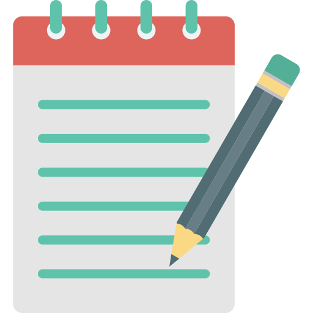

近期在读 |
 笔记待理 |
已读完4-2 |
书堆 |
有声书 |
兴趣不大 |
虚构小说 |
工具书 |
暂无资源 |
已排除1-0 |
| 4.原作可买来收藏-红色 | 3.原作值得反复读-橙色 | 2.笔记值得反复看-绿色 | 1.读完没必要再读-石色 | 0.未读完不值得读-灰色 |
近期在读/听的书
| 中文版 | 英文/原版 | 作者|译者 | 其他 |
|---|---|---|---|
| 美国种族简史 | Ethnic America: A History | [美]托马斯·索威尔（Thomas Sowell） 著|沈宗美 译 | |
| 切蛋糕：创业公司动态股权分配全案 | Slicing Pie: Funding Your Company Without Funds | [美]麦克·莫耶（Mike Moyer） 著|王闻 李筱莹 常逸昆 译 | 在亚马逊买了电子版；同译者2014版《切蛋糕：创业公司如何确立动态股权分配机制》 |
| Slicing Pie Handbook: Perfect Equity Splits for Startups | [美]麦克·莫耶（Mike Moyer） 著| 译 | ||
| 2023年注册会计师全国统一考试辅导教材：会计 | 中国注册会计师协会 组织编写 | ||
| 聪明的投资者 | The Intelligent Investor (Revised Edition) | [美]本杰明·格雷厄姆（Benjamin Graham） 著|王中华 黄一义 译 | 第四版 |
| 投资最重要的事：顶尖价值投资者的忠告 | The Most Important Thing: Uncommon Sense for the Thoughtful Investor | [美]霍华德·马克斯（Howard Marks） 著|李莉 石继志 译 | |
| 用普通股进行长期投资 | Common Stocks as Long Term Investments | [美]埃德加·史密斯（Edgar Lawrence Smith） 约翰·穆迪 著|曹泽枝 刘军伟 译 | |
| 攻守：可转债投资实用手册 | 饕餮海 定风波 优美 | ||
| 创业维艰：如何完成比难更难的事 | The Hard Thing about Hard Things: Building a Business When There Are No Easy Answers | [美]本·霍洛维茨（Ben Horowitz） 著|杨晓红 钟莉婷 译 | |
| 人性的弱点：如何赢得友谊并影响他人 | How to Win Friends And Influence People | [美]戴尔·卡内基（Dale Carnegie） 著|韩文桥 译 | 作者的其他书《人性的光辉》、《美好的人生》、《快乐的人生》、《伟大的人物》、《语言的突破》，《积极的人生》、《写给女孩子》、《智慧的锦囊》、《如何停止忧虑开创人生》 |
| 滚雪球：巴菲特和他的财富人生 | The Snowball: Warren Buffett and the Business of Life | [美]艾丽斯·施罗德（Alice Schroeder） 著|覃扬眉 等译 | 老唐：推荐 |
| 穷查理宝典：查理·芒格的智慧箴言录 | Poor Charlie's Almanack: The Wit and Wisdom of Charles T. Munger | [美]彼得·考夫曼（Peter D. Kaufman） 编|李继宏 译 | 老唐：推荐 |
| 安全边际：有思想投资者的价值投资避险策略 | Margin of Safety: Risk-Averse Value Investing Strategies for the Thoughtful Investor | [美]塞斯·卡拉曼（Seth A. Klarman） 著|张志雄 译 | 老唐：推荐 |
| 财务诡计：如何识别财务报告中的会计诡计和舞弊（原书第4版） | Financial Shenanigans: How to Detect Accounting Gimmicks and Fraud in Financial Reports | [美]霍华德·M·施利特（Howard M. Schilit） [美]杰里米·佩勒（Jeremy Perler） [美]尤尼·恩格尔哈特（Yoni Engelhart） 著|续芹 等译 | 赵银德 张平 沈维华 译本《财务诡计：揭秘财务史上13大骗术44种手段（原书第3版）》 |
| 大而不倒 | Too Big To Fail | [美]安德鲁·罗斯·索尔金（Andrew Ross Sorkin） 著|巴曙松 陈剑 等译 | |
| 投资圣经：巴菲特的真实故事 | Of Permanent Value: The Story of Warren Buffett | [美]安德鲁·基尔帕特里克（Andrew Kilpatrick） 著|何玉柱 等译 | 老唐：推荐。英文最新有2020版，无资源。 |
| 施洛斯访谈集 | Walter Schloss Collections | [美]沃尔特·施洛斯（Walter J. Schloss） | 了解施洛斯为数不多的资料。老唐：推荐，无正版，淘宝有翻印本，雪球@ranran译 |
| 手把手教你读财报：财报是用来排除企业的 | 唐朝 | [2读]手把手教你读财报：陪读问答 | |
| 房债：为什么会出现大衰退，如何避免重蹈覆辙 | House of Debt: How They (and You) Caused the Great Recession, and How We Can Prevent It from Happening Again | [美]阿蒂夫·迈恩（Atif Mian） [美]阿米尔·苏非（Amir Sufi） 著|何志强 邢增艺 译 | |
| 系统性财务造假揭秘与审计攻略 | 洞炎 | ||
| 价值投资之茅台大博弈 | 董宝珍 | 对于茅台非常有见解的分析 | |
| 世界是红的：看懂中国经济格局的一本书 | 白云先生 | ||
| 金钱博弈：重振韩国第一银行内幕 | 单伟建 | ||
| 非暴力沟通（爱的语言） | Nonviolent Communication: A Language of Life | [美]马歇尔·卢森堡（Marshall B. Rosenberg） 著|阮胤华 译 | |
| 在苍茫中传灯：一个投资者20年的知与行 | 姚斌（一只花蛤） | 正在看…… | |
| X光下看腾讯 | 蓝狮子 编 | 老唐：推荐阅读 | |
| 我曾走在崩溃的边缘：俞敏洪亲述新东方创业发展之路 | 俞敏洪 | ||
| 跨境电商与国际物流：机遇、模式及运作 | 孙韬 | ||
| 巴菲特教你读财报 | Warren Buffett and the Interpretation of Financial Statements: The Search for the Company with a Durable Competitive Advantage | [美]玛丽·巴菲特（Marry Buffett） [美]戴维·克拉克（David Clark） 著|李凤 译 | 台湾译本《巴菲特的真本事：史上最强投资家的财报阅读力》 |
| 不原谅也没关系：复杂性创伤后压力综合征自我疗愈圣经 | Complex PTSD: From Surviving to Thriving | [美]皮特·沃克（Pete Walker） 著|严菲菲 译 | |
| 白话港股投资：手把手教你投资港股 | 范俊青 | ||
| 傻子别传 | 朱华 解正中 呼安泰 | ||
| 超越生命：哈默博士传 | Larger Than Life: A Biography of the Remarkable Dr. Armand Hammer | [美]鲍勃·康西丹（Bob Considine） 著|中国社会科学院美国研究所编译组 译 | |
| 十亿美金的教训 | 林军 唐宏梅 | ||
| 微习惯：简单到不可能失败的自我管理法则 | Mini Habits: Smaller Habits, Bigger Results | [美]斯蒂芬·盖斯（Stephen Guise） 著|桂君 译 | minihabits.com |
| 美国习惯用语 | VOA美国之音 | ||
| 富甲美国：沃尔玛创始人山姆·沃尔顿自传 | Sam Walton: Made in America | [美]山姆·沃尔顿（Sam Walton） [美]约翰·休伊（John Huey） 著|杨蓓 译 | 正在看...老唐：推荐。沈志彦旧译本《萨姆·沃尔顿自传》 |
| 暗池：高频交易及人工智能大盗颠覆金融世界的对决 | Dark Pools: The Rise of the Machine Traders and the Rigging of the U.S. Stock Market | [美]斯科特·帕特森（Scott Patterson） 著|孙豪 王泽宪 李骥宇 等译 | |
| 肠子的小心思：一个被人类低估了的超级器官 | Darm mit Charme: Alles uber ein unterschatztes Organ | [德]朱莉娅·恩德斯（Giulia Enders） 著|钱为 译 | |
| 伟大的复利 | 沈帅波 | ||
| 妇产科男医生告诉你 | 田吉顺 | ||
| 经济为什么会崩溃：鱼、美元和经济学的故事 | How an Economy Grows and Why It Crashes | [美]彼得·D·希夫（Peter D. Schiff） 安德鲁·J·希夫（Andrew J. Schiff） 著|胡晓姣 吕靖纬 译 | 另译名《小岛经济学：鱼、美元和经济的故事》 |
| 我为什么离开高盛 | Why I Left Goldman Sachs: A Wall Street Story | [美]格雷格·史密斯（Greg Smith） 著|徐彬 译 | |
| 巴菲特的第一桶金 | The Deals of Warren Buffett: Volume 1, the First $100M | [英]格伦·阿诺德（Glen Arnold） 著|杨天南 译 | |
| 美卿：一个中国女子的创业奇迹 | 叶梅 | ||
| 阅读的版图 | 中国金融博物馆 编著 | ||
| 有了博士学位还不够：学术生涯指南 | A PhD Is Not Enough!: A Guide to Survival in Science | Peter J. Feibelman|钱佑华 译 | |
| 价值发现：一个价值投资者的投资札记 | 张靖东 | ||
| 只是为了好玩：Linux之父林纳斯自传 | Just for Fun: The Story of an Accidental Revolutionary | [美]Linus Torvalds, David Diamond 著|陈少芸 译 | 整理笔记用的文字版与看书时用的扫描版在翻译上有出入 |
| 财务是个真实的谎言 | 钟文庆 | ||
| 价值：我对投资的思考 | 张磊 | ||
| 环球投资旅行：穿越六大洲的投资奇遇 | World Right Side Up: Investing Across Six Continents | [美]克里斯托弗·迈耶（Christopher Mayer） 著|徐梦蔚 钟娜 译 | |
| 创业学绝味：一根鸭脖的商业奇迹 | 郭宇宽 | ||
| 药物简史：鸦片、奎宁、阿司匹林与我们的抗病故事 | Taking the Medicine: A Short History of Medicines Beautiful Idea, and our Difficulty Swallowing It | [英]德劳因·伯奇（Druin Burch） 著|梁余音 译 | 旧译版《医药的真相：别让药品害了你》翻译水平不如新版且已找不到完整资源 |
| 全球上瘾：咖啡如何搅动人类历史 | Kaffee: Die Biografie eines weltwirtschaftlichen Stoffes | [德]海因里希·爱德华·雅各布（Heinrich Eduard Jacob） 著|陈琴 俞珊珊 译 | |
| 走红：如何打造个人品牌 | Getting to Like: How to Boost Your Personal and Professional Brand to Expand Opportunities, Grow Your Business, and Achieve Financial Success | [美]杰瑞米·戈德曼（Jeremy Goldman） [美]阿里·扎格特（Ali B. Zagat） 著|孔繁冬 译 | |
| 抢占心智：产品与品牌快速崛起的引爆打法 | 江南春 | 老唐：可选阅读 | |
| 别让小情绪害了你 | The Fear & Anxiety Solution | [美]弗雷德曼·肖普（Friedemann Schaub） 著|于非 译 | |
| 我的奋斗 | 罗永浩 | ||
| 20个月赚130亿：YouTube创始人陈士骏自传 | [美]陈士骏 张黎明 著 | ||
| 邻家的百万富翁 | The Millionaire Next Door: The Surprising Secrets of America's Rich | [美]托马斯·斯坦利（Thomas J. Stanley Ph.D.） [美]威廉·丹科（William D. Danko Ph.D.） 著|朱鸿飞 译 | |
| 仿制药的真相 | Bottle of Lies: The Inside Story of the Generic Drug Boom | [美]凯瑟琳·埃班（Katherine Eban） 著|高天羽 译 | |
| 抱住棒棒的自己 | 徐慢慢心理话 著绘 | ||
| 长期的力量：如何构建可持续的价值投资盈利体系 | 梁宇峰 | 老唐：阅读记录照片有，没推荐 | |
| 聪明的阅读者：何为读？如何读？读什么？ | 阳志平 | ||
| 深奥的简洁：从混沌、复杂到地球生命的起源 | Deep Simplicity: Bring Order to Chaos and Complexity | [英]约翰·葛瑞本（John Gribbin）著|张宪润 译 | |
| 迷人的温度：温度计里的人类、地球和宇宙史 | A Matter of Degree: What Temperature Reveals about the Past and Future of Our Species, Planet, and Universe | [美]吉诺·塞格雷（Gino Segre） 著|高天羽 译 | 田静如译本《温度，决定一切》繁体竖排版，作者名译为 吉诺·沙格瑞； |
| 股惑：百年中国股史的九个瞬间 1872~1998 | 孙骁骥 | 老唐：强烈推荐5分 | |
| 去依附：中国化解第一次经济危机的真实经验 1949-1952 | 董筱丹 温铁军 | ||
| 人人时代：无组织的组织力量 | Here Comes Everybody: The Power of Organizing Without Organizations | [美]克莱·舍基（Clay Shirky） 著|胡泳 译 | |
| 认知盈余：自由时间的力量 | Cognitive Surplus: Creativity and Generosity in a Connected Age | [美]克莱·舍基（Clay Shirky） 著|胡泳 哈丽丝 译 | |
| 明明白白看年报（第3版） | 袁克成 | [2读] | |
| 风投大败局：关于中国风险投资失败的MBA式教案 | 刘洪飞 于俊燕 | ||
| 从报表看企业：数字背后的秘密（第4版） | 张新民 | ||
| 真希望我20几岁就知道的事：写给未来50年社会精英的人生创意书！ | What I Wish I Knew When I Was 20: A Crash Course on Making Your Place in the World | [美]蒂娜·齐莉格（Tina Seeling） 著|邢爽 裴卫芳 译 | |
| 巴菲特的伯克希尔崛起：从1亿到10亿美金的历程 | The Deals of Warren Buffett: Volume 2, The Making of a Billionaire | [英]格伦·阿诺德（Glen Arnold） 著|杨天南 译 | |
| The Deals of Warren Buffett: Volume 3, Making America's Largest Company | [英]格伦·阿诺德（Glen Arnold） 著| 译 | ||
| 亿万美元的错误 | The Billion Dollar Mistake: Learning the Art of Investing through the Missteps of Legendary Investors | [美]斯蒂芬·韦斯（Stephen L. Weiss） 著|李丹青 译 | |
| 文明、现代化、价值投资与中国 | 李录 | 老唐：推荐 | |
| 社会性征服地球 | The Social Conquest of Earth | [美]爱德华·奥斯本·威尔逊（Edward O. Wilson） 著|朱机 译 | 李录推荐。鄧子衿 译本《群的征服：人的演化、人的本性、人的社會，如何讓人成為地球的主導力量》 |
| 中国式价值投资 | 李驰 | ||
| 注定一战：中美能避免修昔底德陷阱吗？ | Destined for War: Can America and China Escape Thucydides's Trap? | [美]格雷厄姆·艾利森（Graham Allison） 著|陈定定 傅强 译 | |
| 财富自由：平民出身的富豪积累财富的原则和方法 | The Next Millionaire Next Door: Enduring Strategies for Building Wealth | [美]托马斯·J·斯坦利（Thomas J. Stanley） [美]萨拉·斯坦利·弗洛（Sarah Stanley Fallaw） 著|陈子倩 译 | |
| 埃隆·马斯克传 | Elon Musk | [美]沃尔特·艾萨克森（Walter Isaacson） 著|孙思远 刘家琦 译 | |
| 财富的逻辑 | 《有钱人的秘密》里提到的书，之前也听说过这个名字 | ||
| 不可消失的门店：后电商时代的零售法则 | Location Is Still Everything: The Surprising Influence of the Real World on How We Search, Shop, and Sell in the Virtual One | [美]大卫·贝尔（David R. Bell） 著|苏健 译 | |
| 黑天鹅：如何应对不可预知的未来（升级版） | The Black Swan: The Impact of the Highly Improbable | [美]纳西姆·尼古拉斯·塔勒布（Nassim Nicholas Taleb） 著|万丹 刘宁 译 | 没读完，笔记也没整理完 |
| 癌症·真相：医生也在读 | 菠萝 | ||
| 您厉害，您赚得多：聪明投资者的聊天记录 | 方三文 | ||
| 只有医生知道！2 | 张羽 | ||
| 最高职责：看英雄机长如何用一生的信仰寻求安全之路 | Sully: My Search for What Really Matters | [美]切斯利·萨伦伯格（Chesley B. Sullenberger） [美]杰夫·扎斯洛（Jeffrey Zaslow） 著|杨元元 译 | 还没看完，在md文件中标明了“看到这里”进度 |
| 煤气灯效应：如何认清并摆脱别人对你生活的隐性控制 | The Gaslight Effect: How to Spot and Survive the Hidden Manipulation Others Use to Control Your Life | [美]罗宾·斯特恩（Robin Stern） 著|刘彦 译 | |
| 徐新：22亿美元算什么 | 青云 | ||
| 成为母亲：一名知识女性的自白 | A Life's Work: On Becoming a Mother | [英]蕾切尔·卡斯克（Rachel Cusk） 著|黄建树 译 | |
| 稀缺：我们是如何陷入贫穷与忙碌的 | Scarcity: Why Having Too Little Means So Much | [美]塞德希尔·穆来纳森（Sendhil Mullainathan） [美]埃尔德·沙菲尔（Eldar Shafir） 著|魏薇 龙志勇 译 | |
| 清醒地活：超越自我的生命之旅 | The Untethered Soul: The Journey Beyond Yourself | [美]迈克·辛格（Michael A. Singer） 著|汪幼枫 陈舒 译 | 曾早垒 译本《不羁的灵魂：超越自我的旅程》读起来更顺畅一些 |
| 自信的陷阱：如何通过有效行动建立持久自信 | The Confidence Gap: A Guide to Overcoming Fear and Self-Doubt | [澳]路斯·哈里斯（Russ Harris） 著|王怡蕊 陆杨 译 | |
| 演讲的力量 | Ted Talks: The Official TED Guide to Public Speaking | [美]克里斯·安德森（Chris Anderson） 著|蒋贤萍 译 | |
| 是我把你蠢哭了吗 | Idiot Brain: What Your Head Is Really Up To | [英]迪安·博内特（Dean Burnett） 著|朱机 译 | |
| 破天机：基因编辑的惊人力量 | A Crack In Creation: Gene Editing and the Unthinkable Power to Control Evolution | [美]珍妮佛·杜德娜（Jennifer A. Doudna） [美]塞缪尔·斯滕伯格（Samuel H. Sternberg） 著|傅贺 译 | |
| 狩猎财富：沈南鹏向左，熊晓鸽向右 | 梁素娟 | ||
| 制药业的真相：一个2000亿美元的行业如何欺骗了我们 | The Truth About the Drug Companies: How They Deceive Us and What to Do About It | [美]玛西娅·安吉尔（Marcia Angell） 著|续芹 译 | |
| 不完美决策：完成比完美更重要 | Better, not Perfect: A Realist's Guide to Maximum Sustainable Goodness | [美]马克斯·巴泽曼（Max H. Bazerman） 著|李亚丽 译 | |
| 摆脱精神内耗：为什么我们总被内疚、自责和负罪感支配 | Let Go of the Guilt: Stop Beating Yourself Up and Take Back Your Joy | [美]瓦洛丽·伯顿（Valorie Burton） 著|苑东明 刘惠 译 | |
| 如何阅读一本书 | How to Read a Book: The Classic Guide to Intelligent Reading | [美]莫提默·艾德勒（Mortimer J. Adler） [美]查尔斯·范多伦（Charles Van Doren） 著|郝明义 译 | |
| 魔丸的诞生 | The Birth of the Pill: How Four Crusaders Reinvented Sex and Launched a Revolution | [美]乔纳森·艾格（Jonathan Eig） 著|语冰 译 | |
| 社交媒体假象 | Unfiltered: How to Be as Happy as You Look on Social Media | [美]杰茜卡·艾宝（Jessica Abo） 著|阎蕙群 译 | |
| 推特机器：为何我们无法摆脱社交媒体？ | The Twittering Machine | [英]理查德·西摩（Richard Seymour） 著|王伯笛 译 | |
| 苏世民：我的经验与教训 | What It Takes: Lessons in the Pursuit of Excellence | [美]苏世民（Stephen A. Schwarzman） 著|赵灿 译 | |
| 伯南克论大萧条：经济的衰退与复苏 | Essays on the Great Depression | [美]本·伯南克（Ben S. Bernanke） 著|陈剑 译 | |
| 宽客：华尔街顶级数量金融大师的另类人生 | The Quants: How a New Breed of Math Whizzes Conquered Wall Street and Nearly Destroyed It | [美]斯科特·帕特森（Scott Patterson） 著|卢开济 译 | |
| 扫地出门：美国城市的贫穷与暴利 | Evicted: Poverty and Profit in the American City | [美]马修·德斯蒙德（Matthew Desmond） 著|胡䜣谆 郑焕升 译 | |
| 每股收益的质量：投资者了解公司真实盈利状况的指南 | Quality of Earnings: The Investor's Guide to How Much Money a Company is Really Making | [美]桑顿·奥格洛夫（Thornton L. O'glove） 著|马林梅 译 | |
| 亲历巴菲特股东大会 | Pilgrimage to Warren Buffett's Omaha: A Hedge Fund Manager's Dispatches from Inside the Berkshire Hathaway Annual Meeting | [美]杰夫·马修斯（Jeff Matthews） 著|周磊 译 | |
| 被讨厌的勇气 | [日]岸见一郎 著|渠海霞 译 | ||
| 被拒绝的勇气：写给年轻人的阿德勒心理学课 | [日]岸见一郎 著|何慈毅 译 | ||
| 爱的八次约会：创造一生的亲密关系 | Eight Dates: Essential Conversations for a Lifetime of Love | [美]约翰·戈特曼（John Gottman） [美]朱莉·施瓦茨·戈特曼（Julie Schwartz Gottman） [美]瑞秋·卡尔顿·艾布拉姆斯（Rachel Carlton Abrams） [美]道格·艾布拉姆斯（Doug Abrams） 著|王姗姗 译 | |
| 好的婚姻，要守护财产和爱 | 吴杰臻 | 2021年有升级增订版 | |
| 明智行动的艺术：你最好让别人去犯的52种行为错误 | Die Kunst des klugen Handelns: 52 Irrwege, die Sie besser anderen überlassen | [德]罗尔夫·多贝里（Rolf Dobelli） 著|刘菲菲 译 | |
| 为什么精英都是清单控 | Listful Thinking: Using Lists to Be More Productive, Successful and Less Stressed | [美]宝拉·里佐（Paula Rizzo） 著|郑焕升 译 | |
| 那些比拼命努力更重要的事：哈佛大学研究了75年的幸福课 | Triumphs of Experience: The Men of The Harvard Grant | [美]乔治·维兰特（George E. Vaillant） 著|刘晓同 牛津 李囡 译 | |
| 始于极限：女性主义往复书简 | [日]上野千鹤子 [日]铃木凉美 著|曹逸冰 译 | ||
| 隐身大师：“二战”无名英雄30年隐秘生涯首度公开 | Adolfo Kaminsky, une vie de faussaire | [法]萨拉·卡明斯基（Sarah Kaminsky） 著|廖晓玮 译 | |
| 有效学习 | Learn Better: Mastering the Skills for Success in Life, Business, and School, or, How to Become an Expert in Just About Anything | [美]乌尔里希·伯泽尔（Ulrich Boser） 著|张海龙 郭霞 译 | |
| 美国底层：一个真实又割裂的美国社会图景 | Dignity: Seeking Respect in Back Row America | [美]克里斯·阿纳德（Chris Arnade） 著|许楠 译 | |
| 战争狂想者：揭秘美国国防部高级研究计划局 | The Imagineers of War: The Untold Story of DARPA, the Pentagon Agency That Changed the World | [美]沙龙·温伯格（Sharon Weinberger） 著|陈向阳 译 | |
| 无处不在：快递改变中国 | 中国邮政快递报社 | ||
| 我们为什么会受骗 | The Confidence Game: Why We Fall for It… Every Time | [美]玛丽亚·康妮科娃（Maria Konnikova） 著|孙鹏 译 | |
| 自卑与超越：自卑，其实是走向卓越的精神原动力！ | What Life Should Mean To You | [奥地利]阿尔弗雷德·阿德勒（Alfred Adler） 著|韩阳 译 | 有多个译者版本 |
| 洞察人性 | Understanding Human Nature | [奥地利]阿尔弗雷德·阿德勒（Alfred Adler） 著|彭科明 何晚晴 译 | |
| 阿德勒的生命重建课 | The Science of Living | [奥地利]阿尔弗雷德·阿德勒（Alfred Adler） 著|张积模 江美娜 译 | |
| 接纳另一个不完美的自己：阿德勒勇气心理学 | [奥地利]阿尔弗雷德·阿德勒（Alfred Adler） 著|王莉 编译 | ||
| 人，做得到任何事：阿德勒心理学讲义 | [奥地利]阿尔弗雷德·阿德勒（Alfred Adler） 著|吴书榆 译 | ||
| 性格心理学 | [奥地利]阿尔弗雷德·阿德勒（Alfred Adler） 著|郑世彦 译 | ||
| 阿德勒：在自我启发中成长 | [奥地利]阿尔弗雷德·阿德勒（Alfred Adler） 著|王晓琳 译 | ||
| 如何拥抱一只刺猬：恋爱与婚姻中的人格识别、接纳与付出 | 段鑫星 李文文 赵亚平 | ||
| 成为乔布斯 | Becoming Steve Jobs: The Evolution of a Reckless Upstart into a Visionary Leader | [美]布伦特·施兰德（Brent Schlender） [美]里克·特策利（Rick Tetzeli） 著|陶亮 译 | |
| 当时忍住就好了：哈佛大学性格自修课 | Your Killer Emotions | [美]肯·林德纳（Ken Lindner） 著|钱峰 译 | |
| 第3选择：解决所有难题的关键思维 | The 3rd Alternative: Solving Life's Most Difficult Problems | [美]史蒂芬·柯维（Stephen R. Covey） 著|李莉 石继志 译 | |
| 沸腾十五年：中国互联网1995-2009 | 林军 | ||
| 疯狂成瘾者：TED脑科学家的戒瘾成功之路 | Memoirs of an Addicted Brain: A Neuroscientist Examines his Former Life on Drugs | [加]马克·刘易斯（Marc Lewis） 著|石湖清 译 | |
| 富有的习惯 | Rich Habits: The Daily Success Habits of Wealthy Individuals | [美]托马斯·科里（Thomas C. Corley） 著|程静 刘勇军 译 | |
| 会好的：悲观者常常正确，乐观者往往成功 | The Power of Bad: How the Negativity Effect Rules Us and How We Can Rule It | [美]罗伊·鲍迈斯特（Paul Bellantoni） [美]约翰·蒂尔尼（John Tierney） 著|牛小婧 译 | |
| 参与感：小米口碑营销内部手册 | 黎万强 | 老唐：可选阅读 | |
| 棋行天下 | 董明珠 | ||
| 快乐单身守则：心无阻碍幸福自来的心理学 | How to Be Single and Happy: Science-Based Strategies for Keeping Your Sanity While Looking for a Soulmate | [美]詹妮弗·泰茲（Jennifer L. Taitz） 著|陈洁瑜 译 | |
| 褚时健传 | 周桦 | ||
| 褚时健传（新版） | 先燕云 张赋宇 | 有2014旧版；先燕云著《褚时健1928-1979：燃情年代》《褚时健1995-至今：峥嵘岁月》分两本书的版本； | |
| 褚橙你也学不会 | 黄铁鹰 | ||
| 创京东：刘强东亲述创业之路 | 李志刚 | ||
| 创业在路上 | 罗永浩 | ||
| 风口上的猪：一本书看懂互联网金融 | 肖璟（狐狸君） | 网评不佳 | |
| 浪潮之巅 | 吴军 | 第4版 | |
| 硅谷之谜：《浪潮之巅》续集 | 吴军 | ||
| 大侦探投资学 | The Detective and the Investor: Uncovering Investment Techniques from Legendary Sleuths | [美]罗伯特·哈格斯特朗（Robert G. Hagstrom） 著|崔振巍 译 | |
| 刷新：重新发现商业与未来 | Hit Refresh: The Quest to Rediscover Microsoft's Soul and Imagine a Better Future for Everyone | [美]萨提亚·纳德拉（Satya Nadella） 著|陈召强 杨洋 译 | 本书是微软CEO萨提亚·纳德拉首部作品 |
| 爱彼迎传：打造让用户热爱的产品 | The Airbnb Story: How Three Ordinary Guys Disrupted and Industry, Made Billions and Created Plenty of Controversy | [美]利·加拉格尔（Leigh Gallagher） 著|唐昉 林星宇 译 | |
| 无界：企业如何在全球互联时代生存 | Anywhere: How Global Connectivity Is Revolutionizing the Way We Do Business | [美]艾米莉·内格尔·格林（Emily Nagle Green） 著|卞斌 译 | |
| 菲利普·科特勒传：世界皆营销 | My Adventures in Marketing: The Autobiography of Philip Kotler | [美]菲利普·科特勒（Philip Kotler） 著|魏世安 贾金红 译 | |
| 认同感：用故事包装事实的艺术 | StoryBranding: Creating Stand-out Brands Through the Power of Story: Creating Stand-Out Branding | [美]吉姆·西诺雷利（Jim Signorelli） 著|刘巍巍 孟艳 李佳 译 | 有第二版 |
| 我们需要多少钱 | The Secret Language of Money: How to Make Smarter Financial Decisions and Lead a Richer Life | [美]大卫·克鲁格（David Krueger） [美]约翰·大卫·曼（John David Mann） 著|马惠 等译 | |
| 百岁人生：长寿时代的生活和工作 | The 100-Year Life: Living and Working in an Age of Longevity | [英]琳达·格拉顿（Lynda Gratton） [英]安德鲁·斯科特（Andrew Scott） 著|吴奕俊 译 | |
| 红天鹅：中国独特治理与制度创新 | Red Swan: How Unorthodox Policy-Making Facilitated China's Rise | [德]韩博天（Sebastian Heilmann） 著|石磊 译 | |
| 控糖革命 | Glucose Revolution: The Life-Changing Power of Balancing Your Blood Sugar | [法]杰西·安佐斯佩（Jessie Inchauspé） 著|张艳娟 译 | |
| 瘾：让人上瘾的产品、广告与创意背后的秘密 | 吴文芳 | ||
| 做官：13位中国官员应对危机之道 | 朱文轶 | ||
| 投资者的未来 | The Future for Investors: Why the Tried and the True Triumph Over the Bold and the New | [美]杰米里·西格尔（Jeremy J. Siegel） 著|李月平 等译 | 老唐：推荐 |
| 亲历投行：中国投行的若干传言与真相（增订版） | 班妮 | 2014旧版、2017增订版 | |
| 荣辱二十年：我的股市人生 | 阚治东 | 老唐：看过，可以 | |
| 蛛网：谁操纵了全球资金市场 | The Spider Network: The Wild Story of a Math Genius, a Gang of Backstabbing Bankers, and One of the Greatest Scams in Financial History | [美]戴维·恩里奇（David Enrich） 著|雷曜 译 | 老唐：猎奇性质的金融书籍，值得一读 |
| 会计数字游戏：美国十大财务舞弊案例剖析 | 黄世忠 | 上市公司财务舞弊案剖析丛书（共5册） | |
| 注册会计师：经济警察吗 | 李若山 | 上市公司财务舞弊案剖析丛书（共5册） | |
| 信息披露：实话实说 | 刘峰 | 上市公司财务舞弊案剖析丛书（共5册） | |
| 美国的公司治理：马奇诺防线 | 李维安 | 上市公司财务舞弊案剖析丛书（共5册） | |
| 美国公司文化：潘多拉的盒子 | 薛有志 郗沭平 | 上市公司财务舞弊案剖析丛书（共5册） | |
| 乱世华尔街：一位华人交易员的经历 | 渔阳 | 老唐：推荐阅读 | |
| 投资大白话 | 我是腾腾爸 | ||
| 笑死你的经济学 | 王宇 编著 | ||
| 骗局之王：查尔斯·庞兹自传 | The Rise of Mr. Ponzi | [美]查尔斯·庞兹（Charles Ponzi） 著|周旭 译 | 老唐：推荐阅读 |
| 投资的本质：段永平讲述投资的底层逻辑 | 孙力科 | ||
| 千万别说你懂买房 | 徐斌 | ||
| 钱意识：聊一聊99%的人都忽视的秘密 | 沈诱冰 | 网评一般 | |
| 企业生命周期 | Managing Corporate Lifecycles | 伊查克·爱迪思（Ichak Adizes） 著|王玥 译 | |
| 钱从哪里来：中国家庭的财富方案 | 唐涯 | ||
| 让数字说话：审计，就这么简单 | 孙含晖 王苏颖 阎歌 | ||
| 通向财务自由之路：心理实战篇 | Trading Beyond the Matrix: the Red Pill for Traders and Investors | [美]范·撒普（Van K. Tharp） 著|郑磊 王占新 译 | |
| 通向财务自由之路 | Trade Your Way to Finacial Freedom | [美]范·撒普（Van K. Tharp） 著|董梅 译 | |
| 你的钱为什么变薄了？通货膨胀的真相 | What Has Government Done to Our Money? | Murray N. Rothbard | |
| 投资的怪圈：成为洞察人性的聪明投资者 | Your Money and Your Brain: How the New Science of Neuroeconomics Can Help Make You Rich | [美]贾森·茨威格（Jason Zweig） 著|蒋宗强 译 | |
| 投资者的敌人 | 朱宁 | 老唐：没看完，后来也没再提，这里说了有趣 | |
| 从众危机：量化投资与金融浩劫 | The Crisis of Crowding: Quant Copycats, Ugly Models, and the New Crash Normal | [美]路德维希·B.·钦塞瑞尼（Ludwig B.Chincarini） 著|李必龙 李羿 郭海 译 | |
| 城里的房子：读懂中国房产财富的逻辑 | 徐远 | ||
| 创业板投资28讲 | 深圳证券交易所投资者教育中心 | ||
| 戴维斯王朝 | The Davis Dynasty: Fifty Years of Successful Investing on Wall Street | [美]约翰·罗斯柴尔德（John Rothchild） 著|杨天南 译 | 老唐：推荐 |
| 财报粉饰面对面 | 郑朝晖 | 老唐：不太系统，旧文合集没标注发表时间，看着略费劲。我：非常详实的造假方式介绍，干货满满。 | |
| 让财报说话：世界500强CFO带你轻松读财报 | 郑永强 | ||
| 剑指新三板：操作实务+案例分析+税务筹划 | 麦绮敏 | ||
| 沈南鹏传：做最擅长的事 | 张笑恒 |
已读完，笔记待整理
已读完且整理好笔记的好书，评分 4~2
| 中文版 | 英文/原版 | 作者|译者 | 其他 |
|---|---|---|---|
| 商战 | Marketing Warfare | [美]里斯（Al Ries） [美]特劳特（Jack Trout） 著|李正栓 李腾 等译 | |
| 从0到1：开启商业与未来的秘密 | From Zero to One | [美]彼得·蒂尔 [美]布莱克·马斯特斯 著|高玉芳 译 | |
| 史蒂夫·乔布斯传（修订版） | Steve Jobs: A Biography | [美]沃尔特·爱萨克森（Walter Isaacson） 著|管延圻 魏群 余倩 赵萌萌 译 | |
| 定位：有史以来对美国营销影响最大的观念 | Positioning: The Battle for Your Mind | [美]里斯（Al Ries） [美]特劳特（Jack Trout） 著|谢伟山 苑爱冬 译 | |
| 巴菲特之道（原书第3版） | The Warren Buffett Way (3rd Edition) | [美]罗伯特·哈格斯特朗（Robert G. Hagstrom） 著|杨天南 译 | |
| 迷人的材料：10种改变时间的神奇物质和它们背后的科学故事 | Stuff Matters: Exploring the Marvellous Materials that Shape Our Man-Made World | [英]马克·米奥多尼克（Mark Miodownik） 著|赖盈满 译 | |
| 一个投资家的20年 | 杨天南 | ||
| 创业小败局：创业公司长演不衰的21种经典死法（案例集） | 创业家 i黑马 编著 | ||
| 周鸿祎自述：我的互联网方法论 | 周鸿祎 | ||
| 颠覆者：周鸿祎自传 | 周鸿祎 范海涛 | ||
| 安慰剂效应：TED临床医生亲身实践的非药物疗愈法 | Mind Over Medicine | [美]莉萨·兰金（Lissa Rankin） 著|刘文 译 | |
| 舌尖上的騙局：找回食物真原味！人工假味和無味食物正讓我們上癮？！ | The Dorito Effect: The Surprising New Truth About Food and Flavor | [美]馬克‧史蓋茲克（Mark Schatzker） 著|邓子衿 译 | [网站] |
| 打开一颗心：一位心外科医生手术台前的生死故事 | Fragile Lives: A Heart Surgeon's Stories of Life and Death on the Operating Table | [英]斯蒂芬·韦斯塔比（Stephen Westaby） 著|高天羽 译 | |
| 老人与海 | The Old Man And The Sea | [美]偶内斯特·海明威（Ernest Hemingway, 1899-1961） 著|鲁羊 译 | |
| 基层女性：爱、金钱与精神世界的建立 | 王慧玲 | ||
| 2小时品牌素养：详解王老吉成功之道 | Positioning In China | 邓德隆 | |
| 人生定位：特劳特教你营销自己 | Horse Sense: The Keys Of Success Is Finding A Horse To Ride | [美]里斯（Al Ries） [美]特劳特（Jack Trout） 著|何峻 王俊兰 等译 | |
| 股市稳赚 | The Little Book That Still Beats The Market | [美]乔尔·格林布拉特（Joel Greenblatt） 著|李佳 卢晓晖 译 | magicformulainvesting.com 英文初版名字里没有Still一词 |
| 当呼吸化为空气 | When Breath Becomes Air | [美]保罗·卡拉尼什（Paul Kalanithi） 著|何雨珈 译 | |
| FBI教你破解身体语言：美国FBI超强阅人术，让你第一时间看透对方 | What Every Body Is Saying: An Ex-FBI Agent's Guide to Speed-Reading People | [美]乔·纳瓦罗（Joe Navarro） [美]马文·卡尔林斯（Marvin Karlins） 著|王丽 译 | |
| 年轻资本：金融风暴后华尔街的八个故事 | Young Money: Inside the Hidden World of Wall Street's Post-crash Recruits | [美]凯文·鲁斯（Kevin Roose） 著|陈治宇 译 | |
| 餐桌上的危机：一个关于禽肉、抗生素和努力对抗耐药菌的精彩故事 | Big Chicken: The Incredible Story of How Antibiotics Created Modern Agriculture and Changed the Way the World Eats | [美]玛丽安·麦克纳（Maryn McKenna） 著|吴勐 译 | |
| 牧羊少年奇幻之旅 | 原版：O Alquimista 英文： The Alchemist |
[巴西]保罗·柯艾略（Paulo Coelho） 著|丁文林 译 | |
| 行为上瘾：拿得起，放得下的心理学秘密 | 何圣君 | ||
| 疯狂咖啡因：日常习惯如何让我们得意、受害和沉迷 | Caffeinated: How Our Daily Habit Helps, Hurts, and Hooks Us | [美]默里·卡朋特（Murray Carpenter） 著|黄茂轩 刘宗为 译 | |
| 蛤蟆先生去看心理医生 | Counselling For Toads: A Psychological Adventure | [英]罗伯特·戴博德（Robert De Board） 著|陈赢 译 | |
| 人造恐慌：转基因全球实地考察 | 袁越 | ||
| 爱迪生：创新之源与商业成就的秘密 | [美]里昂纳多·迪格拉夫 著|周海燕 译 | ||
| 向死而生：我修的死亡学分 | 李开复 | ||
| 28岁赚千万：从负债百万到赚取千万的真实创业经历 | 穷富弹指间 | ||
| 干法 | [日]稻盛和夫 著|曹岫云 译 | ||
| 睡眠革命：如何让你的睡眠更高效 | SLEEP: The Myth of 8 Hours, the Power of Naps and the New Plan to Recharge Your Body and Mind | [英]尼克·利特尔黑尔斯（Nick Littlehales） 著|王敏 译 | |
| 欲罢不能：刷屏时代如何摆脱行为上瘾 | Irresistible: The Rise of Addictive Technology and the Business of Keeping Us Hooked | [美]亚当·奥尔特（Adam Alter） 著|闾佳 译 | |
| 彭楠的创业故事：手把手教你赚1000万 | 彭楠的创业故事 | ||
| Facebook之父马克·扎克伯格：后乔布斯时段的传奇 | [美]林志共 王静 著 | ||
| 富爸爸穷爸爸 | Rich Dad, Poor Dad | [美]罗伯特·T·清崎（Robert T. Kiyosaki） 著|萧明 译 | |
| 贫穷的本质：我们为什么摆脱不了贫穷 | Poor Economics: A Radical Rethinking of the Way to Fight Global Poverty | [印度]阿比吉特·班纳吉 [法]埃斯特·迪弗洛 著|景芳 译 | |
| 清醒思考的艺术 | Die Kunst Des klaren Denkes | [德]罗尔夫·多贝里（Rolf Dobelli） 著|朱刘华 译 | 有第2版 |
| 早晨型人更容易成功！ | [日]中岛孝志 著|董航 译 | ||
| 创业就是要细分垄断：互联网创业下半场机会路线图 | 李开复 汪华 傅盛 | ||
| 简单思考 | [日]森川亮 著|张舟 译 | ||
| 止损：如何克服贪婪和恐惧 | What I Learned Losing a Million Dollars | [美]吉姆·保罗（Jim Paul） [美]布伦丹·莫伊尼翰（Brendan Moynihan） 著|陈重亨 译 | 中文版仅有扫描版 |
| 一本书读懂财报 | 肖星 | ||
| 永久记录 | Permanent Record | [美]爱德华·斯诺登（Edward Snowden） 著|萧美慧 郑胜得 译 | |
| 沃兹传：与苹果一起疯狂 | iWoz: Computer Geek to Cult Icon | [美]史蒂夫·沃兹尼亚克（Steve Wozniak） 吉娜·史密斯（Gina Smith） 著|贺丽琴 阮天悦 译 | |
| 坏血：一个硅谷巨头的秘密与谎言 | Bad Blood: Secrets and Lies in a Silicon Valley Startup | [美]约翰·卡雷鲁（John Carreyrou） 著|成起宏 译 | |
| 但愿婚前我知道：12件预备婚姻的大事 | Things I Wish I'd Known Before We Got Married | [美]盖瑞·查普曼博士（Dr. Gary Chapman） 著|孙为鲲 译 | |
| 爱的五种语言：创造完美的两性沟通 | The Five Love Languages | [美]盖瑞·查普曼（Dr. Gary Chapman） 著|王云良 陈曦 译 | 扫描版仅有2010年出版的，与新版文字版在翻译上有点出入，新版在个别地方进行了更好的细节补充，读来更通顺。 |
| 暗网 | The Dark Net: Inside the Digital Underworld | [英]杰米·巴特利特（Jamie Bartlett） 著|刘丹丹 译 | |
| 若为自由故：自由软件之父理查德·斯托曼传 | Free as in Freedom: Richard Stallman's Crusade for Free Software | [美]Sam Williams 著|李凡希 译 |
书堆
| 中文版 | 英文/原版 | 作者|译者 | 其他 |
|---|---|---|---|
| 历年巴菲特致股东的信 | Berkshire Hathaway: Letters to Shareholders (1965~2021) | Max Olson | 这本书就是历年股东信合集 |
| 巴菲特致股东的信：投资者和公司高管教程（原书第4版） | The Essays of Warren Buffett: Lessons for Investors and Mangers (4th Edition) | [美]沃伦·巴菲特（Warren Buffett） 著|[美]劳伦斯·坎宁安（Lawrence A. Cunningham） 编|杨天南 译 | 生叔大局观，特别推荐机械工业出版社这一版。老唐：推荐。The Essays of Warren Buffett: Lessons for Corporate America (3rd Edition) 不知道跟这本是不是一样的，作者和编者似乎是一样的。2019年已经更新到第5版。 |
| 信任边际：伯克希尔·哈撒韦的商业原则 | Margin of Trust: The Berkshire Business Model | [美]劳伦斯·坎宁安（Lawrence A. Cunningham） [美]斯特凡妮·库巴（Stephanie Cuba） 著| 译 | 老唐：给了笔记和纠错，书算是有点价值，但评价不是很高 |
| 超越巴菲特的伯克希尔：股神企业帝国的过去与未来 | Berkshire Beyond Buffett: The Enduring Value of Values | [美]劳伦斯·坎宁安（Lawrence A. Cunningham） 著|王冠亚 译 | 对于了解伯克希尔非上市子公司很有帮助。没找到中文版资源 |
| 23位杰出企业领导者致投资者的信：关于资本配置的经验与教训 | Dear Shareholder: The Best Executive Letters from Warren Buffett, Prem Watsa and Other Great CEOs | [美]劳伦斯·坎宁安（Lawrence A. Cunningham） 著|彭相珍 译 | 陳重亨 译本《親愛的股東：巴菲特、貝佐斯與20位高績效執行長的經營智慧》 |
| 巴菲特的嘉年华：伯克希尔股东大会的故事 | The Warren Buffett Shareholder: Stories from inside the Berkshire Hathaway Annual Meeting | [美]劳伦斯·坎宁安（Lawrence A. Cunningham） [美]斯蒂芬妮·库珀（Stephanie Cuba） 著| 王冠亚 译 | 老唐：推荐4分。整个翻译简练达意，干脆利索，几乎没有什么冗字余词，阅读体验很好。书的内容比较简单，全书是由几十位名人大咖参加伯克希尔股东会后，长短不一的感悟分享组成。 |
| 价值投资：原理与实战 | What is Value Investing? | [美]劳伦斯·坎宁安（Lawrence A. Cunningham） 著|王勇 董方鹏 译 | 田路 译本《什么是价值投资》 |
| 巴菲特致股东的信（精华篇） | Buffett's Bites: The Essential Investor's Guide to Warren Buffett's Shareholder Letters | [美]L·J·瑞德豪斯（L. J. Rittenhouse） 著|王正林 王权 译 | |
| 投資前的精準判讀：巴菲特多次推薦，質化分析的12項金律 | Investing Between the Lines: How to Make Smarter Decisions by Decoding CEO Communications | [美]L·J·瑞德豪斯（L. J. Rittenhouse） 著| 译 | |
| 巴菲特致股东的信：投资原则篇 | Warren Buffett's Ground Rules: Words of Wisdom from the Partnership Letters of the World's Greatest Investor | [美]杰里米·米勒（Jeremy C. Miller） 著|郝旭奇 译 | 本书分类整理了巴菲特1956-1970年写给有限合伙投资人的信，有助于了解巴菲特早期投资。 |
| 巴菲特致股东的信（修订版） | [美]沃伦·巴菲特（Warren Buffett） [美]查理·芒格（Charlie Munger） 著|[美]劳伦斯·坎宁安 编|路本福 译 | ||
| 和你信任的人做生意 | Do Business with People You Can Trust: Balancing Profits and Principles | [美]L·J·瑞德豪斯（L. J. Rittenhouse） 著| 译 | |
| 伯克希尔的财务编年史 | The Complete Financial History of Berkshire Hathaway: A Chronological Analysis of Warren Buffett and Charlie Munger's Conglomerate Masterpiece | Adam J. Mead | 中文版可能不是正规出版的，只是业余翻译。[Website]有有声书，没找到资源。 |
| 崩溃的起源：虚幻的泡沫及其破灭 | Origins of the Crash: The Great Bubble and Its Undoing | [美]罗杰·洛温斯坦（Roger Lowenstein） 著| 译 | 没找到中文版资源，译名或许不对。 |
| The Reporter's Handbook: An Investigator's Guide to Documents and Techniques | Steve Weinberg | ||
| The Investigative Reporter's Handbook: A Guide to Documents, Databases, and Techniques | Brant Houston and Investigative Reporters & Eds. | ||
| The NASCAR Way: The Business That Drives the Sport | [美]罗伯特·哈格斯特朗（Robert G. Hagstrom） 著| 译 | ||
| 投资的本质：巴菲特的12个投资宗旨 | The Essential Buffett: Timeless Principles for the New Economy | [美]罗伯特·哈格斯特朗（Robert G. Hagstrom） 著|刘寅龙 译 | 中文版没找到资源 |
| 巴菲特的护城河：降低风险、提高获利的股市真规则 | The Little Book That Builds Wealth: The Knockout Formula for Finding Great Investments | [美]帕特·多尔西（Pat Dorsey） 著|刘寅龙 译 | 老唐：推荐阅读。旧版的副标题：寻找超额收益公司，构建股票首富城堡 |
| 证券分析（原书第6版，上下册） | Security Analysis: Principles and Technique | [美]格雷厄姆（Benjamin Graham） 戴维·多德（David L. Dodd） 著|徐彬 等译 | 老唐：推荐 |
| 赢得输家的游戏：精英投资者如何击败市场（原书第6版） | Winning the Loser's Game: Timeless Strategies for Successful Investing | [美]查尔斯·埃利斯（Charles D. Ellis） 著|王茜 译 | 有人将书名译为《输球游戏》，实无此译本 |
| A Life in Our Times | [加]约翰·肯尼思·加尔布雷思（John Kenneth Galbraith） 著| 译 | July 11, 2018 | |
| The Culture of Contentment | [加]约翰·肯尼思·加尔布雷思（John Kenneth Galbraith） 著| 译 | August 29, 2017 | |
| Economics in Perspective: A Critical History | [加]约翰·肯尼思·加尔布雷思（John Kenneth Galbraith） 著| 译 | August 29, 2017 | |
| 货币简史 | Money: Whence It Came, Where It Went | [加]约翰·肯尼思·加尔布雷思（John Kenneth Galbraith） 著|苏世军 苏京京 译 | August 29, 2017；旧译《神秘的货币》，翻译差； |
| 1929年大崩盘 | The Great Crash 1929 | [加]约翰·肯尼思·加尔布雷思（John Kenneth Galbraith） 著|羅若蘋 译 | September 10, 2009 |
| The Economics of Innocent Fraud: Truth For Our Time | [加]约翰·肯尼思·加尔布雷思（John Kenneth Galbraith） 著| 译 | April 26, 2004 | |
| 加尔布雷思文集 | The Essential Galbraith | [加]约翰·肯尼思·加尔布雷思（John Kenneth Galbraith） 著|沈国华 译 | October 9, 2001 |
| Name-Dropping: From FDR On | [加]约翰·肯尼思·加尔布雷思（John Kenneth Galbraith） 著| 译 | October 9, 2001 | |
| 富裕社会 | The Affluent Society | [加]约翰·肯尼思·加尔布雷思（John Kenneth Galbraith） 著| 译 | 1998.10.15 第1版；1958.01.01第2版？； |
| 美好社会 | The Good Society: The Human Agenda | [加]约翰·肯尼思·加尔布雷思（John Kenneth Galbraith） 著|王中宏 陈志宏 李毅 译 | 1997.04.30 |
| A Journey Through Economic Time: A Firsthand View | [加]约翰·肯尼思·加尔布雷思（John Kenneth Galbraith） 著| 译 | June 14, 1994 | |
| 金融狂热简史 | A Short History of Financial Euphoria | [加]约翰·肯尼思·加尔布雷思（John Kenneth Galbraith） 著|肖凤娟 译 | July 1, 1994 |
| History of Economics: The Past As the Present | [加]约翰·肯尼思·加尔布雷思（John Kenneth Galbraith） 著| 译 | First Edition (January 1, 1987) | |
| The Anatomy of Power | [加]约翰·肯尼思·加尔布雷思（John Kenneth Galbraith） 著| 译 | January 1, 1983 | |
| Annals of an Abiding Liberal | [加]约翰·肯尼思·加尔布雷思（John Kenneth Galbraith） 著| 译 | January 1, 1979 | |
| 不确定的时代 | The Age of Uncertainty | [加]约翰·肯尼思·加尔布雷思（John Kenneth Galbraith） 著| 译 | January 1, 1977 |
| 经济学与公共目标 | Economics and the Public Purpose | [加]约翰·肯尼思·加尔布雷思（John Kenneth Galbraith） 著|于海生 译 | 1973 |
| Ambassador's Journal: A Personal Account of the Kennedy Years | [加]约翰·肯尼思·加尔布雷思（John Kenneth Galbraith） 著| 译 | January 1, 1969 | |
| 新工业国 | The New Industrial State, Revised Edition | [加]约翰·肯尼思·加尔布雷思（John Kenneth Galbraith） 著|嵇飞 译 | First published in 1967 |
| 美国资本主义：抗衡力量的概念 | American Capitalism | [加]约翰·肯尼思·加尔布雷思（John Kenneth Galbraith） 著|王肖竹 译 | 1956 |
| 2023年注册会计师全国统一考试辅导教材：财务成本管理 | 中国注册会计师协会 组织编写 | ||
| 2023年注册会计师全国统一考试辅导教材：公司战略与风险管理 | 中国注册会计师协会 组织编写 | ||
| 2023年注册会计师全国统一考试辅导教材：经济法 | 中国注册会计师协会 组织编写 | ||
| 2023年注册会计师全国统一考试辅导教材：审计 | 中国注册会计师协会 组织编写 | ||
| 2023年注册会计师全国统一考试辅导教材：税法 | 中国注册会计师协会 组织编写 | ||
| 走出戈壁：我的中美故事 | 单伟建 | ||
| 熊市：价值投资的春天（第一部 + 第二部） | 董宝珍 | ||
| 投资大师罗杰斯给宝贝女儿的12封信 | A Gift to My Children: A Father's Lessons for Life and Investing | 吉姆·罗杰斯（Jim Rogers） 著|译 | 老唐：不错。人生哲思类的内容，部分有关投资，应该多看几遍。 |
| 吉姆·罗杰斯的大预测 | 吉姆·罗杰斯（Jim Rogers） 著|译 | ||
| 大败局 I | 吴晓波 | ||
| 大败局 II | 吴晓波 | ||
| 腾讯传1998-2016：中国互联网公司进化论 | 吴晓波 | 老唐：推荐阅读 | |
| 浩荡两千年：中国企业公元前7世纪~1869年 | 吴晓波 | ||
| 激荡三十年：中国企业1978-2008（上） | 吴晓波 | ||
| 激荡三十年：中国企业1978-2008（下） | 吴晓波 | ||
| 激荡十年，水大鱼大 | 吴晓波 | ||
| 吴晓波细说商业史 | 吴晓波 | ||
| 商战：电商时代 | 吴晓波 | ||
| 吴敬琏传：一个中国经济学家的肖像 | 吴晓波 | ||
| 跌荡一百年：中国企业1870~1977（纪念版）（上） | 吴晓波 | ||
| 跌荡一百年：中国企业1870~1977（纪念版）（下） | 吴晓波 | ||
| 历代经济变革得失 | 吴晓波 | ||
| 这些年，马云犯过的错误 | 吴晓波 | ||
| 产品经理方法论：构建完整的产品知识体系 | 赵丹阳 | ||
| 淡定，才能富足：带你捍卫幸福的理财正道 | 黄凡 | ||
| 离开学术界：实用指南 | Leaving Academia: A Practical Guide | []克里斯托弗·卡特林（Christopher L. Caterine） 著|何啸风 译 | 中文版没找到资源。謝蘋 譯 繁体版，自己用工具转成简体版。 |
| "So What Are You Going to Do with That?" | Susan Basalla, Maggie Debelius | 最新版是第三版 | |
| 战胜一切市场的人：从拉斯维加斯到华尔街 | A Man for All Markets: From Las Vegas to Wall Street, How I Beat the Dealer and the Market | [美]爱德华·索普（Edward O. Thorp） 著|陈铭杰 等译 | |
| Beat The Market: A Scientific Stock Market System | [美]爱德华·索普（Edward O. Thorp） 著|译 | ||
| The Mathematics of Gambling | [美]爱德华·索普（Edward O. Thorp） 著|译 | ||
| Elementary Probability | [美]爱德华·索普（Edward O. Thorp） 著|译 | ||
| Katharine the Great: Katharine Graham and Her Washington Post Empire | Deborah Davis, Katharine Graham | ||
| 价值投资的秘密：小投资者战胜基金经理的长线方法 | The Big Secret for the Small Investor:A New Route to Long-Term Investment Success | [美]乔尔·格林布拉特（Joel Greenblatt） 著|朱振坤 译 | |
| 股市天才：发现股市利润的秘密隐藏之地 | You Can Be a Stock Market Genius: Uncover the Secret Hiding Places of Stock Market Profits | [美]乔尔·格林布拉特（Joel Greenblatt） 著|王正林 肖静 王权 译 | |
| 滚雪球II福特：商业的秘密 | The Snowball: The Secret of Business | [美]亨利·福特 著 | |
| 雪球是怎样滚大的：“投资之王”巴菲特传 | 林伟宸 | ||
| 气场的惊人力量 | 林伟宸 | ||
| 肖星的财务思维课：看懂财富流转的规律 | 肖星 | ||
| 价值投资实战手册 | 唐朝 | ||
| 价值投资实战手册 第二辑 | 唐朝 | ||
| 手把手教你读财报：财报是用来排除企业的（新准则升级版） | 唐朝 | ||
| 手把手教你读财报2：18节课看透银行业 | 唐朝 | ||
| 巴芒演义：可复制的价值投资 | 唐朝 | ||
| 唐书房 投资理念及估值方法合集（上） | 唐朝 | ||
| 唐书房 投资理念及估值方法合集（下） | 唐朝 | ||
| 唐书房 老唐实盘交易及总结合集 | 唐朝 | ||
| 唐书房 读书笔记及旅行文章合集 | 唐朝 | ||
| 唐书房 企业分析合集01-白酒企业 | 唐朝 | ||
| 唐书房 企业分析合集02-腾讯分众海康 | 唐朝 | ||
| 唐书房 企业分析合集03-其他企业 | 唐朝 | ||
| 唐书房 财务套利及其他杂类合集 | 唐朝 | ||
| 视觉锤：视觉时代的定位之道 | Visual Hammer: Nail your Brand into the Mind with the Emotional Power of a Visual | [美]劳拉·里斯（Laura Ries） 著|王刚 译 | |
| 22条商规：美国CEO最怕竞争对手读到的商界奇书 | The 22 Immutable Laws of Marketing: Violate Them at Your Own Risk! | [美]艾·里斯（Al Ries） [美]杰克·特劳特（Jack Trout） 著|寿雯 译 | |
| 重新定位：杰克·特劳特封笔之作 | Repositioning: Marketing in an Era of Competition, Change and Crisis | [美]杰克·特劳特（Jack Trout） [美]史蒂夫·里夫金（Steve Rivkin） 著|谢伟山 苑爱冬 译 | 向你展示了在当今过于拥挤的市场环境下如何进行调整、竞争并取得成功。 |
| 简单的力量：穿越复杂正确做事的管理指南 | The Power of Simplicity: A Management Guide to Cutting Through the Nonsense and Doing Things Right | [美]杰克·特劳特（Jack Trout） [美]史蒂夫·里夫金（Steve Rivkin） 著|谢伟山 苑爱冬 译 | 本书中既包括领导艺术、组织等大的方面，又兼顾定价、营销等日常问题。对于每一个问题，都尽力提供正确处理的方法。 |
| 与众不同：极度竞争时代的生存之道 | Differentiate or Die: Survival in Our Era of Killer Competition | [美]杰克·特劳特（Jack Trout） [美]史蒂夫·里夫金（Steve Rivkin） 著|火华强 译 | 本书将帮助困境中的企业，通过许多生动的故事，包括来自中国的案例，讲解实施差异化的方法。用特劳特先生对中国企业的话来讲：如果你的产品是差异化的，整个世界就会为你敞开大门。 |
| 什么是战略 | Trout on Strategy | [美]杰克·特劳特（Jack Trout） 著|火华强 译 | 本书集结了这些书中特劳特对战略的核心心得，期望它成为中国企业开始学习打造强势中国品牌的益起点。 |
| 品牌22律 | The 22 Immutable Laws of Branding | [美]艾·里斯（Al Ries） [美]劳拉·里斯（Laura Ries） 著|储文胜 周安柱 梅清豪 译 | |
| 营销革命 | Bottom-Up Marketing | [美]艾·里斯（Al Ries） [美]杰克·特劳特（Jack Trout） 著|左占平 等译 | 《定位》讲述了定位的传播原则，《商战》讲述了定位的营销原则，《营销革命》则结合了前两本书的观念但以完全出人意料的方式进行。 |
| 特劳特营销十要 | A Genie's Wisdom: A Fable of How a CEO Learned to Be a Marketing Genius | [美]杰克·特劳特（Jack Trout） 著|谢伟山 苑爱冬 译 | 一个寓言故事，读完只需两个小时，但其中所蕴含的十大营销智慧心法，却是集40年营销实践总结而成的大义微言。 |
| 品牌的起源 | The Origin of Brands: How Product Evolution Creates Endless Possibilities for New Brands | [美]艾·里斯（Al Ries） [美]劳拉·里斯（Laura Ries） 著|寿雯 译 | |
| 广告的没落，公关的崛起 | The Fall of Advertising and the Rise of PR | [美]艾·里斯（Al Ries） [美]劳拉·里斯（Laura Ries） 著|寿雯 译 | |
| 品类战略 | 张云 | ||
| 大品牌大问题 | Big Brands Big Trouble: Lessons Learned The Hard Way | [美]杰克·特劳特（Jack Trout） 著|耿一诚 许丽萍 译 | 分析了超级企业失败的原因，并为它们提供了“解药”。 |
| 显而易见：终结营销混乱 | In Search of the Obvious: The Antidote for Today's Marketing Mess | [美]杰克·特劳特（Jack Trout） 著|邓德龙 火华强 译 | 没有难懂术语、数字，作者通过常识把营销的正确方法传授给读者。 |
| 聚焦：决定你企业的未来 | Focus: The Future of Your Company Depends on It | [美]艾·里斯（Al Ries） 著|寿雯 译 | 王笑歌 等校版《聚焦法则：企业经营的终极策略》 |
| 董事会里的战争 | War in the Boardroom: Why Left-Brain Management and Right-Brain Marketing Don't See Eye-to-Eye--and What to Do About It | [美]艾·里斯（Al Ries） [美]劳拉·里斯（Laura Ries） 著|寿雯 译 | |
| 互联网商规11条：互联网品牌圣经 | The 11 Immutable Laws of Internet Branding | [美]艾·里斯（Al Ries） [美]劳拉·里斯（Laura Ries） 著|寿雯 译 | |
| 骑驴找马：职业发展路线图 | 徐小平 | ||
| 邮箱里的灯光 | 徐小平 | ||
| 近观马云：12位身边大佬带你近距离观察马云的思想、个性、价值观 | 史玉柱 冯仑 任志强 刘永好 江南春 李静 吴鹰 沈国军 沈南鹏 张纪中 郭广昌 | ||
| 情商（全六册） | [美]丹尼尔·戈尔曼（Daniel Goleman） 著| 译 | ||
| 太傻十日谈 | 陶谦 黄果 | ||
| 葡萄酒入门指南 | 财新·雅趣 | ||
| 太傻天书：你的最后一本书 | 太傻 | ||
| 给你一个团队，你能怎么管？ | 赵伟 | ||
| 世界上到处都是有才华的穷人：从穷人到富人的13个关键点 | Talent Is Never Enough: Discover the Choices That Will Take You Beyond Your Talent | [美]约翰·麦克斯韦尔（John Maxwell） 著|任月园 译 | |
| 财务报表分析 | Financial Statement Analysis | 张新民 钱爱民 编著 | 中国人民大学出版社，2011年1月。网络课教材。 |
| 财务报表分析（第二版）案例分析与学习指导 | 钱爱民 张新民 编著 | 上面教材的辅导书 | |
| 企业财务质量与管理质量关系研究 | 张新民 钱爱民 | 对外经济贸易大学出版社，2009年9月。专著书，适合研究生。 | |
| 战略视角下的财务报表分析 | 张新民 | ||
| 财务报告与分析 | 红色书皮，外文书翻译来的。网络课推荐的课外阅读书。评论中，有人问到会计实务的书籍。老唐：普通了解的话，我的手财和以前推荐的一本《亚洲财务黑洞》足够了，也可以用肖星教授的《一本书读懂财报》或张新民教授的《从财报看企业》替代我的手财。继续深入的话，中欧丁远教授有一本大块头《财务报告与分析：一种国际化视角》不错，但要继续的话，照片里这本蓝皮准则是绕不过去的硬骨头 | ||
| 爆裂：未来社会的9大生存原则 | Whiplash: How to Survive Our Faster Future | [美]伊藤穰一（Joi Ito） [美]杰夫·豪（Jeff Howe） 著|张培 吴建英 周卓斌 译 | 淘宝电子版2元 |
| 话语操纵术2：不可思议的催眠式说服技巧 | Power Persuasion: Using Hypnotic Influence in Life, Love and Business | [美]大卫·拜伦（David R. Barron） [美]丹尼克·考斯（Danek S. Kaus） 著|刘祥亚 译 | |
| 我是如何弄垮巴林银行的 | Rogue Trader: How I Brought Down Barings Bank and Shook the Financial World | []尼克·李森（Nick Leeson） 著|张友星 译 | |
| 蜥蜴脑法则：轻松说服任何人的7个秘诀 | 7 Secrets of Persuasion: Leading-Edge Neuromarketing Techniques to Influence Anyone | [美]吉姆·柯明斯（James C. Crimmins PhD） 著|刘海静 译 | |
| 小强升职记 | 邹鑫 | ||
| 控制愤怒（心理学大师埃利斯经典作品） | How To Control Your Anger Before It Controls You | [美]阿尔伯特·埃利斯（Albert Ellis） [美]雷蒙德·奇普·塔夫瑞特（Raymond Chip Tafrate） 著|林旭文 译 | |
| 如何才能不焦虑 | Take Control of Your Anxiety: A Drug-Free Approach to Living a Happy, Healthy Life | [美]克里斯多夫‧柯特曼（Christopher Cortman） [美]哈洛‧辛尼斯基（Harold Shinitzky） [美]劳里·安·奥康娜（Laurie-Ann O'Connor） 著|李春花 译 | |
| 高效能人士的执行4原则 | The 4 Disciplines of Execution: Achieving Your Wildly Important Goals | [美]克里斯·麦克切斯尼（Chris McChesney） [美]肖恩·柯维（Sean Covey） [美]吉姆·霍林（Jim Huling） 著|张尧然 杨颖玥 译 | |
| 高效能人士的时间和个人管理法则 | The 10 Natural Laws of Successful Time and Life Management | [美]希鲁姆·W·史密斯（Hyrum W. Smith） 著|张万伟 魏聪 译 | |
| 拖拉一点儿也无妨：跟斯坦福萌教授学高效拖延术 | The Art of Procrastination: A Guide to Effective Dawdling, Lollygagging and Postponing | [美]约翰·佩里（John Perry） 著|苏西 译 | 人人都有病系列之一 |
| 做更自信的自己：一门关于自信的积极心理学 | Be More Confident: Banish Self-doubt, be More Confident and Stand Out From the Crowd | [英]保罗·詹那（Paul Jenner） 著|刘鑫 译 | 人人都有病系列之二 |
| 和抑郁的自己聊聊吧：33条负面情绪转化法则 | [日]仓成央 著|陈凯 译 | 人人都有病系列之四 | |
| 战胜拖延症 | Solving the Procrastination Puzzle: A Concise Guide to Strategies for Change | [加]蒂莫西·A·皮切尔（Timothy A. Pychyl） 著|金波 译 | |
| 鲍勃·迪伦：编年史 | Chronicles: Volume One | [美]鲍勃·迪伦（Bob Dylan） 著|徐振锋 译 | |
| 富爸爸：点石成金 | [美]唐纳德·特朗普（Donald J. Trump） [美]罗伯特·清崎（Robert T. Kiyosaki） 著|宋宏宇 李君 译 | ||
| 富爸爸：21世纪的生意 | [美]罗伯特·清崎（Robert T. Kiyosaki） [美]约翰·弗莱明（） [美]金·清崎（） 著| 译 | ||
| 富爸爸：商学院 | [美]罗伯特·清崎（Robert T. Kiyosaki） 著| 译 | ||
| 富爸爸：年轻享受生活 | [美]罗伯特·清崎（Robert T. Kiyosaki） 著| 译 | ||
| 富爸爸：提高你的财商 | [美]罗伯特·清崎（Robert T. Kiyosaki） 著| 译 | ||
| 富爸爸：财务自由之路 | [美]罗伯特·清崎（Robert T. Kiyosaki） 著| 译 | ||
| 富爸爸：不公平的优势 | [美]罗伯特·清崎（Robert T. Kiyosaki） 著|宋宏宇 范立文 译 | ||
| 富爸爸：发现你孩子的财富基因 | [美]罗伯特·清崎（Robert T. Kiyosaki） 著| 译 | ||
| 富爸爸：财富大趋势 | [美]罗伯特·清崎（Robert T. Kiyosaki） 著| 译 | ||
| 富爸爸：我和埃米的富足之路 | [美]罗伯特·清崎（Robert T. Kiyosaki） 著| 译 | ||
| 富爸爸：富人的阴谋 | [美]罗伯特·清崎（Robert T. Kiyosaki） 著| 译 | ||
| 富爸爸：孩子财商靠父母 | [美]罗伯特·清崎（Robert T. Kiyosaki） 著| 译 | ||
| 富爸爸：成功创业的10堂必修课 | [美]罗伯特·清崎（Robert T. Kiyosaki） 著| 译 | ||
| 富爸爸：房地产投资指南 | [美]罗伯特·清崎（Robert T. Kiyosaki） 著| 译 | ||
| 富爸爸：投资指南 | [美]罗伯特·清崎（Robert T. Kiyosaki） 著| 译 | ||
| 富爸爸：冠军销售 | [美]罗伯特·清崎（Robert T. Kiyosaki） 著| 译 | ||
| 富爸爸：致富需要做的6件事 | [美]罗伯特·清崎（Robert T. Kiyosaki） 著| 译 | ||
| 富爸爸：给你的钱找一份工作 | [美]罗伯特·清崎（Robert T. Kiyosaki） 著| 译 | ||
| 富爸爸：为什么A等生为C等生工作，而B等生为政府工作 | [美]罗伯特·清崎（Robert T. Kiyosaki） 著|黄延峰 译 | ||
| 富爸爸：如何创办自己的公司 | [美]加勒特·萨顿 著|郭伟刚 译 | ||
| 富爸爸：巴比伦最富有的人 | [美]罗伯特·清崎（Robert T. Kiyosaki） 著| 译 | ||
| 富爸爸：如何打造一个致胜团队 | [美]罗伯特·清崎（Robert T. Kiyosaki） 著| 译 | ||
| 富爸爸：如何从股市获得现金流 | [美]罗伯特·清崎（Robert T. Kiyosaki） 著| 译 | ||
| 硅谷热 | Silicon Valley Fever | [美]埃弗雷特·M·罗杰斯 [美]朱迪思·K·拉森 著|范国鹰 等译 | 在周鸿祎自述：我的互联网方法论里看到的书。 |
| 创新者的解答：经济不确定期的创新指南 | The Innovator's Solution: Creating and Sustaining Successful Growth | [美]克莱顿·克里斯坦森（Clayton M. Christensen） 迈克尔·雷纳 著|林伟 李瑜偲 郑欢 译 | |
| 创新者的处方：颠覆式创新如何改变医疗 | The Innovator's Prescription: A Disruptive Solution for Health Care | [美]克莱顿·克里斯坦森（Clayton M. Christensen） [美]杰罗姆·格罗斯曼（Jerome H. Grossman） [美]黄捷升（Jason Hwang） 著|朱恒鹏 张琦 译 | |
| 你要如何衡量你的人生 | How Will You Measure Your Life? | [美]克莱顿·克里斯坦森（Clayton M. Christensen） , James Allworth, Karen Dillon 著| 译 | |
| 创新者的基因 | The Innovator's DNA: Mastering the Five Skills of Disruptive Innovators | Jeff Dyer, Hal Gregersen, [美]克莱顿·克里斯坦森（Clayton M. Christensen） 著| 译 | |
| 创新者的方法 | The Innovator's Method: Bringing the Lean Start-up into Your Organization | Nathan Furr, Jeff Dyer, [美]克莱顿·克里斯坦森（Clayton M. Christensen） 著| 译 | |
| 创新者的任务 | Competing Against Luck: The Story of Innovation and Customer Choice | [美]克莱顿·克里斯坦森（Clayton M. Christensen） Dillon, Karen;Duncan, David S.;Hall, Taddy 著| 译 | 与运气竞争：关于创新与用户选择 |
| 繁荣的悖论 | The Prosperity Paradox | [美]克莱顿·克里斯坦森（Clayton M. Christensen） , Efosa Ojomo, Karen Dillon 著| 译 | |
| 创新型大学：改变高等教育的基因 | The Innovative University: Changing the DNA of Higher Education from the Inside Out | [美]克莱顿·克里斯坦森（Clayton M. Christensen） Henry J. Eyring;Weber, Günther 著| 译 | |
| 颠覆性创新 | The Clayton M. Christensen Reader | [美]克莱顿·克里斯坦森（Clayton M. Christensen） 著| 译 | |
| 创新者的课堂：颠覆式创新如何改变教育 | Disrupting Class: How Disruptive Innovation Will Change the Way the World Learns | 克莱顿·M.克里斯坦森（Clayton M. Christensen） 迈克尔·B.霍恩（Michael B. Horn） 柯蒂斯·W.约翰逊（Curtis W. Johnson） | |
| Blended: Using Disruptive Innovation to Improve Schools | Michael B. Horn, Heather Staker, [美]克莱顿·克里斯坦森（Clayton M. Christensen） 著| 译 | ||
| Seeing What's Next: Using the Theories of Innovation to Predict Industry Change | [美]克莱顿·克里斯坦森（Clayton M. Christensen） 著| 译 | ||
| Who You Know: Unlocking Innovations That Expand Students' Networks | [美]克莱顿·克里斯坦森（Clayton M. Christensen） Fisher, Daniel; Fisher, Julia Freeland 著| 译 | ||
| 柔道战略：小公司战胜大公司的秘密 | Judo Strategy: Turning Your Competitors' Strength to Your Advantage | [美]尤费 [美]夸克 著|傅燕凌 孙海龙 译 | |
| 资本论：政治经济学的批判 | Das Kapital: Kritik der politischen Ökonomie | [德]卡尔·马克思 著 | |
| 爱的博弈：建立信任、避免背叛与不忠 | What Makes Love Last? How to Build Trust and Avoid Betrayal | [美]约翰·戈特曼（John Gottman） [美]娜恩·西尔弗（Nan Silver） 著|穆君 伏维 译 | |
| 理解公司：产权、激励与治理 | 张维迎 | ||
| 从20万到30亿：特朗普自传 | TRUMP: The Art of the Deal | [美]唐纳德·特朗普（Donald J. Trump） 托尼·施瓦茨（Tony Schwartz） 著|尹瑞珉 译 | |
| 东山再起：投资界的不死鸟 | [美]唐纳德·特朗普（Donald J. Trump） 凯特·波纳 著|晓虞 译 | ||
| 永不放弃：特朗普自述 | [美]唐纳德·特朗普（Donald J. Trump） 梅瑞迪丝·麦基沃 著|蒋旭峰 刘佳 译 | ||
| 干掉一切对手：看高盛如何算赢世界 | 李德林 | ||
| 顾客为什么购买（升级版）：新时代的零售业圣经 | Why We Buy: The Science of Shopping-Updated and Revised for the Internet, the Global Consumer and Beyond | [美]帕科·昂德希尔（） 著|缪青青 刘尚焱 译 | |
| 让人猛拍大腿的法律常识 | 刘辉 | ||
| 别让不懂职场礼仪害了你 | 铅华 | ||
| The Dictionary of Body Language: A Field Guide to Human Behavior | [美]乔·纳瓦罗（Joe Navarro） 著| 译 | ||
| Dating: Body Language Basics | [美]乔·纳瓦罗（Joe Navarro） 著| 译 | ||
| Three Minutes to Doomsday: An Agent, A Traitor, and the Worst Espionage Breach in US History | [美]乔·纳瓦罗（Joe Navarro） 著| 译 | ||
| How to Spot a Psychopath | [美]乔·纳瓦罗（Joe Navarro） 著| 译 | ||
| Be Exceptional: Master the Five Traits that Set Extraordinary People Apart | [美]乔·纳瓦罗（Joe Navarro） [美]东妮·斯艾拉·波茵特（Toni Sciarra Poynter） 著| 译 | ||
| Dangerous Personalities: An FBI Profiler Shows How to Identify and Protect Yourself from Harmful People | [美]乔·纳瓦罗（Joe Navarro） 著| 译 | ||
| Body Language: How To Analyze People And Use Powerful Communication, Persuasion And Negotiation Skills To Influence People | （Joe Houston） （Philip Navarro） 著| 译 | ||
| The Design of Everyday Things | |||
| Getting What You Came For: The Smart Student's Guide to Earning a Master's or a Ph.D. | Robert L. Peters, PhD | Peter's Notes | |
| 太空步：迈克尔·杰克逊自传 | Michael Jackson: Moon Walk | [美]迈克尔·杰克逊（Michael Jackson） 著|传神翻译 编译 | |
| 创业公司的动态股权分配机制 | 蔡聪 | ||
| 创始人的困境 | The Founder's Dilemmas: Anticipating And Avoiding The Pitfalls That Can Sink A Startup | []阿姆·瓦瑟曼（Noam Wasserman） 著| 译 | |
| 名人传 | |||
| Calming the Emotional Storm: Using Dialectical Behavior Therapy Skills to Manage Your Emotions and Balance Your Life | Sheri Van Dijk MSW | ||
| 获利率达到16%的方法 | The 16% Solution: How to Get High Interest Rates in a Low Interest World with Tax Lien Certificates | []乔尔·莫斯科维茨（Joel S. Moskowitz） 著| 译 | 《富爸爸穷爸爸》里提到的书，老书，无中译版 |
| 巨人之现金抢劫 | Grunch of Giants | []巴克敏斯特·富勒（R. Buckminster Fuller） 著| 译 | 《富爸爸：富人的阴谋》提到的书，老书，amazon.com有免费试听版，需要新注册的账号；无中译版； |
| 美元危机 | 理查德·邓肯 | ||
| 资本主义的灵魂之战 | 约翰·鲍格尔 | ||
| 债务帝国 | 安迪森·维金 | ||
| 设计革命：地球号太空船操作手册 | 巴克敏斯特·富勒 | ||
| 行动的勇气：金融危机及其余波回忆录 | The Courage To Act: A Memoir of Crisis and its Aftermath | [美]本·伯南克 著|蒋宗强 译 | |
| 硅谷革命：成就苹果公司的疯狂往事 | Revolution in The Valley: The Insanely Great Story of How The Mac Was Made | Andy Hertzfeld 著|薛命灯 洪慧芳 译 | |
| 门口的野蛮人：史上最强悍的资本收购 | Barbarians at the Gate: The Fall of RJR Nabisco | [美]伯勒（Burrough,B.）、[美]希利亚尔（Helyar,J.） 著 | |
| 名利场 | Vanity Fair | [英]威廉·梅克比斯·萨克雷（William Makepeace Thackeray） 著|荣如德 译 | |
| 比特币：一个真实而虚幻的金融世界 | |||
| 区块链：从数字货币到信用社会 | |||
| 此时此地 | 乔布斯传提到的乔布斯读过的书 | ||
| 大国的兴衰（1500—2000年的经济变迁与军事冲突） | 美国历史学家保罗·肯尼迪 | 新闻中看到，查了一下是中国非小说类畅销书 | |
| 免税财富 | Tax-Free Wealth: How to Build Massive Wealth by Permanently Lowering Your Taxes | 汤姆·惠尔赖特（Tom Wheelwright） | 《富爸爸：如何从股市获得现金流》里的推荐读书，网上暂未找到电子版 |
| 冰与火，中国股市记忆 | 李勇 哈学胜 主编 | 这本书是当时为纪念中国股市建立二十周年，央视财经频道制作的一档节目之后整理成书的，这个可以不去买实体书，直接去网站上找视频版的看就可以，视频比书里的内容更加详实，生动和有趣。 | |
| 证券市场基础知识 | 证券从业人员资格考试的用书，这一套书一共有5本，想要从业必须要考过这本和《证券交易》，剩下的三本是进阶的。 | ||
| 股票作手回忆录 | Reminiscences Of A Stock Operator: With New Commentary and Insights on the Life and Times of Jesse Livermore | [美]爱德温·李费佛（Edwin Lefèvre） 著|真如 译 | |
| 储备与稳定 | Storage and Stability: A Modern Ever-Normal Granary | [美]本杰明·格雷厄姆（Benjamin Graham） 著 | 1937年第一次出版。 |
| 世界商品与世界货币 | World Commodities and World Currencies | [美]本杰明·格雷厄姆（Benjamin Graham） 著 | 1944年第一次出版。 |
| 华尔街教父格雷厄姆传 | Benjamin Graham: The Memoirs of the Dean of Wall Street | [美]本杰明·格雷厄姆（Benjamin Graham） 著|王培 译 | 杨宇光 译本《格雷厄姆：华尔街教父回忆录》；老唐：推荐 |
| 上市公司财务报表解读 | 本杰明·格雷厄姆 克宾赛·B·麦勒迪斯 著|王玉萍 译 | ||
| 格雷厄姆经典投资策略 | Value Investing Made Easy: Benjamin Graham's Classic Investment Strategy Explained for Everyone | [美]珍妮特·洛（Janet Lowe） 著|李曼 译 | |
| 比尔·米勒投资之道 | The Man Who Beats the S&P: Investing with Bill Miller | [美]珍妮特·洛（Janet Lowe） 著|王冠亚 译 | 张甦伟 译《战胜标准普尔：与比尔·米勒一起投资》。新版中文版资源没找到。老唐：王冠亚译作翻译质量可以。但是比尔米勒的投资风格偏风投，所以没推荐。可以抱着警惕的准备，去阅读这本书 |
| 格雷厄姆谈投资：来自价值投资之父的不朽教诲 | Benjamin Graham on Investing | [美]罗德尼·克莱因（Rodney G. Klein） [美]戴维·达斯特（David M. Darst） 著|张岩 李红梅 译 | |
| Fred Schwed's Where Are The Customers' Yachts? A Modern-day Interpretation of An Investment Classic | Leo Gough | ||
| 华尔街投资艺术 | 约翰·穆迪 | 上面那本书书里到的书 | |
| 长期股票投资：金融市场回报和长期投资策略的绝佳指导 | 杰瑞米塞哥尔 | 《用普通股进行长期投资》里提到，说其是这本长期股票投资的前身。 | |
| 穆迪手册 | |||
| 良心说股市 | 对实际操作帮助不直接，但助于理解市场 | ||
| 谈股论经：中国证券市场基本概念辩误 | 对实际操作帮助不直接，但助于理解市场 | ||
| 真相：信息超载时代如何知道该相信什么 | Blur: How to Know What's True in the Age of Information Overload | [美]比尔·科瓦奇（Bill Kovach） [美]汤姆·罗森斯蒂尔（Henry Leyva） 著|陆佳怡 孙志刚 刘海龙 译 | |
| 在别处 | 莫娜 | 乔布斯的同父同母妹妹写的 | |
| 凡人 | A Regular Guy | 莫娜 | 描述了乔布斯的各种怪癖 |
| 失散的父亲 | The Lost Father | 莫娜（Marina Warner） 著 | 用她寻找钱德里的故事作为小说的蓝本，1992年出版 |
| 半小时漫画世界史 | 陈磊 | ||
| 半小时漫画中国史 | 二混子 | ||
| 我们女人力量大 | Mighty Be Our Powers | 莱曼·古博韦（Leymah Ghbowee） 著| 译 | 2011年，因引领利比里亚妇女推倒独裁者的抗议运动而被授予诺贝尔和平奖。自传。 |
| 两性相处 | Getting to 50/50: How Working Parents Can Have It All | []莎伦·密尔兹（Sharon Meers） 著| 译 | 似乎还没有中文版出版 |
| Emotional Design: Why We Love (or Hate) Everyday Things | Donald A. Norman | ||
| 创业：行动胜于一切 | 随便在亚马逊上看到的 | ||
| 论老年 | 马尔斯·图卢斯·西塞罗（Marcus Tullius Cicero） | ||
| 西塞罗论美好人生 | Cicero, On a Life Well Spent | ||
| 论老年 论友谊 论责任 | [古罗马]西塞罗 著 | ||
| 父亲的密信 | Messages from My Father: A Memoir | [美]加尔文·特里林（Calvin Trillin） 著| 译 | 一本关于他父亲艾比·特里林的回忆录。艾比生于乌克兰，在密苏里州长大，他的职业生涯大半花在打理堪萨斯市几家相邻的杂货店上。艾比·特里林认为节俭是美德，收到账单当天便去付费，每周六天凌晨四点就起床，去为他的商店挑选新鲜的水果和蔬菜。他话很少，然而天性开朗而且诙谐，跟孩子们说话从不装腔作势。他打牌打得很好。他喜欢说风凉话，但始终乐观地认为，只要有良好的表现和性格，人们就能过上好日子。 |
| 论知识分子 | 保罗·约翰逊（Paul Johnson） | 英国著名历史学家。他是我们这个时代最著名的历史学者之一。他撰写了一大批具有里程碑意义的历史著作，涵盖历史、哲学及宗教等领域。 | |
| 犹太人史 | 保罗·约翰逊（Paul Johnson） | ||
| 当代 | 保罗·约翰逊（Paul Johnson） | ||
| 美国人民史 | 保罗·约翰逊（Paul Johnson） | ||
| 英国人民史 | 保罗·约翰逊（Paul Johnson） | ||
| 艺术：一段新历史 | 保罗·约翰逊（Paul Johnson） | ||
| 自私的基因 | The Selfish Gene | [英]里查德·道金斯（Richard Dawkins） 著|卢允中 张岱云 陈复加 罗小舟 译 | |
| 达尔文的盲点 | |||
| 冰河世纪 | Ice Age: How a Change of Climate Made us Human | John, Mary Gribbin | |
| 诚信的背后：华尔街圈钱游戏的真相（又名《泥鸽靶》） | F.I.A.S.C.O.: The Inside Story of a Wallstreet Trade | [美]弗兰克·帕特诺伊（Frank Partnoy） 著|邵琰 译 | |
| 华尔街圈钱游戏：金融衍生品的发明与兴衰 | F.I.A.S.C.O.: Blood in the Water on Wall Street | [美]弗兰克·帕特诺伊（Frank Partnoy）|清控三联创业投资（北京）有限公司 译 | |
| 火柴大王：一部金融创新与金融监管的启示录 | The Match King: Ivar Kreuger, The Financial Genius Behind a Century of Wall Street Scandals | [美]弗兰克·帕特诺伊（Frank Partnoy） 著|郭宁 汪涛 译 | |
| 苏格兰人如何发明现代世界：西欧最穷的国家如何改变世界的真实故事和详尽内幕 | How the Scots Invented the Modern World: The True Story of How Western Europe's Poorest Nation Created Our World & Everything in It | [美]亚瑟·赫曼（Arthur Herman） 著|韩文正 译 | |
| 我生活的种种模式：赫尔伯特·A.西蒙自传 | Models of My Life | [美]赫尔伯特·A.西蒙（Herbert A. Simon） 著|曹南燕 秦裕林 译 | |
| Andrew Carnegi | Joseph Frazier Wall | ||
| 生活在极限之内：生态学、经济学和人口禁忌 | Living Within Limits: Ecology, Economics, and Population Taboos | [美]加勒特·哈丁（Garrett Hardin） 著|张真 等译 | |
| 国富国穷 | The Wealth and Poverty of Nations: Why Some Are So Rich and Some Are so Poor | [美]戴维·兰德斯（David S. Landes） 著|门洪华 译 | |
| 基因组：人种自传23章 | Genome: The Autobiography of a Species in 23 Chapter | [美]马特·里德利（Matt Ridley） 著|刘菁 译 | |
| 谈判力 | Getting to Yes: Negotiating Agreement without Giving In | [美]罗杰·费希尔（Roger Fisher） 威廉·尤里（William Ury） 布鲁斯·巴顿（Bruce Patton） 著| | |
| Three Scientists and Their Gods: Looking for Meaning in an Age of Information | Robert Wright | ||
| 勒斯·施瓦伯：因业绩而骄傲 | Les Schwab: Pride in Performance | [美]勒斯·施瓦伯（Les Schwab） 著 | |
| 凡人与大亨：经商的故事 | Men and Rubber: The Story of Business | [美]哈维·费尔斯通（Harvey S. Firestone） 著 | |
| 筚路蓝缕的先行者：1840年至1900年的西部大开发 | Men to Match My Mountain: The Opening of the Far West | [美]欧文·斯通（Irving Stone） 著 | |
| 杰出投资者文摘 | |||
| 探索智慧：从达尔文到芒格 | Seeking Wisdom: from Darwin to Munger | [美]皮特·贝弗林（Peter Bevelin） 著| 译 | 老唐：不错。 |
| 查理·芒格的原则：关于投资与人生的智慧箴言 | Charlie Munger: The Complete Investor | [美]特兰·格里芬（Tren Griffin） 著|黄延峰 译 | 老唐：芒格的四本书，认为时间紧，任择一本看，最好都看 |
| 身边的比喻 | Metaphors We Live By | George Lakoff / Mark Johnson | |
| 保守型投资者夜夜安寝 | |||
| 巴菲特的估值逻辑：20个投资案例深入复盘 | Inside the Investments of Warren Buffett: Twenty Cases | [美]陆晔飞 著|李必龙 林安霁 李羿 译 | 老唐：这不是本随便翻翻的书，需要逐页逐页认真读，一个案例一个案例地找代入感，我认为，认真读一次，对投资理念及能力的帮助是很大的。推荐级别：建议人手一本 |
| 货币金融学 | The Economics of Money, Banking & Financial Markets | 弗雷德里克·S·米什金（Frederic S. Mishkin） 著|郑艳文 荆国勇 译 | |
| 价值评估：公司价值的衡量与管理 | Valuation: Measuring and Managing the Value of Companies | [美]蒂姆·科勒（Tim Koller） [荷]马克·戈德哈特（Marc Goedhart） [美]戴维·威赛尔斯（David Wessels）著|高建 魏平 朱晓龙 等译 | 老唐：高阶再读。 |
| 估值：难点、解决方案及相关案例 | The Dark Side of Valuation: Valuing Young, Distressed, and Complex Businesses | [美]达莫达兰（Aswath Damodaran） 著|李必龙 李羿 郭海等 译 | 老唐：高阶再读 |
| 估值的艺术：110个解读案例 | The Art of Company Valuation and Financial Statement Analysis: A Value Investor's Guide with Real-life Case Studies | 尼古拉斯·斯密德林（Nicolas Schmidlin） 著|李必龙 李羿 译 | 老唐：推荐泛泛阅读 |
| 有价证券分析 | |||
| 通货膨胀如何欺诈投资者 | |||
| 巴菲特三大经典演讲 | |||
| 股市真规则：世界顶级评级机构的投资真经 | The Five Rules for Successful Stock Investing: Morningstar's Guide to Building Wealth and Winning in the Market | [美]帕特·多尔西（Pat Dorsey） 编著 | 老唐：推荐阅读 |
| 亚洲财务黑洞：揭秘亚洲财务欺诈手法 | Asian Financial Statement Analysis: Detecting Financial Irregularities | （ChinHwee Tan） （Thomas R. Robinson） 著|译 | 老唐：推荐 |
| 免费：商业的未来 | Free: The Future of a Radical Price | [美]克里斯·安德森（Chris Anderson） 著|蒋旭峰 冯斌 璩静 译 | 作者是美国著名的互联网杂志《连线》总编，书中详细讲述了互联网的免费。 |
| 长尾理论 | The Long Tail: Why the Future of Business is Selling Less of More | [美]克里斯·安德森（Chris Anderson） 著|乔江涛 石晓燕 译 | |
| 谁动了我的奶酪 | 斯宾塞·约翰逊（） | ||
| 怎样成为更有效的领导者 | 费德勒（F. Fiedler） | ||
| 1P理论—网状经济时代的全新商业模式 | 王建国 | ||
| 商业秀：所有的行业都是娱乐业 | |||
| 米哈尔科商业创意全攻略 | Thinker Toys: A Handbook of Creative-Thinking Techniques (2nd Edition） | Michael Michalko | |
| 财富之城：威尼斯海洋霸权 | City of Fortune: How Venice Won And Lost A Naval Empire | [英]罗杰·克劳利（Roger Crowley） 著|陆大鹏 张骋 | 欧洲文艺复兴时期的航海史：威尼斯人通过与东方的贸易，如何从一个亚得里亚海的小渔村，发展成富甲一方的海洋贸易霸权。 |
| 1453 | The Holy War for Constantinople and The Clash of Islam and The West | [英]罗杰·克劳利（Roger Crowley） 作品 | 欧洲文艺复兴时期的航海史：奥斯曼土耳其帝国的崛起，1453年攻占君士坦丁堡（今天的伊斯坦布尔），消灭东罗马帝国，从而控制地中海东部的故事。 |
| 征服者 | Conquerors | [英]罗杰·克劳利（Roger Crowley） 作品 | 欧洲文艺复兴时期的航海史：葡萄牙王室为了打破奥斯曼帝国的垄断，推动航海探险，绕过非洲，发现东方新航线的故事。 |
| 海洋帝国：地中海大决战 | Empires of The Sea | [英]罗杰·克劳利（Roger Crowley） 著|陆大鹏 译 | 欧洲文艺复兴时期的航海史：西班牙王国为遏制奥斯曼帝国的扩张，在地中海的一系列海战，主要写了两场：马耳他保卫战和勒班陀大海战。 |
| Washington Black | Esi Edugyan | Best books of the year, 2018 Amazon. 加拿大黑人女作家，本书获得了2018曼布克奖提名。 | |
| Indianapolis | Lynn Vicent | 这是一部精彩的历史著作，将一场战争悲剧置于聚光灯下，至今仍在幸存者和美国海军中回响。同名电影USS Indianapolis: Men of Courage (2016) | |
| Rework | 杰森·弗里德（Jason Fried） | 作者是Basecamp的首席执行官 | |
| Remote | 杰森·弗里德（Jason Fried） | 作者是Basecamp的首席执行官 | |
| It Doesn't Have To Be Crazy At Work | 杰森·弗里德（Jason Fried） | 作者是Basecamp的首席执行官 | |
| Active Your Brain | Scott Halford | ||
| 远见：如何规划职业生涯3大阶段 | The Long View | [加]布赖恩·费瑟斯通豪（Brian Fetherstonhaugh） 著|苏健 译 | |
| 数字极简 | Digital Minimalism: Choosing a Focused Life in a Noisy World | [美]卡尔·纽波特（Cal Newport） 著|欧阳瑾 译 | |
| 蒙田 | Montaigne | Stefan Zweig | 如果你一直深陷负面新闻以及政治动乱带来的影响，不妨阅读一下这本书吧。关于一位为探究自我而逃离16世纪法国混乱之人的传记，作者则是一位逃离20世纪欧洲混乱的人。 |
| 如何生活 | How To Live | Sarah Bakewell | |
| 休闲：文化的基础 | Leisure: The Basis of Culture | Josef Pieper | 在二战结束后——即便不是有史以来，这也能算是20世纪最为关键以及致命的一次事件——Pieper在德国写下了这本书。如果你一直在移动，那就很难感到快乐。Pieper告诉我们，“休闲一直是、未来也会是任何文化的第一基石”。不要一直处于动态状态中，试试看什么都不做。然后看看会发生什么。你也许会感到震惊。 |
| 所以你被当众羞辱了 | So You've Been Publicly Shamed | Jon Ronson | Ronson采访了一些深陷网络非议之中的人，对其进行的观察引人深思。近来，有一篇文章甚至称这种现象为“羞辱风暴”（shame storms）。Ronson以幽默的口吻，对于这种从伤害他人中获取快乐或表达愤怒的行为进行了深入的剖析，引发读者感同身受。 |
| 最伟大的帝国：塞涅卡的一生 | The Greatest Empire: A Life of Seneca | Emily Wilson | 没有什么历史人物会比塞涅卡更适合当今的时代了。不管是在古代还是现代，从政治混乱中辨识方向都是一个迫在眉睫而又左右为难的情况。哲学家们被迫决定支持、反抗抑或是默默忍受他们所处时代的政治统治者。塞涅卡的政治生涯反映了特朗普管理下的混乱状态。作为一位哲学家，塞涅卡也被卷入了政治之中。 |
| 林肯的美德 | Lincoln's Virtues | William Lee Miller | 亚伯拉罕·林肯（Abraham Lincoln）的生活被定义为是承受并超越了巨大磨难的人生。这本书讲述了林肯在道德上是如何掌握大权的。政治并非总是灰暗、令人厌恶抑或是可怕的存在。事实上，实用主义以及目的也可以与其他事物结合起来，像林肯这样的特例也能敦促我们所有人提高自己的道德水平。 |
| 暴君：政治领域的莎士比亚 | Tyrant: Shakespeare on Politics | Stephen Greenblatt | 在此书封底，John Lithgow的简介可以说是非常到位了：“暴君这个说法在文学界是一项惊人的功绩。”起初，这本书讲述了莎士比亚是如何巧妙地通过讲述几个世纪前暴君的故事来评论他所处的时代的。Greenblatt也采取了相同的做法。此书与Greenblatt所著的其他书一样，介绍了经典作品并且验证了一点，理解世界上正在发生的事情的最好方式不是阅读或查看新闻，而是去研究过去的优秀作品。 |
| 克莱门汀：温斯顿·丘吉尔夫人的生活 | Clementine: The Life of Mrs. Winston Churchill | Sonia Purnell | 现今流行的传说都是富有创新精神的创业者单打独斗，身边没有什么支持者。丘吉尔通常也是以这种单打独斗的形象出现在文学作品之中的。但是丘吉尔曾说过，他一生中做过的最好的一个决定就是娶了克莱门汀，而Sonia Purnell对于温斯顿的剖析真实地揭示了她曾多次救丘吉尔于水火之中。 |
| 蓝海战略：超越产业竞争，开创全新市场 | Blue Ocean Strategy: How to Create Uncontested Market Space and Make the Competiton Irrelevant | [韩]W.钱·金 [美]莫博涅（Renée Mauborgne） 著|吉宓 译 | 当我们决定尝试一些新事物时——创业或是实施一个创造性的项目——我们必须要问问自己，我们正在追求的目标所带来的价值是否是其他人无法创造的。如果《蓝色战略》讲述的是去创造新市场、而不是在拥挤市场中竞争的原理，那么《蓝色转型》就是你要如何去做以及需要什么样的思维模式。这本书中有很多不错的例子，而不仅限于商业（“蓝海”思维也同样适用于政府、非政府组织以及领导层等等）。 |
| 蓝海战略2：蓝海转型 | Blue Ocean Shift | [韩]W.钱·金 [美]莫博涅（Renée Mauborgne） 著|吉宓 译 | |
| 安妮日记 | Anne Frank: The Diary of a Young Girl | Anne Frank | 我们深受启发——甚至感到羞愧——在如此恶劣的环境中，有这样一个孩子表现出了坚强的毅力。再加上Melissa Müller写的传记以及国际上混乱的环境，安妮·弗兰克的智慧、悲剧及其带来的启发都发人深省、引人深思。 |
| 安妮·弗兰克：传记 | Anne Frank: The Biography | Melissa Müller | 在Müller传记中，Miep Gies在结尾指出，安妮·弗兰克并非代表的是丧命于二战期间的数百万人。她代表的是数百万怀揣希望与梦想、但生命却被人性残酷所扼杀的人。他们只能在书中出现在我们面前，甚至一些人从未为世人所知。“纸要比人更富耐心。”安妮·弗兰克写道。它也远没有我们所处的世界这么残酷。现实世界与安妮的日记不同，它会夺去这个孩子的生命。 |
| 哈德里安回忆录 | Memoirs of Hadrian | Marguerite Yourcenar | 俾斯麦曾说过这样一句话：“任何傻瓜都能从经验中吸取教训。能从别人的经验中吸取教训更好。”这本书也许是最能从字面意义上诠释好这句话的书。本书以哈德里安的视角进行描述——古代最伟大的统治者之一——采用书信的形式给年轻的马卡斯·奥里勒斯（Marcus Aurelius）提供建议，后者接任哈德里安成为了君主。书中内容有些沉重，但却符合现实，是一个濒死之人临终前写下的动人词藻，他希望能将自己所学习到的一切都分享给马卡斯，让他做好准备去肩负这个世界上最为艰难的工作之一。 |
| 如何获得自由 | How to Be Free | Epictetus | Epictetus生来就是一个奴隶。，他成为了一个名叫Epaphroditus的人的“私人财产”。后者一直长期用链条束缚Epictetus，最终导致Epictetus因此落下残疾，余生只能跛行。但是从一个重要的意义层面上来说，Epictetus获得了自由：人们可以任意使用他的身体，但他的思想却是由自己控制的。在书中，作者写道：“你可以是表面自由、内心被奴役…反之，你也可以表面上被束缚住抑或是成为奴隶，但内心却能免受挫折与不和谐因素的干扰。” |
| 本质主义 | Essentialism | Greg McKeown | 尽管这本书是让读者将设计风格的思维模式应用到生活中，它却是一本关于哲学、故事以及轶事的书，并能让大家重新考虑事情的优先级顺序。如果反思过去能够发现你在小事上浪费了太多时间和精力，那就开始只专注于真正关键的事情——通过忽视那些不重要的事情来专心完成自己的头等大事。 |
| 超越奴役 | Up From Slavery | Booker T. Washington | “伟大的人会培养爱。”他写道，“只有小人才会心怀怨恨。”这些话是出自一个生于奴隶制末期的人，他曾真切经历过种族歧视并身处困境。一个需要步行500英里去申请大学的人，在被拒录之后，默默打扫了招生办公室的等待间，最终大学录取了他。他并没有高谈阔论，去宣扬需要更好的学校以及平等的机遇，而是创建了Tuskegee Institute（塔斯克基学院），改变了数代非裔美国人的一生（多达数百万人）。换言之，他证实了两条原则：性格决定命运以及行动胜于空谈。他本人在多个领域也极具智慧——个人责任、努力工作、种族、公平、建造学院以及与他人合作。 |
| 飞轮效应：从优秀到卓越的行动指南 | Turning The Flywheel: A Monograph to Accompany Good to Great | [美]吉姆·柯林斯（Jim Collins） 著|李祖滨 译 | |
| How The Mighty Fall: And Why Some Companies Never Give In | [美]吉姆·柯林斯（Jim Collins） 著| 译 | ||
| Good to Great and the Social Sectors: A Monograph to Accompany Good to Great | [美]吉姆·柯林斯（Jim Collins） 著| 译 | ||
| Beyond Positive Thinking: Success and Motivation in the Scriptures | [美]吉姆·柯林斯（Jim Collins） 著| 译 | ||
| Uncommon Cultures: Popular Culture and Postmodernism | [美]吉姆·柯林斯（Jim Collins） 著| 译 | ||
| Beyond Entrepreneurship BE 2.0: Turning Your Business Into an Enduring Great Company | [美]吉姆·柯林斯（Jim Collins） 著| 译 | ||
| Film Theory Goes to the Movies | [美]吉姆·柯林斯（Jim Collins） 著| 译 | ||
| 人生舞台：阿西莫夫自传 | 艾萨克·阿西莫夫 著 | ||
| 微观经济学 | 曼昆 | ||
| 宏观经济学 | 曼昆 | ||
| 微观经济学 | 高鸿业 | ||
| 宏观经济学 | 高鸿业 | ||
| 公司理财 | Corporate Finance | [美]斯蒂芬 A. 罗斯 | |
| 人、经济与国家 | 罗斯巴德 | ||
| 注册会计师CPA考试教材的会计、审计分册 | 中注协 | ||
| 怎样选择成长股 | Common Stocks and Uncommon Profits and Other Writings | [美]菲利普·费雪（Philip A. Fisher） 著| 译 | 老唐：要有思想准备，翻译水平不咋地。 |
| 股市投资致富之道 | Paths to Wealth Through Common Stocks | [美]菲利普·费雪（Philip A. Fisher） 著| 译 | |
| 金融炼金术：索罗斯的“反身性理论”及其投资模型 | The Alchemy of Finance: Reading the Mind of the Market | [美]乔治·索罗斯（George Soros） 著|孙忠 侯纯 译 | |
| 打开苏联 | Opening the Soviet System | [美]乔治·索罗斯（George Soros） 著| 译 | (1990) |
| 支援民主 | Underwriting Democracy | [美]乔治·索罗斯（George Soros） 著| 译 | (1991) |
| 索罗斯：走在股市曲线前面的人 | Soros on Soros: Staying Ahead of the Curve | [美]乔治·索罗斯（George Soros） 著| 译 | (John Wiley, 1995) |
| 全球资本主义危机：开放社会 | The Crisis of Global Capitalism: Open Society Endangered | [美]乔治·索罗斯（George Soros） 著| 译 | (PublicAffairs, 1998) |
| 开放社会：改革全球资本主义 | CapitalismOpen Society: Reforming Global Capitalism | [美]乔治·索罗斯（George Soros） 著| 译 | (PublicAffairs, 2000) |
| 开放社会：全球资本主义危机 | Open Society: The Crisis of Global Capitalism | [美]乔治·索罗斯（George Soros） 著| 译 | (1998) |
| Open Society: Reforming Global Capitalism Reconsidered | |||
| 索罗斯论全球化 | George Soros On Globalization | [美]乔治·索罗斯（George Soros） 著| 译 | (PublicAffairs, 2002) |
| 美国的霸权泡沫：纠正对美国权力的滥用 | The Bubble of American Supremacy: Correcting the Misuse of American Power | [美]乔治·索罗斯（George Soros） 著| 译 | (PublicAffairs, 2003) |
| 易犯错的年代 | The Age of Fallibility: Consequences of the War on Terror | [美]乔治·索罗斯（George Soros） 著| 译 | (Public Affairs, 2006) |
| 金融市场新范式：2008金融危机及其意义 | The New Paradigm for Financial Markets: The Credit Crisis of 2008 and What It Means | [美]乔治·索罗斯（George Soros） 著| 译 | (Publicaffairsbooks.com, 2008) |
| 2008崩盘及其意义：金融市场的新范式 | The Crash of 2008 and What it Means: The New Paradigm For Financial Markets | (2008) | |
| 索罗斯带你走出金融危机 | The New Paradigm for Financial Markets: The Credit Crash of 2008 and What It Means (2008) | [美]乔治·索罗斯（George Soros） 著| 译 | 英文版重复的？ |
| 索罗斯模式：世纪危机启示录 | [美]乔治·索罗斯（George Soros） 著| 译 | ||
| 超越金融：索罗斯的哲学 | [美]乔治·索罗斯（George Soros） 著| 译 | ||
| 这个时代的无知与傲慢 | [美]乔治·索罗斯（George Soros） 著| 译 | ||
| 索罗斯的救赎 | [美]乔治·索罗斯（George Soros） 著| 译 | ||
| 危机与变革 | [美]乔治·索罗斯（George Soros） 著| 译 | ||
| 与索罗斯一起走过的日子 | 梁恒 | ||
| 投机教父尼德霍夫回忆录 | The Education of a Speculator | [英]维克多·尼德霍夫（Victor Niederhoffer） 著|王权 肖静 译 | 索罗斯的操盘手所著，他俩关系超越一般合作伙伴，是多年的老球友、一起组织家庭活动。书中虽然对于索罗斯着墨不多，但是里面涉及到的索罗斯是真正的活生生的本人，并非夸大的新闻或者文学作品中的传说。 |
| 股份有限公司和致富 | [美]彼得·林奇（Peter Lynch） 著| 译 | ||
| 战胜华尔街 | Beating the Street: The Best-selling Author of One Up on Wall Street Shows You How to Pick Winning Stocks and Develop a Strategy for Mutual Funds | [美]彼得·林奇（Peter Lynch） [美]罗瑟查尔德（Rothchild J.） 著|刘建位 等译 | 老唐：推荐。 |
| 彼得·林奇教你理财 | Learn to Earn: A Beginner's Guide to the Basics of Investing and Business | [美]彼得·林奇（Peter Lynch） [美]罗瑟查尔德（John Rothchild） 著|宁三江 罗志芳 译 | 老唐：推荐 |
| 周期：投资机会、风险、态度与市场周期 | Mastering The Market Cycle: Getting the Odds on Your Side | [美]霍华德·马克思（Howard Marks） 著|刘建位 译 | |
| 投资中最简单的事 | 邱国鹭、高毅资产 | 老唐：推荐阅读 | |
| 投资中不简单的事 | 邱国鹭 邓晓峰 卓利伟 孙庆瑞 冯柳 | 老唐：推荐阅读 | |
| 经济学的思维方式（原书第13版） | The Economic Way of Thinking, 13th Edition | [美]海恩（Paul Heyne） 勃特克（Petter Boettke） 普雷契特科（David Prychitko） 著|史晨 译 | 老唐：推荐阅读 |
| 经济学的思维方式 | Basic Economics: A Common Sense Guide to the Economy | [美]托马斯·索维尔（Thomas Sowell） 著|吴建新 译 | |
| 经济学的思维方式：现实应用篇 | Applied Economics: Thinking Beyond Stage One | [美]托马斯·索维尔（Thomas Sowell） 著|张莹 译 | |
| 移民与文化 | [美]托马斯·索维尔（Thomas Sowell） 著| 译 | ||
| 第一本经济学 | Lessons for the Young Economist | [美]罗伯特·墨菲（Robert P． Murphy） 著|程晔 译 | |
| 财务报表分析与股票估值 | 郭永清 | 老唐给了一处书中错误 | |
| 各民族进化的心理学规律 | [法]古斯塔夫·勒庞（） 著| 译 | ||
| 人类激励理论 | 马斯洛 | ||
| 证券投资心理学 | [德]安德烈·科斯托拉尼（Andre Kostolany） 著|郑磊 译 | ||
| How Learning Works: Seven Research-Based Principles for Smart Teaching | Susan A. Ambrose 等著 | ||
| 未来简史 | Homo Deus: A Brief History of Tomorrow | [以色列]尤瓦尔·赫拉利（Yuval Noah Harari） 著|林俊宏 译 | |
| 统计会犯错：如何避免数据分析中的统计陷阱 | Statistics Done Wrong: The woefully complete guide | [美]亚历克斯·莱因哈特（Alex Reinhart） 著|刘乐平 译 | online book |
| 人心红利：存量博弈下的企业增长方法论 | 江南春 | 老唐：推荐,4分。 | |
| 小米生态链战地笔记 | 老唐：可选阅读 | ||
| 小米生态链101条战地法则 | 老唐：可选阅读 | ||
| 穿过迷雾：巴菲特投资与经营思想之我见 | 任俊杰 | 老唐：推荐 | |
| 沃伦·巴菲特投资圣经 | Warren E. Buffett's Way of Investing | 马道宗 编译 | |
| 巴菲特投资圣经：价值投资的24条黄金法则 | How Buffett Does It: 24 Simple Investing Strategies From The World's Greatest Value Investor | [美]詹姆斯·帕多（James Pardoe） 著|王尔笙 译 | |
| 价值投资：从格雷厄姆到巴菲特 | Value Investing: From Graham to Buffett and Beyond | [美]布鲁斯·格林威尔（Bruce Greenwald） 等著|李瑶光 张建文 译 | 有一定技术性 |
| 竞争优势：透视企业护城河 | Competition Demystified: A Radically Simplified Approach to Business Strategy | [美]布鲁斯·格林沃尔德（Bruce Greenwald） 贾德·卡恩（Judd Kahn） 著|林安霁 樊帅 译 | 老唐：推荐4星。对比了多组公司，有利于理解巴菲特的“护城河”概念。 |
| 咖啡 咖啡 | 齐鸣 | ||
| 一个瑜伽者的自传 | [印]帕拉宏撒·尤迦南达（） 著|王博 译 | ||
| 任正非传 | 孙力科 | ||
| 人一生要去的100个地方 | 100 Voyages for One's Life | 国家地理 National Geography | |
| 精益创业2.0 | The Startup Way: How Modern Companies Use Entrepreneurial Management to Transform Culture and Drive Long-Term Growth | [美]埃里克·莱斯（Eric Ries） 著|陈毅平 译 | |
| 冥想5分钟，等于熟睡一小时 | [美]里克·汉森（） [美]理查德·蒙迪思（） 著|姜勇 译 | ||
| 金融怪杰：华尔街的顶级交易员 | Market Wizards: Interviews With Top Traders | [美]杰克·施瓦格（Jack D. Schwager） 著|戴维 译 | |
| 新金融怪杰：华尔街精英访谈录 | The New Market Wizards: Conversations With America's Top Traders | [美]杰克·施瓦格（Jack D. Schwager） 著| | |
| The Little Book of Market Wizards: Lessons from the Greatest Traders | [美]杰克·施瓦格（Jack D. Schwager） 著| | ||
| Hedge Fund Market Wizards: How Winning Traders Win | [美]杰克·施瓦格（Jack D. Schwager） 著| | ||
| Unknown Market Wizards: The Best Traders You've Never Heard of | [美]杰克·施瓦格（Jack D. Schwager） 著| | ||
| 史玉柱自述：我的营销心得 | 史玉柱口述优米网 编著 | ||
| 李嘉诚：成功没有偶然 | |||
| 拒绝混蛋守则：打造一个文明的工作场所，拯救不文明的工作场所 | The No Asshole Rule: Building a Civilized Workplace and Surviving One That Isn't | Robert I. Sutton | |
| 不要废话：工作中直率沟通 | Beyond Bullsh*t: Straight-Talk at Work | Samuel A. Culbert | |
| Fly Fishing Tailwaters: Tactics and Patterns for Year-Round Waters | [美]帕特·多尔西（Pat Dorsey） 著| 译 | ||
| 企业的性质 | The Nature Of The Firm | 罗纳德·科斯（Ronald H. Coase） 著| 译 | |
| 价值：公司金融的四大基石 | Value: The Four Cornerstones of Corporate Finance | [美]蒂姆·科勒（Tim Koller） [美]理查德·多布斯（Richard Dobbs） [美]比尔·休耶特（） 著|金永红 等译 | |
| 投资收益百年史 | Triumph of the Optimists: 101 Years of Global Investment Returns | （Elroy Dimson） （Paul Marsh） （Mike Staunton） 著| 译 | 老唐：推荐阅读。 |
| 非凡的成功：个人投资的制胜之道 | Unconventional Success：A Fundamental Approach to Personal Investment | [美]大卫·史文森（David F. Swensen） 著|年四伍 陈彤 译 | 老唐：核心就是放弃所有择时的幻想，坚持尽可能多地配置没有相关性（或相关性尽可能小）的权益性资产，如果能接受这个理念，不读也可；国内旧译本叫做《不落俗套的成功：最好的个人投资方法》 |
| 机构投资的创新之路（最新版） | Pioneering Portfolio Management: An Unconventional Approach to Institutional Investment | [美]大卫·史文森（David F. Swensen） 著|张磊 杨巧智 梁宇峰 张惠娜 等译 | 老唐：推荐,核心就是放弃所有择时的幻想，坚持尽可能多地配置没有相关性（或相关性尽可能小）的权益性资产，如果能接受这个理念，不读也可； |
| 博格长赢投资之道 | Enough: True Measures of Money, Business, and Life | [美]约翰·博格（John C. Bogle） 著| 译 | |
| 约翰·博格与先锋集团：一个人改变一个行业 | John Bogle and the Vanguard Experiment: One Man's Quest to the Mutual Fund Industry | [美]Robert Slater 著|博格Fans团 译 | |
| 约翰·博格的投资50年 | John Bogle on Investing: The First 50 Years | [美]约翰·博格（John C. Bogle） 著|杨永新 杜杨果 译 | |
| 坚守：“指数基金之父”博格的长赢之道 | Stay The Course: The Story of Vanguard and the Index Revolution | [美]约翰·博格（John C. Bogle） 著|望京博格 李天骋 译 | |
| Putting Investors First: Real Solutions for Better Corporate Governance | |||
| The Bogleheads' Guide to Investing | |||
| The Battle for the Soul of Capitalism | |||
| Character Counts : The Creation and Building of the Vanguard Group | |||
| The Clash of the Cultures: Investment vs. Speculation | |||
| A Decade of Delusions: From Speculative Contagion to the Great Recession | |||
| Don't Count on It!: Reflections on Investment Illusions, Capitalism, "Mutual" Funds, Indexing, Entrepreneurship, Idealism, and Heroes | |||
| Saving Capitalism from Short-Termism: How to Build Long-Term Value and Take Back Our Financial Future | |||
| The Bogleheads' Guide to the Three-fund Portfolio: How a Simple Portfolio of three total market index funds outperforms most investors with less risk | |||
| The John C. Bogle Reader | |||
| The man in the arena: Vanguard founder John C. Bogle's lifelong quest to put investors first | |||
| The Bogleheads' Guide to Retirement Planning | |||
| 一本书看透股权架构 | 李利威 | ||
| 股票基本面分析清单：精准研判股价的底部与头部 | The Investment Checklist: The Art of In-Depth Research | [美]迈克尔·希恩（Michael Shearn） 著|邵倩 译 | 老唐：先看的台版 |
| 两次全球大危机的比较研究 | 刘鹤 主编 | 老唐：推荐 | |
| 印度虎：印度高科技企业Wipro如何重写国际竞争法则 | Bangalore Tiger: How Indian Tech Upstart Wipro Is Rewriting the Rules of Global Competition | [美]史蒂夫·哈姆 著|赵雪 译 | |
| 经济学思维：用经济学逻辑解决现实问题 | 李子旸 | 老唐：推荐，清晰的经济学科普。 | |
| 股市进阶之道：一个散户的自我修养 | 李杰 | ||
| 复利信徒：一个职业投资人的思考札记 | 李杰 | ||
| 中国电力与能源 | 刘振亚 | 老唐：推荐，值得所有投资电力、能源的投资者买来阅读,国家电网董事长刘振亚。 | |
| 投资的护城河：晨星公司解密巴菲特股市投资法则 | 老唐：推荐阅读。 | ||
| 商界局外人：巴菲特尤为看重的八项企业家特质 | The Outsiders: Eight Unconventional CEOs and Their Radically Rational Blueprint for Success | [美]威廉·桑代克（William N. Thorndike） 著|许佳 译 | 马斯文 杨天南 译本《巴菲特最推崇的8大企业家特质》 |
| 低风险投资之路 | 徐大为 刘颖 | ||
| 薛兆丰经济学讲义 | 薛兆丰 | ||
| 商业无边界：反垄断法的经济学革命 | 薛兆丰 | ||
| 经济解释卷1：科学说需求 | 张五常 | 老唐：推荐阅读。 | |
| 经济解释卷2：收入与成本 | 张五常 | ||
| 经济解释卷3：受价与觅价 | 张五常 | ||
| 经济解释卷4：制度的选择 | 张五常 | ||
| 经济解释卷5：国家的经济理论 | 张五常 | ||
| 在孤独中醒来：微信之父张小龙 | 吉拥泽 | 老唐：推荐阅读 | |
| 唤醒你孩子的理财天赋 | |||
| 杰基尔岛上的产物 | The Creature from Jekyll Island: A Second Look at the Federal Reserve | 爱德华·格里芬（G. Edward Griffin） | |
| 中国活跃风险投资人名录 | |||
| 德鲁克管理思想大全集 | 梁素娟 王艳明 编著 | ||
| 管理的实践 | 彼得·德鲁克 | 全集书在卓有成效的管理者目录里 | |
| 德鲁克管理思想精要 | The Essential Drucker | [美]彼得·德鲁克（Peter F. Drucker） 著|李维安 王世权 刘金岩 译 | |
| Principles for Dealing with The Changing World Order: Why Nations Succeed and Fail | [美]瑞·达利欧（Ray Dalio） 著|译 | ||
| The Changing World Order: Where We Are and Where We're Going | [美]瑞·达利欧（Ray Dalio） 著|译 | ||
| Principles For Navigating Big Debt Crises | [美]瑞·达利欧（Ray Dalio） 著|译 | ||
| How the Economic Machine Works | [美]瑞·达利欧（Ray Dalio） 著|译 | ||
| Principles for Success | [美]瑞·达利欧（Ray Dalio） 著|译 | ||
| 自控力：斯坦福大学最受欢迎心理学课程 | The Willpower Instinct: How Self-Control Works, Why It Matters, and What You Can Do to Get More of it | [美]凯利·麦格尼格尔（Kelly McGonigal） 著|王岑卉 译 | |
| 妇女简史 | A Short History of Women | Kate Walbert | |
| 高情商管理者的6个习惯：做个人人愿意追随的高情商管理者 | 6 Habits of Highly Effective Bosses | [美]斯蒂芬·科恩（Stephen E. Kohn） [美]文森特·奥康奈尔（Vincent D. O'Connell） 著|马怡如 译 | |
| 不是谁都能创业 | 秋叶 夏广润 | ||
| 九败一胜：美团创始人王兴创业十年 | 李志刚 | ||
| 领导力 | |||
| 不懂带人，你就自己干到死2：管理实务篇 | |||
| 不懂带人，你就自己干到死：把身边的庸才变干将 | [比利时]路易斯·卡夫曼（Louis Cauffman） 著|若水 译 | ||
| 互联网+战略版：传统企业，互联网在踢门 | |||
| 任正非：商业的本质 | |||
| 商业的本质 | The Real-life MBA: Your No-BS Guide to Winning the Game, Building a Team, and Growing Your Career | [美]杰克·韦尔奇（Jack Welch） 苏茜·韦尔奇（Suzy Welch） 著|蒋宗强 译 | |
| 赢 | Winning | [美]杰克·韦尔奇（Jack Welch） 苏茜·韦尔奇（Suzy Welch） 著|余江 玉书 译 | |
| 赢的答案（纪念版） | Winning: The Answers | [美]杰克·韦尔奇（Jack Welch） 苏茜·韦尔奇（Suzy Welch） 著|扈喜林 译 | |
| 会带人，才有高效团队 | |||
| 节约大把钱的小书 | The Little Book of Big Savings | ||
| 硅谷禁书 | The Master Key System | ||
| 硅谷禁书II：成功秘钥 | Master Key Arcana | ||
| 硅谷禁书III：吸引力法则 | The New Psychology | ||
| Mental Chemistry | 该书内容与The New Psychology基本一样 | ||
| 硅谷禁书IV：你的秘密 | A Book About You | ||
| 硅谷禁书V：瑜伽的秘密 | The Amazing Secrets of the Yogi | ||
| 可口可乐传：一部浩荡的品牌发展史诗（1884-2014） | For God, Country and Coca-Cola: The Definitive History of the Great American Soft Drink and the Company That Makes It | [美]马克·彭德格拉斯特（Mark Pendergrast） 著|高增安 马永红 李维余 席虎牙 译 | 丁岚 译本《上帝、国家、可口可乐：世界超级饮料成功史》 |
| 一分钟经理人（新版） | The New One Minute Manager | [美]肯·布兰佳（Ken Blanchard） 斯宾塞·约翰逊（Spencer Johnson） 著|周晶 译 | |
| 昆虫记 | [法]法布尔 著|林姗 译 | ||
| 性生活常识必读全书 | 李宏军 主编 | ||
| 催眠师手记（第一季） | 高铭 | ||
| 催眠师手记（第二季） | 高铭 | ||
| 重新理解创业：一个创业者的途中思考 | 周航 | ||
| 奥巴马回忆录：我父亲的梦想 | 巴拉克·奥巴马 著 | ||
| 艾伦·图灵传：如谜的解谜者 | Alan Turing: The Enigma | [英]安德鲁·霍奇斯 著|孙天齐 译 | [这本书的网页] |
| 硅谷百年史：伟大的科技创新与创业历程：1900～2013 | A History of Silicon Valley: The Greatest Creation of Wealth in The History of The Planet | [美]阿伦·拉奥（Arun Rao） 皮埃罗·斯加鲁菲（Piero Scaruffi） 著|闫景立 侯爱华 译 | |
| 第二次世界大战回忆录（第一卷 风云紧急） | []温斯顿·丘吉尔（） 著 | ||
| 第二次世界大战回忆录（第二卷 最光辉的时刻） | 温斯顿·丘吉尔 著 | ||
| 第二次世界大战回忆录（第三卷 伟大的同盟） | 温斯顿·丘吉尔 著 | ||
| 第二次世界大战回忆录（第四卷 命运的关键） | 温斯顿·丘吉尔 著 | ||
| 第二次世界大战回忆录（第五卷 紧缩包围圈） | 温斯顿·丘吉尔 著 | ||
| 第二次世界大战回忆录（第六卷 胜利与悲剧） | 温斯顿·丘吉尔 著 | ||
| 看不见的手 | The Invisible Hand | [英]亚当·斯密 著|马睿 译 | |
| 狼道 | |||
| 鬼谷子 | |||
| 墨菲定律 | |||
| 说话心理学 | |||
| 九型人格 | |||
| 人际交往心理学 | |||
| 读心术 | |||
| 优势投资法则：冠军交易者的7项修炼 | 谭昊 | ||
| 用生活常识就能看懂财务报表 | 林明樟 | ||
| 陆蓉：行为金融学 | |||
| 金钱永不眠：资本世界的暗流涌动和金融逻辑 | 香帅无花（唐涯） | 老唐：推荐阅读。 | |
| 股票魔法师：纵横天下股市的奥秘 | Trade Like a Stock Market Wizard: How to Achieve Super Performance in Stocks in Any Market | [美]马克·米勒维尼（Mark Minervini） 著|张泂 译 | |
| 股票魔法师2：像冠军一样思考和交易 | [美]马克·米勒维尼（Mark Minervini） 著| 译 | ||
| 股票魔法师3：趋势交易圆桌访谈 | [美]马克·米勒维尼（Mark Minervini） 著| 译 | ||
| 集中投资：巴菲特和查理·芒格推崇的投资策略 | Concentrated Investing: Strategies of the World's Greatest Concentrated Value Investors | [美]艾伦·卡尔普·波尼洛（Allen C. Benello） [美]迈克尔·范·比玛（Michael van Biema） [美]托比亚斯·卡莱尔（Tobias E. Carlisle） 著|肖凤娟 译 | |
| 21世纪生态经济学 | For The Common Good: Redirecting the Economy toward Community, the Environment, and a Sustainable Future | [美]赫尔曼·达利（Herman E. Daly） [美]小约翰·柯布（John B. Cobb, Jr.） 著|王俊 韩冬 译 | |
| 你的第一本保险指南 | 槽叔 | ||
| 与巴菲特共进午餐时，我顿悟到的5个真理：探寻财富、智慧与价值投资的转变之旅 | The Education of A Value Investor: My Transformative Quest for Wealth, Wisdom, and Enlightenment | [美]盖伊·斯皮尔（Guy Spier） 著|张尧然 杨颖玥 译 | |
| 非理性繁荣（第三版） | [美]罗伯特·J·希勒 著 | ||
| 美元大崩溃 | Crash Proof: How to Profit From the Coming Economic Collapse | [美]彼得·D·希夫（Peter D. Schiff） [美]约翰·唐斯（John Downes） 著|陈召强 译 | Crash Proof 2.0: How to Profit From the Economic Collapse |
| 最大的骗局：政府是怎样欺骗你的 | The Biggest Con: How the Government Is Fleecing You | 欧文·希夫（Irwin A. Schiff） 著| 译 | 作者是彼得·希夫的父亲 |
| 经济增长模式与停滞的原因 | How an Economy Grows and Why It Doesn't | 欧文·希夫（Irwin A. Schiff） 著| 译 | 将《最大的骗局》里其中一章“鱼的故事”改版为有插图的书，于1979年首次发行。 |
| 有效资产管理 | The Intelligent Asset Allocator: How to Build Your Portfolio to Maximize Returns and Minimize Risk | [美]威廉·伯恩斯坦（William J. Bernste） 著|王红夏 张皓晨 译 | |
| 繁荣的代价：税负与政府开支的沉思录 | [美]威廉·伯恩斯坦（William J. Bernste） 著| 译 | 伯恩斯坦金融三部曲1 | |
| 华尔街上的经济学家 | [美]威廉·伯恩斯坦（William J. Bernste） 著| 译 | 伯恩斯坦金融三部曲2 | |
| 金融简史 | [美]威廉·伯恩斯坦（William J. Bernste） 著| 译 | 伯恩斯坦金融三部曲3 | |
| 伟大的贸易：贸易如何塑造世界 | [美]威廉·伯恩斯坦（William J. Bernste） 著| 译 | ||
| 繁荣的背后：解读现代世界的经济大增长 | [美]威廉·伯恩斯坦（William J. Bernste） 著| 译 | ||
| 茶叶 石油 WTO：贸易改变世界 | [美]威廉·伯恩斯坦（William J. Bernste） 著| 译 | ||
| 我的PE观：资深创业投资人陈玮的十年投资心路 | 陈玮 | ||
| 钱：7步创造终身收入 | MONEY Master the Game: 7 Simple Steps to Financial Freedom | [美]托尼·罗宾斯（Tony Robbins） 著|刘建位 译 | 作者的另外两本书：Awaken The Giant Within, Unlimited Power |
| 股权战争（全新升级版） | 苏龙飞 | ||
| 领读公司法 | 张力 | ||
| 邓小平传 | Deng Xiaoping And The Marking Of Mordern China | [英]理查德·伊文思（Richard Evans） 著|田山 译 | |
| 世界因你不同：李开复自传 | 李开复 范海涛 | ||
| 提问的艺术：沃顿商学院写给管理者的提问指南 | The Art of Asking: Ask Better Questions, Get Better Answers | [美]特里·费德姆（Terry J. Fadem） 著|闫宁 译 | |
| 从乞丐到元首：希特勒的一生 | [美]约翰·托兰（） 著|郭伟强 译 | ||
| 雷军：从金山软件到小米手机 | 褚亚玲 | ||
| 雷军传：站在风口上 | 陈润 | ||
| 让时间为你积累财富 | 梁军儒 | ||
| 规划财富人生：天南话投资 | 杨天南 | ||
| 拿破仑传 | |||
| 毛泽东传 | Mao: A Biography | [美]罗斯·特里尔（Ross Terrill） 著|何宇光 刘加英 译 | |
| 海底捞你学不会 | 黄铁鹰 | ||
| 我的世界观 | Mein Weltbild | [美]阿尔伯特·爱因斯坦 著|方在庆 译 | |
| 彭楠的创业故事：如何选择创业项目 | 彭楠的创业故事 | ||
| 天才向左，疯子向右（上）：躁郁症与伟大的艺术巨匠 | Touched With Fire: Manic-Depressive Illness and the Artistic Temperament | 凯·雷德菲尔德·杰米森（Kay Redfield Jamison） 著|聂晶 钱莉华 译 | |
| 天才向左，疯子向右（下）：躁郁症与影响世界的人 | 凯·雷德菲尔德·杰米森（Kay Redfield Jamison） 著|聂晶 钱莉华 译 | ||
| 怦然心动的人生整理魔法 | 最新的一位是日本“清洁顾问”近藤麻里。近藤采用的是一套名为“怦然心动”的整理术：把你家里所有不能“激发喜悦”的东西都扔出去。 | ||
| 怦然心动 | 之后，近藤又出版了它的姐妹篇 | ||
| 瑞幸闪电战：小蓝杯引发的咖啡零售革命 | 沈帅波 | ||
| 迭代：新商业，新媒体与逆袭之路 | 沈帅波 | ||
| 亚洲教父：香港、东南亚的金钱和权力 | []乔·史塔威尔（Joe Studwell） 著|译 | ||
| 微店怎么开？为什么我的微店更赚钱 | 候琴琴 赵明强 | ||
| 从零开始做运营 | 张亮 | ||
| 编程大师访谈录 | Programmers at Work: Interviews With 19 Programmers Who Shaped the Computer Industry | [美]拉默斯（Susan Lammers） 著|李琳骁 张菁 吴咏炜 译 | |
| 超级转化率：如何让客户快速下单 | 陈勇 | ||
| 松鼠老爹与三只松鼠：互联网品牌IP化、人格化运营之路 | 鼠念念 | 三只松鼠内部书籍首次公开对外。全方位展现了三只松鼠创始人章燎原创业前后的成败得失以及企业四年来的发展历程。 | |
| 人工智能 | 李开复 | ||
| 创造力：心流与创新心理学 | Creativity: Flow and the psychology of discovery and invention | [美]米哈里·契克森米哈赖（Mihaly Csikszentmihalyi） 著|黄钰苹 译 | |
| 说谎者的扑克牌：华尔街的投资游戏 | Liar's Poker: Rising Through the Wreckage on Wall Street | [美]迈克尔·刘易斯（Michael Lewis）|孙忠 译 | |
| 设计成瘾 | Addiction by Design: Machine Gambling in Las Vegas | []娜塔莎·道·希尔（Natasha Dow Schüll） 著| 译 | |
| 快乐活到老 | Aging Well | ||
| 酗酒的自然史 | The Natural History of Alcoholism revisited | ||
| 怎样适应生活：保持心理健康 | Adaptation to Life | George E. Vaillant（范伦特）著 | 成人发展研究领域的经典 |
| 超效率手册：99个史上更全面的时间管理技巧 | The Little Book of Productivity | [加拿大]斯科特·扬 著|李云 译 | |
| 大国战略 | 王缉思 | ||
| 马克斯·韦伯与德国政治 | [德]沃尔夫冈·J·蒙森 著|阎克文 译 | 19世纪末的德国，经济崛起却政治保守；“一战”后的德国，民族复兴的焦虑掩盖了魏玛宪制的脆弱……马克斯·韦伯与19世纪末、20世纪初的德国政治密切相关：他激烈批评俾斯麦和德皇保守的社会政策，却更失望于资产阶级的政治软弱；他在“一战”中出于德国利益稳步推动“体面和平”的实现，却被自私的政治领袖葬送；他在魏玛制宪中期盼卡理斯玛威权领袖重振大国荣耀，却未料到会是纳粹主义的兴起……本书是德国历史学界的重要著作。作者蒙森向读者揭示了韦伯从一开始就是一个热忱的自由主义者，却也是一个坚定不移的德国民族主义者和帝国主义者，厘清了韦伯这两个看似矛盾、相悖的立场之间的重要联系。 | |
| 四百年未有之变局 | 袁鹏 | ||
| 哈佛中国史（套） | [加] 卜正民，[美] 陆威仪，[德] 迪特·库恩，[美] 罗威廉 著；[加] 卜正民（Timothy Brook） 编；潘玮琳 等 译 | 《哈佛中国史》六卷本丛书，由国际著名汉学家卜正民教授领衔主编，集结罗威廉、陆威仪和迪特·库恩三位知名汉学家，萃集半个世纪以来西方全新的中国史研究成果，以全球史视野、多学科学识颠覆传统中国史叙述模式，倾十年之功写就，是继《剑桥中国史》之后非常能代表西方半个世纪以来中国史研究全新成果和水准的多卷本中国通史。《哈佛中国史》丛书站在风起云涌的21世纪，从全球史角度重写“世界中国史”，引导世界重新思考当下中国。丛书上自公元前221年秦朝一统天下，下至20世纪初清朝终结，分为六个帝国时代——秦汉古典时代、南北朝大分裂、世界性帝国唐朝、宋朝的社会转型、气候变迁影响下元明帝国的兴衰，以及成就斐然、盛况空前的大清王朝，进而串起2000年中华文明跌宕起伏的荣辱命运。《哈佛中国史》丛书专为普通读者而作，语言生动活泼，文风简明精悍，结构精致合理，极富故事性和启发性，是一套给大众读者的简洁、清晰、独特的全新中国通史。《哈佛中国史》丛书出版后获得很多赞誉，被称为“多卷本中国史的黄金标准”，堪称哈佛大学出版社的典范之作，已被芝加哥大学、康奈尔大学、不列颠哥伦比亚大学、香港科技大学、香港城市大学等数十所世界知名大学指定为中国史课程教材。 | |
| 中国经济新平衡 | 熊易寒 | 《平衡木上的中国》聚焦于当代中国的阶层问题与国家治理。改革开放以来，中国社会变得日益多元化，私人利益和群体性的利益表达逐步获得正当性，市场和社会从国家的身影下成长起来，未来或可比肩而立。进入21世纪，经济奇迹的另一面逐渐显现出来，环境污染、地区差距和贫富分化正在撕裂中国社会的肌体。如何平衡增长与稳定、经济与环境、国家与社会、效率与公平，以及不同阶层、不同地区之间的利益分化，是当前中国无法回避的难题。如果说改革开放前三十年，中国处在经济增长的快车道，可以大胆地变道超车；那么，当下的中国已然置身于平衡木之上，必须越过左右，整合各方，以制度化的方式平衡公共利益与私人利益，在殊异乃至冲突的利益诉求中寻找公约数。发展之道，在于共享；治理之道，在于平衡。 | |
| 中国的坎：如何跨越“中等收入陷阱” | 贾康 苏京春 | ||
| 变革的基因：移动互联时代的组织能力创新 | 杨国安 李晓红 | ||
| 组织革新：构建市场化生态组织的路线图 | [美]戴维·尤里奇 杨国安 著|袁品涵 译 | ||
| 数智革新：中国企业的转型升级 | 杨国安 | ||
| 中国增长之谜 | 朱天 | 1978年以前，没人预测到中国会是过去30多年里世界上经济发展非常快的国家。今天，很多人都将这个成就归功于1978年开始的改革开放。但是，改革开放只能解释中国经济增长为什么在1978年后快过1978年之前，而不能解释为什么同时也远快过其他国家。而且，绝大多数发展中国家在过去二三十年里也都在不同程度上实行了改革开放政策，很多国家的市场化程度比我们还要高，但为什么没有国家的发展速度超过中国？ | |
| 连接时代：激发潜能、搞定大事的连接思维 | 埃丽卡·德旺（Erica Dhawan），沙伊-妮科尔·约尼（Saj-nicole Joni） 著；刘林德 译 | ||
| 后物欲时代的来临 | 郑也夫 | ||
| 创新：经济增长的奇迹 | The Free-Market Innovation Machine: Analyzing the Growth Miracle of Capitalism | [美]威廉·鲍莫尔（William J. Baumol） 著|郭梅军 等译 | |
| 智能时代：大数据与智能革命重新定义未来 | [美]吴军 著 | ||
| 成为作家 | Becoming A Writer | 多萝西娅·布兰德（Dorothea Brande） 著|刁克利 译注 | |
| 开始写吧！：虚构文学创作 | |||
| 开始写吧！：非虚构文学创作 | |||
| 小说写作教程：虚构文学速成全攻略 | |||
| 本杰明·富兰克林自传 | The Autobiography: Benjamin Franklin | 本杰明·富兰克林（Benjamin Franklin） 著？ | |
| 富兰克林传 | Benjamin Franklin: An American Life | [美]沃尔特·艾萨克森（Walter Isaacson） 著|孙豫宁 译 | |
| 穷理查年鉴：一生必知的智慧箴言 | Poor Richard's Almanack | [美]本杰明·富兰克林（Benjamin Franklin） 著|林可欣 译 | |
| 李尔王 | King Lear | ||
| 百年变局 | 王文 贾晋京 刘玉书 王鹏 | ||
| 潜规则：中国历史中的真实游戏 | 吴思 | ||
| 血酬定律：中国历史中的生存游戏 | 吴思 | ||
| 我想重新解释历史：吴思访谈录 | 吴思 | ||
| 明亮的泥土：颜料发明史 | Bright Earth: The Invention of Colour | [英]菲利普·鲍尔（Philip Ball） 著|何本国 译 | |
| The Material World | Rodney Cotterill | ||
| Computer Simulation in Brain Science | Rodney Cotterill | ||
| Biophysics: An Introduction | Rodney Cotterill | ||
| The Chemical History of a Candle | Michael Faraday | ||
| Plastic: The Making of a Synthetic Century | Stephen Fenichell | ||
| New Science of Strong Materials: Or Why You Don't Fall Through the Floor | J. E. Gordon | ||
| Structures: Or Why Things Don't Fall Down | |||
| Material Matters: New Materials in Design | Philip Howes, Zoe Laughlin | ||
| Materials for Inspirational Design | Chris Lefteri | ||
| The Periodic Table | Primo Levi | ||
| The Glass Bathyscape: How Glass Changed the World | Gerry Martin, Alan Macfarlane | ||
| McGee on Food and Cooking: An Encyclopedia of Kitchen Science, History and Culture | Harold McGee | ||
| Extreme Textiles: Designing for High Performance | Matilda Mc Quaid | ||
| A Search for Structure: Selectd Essays on Science, Art and History | Cyril Stanley Smith | ||
| Metals in the Service of Man | Arthur Street, William Alexander | ||
| 迷人的液体：33种神奇又危险的流动物质和它们背后的科学故事 | Liquid: The Delightful and Dangerous Substances That Flow Through Our Lives | [英]马克·米奥多尼克（Mark Miodownik） 著|孙亚飞 译 | 老唐：勉强还行,不如同作者之前的《迷人的材料》 |
| 我们如何走到今天：重塑世界的6项创新 | How We Got to Now: Six Innovations That Made The Modern World | [美]史蒂文·约翰逊（Steven Johnson） 著|秦启越 译 | |
| 我们如何走到今天：改变世界的7种元素 | Seven Elements That Have Changed The World: Iron, Carbon, Gold, Silver, Uranium, Titanium, Silicon | [英]约翰·布朗（John Browne） 著|薛露然 译 | |
| 万物发明指南：时空旅行者生存手册 | How to Invent Everything: A Survival Guide for the Stranded Time Traveler | [加]瑞安·诺思（Ryan North） 著|王乔琦 译 | |
| 影响力 | Influence: The Psychology of Persuasion | [美]罗伯特·西奥迪尼（Robert B. Cialdini） 著|陈叙 译 | 老唐：推荐。 |
| 从零开始玩转抖音：视频制作+涨粉引爆+内容运营+引流变现 | 黑马唐 | ||
| 石币之岛 | |||
| 货币的本质 | |||
| 目标 | 艾利·高德拉特 | ||
| 创业36条军规 | 孙陶然 | 作者上市公司蓝色光标、拉卡拉的创办人 | |
| 生叔存在的地方1.0 | |||
| 生叔存在的地方2.0 | |||
| 分析与思考：黄奇帆的复旦经济课 | 黄奇帆 | 老唐：面对复旦大学经济学院学生的授课讲义。更严谨，文章结构更正统。 | |
| 战略与路径：黄奇帆的十二堂经济课 | 黄奇帆 | ||
| 在增长的迷雾中求索：经济学家在欠发达国家的探险与失败 | The Elusive Quest for Growth: Economists' Advertures and Misadventures in the Tropics | []威廉·伊斯特利（William R. Easterly） 著|姜世明 译 | |
| 必然 | The Inevitable: Understanding the 12 Technological Forces that Will Shape Our Future | [美]凯文·凯利（Kevin Kelly）著|周峰 董理 金阳 译 | |
| 失控：全人类的最终命运和结局 | Out of Control: The New Biology of Machines, Social Systems, and the Economic World | [美]凯文·凯利（Kevin Kelly）著|张行舟 等译 | |
| 科技想要什么 | What Technology Wants | [美]凯文·凯利（Kevin Kelly）|熊祥 译 | |
| 新经济新规则：网络经济的十种策略 | New Rules for the New Economy: 10 Radical Strategies For A Connected World | [美]凯文·凯利（Kevin Kelly）著| | |
| 活法 | [日]稻盛和夫（Kazuo Inamori） 著|杨超 译 | ||
| 活法 II：稻盛和夫说企业人的活法 | [日]稻盛和夫（Kazuo Inamori） 著|廖月娟 译 | ||
| 稻盛和夫自传 | [日]稻盛和夫 著|曹岫云 译 | ||
| 思维方式 | [日]稻盛和夫 著|曹寓刚 译 | ||
| 亿万企业家 | Billions of Entrepreneurs | 塔伦·卡纳 | |
| 传染：为什么疾病、金融危机和社会行为会流行？ | The Rules of Contagion: Why Things Spread and Why They Stop | [英]亚当·库哈尔斯基（Adam Kucharski） 著|谷晓阳 李曈 王兴伟 王雪萍 译 | |
| 投资的本源：稳健均衡投资策略 | 宋军 | ||
| 奥马哈之雾：我们是否误读了巴菲特 | 朱晓芸 任俊杰 | 老唐：有他的《穿过迷雾》，第一本雾可以跳过了，而且现在出版社也不加印，不好买了 | |
| 台湾股市大泡沫 | 江平 | ||
| 邓普顿教你逆向投资：牛市和熊市都稳赚的长赢投资法 | Investing the Templeton Way: The Market-Beating Strategies of Value Investing's Legendary Bargain Hunter | [美]劳伦·邓普顿（Lauren C. Templeton） [美]斯科特·菲利普斯（Scott Phillips） 著|杨晓红 译 | |
| 公司基本面分析务实：把握能把握的机会 | 中能兴业 | ||
| 投资至简：从原点出发构建价值投资体系 | 静逸投资 | ||
| 商业模式全史 | [日]三谷宏治 著|马云雷 杜君林 译 | ||
| 经营战略全史 | [日]三谷宏治 著|徐航 译 | ||
| 发现商业模式 | 魏炜 朱武祥 | ||
| 商业模式的经济解释：深度解构商业模式密码 | 魏炜 朱武祥 | ||
| 商业模式的经济解释II | 魏炜 朱武祥 林桂平 | ||
| 透析盈利模式 | 魏炜 朱武祥 | ||
| 战略几何学 | 罗伯特·凯德尔 | ||
| 好战略，坏战略 | 理查德·鲁梅尔特 | ||
| 金字塔原理 | 芭芭拉·明托 | ||
| 麦肯锡问题分析与解决技巧 | 高杉尚孝 | ||
| 批判性思维：带你走出思维的误区 | Critical Thinking | [美]布鲁克·诺埃尔·摩尔（Brooke Noel Moore） [美]理查德·帕克（Richard Parker） 著|朱素梅 译 | |
| 学会提问（原书第12版） | Asking The Right Questions: A Guide To Critical Thinking | [美]尼尔·布朗（Neil Browne） [美]斯图尔特·基利（Stuart Keeley） 著|许蔚翰 吴礼敬 译 | |
| 决策与判断 | 斯科特·普劳斯 | ||
| 失败的逻辑：事情因何出错，世间有无妙策 | The Logic of Failure: Why Things Go Wrong And What We Can Do To Make Them Right | [德]迪特里希·德尔纳 著|王志刚 译 | |
| 避开错误决策的4个陷阱 | [美]悉尼·芬克斯坦（Sydney Finkelstein） [英]乔·怀特海（Jo Whitehead） [英]安德鲁·坎贝尔（Andrew Campbell） 著|景嬪 郑赛芬 译 | ||
| 策略思维：商界、政界及日常生活中的策略竞争 | Thinking Strategically: The Competitive Edge in Business, Politics, and Everyday Life | [美]阿维纳什·迪克西特（Avinash K. Dixit） [美]巴里·奈尔伯夫（Barry J. Nalebuff） 著|王尔山 译 | |
| 人生算法：用概率思维做好决策 | 喻颖正 | ||
| 好好学习：个人知识管理精进指南 | 成甲 | ||
| 系统之美：决策者的系统思考 | Thinking in Systems: A Primer | [美]德内拉·梅多斯（Donella H. Meadows） 著|邱昭良 译 | |
| 简单统计学：如何轻松识破一本正经的胡说八道 | Standard Deviations: Flawed Assumptions, Tortured Data, and Other Ways to Lie with Statistics | [美]加里·史密斯（Gary Smith） 著|刘清山 译 | |
| 不确定世界的理性选择：判断与决策心理学（第2版） | Rational Choice in an Uncertain World: The Psychology of Judgment and Decision Making | [美]雷德·海斯蒂（Reid Hastie） [美]罗宾·道斯（Robyn M. Dawes） 著|谢晓非 李纾 译 | |
| 零售的哲学：7-Eleven便利店创始人自述 | 铃木敏文 著|顾晓琳 译 | 老唐：提到了，应该算作推荐。 | |
| 零售心理战：不要为顾客着想，而是要站在顾客的立场上思考 | 铃木敏文 著 | ||
| 一胜九败：日本新首富柳井正的创业人生与商业哲学 | [日]谷本真辉 李鑫 著 | ||
| 一胜九败2：优衣库思考术 | [日]谷本真辉 金跃军 著 | ||
| 经营者养成笔记 | [日]柳井正 著 | ||
| 新零售的未来：零售连锁巨头的进化之道 | 翁怡诺 | ||
| 新品牌的未来：新流量驱动用户运营 | 翁怡诺 | ||
| 茑屋经营哲学 | 增田宗昭 | ||
| 知的资本论 | 增田宗昭 | ||
| 宜家故事：IKEA创始人英格瓦·坎普拉德传 | [瑞典]伯迪·托尔卡（Bertil Torekull） 著|王佳 译 | ||
| 酒的中国地理：寻访佳酿生成的时空奥秘 | 三联生活周刊 编著 | ||
| 超市里的原始人：什么是人类最根本的消费动机 | Spent: Sex, Evolution, and Consumer Behavior | [美]杰弗里·米勒（Geoffrey Miller） 著|苏健 译 | |
| 情感驱动：人们愿意为情感支付额外的费用 | [西]哈维尔·桑切斯·拉米拉斯（Javier Sanchez Lamelas） 著|刘琨 译 | ||
| 将心注入：一杯咖啡成就星巴克传奇 | Pour Your Heart Into It: How Starbucks Built a Company One Cup at a Time | [美]霍华德·舒尔茨（Howard Schultz） 多莉·琼斯·扬（Dori Jones Yang） 著|文敏 译 | |
| 上瘾500年：烟、酒、咖啡和鸦片的历史 | Forces of Habit: Drugs and the Making of the Modern World | [美]戴维·考特莱特（David T. Courtwright） 著|薛绚 译 | |
| 十亿美元分子：追寻完美药物 | The Billion-Dollar Molecule: The Quest for the Perfect Drug | [美]巴里·沃思（Barry Werth） 著|钱鹏展 译 | |
| 新药的故事1 | 梁贵柏 | ||
| 新药的故事2 | 梁贵柏 | ||
| 医药、科学与默沙东公司 | |||
| 生技投资圣经 | 罗敏菁 | ||
| 制药强国的晨曦 | 谭勇 | ||
| 转型：我在中国医药产业历史现场 | 谭勇 | ||
| 分水岭2008-2018中国医药产业十年转型 | 谭勇 | ||
| 寻找魔球 | 京虎子 | ||
| 医药新营销：制药企业、医药商业企业营销模式转型 | 史立臣 | ||
| 药物发现：从病床到华尔街 | 塔马斯·巴特菲 | ||
| 药物发现的未来 | 塔马斯·巴特菲 | ||
| 未来医疗 | 埃里克·托普 | ||
| 奈飞文化手册 | Powerful: Building A Culture of Freedom and Responsibility | [美]帕蒂·麦考德（Patty McCord） 著|范珂 译 | |
| 破浪者 | 赵晓光 | ||
| 第二曲线创新 | 李善友 | 第二版 | |
| 创新：进攻者的优势 | 理查德·福斯特 | ||
| 黑科技 | 顾志强 | ||
| 套利的常识 | 章文 | ||
| 对冲基金到底是什么？ | 黄徽 | ||
| 上市公司虚假会计报表识别技术 | 刘姝威 | ||
| 刘姝威教你读财报 | 刘姝威 | ||
| 中国存货指数研究 | 刘姝威 石刚 | ||
| 中国企业之魂 | 刘姝威 编 | ||
| 股市信息藏宝图 | 袁克成 | ||
| 基金投资20讲 | 深圳证券交易所投资者教育中心 | ||
| 投资者维权21讲 | 深圳证券交易所投资者教育中心 | ||
| 用生活常识就能看懂财务报表 | 林明樟 | 最大的亮点就是用生活化的语言把财务术语翻译过来，从个人理财的角度，告诉你三张表是怎么回事，即便是一个零基础小白都能听懂。 | |
| 轻松读懂财报 | 胜间和代 | 从证券分析师、会计师和投资人三个角度介绍了怎么去评判一家公司。不过要注意日本会计准则和中国不太一样（比如商誉这块的内容），要小心区别。 | |
| 财报这么有趣 | 钟朝宏 | 文字非常有趣，不仅讲了三张表，还讲了市盈率、市净率等估值指标和许多投资知识。 | |
| 看懂会计报表：从价值与信用入手（第2版） | 鲁桂华 | 通过企业具体的几十笔业务活动，让你建立对三张表的认识。最大的亮点是用数据揭示了ROE和市净率是正比例上升的关系。 | |
| 挖出财报中的秘密 | 约翰·特雷西 著 | 亮点是第2部分讲三大报表之间的关系，其余部分比较基础。 | |
| 财务报表分析 | 马丁·弗里德森 | 这本书是“香港巴菲特”谢清海推荐的，对企业价值分析得很深入透彻。 | |
| 财务报表分析与证券定价 | 佩因曼 | 把财报分析和股票估值结合起来，还介绍了一个很高级的“剩余收益估值模型”。 | |
| 经营分析与评价：有效利用财务报表 | 帕利普 | 一本如何阅读财务报表的学术性读物，具体分为经营战略分析、会计分析、财务分析、前景分析四部分。 | |
| 估值建模 | 诚迅金融培训公司 | ||
| Excel财务建模手册 | 诚迅金融培训公司 | ||
| 财务报表分析与股票估值 | 郭永清 | 以现金流量表为基础对19只股票进行估值，理论和实际结合得很好。 | |
| 上市公司48大财务迷局 | 郑朝晖 | 著名财务打假专家，笔名“夏草”，分析了48家上市公司财报中的财务问题，比较专业。 | |
| 财务报表分析：理论、框架、方法与案例 | 黄世忠 | 以真实的上市公司为案例，从审计的角度分析财报，揭露了一些财务造假手法。 | |
| 精益思想 | Lean Thinking: Banish Waste and Create Wealth in Your Corporation | [美]詹姆斯 P. 沃麦克（James P. Womack） [英]丹尼尔 T. 琼斯（Daniel T. Jones） 著|沈希瑾 张文杰 李京生 译 | |
| 改变世界的机器：精益生产之道 | The Machine that Changed the World: The Story of Lean Production | [美]沃麦克（Womack J. P.） [英]琼斯（Jones D. T.） [美]鲁斯（Roos D.） 著|余锋 张冬 陶建刚 译 | |
| 现场改善 | |||
| 六西格玛管理法 | |||
| 10分钟学会一个法律常识 | 辛辉 主编 | ||
| 我的创业史 | 刘强东口述；方兴东访谈、点评 | ||
| 我不想将就过一生：女性CEO成长修炼 | 吴静 | ||
| 众筹：互联网+时代的融资新思维 | |||
| 野蛮生存：创业不是从0到1，而是从1到9 | |||
| 增长黑客：创业公司的用户与收入增长秘籍 | 范冰 | ||
| 一件T恤的全球经济之旅：全球化与贸易保护的新博弈（原书第2版） | The Travels of a T-Shirt in the Global Economy: An Economist Examines the Markets, Power, and Politics of World Trade | [美]皮厄特拉·里佛利（Pietra Rivoli） 著|王海峰 吴恒源 译 | 石建海译本同名，作者名译为 皮翠拉·瑞沃莉 |
| 一本书看透IPO：A股IPO全流程深度剖析 | 沈春晖 | ||
| 一本书看透信贷：信贷业务全流程深度剖析 | 何华平 编著 | ||
| 一本书读懂生活中的金融常识 | 陈思进 | ||
| 创业的现实 | Reality Check: The Irreverent Guide to Outsmarting, Outmanaging, and Outmarketing Your Competition | [美]盖伊·川崎（Guy Kawasaki） 著|李亦敏 译 | |
| 创业教父：中国顶级企业家的创业启示 | 常桦 编著 | ||
| 新常态改变中国：首席经济学家谈大趋势 | 胡舒立 主编 | ||
| 华尔街 | 吴敬琏 陈志武 | ||
| 为什么中国人勤劳而不富有 | 陈志武 | ||
| 金融的逻辑1：金融何以富民强国 | 陈志武 | 老唐：相比《透过》那两本，推荐这本 | |
| 金融的逻辑2：通往自由之路 | 陈志武 | ||
| 非理性亢奋 | 陈志武 | ||
| 陈志武说中国经济 | 陈志武 | ||
| 大揭秘：庞氏骗局的前世今生 | 柯琳·克罗丝（Colleen Cross） 著|王媛 王倩 孙雪霏 译 | ||
| 慢慢变富：股市长赢之道，是要用完善的投资体系管住自己 | 张居营 | ||
| 亚马逊跨境电商运营宝典 | 老魏 | ||
| Going Social: Excite Customers, Generate Buzz, and Energize Your Brand with the Power of Social Media | [美]杰瑞米·戈德曼（Jeremy Goldman） 著| 译 | ||
| 钱学森：华人十大科学家 | 孟宪明 主编 | ||
| 蚕丝：钱学森传 | Thread Of The Silkworm | [美]张纯如（Iris Chang） 著|鲁伊 译 | |
| 群体性愚昧：为什么精英在一起也会干蠢事 | [德]冈特·迪克（Gunter Dueck） 著|朱健敏 译 | ||
| 我们自己制造的魔鬼 | A Demon of Our Own Design: Markets, Hedge Funds, and the Perils of Financial Innovation | [美]理查德·布克斯塔伯（Richard Bookstaber） 著|黄芳 译 | |
| 人生，做对一件事就够了 | How to Fail at Almost Everything and Still Win Big: Kind of the Story of My Life | Scott Adams | |
| 世界咖啡学：变革、精品豆、烘焙技法与中国咖啡探秘 | 韩怀宗 | ||
| 不可不知的经济真相 | 许树泽 | ||
| 富过六代的洛克菲勒家族 | 朱新月 | ||
| 对冲基金管理指南 | The Fundamentals of Hedge Fund Management: How to Successfully Launch and Operate a Hedge Fund | [美]丹尼尔·斯特拉曼（Daniel A. Strachman） 著|林华 等译 | |
| 发现商业模式 | 魏炜 朱武祥 | ||
| 富人的逻辑：如何创造财富，如何保有财富 | Finacial Freedom: How to Create Wealth and Hold onto It | [德]雷纳·齐特尔曼（Rainer Zitelmann） 著|李凤芹 译 | |
| 破译黑天鹅：如何应对未来15年的商业巨变 | 格奥尔格·凡尔梅特 | ||
| 如何形成清晰的观点 | [美]查尔斯·皮尔士 著|韩露 译 | ||
| 商业的常识：我们的商业底线在哪里？ | 申音 | ||
| 史玉柱传奇 | 成杰 | ||
| 趣说时间：中国的时间简史 | 周伟良 编著 | ||
| 大国寡民 | 卢跃刚 | ||
| 指数基金投资指南 | 银行螺丝钉 | ||
| 定投十年财务自由 | 银行螺丝钉 | ||
| 小岗村40年：中国农村改革从这个村庄开始 | 贾鸿彬 | ||
| 陌生人效应：做社交关系中的聪明人 | [美]马尔科姆·格拉德威尔（Malcolm Gladwell） 著|朱晓斌 译 | ||
| 幸存者回忆录 | The Memoirs of a Survivor | [英]多丽丝·莱辛（Doris Lessing） 著|朱子仪 译 | |
| 增长的极限 | The Limits to Growth: the 30-Year Update | [美]德内拉·梅多斯（Donella Meadows） [美]乔根·兰德斯（Jorgen Randers） [美]丹尼斯·梅多斯（Dennis Meadows） 著|李涛 王智勇 译 | |
| 烧掉你的商业计划书：不按常理出牌的创业者才能让企业活下去 | Burn The Business Plan: What Great Entrepreneurs Really Do | [美]卡尔·J.·施拉姆 著|李文远 译 | |
| 舍与得的婚姻经营课 | 赵丽荣 编著 | ||
| 就想开间小小咖啡馆 | 王森 | ||
| 和约的经济后果 | The Economic Consequences of The Peace | [英]约翰·梅纳德·凯恩斯（John Maynard Keynes） 著|张军 贾晓屹 译 | |
| A Wider View of John Maynard Keynes: Beyond The General Theory of Employment | Joseph R. Cammarosano | ||
| 低风险创业 | 樊登 | ||
| 黑死病（1348—1349）：大灾难、大死亡与大萧条 | [英]弗朗西斯·艾丹·加斯凯 著|郑中求 译 | ||
| 合伙人制度：有效激励而不失控制权是怎样实现的 | 郑指梁 吕永丰 | ||
| 合作的复杂性：基于参与者竞争与合作的模型 | The Complexity of Cooperation: Agent-Based Models of Competition and Collaboration | [美]罗伯特·阿克塞尔罗德（Robert Axelrod） 著|梁捷 等译 | |
| 急救，比医生快一步：救护车到来前，你能做什么？ | 贾大成 | ||
| 商业模式全史 | [日]三谷宏治 著|马云雷 杜君林 译 | ||
| 世界观：现代人必须要懂的科学哲学和科学史 | Worldviews: An Introduction to the History and Philosophy of Science | [美]理查德·德威特（Richard DeWitt） 著|孙天 译 | |
| 刷脸背后：人脸检测、人脸识别、人脸检索 | 张重生 | ||
| 塑造世界经济的50项伟大发明 | Fifty Things That Made The Modern Economy | [英]蒂姆·哈福德（Tim Harford） 著|叶红卫 译 | |
| 微博营销与运营 | 秋叶 萧秋水 刘勇 | ||
| 微创新：5种微小改变创造伟大产品 | Inside the Box: A Proven System of Creativity for Breakthrough Results | [美]德鲁·博迪 [美]雅各布·戈登堡 著|钟莉婷 译 | |
| 伟大的中国工业革命：“发展政治经济学”一般原理批判纲要 | 文一 | ||
| 世界简史 | A World History | [美]威廉·麦克尼尔（William H. McNeill） 著|施诚 赵婧 译 | |
| 布雷顿森林货币战：美元如何统治世界 | The Battle of Bretton Woods: John Maynard Keynes, Harry Dexter White, and the Making of a New World Order | [美]本·斯泰尔（Benn Steil） 著|符荆捷 陈盈 译 | |
| 世界金融新秩序：布雷顿森林体系的历史、蜕变与未来 | Bretton Woods: The Next 70 years | 金立群 林毅夫 李稻葵 余永定 等著|贾冬妮 译 | |
| 发展战略与经济发展 | 林毅夫 | ||
| 解读中国经济 | 林毅夫 | ||
| 世界是部金融史：透过金融读懂世界 | 陈雨露 杨栋 | ||
| 我的第一本金融入门书 | 邹一南 石腾超 毛小龙 编著 | ||
| 吴敬琏谈“钱荒” | |||
| 在星巴克要买大杯咖啡：价格与生活的经济学 | [日]吉本佳生 编著|朱悦玮 译 | ||
| 预见的力量：当你面对一个不确定的世界 | [美]塞西莉·萨默斯 著|张杲 陈丽丽 李雨锦 译 | ||
| 在星巴克遇见德鲁克：和大师一起喝咖啡、谈管理、聊人生 | 李麦可 | ||
| 中国经济大萧条还有多远 | 刘军洛 | ||
| 中国经济史 | 钱穆 讲述|叶龙 记录整理 | ||
| 中国缺什么，日本缺什么 | [日]近藤大介 著|泓冰 译 | ||
| 在最美好的年华去旅行 | 程小宜 | ||
| 制度之战：战略竞争关系时代的中美关系 | Struggle for Institutions: Sino-U.S. Relations in the Era of Strategic Competition | 李巍 | |
| 中国式管理行为 | 曾仕强 | ||
| 支付战争：互联网金融创世纪 | The PayPal Wars: Battles with eBay, the Media, the Mafia, and the Rest of Planet Earth | [美]埃里克·杰克逊（Eric M. Jackson） 著|徐彬 王晓 译 | |
| 周恩来传 | A Biography of Zhou En-Lai | [英]迪克·威尔逊（Dick Wilson） 著|封长虹 译 | |
| 优秀的人都是提问高手 | [日]樱井弘 著|杨光 译 | ||
| 以客户为中心：华为公司业务管理纲要 | Customers First: Huawei's Business Management Philosophy | 黄卫伟 等著 | |
| 引爆用户增长 | 黄天文 | ||
| 英国人的特质 | English Traits | [美]爱默生（Ralph Waldo Emerson）著|王勋 等编译 | |
| 投资的进化：有效投资原则与财富创造逻辑 | Investment: A History | [美]诺顿·雷默（Norton Reamer） [美]杰西·唐宁（Jesse Downing） 著|张田 舒林 译 | 同译者旧译版《投资：一部历史》 |
| 微信帝国：张小龙的内征与外伐 | 杨林 | ||
| 伟大的博弈：华尔街金融帝国的崛起 | The Great Game: The Emergence of Wall Street as a World Power (1653-2004) | [美]约翰·S·戈登（John Steele Gordon） 著|祁斌 译 | |
| 财富的帝国：一部记录美国经济发展的史诗 | An Empire of Wealth: The Epic History of American Economic Power | [美]约翰·S·戈登（John Steele Gordon） 著|董宜坤 译 | |
| 伟大的转型：美国市场一体化和金融的力量 | Brahmin Capitalism: Frontiers of Wealth and Populism in America's First Gilded Age | [美]诺姆·马格尔（Noam Maggor） 著|刘润基 译 | |
| 一本最危险的书：塔西佗《日耳曼尼亚志》从罗马帝国到第三帝国 | A Most Dangerous Book: Tacitus's Germania from the Roman Empire to the Third Reich | [美]克里斯托夫·B·克里布斯（Christopher B. Krebs） 著|荆腾 译 | |
| 从0到ZARA：阿曼西奥的时尚王国 | Amancio Ortega: De Cero A ZARA | [西]哈维尔·R·布兰科（Xabier R. Blanco） [西]赫苏斯·萨尔加多（Jesús Salgado） 著|刘萍 史文静 译 | 同译者新版《ZARA传：全球快时尚帝国崛起的秘密》 |
| CEO说：像企业家一样思考 | What the CEO Wants You to Know: Using Business Acumen to Understand How Your Company Really Works | [美]拉姆·查兰（Ram Charan） 著|徐中 译 | |
| 创业史 | 柳青 | ||
| 看懂世界经济的第一本书 | 张静 | ||
| 强人治国：普京传 | The Strongman: Vladimir Putin and the Struggle for Russia | [英]安格斯·罗克斯伯勒（Angus Roxburgh） 著|胡利平 林华 译 | |
| 普京的男人法则 | 博闻 | ||
| 普京传：他为俄罗斯而生 | 郑文阳 | ||
| 林肯传 | [德]艾密尔·鲁特维克（Emil Luawig） 著| | 林肯的传记有好多本，卡耐基也有写过，译作也很多，搜集对比一下再决定具体看哪一本吧。 | |
| 货币战争：真相与未来 | 中央电视台《经济半小时》 | ||
| 货币银行学 | 易纲 吴有昌 | ||
| 本杰明·格雷厄姆论价值投资 | [美]珍妮特·洛尔（Janet Lowe） 著|吴全昊 译 | 老唐：推荐 | |
| 弗洛伊德传 | Freud: A Life for Our Time | [美]彼得·盖伊（Peter Gay） 著|龚卓军 高志仁 梁永安 译 | |
| 富人思维：高明的决策和投资远比低效的勤奋更重要 | [美]贾森·卡拉卡尼斯（Jason Calacanis） 著|黄强 译 | ||
| 迈克尔·杰克逊：战栗者传奇 | 王海荣 | ||
| 12个月从0到100万 | The 12-Month Millionarie | [美]文森特·詹姆斯（Vincent James） 著| 译 | |
| 21世纪网络生存术 | 姜奇平 | ||
| 1001个广告法则：来自全球最成功的广告宣传创意和策略 | 1001 Advertising Tips | [法]路克·杜邦（Luc Dupont） 著|赵静 译 | |
| Business Analysis and Valuation: IFRS edition | Krishna G. Palepu, Paul M. Healy, Erik Peek | ||
| 行业分析怎么做？：外资投行基本面分析方法 | 钱粮胡同 | ||
| 梦想与浮沉：A股十年上市博弈（2004~2014） | 王骥跃 班妮 | ||
| Investment Valuation: Tools and Techniques for Determining the Value of Any Asset | Aswath Damodaran | ||
| 并购是什么（基础篇） | 蔡千年 | ||
| 劳阿毛说并购 | 劳志明 | ||
| 我国腐败分子向境外转移资产的途径及监测方法研究 | |||
| 世界观：各路高人的人生口述 | 《新周刊》主编 | ||
| 万科真相：中国第一地产背后的秘密 | 魏昕 | ||
| 完美沟通：机会是你说出来的 | 姜维 | ||
| 完美沟通Ⅱ（上）：完成复杂任务的智慧 | 姜维 段阳 | ||
| 沃尔玛不败之谜：沃尔玛全球前副董事长揭秘 | The Wal-Mart Way: The Inside Story of the Success of the World's Largest Company | [美]唐·索德奎斯（Don Soderquist） 著|任月园 译 | |
| 美国的耻辱：珍珠港事件内幕 | [美]约翰·托兰 著|李殿昌 孟庆龙 等译 | ||
| 移动互联网成功之道：关键要素与商业模式 | 宋杰 等编著 | ||
| 美国演义 | 曹德谦 | ||
| BAT的战争与和平 | 南方周末 | ||
| CIA美国中央情报局全传：窃听全世界的风声 | 亚诺 | ||
| 暗理性：如何掌控情绪 | 卫蓝 著 | ||
| 并购估值：如何为非上市公司培育价值（原书第2版） | Valuation for M&A: Building Value in Private Companies | [美]梅林（Mellen C. M.） [美]埃文斯（Evans F. C.） 著|李必龙 李羿 郭海 等译 | |
| Code Girls : The Untold Story of The American Women Code Breakers of World War II | Liza Mundy | ||
| 佃农理论：应用于亚洲的农业和台湾的土地改革 | 张五常 | ||
| 关于商业，你所知道的都是陷阱 | Everything You Know About Business Is Wrong | [英]德赖伯勒（Dryburgh A.）著|刘晓伟 译 | |
| 基金长青：揭示资本市场投资哲理 | 范勇宏 | ||
| 从零开始读懂经济学 | 斯凯恩 编著 | ||
| 华尔街巨人：美国投资银行业鲜为人知的内幕 | 华尔街日报编辑部 著|吴全昊 译 | ||
| 百万美元交易日志：一个交易者的心路历程 | Chronicles of a Million Dollar Trader: My Road, Valleys, and Peaks to Final Trading Victory | [美]米勒（Miller D.） 著|马福云 译 | |
| 美国货币史：1867-1960 | A Monetary History of The United States, 1867-1960 | [美]米尔顿·弗里德曼（Milton Friedman） [美]安娜·J·施瓦茨（Anna J. Schwartz）著|巴曙松 王劲松 等译 | |
| 金融前沿的20种思考 | 巴曙松 | ||
| 金融的本质：伯南克四讲美联储 | The Federal Reserve and the Finacial Crisis | [美]本·伯南克（Ben S. Bernanke） 著|巴曙松 陈剑 译 | |
| 炼金术士：三大央行行长如何拯救危机中的世界 | The Alchemists: Three Central Bankers and A World On Fire | [美]尼尔·欧文（Neil Irwin） 著|巴曙松 陈剑 等译 | |
| 房地产大周期的金融视角 | 巴曙松 | ||
| 债券通与金融开放新突破 | 巴曙松 蔡秀清 巴晴 | ||
| 中国金融大未来 | 巴曙松 | ||
| 竞争中性原则的形成及其在中国的实施 | 巴曙松 谌鹏 | ||
| 在金融业的现场 | 巴曙松 | ||
| 当音乐停止之后：金融危机、应对策略与未来的世界 | After The Music Stopped: The Finacial Crisis, the Response, and the Work Ahead | [美]艾伦·布林德（Alan S. Blinder） 著|巴曙松 徐小乐 等译 | |
| The World's Banker: A Story of Failed States, Financial Crises, and the Wealth and Poverty of Nations | [美]塞巴斯蒂安·马拉比（Sebastian Mallaby） 著| 译 | ||
| Plutocracy & Democracy: How Money Corrupts Our Politics and Culture | Tyler Cowen, Sebastian Mallaby, Francis Fukuyama, Robert Reich, James Kurth, Walter Russell Mead, Adam Garfinkle | ||
| 估值就是讲故事：创业融资与投资 | Dr.2 | ||
| 基金投资一本通 | 陈杰 编著 | ||
| 西学东渐记 | My Life in China and America | 容闳 | |
| 美国签证哲学 | 徐小平 | ||
| 经济学的N个笑话 | 王瑞泽 编译 | ||
| 还原真实的美联储 | 王健 | ||
| 基于中国股票市场的制度与行为金融研究 | 梁立俊 | ||
| 我为什么要投资你 | 李晓艳 | ||
| 互联网金融：即将到来的新金融时代 | 姚文平 | ||
| 财富是如何创造的 | 茅于轼 | ||
| 5万元创业实战手册：创业其实比你想象的更简单 | 桑郁 | ||
| 30年后，你拿什么养活自己？ | [韩]高得诚 郑成镇 崔秉熙 著|唐建军 译 | ||
| 2009金融风暴下的中国 | 金歌 | ||
| 哈佛教授讲述的300个经济学故事 | 静涛 黑岛 编著 | ||
| 哈佛经济学笔记 | 陈晋 | ||
| 说的就是好听：滴水不漏的口才术 | 亦辛 编著 | ||
| 说服力：如何让他人改变想法 | The Skinny on The Art of Persuasion: How to Move Minds | [美]吉姆·兰德尔（Jim Randel） 著|舒建广 译 | 作者网站：同系列作者还出了很多书。 |
| The Skinny on Time Management: How to Maximize Your 24-hour Gift | [美]吉姆·兰德尔（Jim Randel） 著| 译 | ||
| 隐蔽说服：心理战术与获胜策略 | Covert Persuasion: Psychological Tactics and Tricks to Win the Game | 凯文·霍根（Kevin Hogan） 詹姆斯·斯皮克曼（James Speakman） 著| 译 | |
| 私募股权投资实务与案例（第二版） | 潘启龙 | ||
| 不分心 | The Distraction Addiction: Getting the Information You Need and the Communication You Want, Without Enraging Your Family, Annoying Your Colleagues, and Destroying Your Soul | [美]亚历克斯·索勇-金·庞（Alex Soojung-Kim Pang） 著|马雪云 译 | |
| 我这一辈子：老舍自传 | 老舍 | ||
| 女性的性爱动机：从寻求刺激到企图报复 | 辛迪·M·梅斯顿 戴维·M·巴斯 著 | ||
| 金钱有术 | 知乎 编著 | ||
| 增长的本质：秩序的进化，从原子到经济 | Why Information Grows: The Evolution of Order, from Atoms to Economies | [美]塞萨尔·伊达尔戈 著|浮木译社 译 | |
| 一只特立独行的猪 | 王小波 | ||
| My Life And Work | Henry Ford | ||
| 给你人和钱，你会怎么管 | 赵伟 | ||
| 如何讲好一个故事：引爆说服力的故事思维训练法 | Powered by Storytelling: Excavate, Craft, and Present Stories to Transform Business Communication | [南非]默里·诺塞尔（Murray Nossel） 著|叶红卫 刘金龙 译 | |
| 设计你的人生：宜家前总裁佩妮莱自传 | Design Your Life: Former IKEA Executive Shares Her Tools For Personal Success | [美]佩妮莱·斯皮尔斯·洛佩兹（Pernille Spiers-Lopez） 著|林敏 林露茵 译 | |
| 深度思考：透过表面看本质的六步思考法 | 萧亮 | ||
| 学会如何学习 | Learning How to Learn: How to Succeed in School Without Spending All Your Time Studying | [美]芭芭拉·奥克利（Barbara Oakley） [美]特伦斯·谢诺夫斯基（Terrence Sejnowski） [英]阿利斯泰尔·麦康维尔（Alistair McConville） 著|汪幼枫 译 | |
| 增长思维：54个思维模型教你成为增长高手 | 李云龙 王茜 | ||
| 经济学原理：北京大学通识教育核心课程配套教材 | 张维迎 | ||
| 就这样创业：中央电视台《赢在中国》评委精彩点评 | 刘世英 赵举杰 | ||
| 柳井正与优衣库：你所不知道的优衣库成功秘诀 | 蔡成平 | ||
| 柳传志管理日志（全新修订版） | 林军 编著 | ||
| 柳传志精彩语录 | 刘雯 编著 | ||
| 柳问：柳传志的管理三要素 | 张涛 | ||
| 麦肯锡方法 | The McKinsey Way | [美]艾森·拉塞尔（Ethan M. Rasiel） 著|张薇薇 译 | |
| 麦肯锡工具 | The McKinsey Engagement: A Powerful Toolkit for More Efficient and Team Problem Solving | [美]保罗·弗里嘉（Paul N. Friga） 著|赵银德 季莹 译 | |
| 麦肯锡意识 | The McKiney Mind: Understanding and Implementing the Problem-Solving Tools and Management Techniques of the World's Top Strategic Consulting Firm | [美]艾森·拉塞尔（Ethan M. Rasiel） [美]保罗·弗里嘉（Paul N. Friga） 著|龚华燕 译 | |
| 逻辑思维：拥有智慧思考的工具 | Mindware Tools for Smart Thinking | [美]理查德·尼斯贝特 著|张媚 译 | |
| 贸易的真相：重新理解国际贸易10讲 | 李俊慧 | ||
| 经济学讲义：颠覆传统经济学26讲 | 李俊慧 | 张五常博客管理员 | |
| 美国增长的起落 | The Rise and Fall of American Growth: The U.S. Standard of Living since the Civil War | [美]罗伯特·戈登（Robert J. Gordon） 著|张林山 等译 | |
| 我是这样拿到风投的：和创业大师学写商业计划书（原书第2版） | Business Plans that Work: A Guide for Small Business(2/E) | [美]安德鲁·查克阿拉斯基（Andrew Zacharakis） 史蒂芬·史宾纳利（Stephen Spinelli） 杰弗里·蒂蒙斯（Jeffry A. Timmons） 著|梁超群 等译 | |
| 新引爆点：抖音运营从0到1实战指南 | 头条易 | ||
| 一只iPhone的全球之旅：苹果幕后全产业链运作完全解密 | 曾航 | ||
| 一个HRD的真实一年 | 赵颖 | ||
| 她说：菠萝解密乳腺癌 | 李治中 | ||
| 妙趣横生的国债期货：跟小船学国债期货交易 | 王舟 | ||
| 对冲基金 | All About Hedge Funds: The Easy Way to Get Started | [美]罗伯特·A·耶格（Robert A. Jaeger） 著|黄嘉斌 译 | |
| 金融心理学 | The Psychology of Finance: Understanding the Behavioral Dynamics of Markets | 拉斯·特维德（Lars Tvede） 著|周为群 译 | |
| 西方哲学史：从苏格拉底到萨特及其后（修订第8版） | Socrates to Sartre and Beyond: A History of Philosophy, 8e | [美]撒穆尔·伊诺克·斯通普夫（Samuel Enoch Stumpf） 詹姆斯·费泽（James Fieser） 著|匡宏 等译 | |
| 众筹：传统融资模式颠覆与创新 | 盛佳 柯斌 杨倩 | ||
| 这年头一定要学点经济学 | 张铁成 编著 | ||
| 跨界学习：终身学习者的认知方法论 | 王烁 | ||
| 少有人走的路1：心智成熟的旅程 | The Road Less Traveled: A New Psychology of Love, Traditional Values and Spiritual Growth | [美]斯科特·派克（M. Scott Peck） 著|于海生 严冬冬 译 | 1985.11.27 作者是一位精神病学家 |
| 少有人走的路2：勇敢地面对谎言 | People of the Lie: The Hope for Healing Human Evil | [美]斯科特·派克（M. Scott Peck） 著|尧俊芳 译 | 1985.03.15 |
| 少有人走的路3：与心灵对话 | Further Along the Road Less Traveled: Self Love v. Self-Esteem | [美]斯科特·派克（M. Scott Peck） 著|刘素云 张競 译 | 1998.01.02 |
| 少有人走的路4：在焦虑的年代获得精神的成长 | The Road Less Traveled and Beyond: Spiritual Growth in an Age of Anxiety | [美]斯科特·派克（M. Scott Peck） 著|尧俊芳 译 | 1998.01.02 |
| 少有人走的路5：不一样的鼓声 | The Different Drum: Community Making and Peace | [美]斯科特·派克（M. Scott Peck） 著|胡晓晔 [美]安德伦（Andrew Shipitalo） 译 | 1987 |
| 少有人走的路6：真诚是生命的药 | A World Waiting to be Born: Civility Rediscovered | [美]斯科特·派克（M. Scott Peck） 著|张然 译 | 1993.04.01 |
| 少有人走的路7：靠窗的床 | A Bed by the Window: A Novel Of Mystery And Redemption | [美]斯科特·派克（M. Scott Peck） 著|张然 译 | 1991.10.01 |
| 少有人走的路8：寻找石头 | In Search of Stones: A Pilgrimage of Faith, Reason, and Discovery | [美]斯科特·派克（M. Scott Peck） 著|李荣 译 | 1995.04.01 |
| 七个天才团队的故事（纪念版） | Organizing Genius: The Secrets of Creative Collaboration | [美]沃伦·本尼斯（Warren Bennis） 帕特里夏·沃德·比德曼（Patricia Ward Biederman） 著|张慧倩 译 | 经典四部曲之3，找找其他的 |
| 上市公司执行企业会计准则案例解析（2020版） | 中国证券监督管理委员会会计部组织 | ||
| 企业会计准则详解与实务：条文解读+实务应用+案例讲解（2020年版） | 企业会计准则编审委员会 编著 | 老唐：投资者如果意图在《手把手教你读财报》的基础上进一步深化学习，蓝皮这本是不二选择。 | |
| 企业会计准则：原文、应用指南案例详解 准则原文+应用指南+典型案例（2023年版） | 企业会计准则编审委员会 编著 | ||
| 居里夫人传 | Madame Curie: Cadet Biographie | [法]艾芙·居里（Eve Curie） 著|贾文浩 等译 | |
| 胡适：孤立的人最强大 | 李伟 | ||
| 黑客简史：棱镜中的帝国 | 刘创 | ||
| 货币、权力与人：全球货币与金融体系的民本主义政治经济学 | 翟东升 | ||
| 汇率的本质 | 管涛 | ||
| 做空：最危险的交易 | The Most Dangerous Trade: How Short Sellers Uncover Fraud, Keep Markets Honest, and Make and Lose Billions | [美]理查德·泰特尔鲍姆（Richard Teitelbaum） 著|陈丽霞 陈尚文 刘寅龙 译 | 老唐：评价不高 |
| 地图里的兴亡：秦，从部落到帝国 | 老唐：购买了，但没说是否推荐 | ||
| 透过钱眼看大国兴衰 | 老唐：随便翻翻 | ||
| 透过钱眼看中国历史 | 老唐：随便翻翻 | ||
| 金融可以颠覆历史：挑战世界观的金融故事 | 王巍 | 老唐：相比《透过》那两本，推荐这本 | |
| “重磅炸弹”药物：医药工业兴衰录 | Blockbuster Drugs: The Rise and Decline of the Pharmaceutical Industry | [美]李杰（Jie Jack Li） 著|张庆文 译 | 老唐：购买了，但没说是否推荐 |
| 近距离看美国 | 林达 | 老唐：林达的好几本书都值得买、值得看 | |
| 集装箱改变世界（修订版） | The Box: How the Shipping Container Made the World Smaller and the World Economy Bigger | [美]马克·莱文森（Marc Levinson） 著|姜文波 等译 | 老唐：这本书几年前看过，确实不错 |
| 看得见的，看不见的：艺术、科学和直觉——从达·芬奇到哈勃望远镜 | Seen | Unseen: Art, Science, and Intuition from Leonardo to the Hubble Telescope | [英]马丁·肯普（Martin Kemp） 著|郭锦辉 译 | 老唐：提到了，应该是推荐吧 |
| 时运变迁: 世界货币、美元地位与人民币的未来 | Changing Fortunes: The World's Money and The Threat to American Leadership | [美]保罗·沃尔克（Paul Volcker） [日]行天丰雄 著|于杰 译 | 老唐：推荐，作为一名投资者，应该搞一本，无论是读还是收藏，都有必要 |
| 保罗·沃尔克：金融传奇人生 | Paul Volcker: The Making of a Financial Legend | [美]约瑟夫·特雷斯特（Joseph B. Treaster） 著| 译 | |
| 坚定不移：稳健的货币与好的政府 | Keeping at It: The Quest for Sound Money and Good Government | [美]保罗·沃尔克（Paul Volcker） [美]克里斯蒂娜·哈珀（Christine Harper） 著|徐忠 等译 | 老唐：阅读记录照片有，没推荐 |
| 雪球专刊194期：2018港股投资指南 | 老唐：雪友的书。粗读之下，甚是惊喜，非常不错，对于理解港股市场表述习惯和市场特点颇有帮助 | ||
| 暗黑医疗史 | 苏上豪 | 老唐：猎奇之作，小科普短文合集形式，读着很轻松，可为茶余饭后增加一点谈资。 | |
| 癫狂的医学：从野蛮到文明的另类医学进化史 | 苏上豪 | ||
| 黑帮的童话 | 老唐：强烈推荐，同时推荐了浪翻云其他的书。 | ||
| 手把手教你编制高质量现金流量表 | 老唐：没啥意思，感觉是写给入门的会计工作者看的，对投资者来说，无阅读价值 | ||
| 财务报表解读：教你快速学会分析一家公司 | 续芹 | 老唐：语言生动活泼，挺适合作为入门书籍的 | |
| 巴菲特：高收益投资策略 | Creating a Portfolio Like Warren Buffett: A High Return Investment Strategy | [美]吉瓦·拉玛斯瓦米（Jeeva Ramaswamy） 著|鲁冬旭 译 | 老唐：推荐 |
| 格雷厄姆精解证券分析 | Benjamin Graham, Building a Profession: Classic Writings of the Father of Security Analysis | [美]杰森·茨威格（Jason Zweig） [美]罗德尼·沙利文（Rodney N. Sullivan） 编|汪涛 郭宁 译 | 老唐：推荐 |
| 价值投资：通往理性投资之路 | Value Investing: Tools and Techniques for Intelligent Investment | 詹姆斯·蒙蒂尔（James Montier） 著|刘寅龙 译 | 老唐：推荐 |
| 反直觉投资：用价值投资理念在股市掘金 | Deep Value: Why Activist Investors and Other Contrarians Battle for Control of Losing Corporations | [美]托巴儿斯·E·卡利斯勒（Tobias E. Carlisle） 著|汤光华 汤泰萌 杨庆森 译 | 老唐：稍微值得一看 |
| 世界金融史：泡沫、战争与股票市场 | [日]板谷敏彦 著|王宇新 译 | 老唐：图片里出现，但没有推荐 | |
| 口子酒志 | 老唐：图片里出现，但没有推荐 | ||
| 那年夏天：美国1927 | One Summer: America, 1927 | [美]比尔·布莱森（Bill Bryson） 著|闾佳 译 | 老唐：图片里出现，但没有推荐 |
| 显微镜下的大明 | 马伯庸 | 老唐：推荐 | |
| 大熊市启示录：百年金融史中的超级恐慌与机会（原书第4版） | Anatomy of the Bear: Lessons from Wall Street's four great bottoms | [英]拉塞尔·纳皮尔（Russell Napier） 著|张昊 译 | 老唐：有价值但也不算推荐，翻译的不好 |
| 通胀螺旋：中国货币经济全面崩溃的十年 1939-1949 | The Inflationary Spiral: The Experience in China 1939-1950 | 张嘉璈（Kia-Ngau Chang） 著|于杰 译 | 老唐：推荐半本，因为当时没读完,本书出版于1958年，《经济学人》对该书的评价是“本书对研究近代史和经济学的读者不可或缺”。评论里，有人：通胀螺旋是于杰翻译的书，他翻译的四本都不错。老唐：对的，我读过他翻的《时运变迁》 |
| 轻松合并财务报表：原理、过程与Excel实战 | 宋明月 | 老唐：对于投资者而言，很难读，阅读意义不大 | |
| 香港股史1841~1997 | 鄭宏泰 黃紹倫 | 老唐：全书内容一般，只是按照时间顺序记录了一些史实，可以当工具书备查 | |
| 自由的伦理 | The Ethics of Liberty | [美]穆瑞·罗斯巴德（Murray N. Rothbard） 著|吕炳斌 译 | 老唐：推荐 |
| 中国巨债：经济奇迹的根源与未来 | 刘海影 | 老唐：推荐,它是一本严肃的学术书籍，其重心在于阐述中国最近40年经济奇迹背后的原因是什么，面临的危机是什么。 | |
| 你的权利从哪里来 | Rights from Wrongs: A Secular Theory of the Origins of Rights | [美]艾伦·德肖维茨（Alan M. Dershowitz） 著|黄煜文 译 | 老唐：推荐 |
| 大动乱的年代：“文化大革命”十年史 | 王年一 | 老唐：阅读记录照片有，没推荐 | |
| 大动乱的年代：1949-1976年的中国 | 王年一 | 老唐：阅读记录照片有，没推荐 | |
| 失去的二十年：日本经济长期停滞的真正原因 | [日]池田信夫 著|胡文静 译 | 老唐：阅读记录照片有，没推荐 | |
| 巴拉巴西成功定律 | The Formula: The Universal Laws of Success | [匈牙利]艾伯特-拉斯洛·巴拉巴西（Albert-László Barabási） 著|贾韬 周涛 陈思雨 译 | 老唐：阅读记录照片有，没推荐 |
| 保险公司经营分析：基于财务报告 | 郭振华 | 老唐：推荐，评论里有人问，老唐提到的。 | |
| 历酒弥香：习酒加入茅台20年始末 | 老唐：阅读记录照片有，没推荐 | ||
| 浮生六记 | 老唐：阅读记录照片有，没推荐 | ||
| 苏轼辛弃疾词选集 | 老唐：阅读记录照片有，没推荐 | ||
| 巴菲特和查理·芒格内部讲话：投资秘籍 | University of Berkshire Hathaway: 30 Years of Lessons Learned from Warren Buffett & Charlie Munger | [美]丹尼尔·佩科（Daniel Pecaut） [美]科里·雷恩（Corey Wrenn） 著|高剑 译 | 老唐：推荐。记录了伯克希尔股东大会的问答。 |
| 鲜衣怒马少年时：唐宋诗人的诗酒江湖 | 少年怒马 | 老唐：推荐,它是唐诗宋词界的《巴芒演义》 | |
| 鲜衣怒马少年时2：唐宋诗章里的盛世残梦 | 少年怒马 | ||
| 竞争优势 | Competitive Advantage: Creating and Sustaining Superior Performance | [美]迈克尔·波特（Michael E. Porter） 著| 译 | |
| 竞争战略 | Competitive Strategy: Techniques for Analyzing Industries and Competitors | [美]迈克尔·波特（Michael E. Porter） 著|陈丽芳 译 | |
| 国家竞争优势 | The Competitive Advantage of Nations | [美]迈克尔·波特（Michael E. Porter） 著| 译 | |
| 至高权力：罗斯福总统与最高法院的较量 | Supreme Power: Franklin Roosevelt vs. the Supreme Court | [美]杰夫·谢索（Jeff Shesol） 著|陈平 译 | |
| 汴京之围：北宋末年的外交、战争和人 | 郭建龙 | 老唐：推荐 | |
| 中央帝国的财政密码 | 郭建龙 | 老唐：推荐 | |
| 中央帝国的哲学密码 | 郭建龙 | ||
| 中央帝国的军事密码 | 郭建龙 | 老唐：推荐5分。在，《2021年上半年小结》中对上半年图书给了评分，其中1分和2分为排除书籍，4分和5分为推荐书籍，3分为可读可不读书籍。 | |
| 他们正在改变中国上、下 | 老唐：值得翻翻 | ||
| 帝国政界往事：大明王朝纪事 | 李亚平 | 老唐：推荐 | |
| 帝国政界往事：公元1127年大宋实录 | 李亚平 | 老唐：推荐 | |
| 帝国政界往事：大清是如何拿下天下的 | 李亚平 | 老唐：推荐 | |
| 帝国政界往事：大清是如何拿下天下的·终结版 | 李亚平 | 老唐：推荐 | |
| 两京十五日 | 老唐：推荐,老唐：我曾先后推荐过马伯庸的《三国机密》《风起陇西》《显微镜下的大明》《三国配角演义》《长安十二时辰》，若论数量，似乎是老唐荐书里单个作者占比最大的一位了。 | ||
| 长期投资：平凡之人缔造的不平凡投资之道 | Investing for the Long Term | [西]弗朗西斯科·加西亚·帕拉梅斯（Francisco Parames） 著|孔令一 朱淑梅 李子晗 译 | 老唐：推荐，本书基本体系仍然是格雷厄姆-巴菲特一脉相承，但特色是将奥地利学派经济学派对周期的理解加入到了投资体系里，也值得一读。 |
| 苏东坡传 | 林语堂 | 老唐：推荐,还是林语堂的《苏东坡传》好看 | |
| 腾讯电竞：抵达梦想的另一种道路 | 老唐：一般，看看可以，达不到推荐 | ||
| 全球科技通史 | 老唐：一般，看看可以，达不到推荐 | ||
| My Warren Buffett Bible: A Short and Simple Guide to Rational Investing: 284 Quotes from the World's Most Successful Investor | Robert L Bloch | 巴菲特名言集 | |
| All I Want to Know is Where I'm Going to Die so I'll Never go There: Buffett and Munger—A Study in Simplicity and Uncommon, Common Sense | Peter Bevelin | ||
| A Few Lessons for Investors and Managers from Warren E. Buffett | Peter Bevelin | ||
| 沃伦·巴菲特的CEO们：伯克希尔经理人的经营秘诀 | The Warren Buffett CEO: Secrets from the Berkshire Hathaway Managers | [美]罗伯特·迈尔斯（Robert P. Miles） 著| 译 | 老唐：推荐,同类型相比《信任边际：伯克希尔·哈撒韦的商业原则》之下，谈论的更深入，人物更有血有肉一些。 |
| 一往无前：雷军亲述小米热血10年 | 范海涛 | 老唐：热血，值得读，可以了解很多和小米相关，乃至和创业相关的重要事件和当事人思考。但是要带着警惕性阅读，尤其是在读完本书至少一个月内，建议不要做任何购买小米产品及股票的计划。 | |
| 追寻价值之路：1990~2020年中国股市行情复盘 | 燕翔 战迪 | 老唐：推荐,谈A股2000~2017年编年史的，其实历史就是踏着相同的韵脚，在人性的贪婪和恐惧之间来回切换。多看看历史轨迹，可以在市场又一次恐慌或又一次激昂时，多一点淡定，少一点疯狂。 | |
| 美股70年：1948～2018年美国股市行情复盘 | 燕翔 战迪 许茹纯 朱成成 | 老唐：推荐.由于年代久远，加上和咱们关系不大，看起来难免有些啰嗦和无趣。但第九章到第十六章，我认为价值很大。作者统计了每个板块的历史表现和个股特征，并与指数综合平均水平做了对比，这部分可能对理解不同类型的企业特征有很大帮助。 | |
| 结构性改革：中国经济的问题与对策 | 黄奇帆 | 老唐：强烈推荐阅读。是在各种论坛上的演讲。更平易近人，更好懂 | |
| 商业简史 | 刘润 | 老唐：介于可以看看和值得推荐之间。简单明了、有趣。全书从交易成本和网络密度的角度入手，将各种商业模式分型。帮助读者形成了一个认识商业模式的框架，迅速理解每种商业形态解决的什么问题，赚的什么钱，可能面临的竞争是什么。 | |
| 中国哲学简史 | 冯友兰 著|赵复三 译 | 老唐：推荐 | |
| 灭火：美国金融危机及其教训 | Fire Fighting: The Financial Crisis and Its Lessons | [美]本·伯南克（Ben S. Bernanke） [美]蒂莫西·盖特纳（Timothy F. Geithner） [美]亨利·保尔森（Henry M. Paulson, Jr） 著|冯毅 译 | |
| First Responders: Inside the U.S. Strategy for Fighting the 2007-2009 Global Financial Crisis | Ben S. Bernanke (editor), Timothy F. Geithner (editor), Henry M. Paulson (editor), J. Nellie Liang (editor) | ||
| 这就是茅台：千亿企业成长逻辑 | 张小军 马玥 熊玥伽 | 老唐：推荐4分 | |
| 茅台为什么这么牛 | 胡腾 | 老唐：推荐，老唐：大概《这就是茅台：千亿企业成长逻辑》可以和此书并称关于茅台酒及茅台公司最好的两本入门级科普书。 | |
| 松山战役笔记 | 老唐：略好3分。是一本细碎的、资料性质的战役史。 | ||
| 购物凶猛：20世纪中国消费史 | 孙骁骥 | ||
| 饶胖说IPO：规范运作和公司治理 | 饶钢 | ||
| 贝佐斯致股东信 | The Bezos Letters: 14 Principles to Grow Your Business like Amazon | [英]史蒂夫·安德森 [英]卡伦·安德森（） 著| 译 | 老唐：还不错，有收获、有遗憾；3分 |
| 读懂保险股 | 东先生 | 老唐：是一本有内容的书，是作者付出心血的书。但从投资者角度来说，是一本没有价值的书可读可不读，3分 | |
| 中国1945：中国革命与美国的抉择 | China 1945: Mao's Revolution and America's Fateful Choice | [美]理查德·伯恩斯坦（Richard Bernstein） 著|季大方 译 | 老唐：推荐,这书的翻译水平不错，读起来顺畅舒适，很有快感 |
| 价值投资经典战例之中国恒大 | 老唐：在老唐关于房地产的阅读书目中出现 | ||
| 房地产蓝皮书2007 | 老唐：在老唐关于房地产的阅读书目中出现 | ||
| 谁在拯救万科 | 韦桂华 | 老唐：在老唐关于房地产的阅读书目中出现 | |
| 王石这个人 | 周桦 | 老唐：在老唐关于房地产的阅读书目中出现 | |
| 道路与梦想：我与万科20年 | 王石 缪川 | 老唐：在老唐关于房地产的阅读书目中出现 | |
| 成功是和自己的较量：王石哈佛问道 | 优米网 | 老唐：在老唐关于房地产的阅读书目中出现 | |
| 我用一生去寻找：潘石屹的人生哲学 | 潘石屹 | 老唐：在老唐关于房地产的阅读书目中出现 | |
| 美国大城市的死于生 | The Death and Life of Great American Cities | [加拿大]简·雅各布斯（Jane Jacobs） 著|金衡山 译 | 老唐：在老唐关于房地产的阅读书目中出现 |
| 蒋勋说唐诗+蒋勋说宋词 | 老唐：推荐 | ||
| 红色资本：中国的非凡崛起与脆弱的金融基础 | Red Capitalism: The Fragile Financial Foundation of China's Extraordinary Rise | [美]卡尔·沃尔特（Carl Walter） [美]弗雷泽·豪伊（Fraser Howie） 著|祝捷 劉駿 译 | 老唐：推荐 |
| Academic Writing for Graduate Students: Essential Tasks and Skills | John M. Swales, Christine B. Feak | 部分章节，只要你能看懂的，都有用，能实际操作。 | |
| Style: Toward Clarity and Grace | Joseph M. Williams | 这本难度比较大，但写作基本功全在这里面了，任何英语考试，任何写作内容，均适用。 | |
| Style: Lessons in Clarity and Grace | Joseph M. Williams | 这本是上面那本的简明版，阅读难度大幅降低。两本书根据自己情况选择难易，不影响对核心内容的掌握。 | |
| Everybody Writes: Your Go-To Guide to Creating Ridiculously Good Content | Ann Handley | 推荐者：适合人群：有一定英语写作基础，想进一步提高者。这几年风吹得很大一本，研究生项目老师和实习导师都非常推荐。这是读过的所有写作书里唯一一本提到可以适时打破一些语法规则，从而使写作语言更口语化。作者是一位从业多年的资深编辑，全书贯穿作者自己的经历和语法规则，语言很诙谐有梗，读起来很有意思。如果需要学习如何让自己的写作变得更清晰简洁，可以参考这本。 | |
| Woe Is I: The Grammarphobe's Guide to Better English in Plain English | Patricia T. O'Conner | ||
| Words that Sell: More than 6000 Entries to Help You Promote Your Products, Services, and Ideas | Richard Bayan | 推荐者：适合人群：营销工作者。营销文本的语言需要运用一些心理战术和吸引人的词语让顾客购买产品和服务，这本是营销语言词典，书中包括6000多个使营销文本更吸引人的词语，分为了几十个语境和情况。也是研究生项目老师推荐的，在输出文本时可以放在手边参考。 | |
| The Big Book of Words That Sell: 1200 Words and Phrases That Every Salesperson and Marketer Should Know and Use | |||
| 证券分析师的最佳实践指南 | Best Practices for Equity Research Analysts: Essentials for Buy-Side and Sell-Side Analysts | [美]詹姆斯·瓦伦丁（James J. Valentine CFA） 著|王洋 译 | |
| 风险投资交易：条款清单全揭秘（第2版） | Venture Deals: Be Smarter than Your Lawyer and Venture Capitalist (Second Edition) | [美]布拉德·菲尔德（Brad Feld） [美]杰森·门德尔松（Jason Mendelson） 著|桂曙光 译 | |
| 高收益债券实务精要：债券及贷款的信用分析指南 | A Pragmatist's Guide to Leveraged Finance: Credit Analysis for Bonds and Bank Debt | （Robert S. Kricheff） 著|译 | |
| 私募帝国：全球PE巨头统治世界的真相 | The New Tycoons: inside the trillion dollar private equity industry that owns everything | （Jason Kelly） 著|译 | |
| 如何吸引天使投资：投资人与创业者双向解密 | Attracting Capital From Angels: How Their Money and Their Experience Can Help You Build a Successful Company | （Brian E. Hill Dee Power） 著|译 | |
| 资产证券化实务精解：资产抵押证券交易架构及交易（项目）实施指南 | The Mechanics of Securitization: A Practical Guide to Structuring and Closing Asset-Backed Security Transactions | （Moorad Choudhry） 著|译 | |
| 并购之王：投行老狐狸深度披露企业并购内幕 | Mergers & Acquisitions: An Insider's Guide to the Purchase and Sale of Middle Market Business Interests | （Dennis J. Roberts） 著|译 | |
| 投资银行：估值、杠杆收购、兼并与收购（第2版） | Investment Banking: Valuation, Leveraged Buyouts, and Mergers & Acquisitions (Second Edition) | （Joshua Rosenbaum Joshua Pearl） 著|译 | |
| 投资银行：练习手册 | Investment Banking: Workbook | （Joshua Rosenbaum Joshua Pearl） 著|译 | |
| 投资银行：精华讲义 | Investment Banking: Focus Notes | （Joshua Rosenbaum Joshua Pearl） 著|译 | |
| The Little Book of Investing Like the Pros | Joshua Pearl, Joshua Rosenbaum | ||
| 财务模型与估值：投行与私募股权实践指南 | Financial Modeling and Valuation: A Practical Guide to Investment Banking and Private Equity | （Paul Pignataro） 著|译 | |
| 风险投资估值方法与案例 | Venture Capital Valuation, + Website: Case Studies and Methodology | （Lorenzo Carver） 著|译 | |
| 财务建模设计、构建以及应用的完整指南 | Building Finacial Models | （John S. Tjia） 著|译 | |
| 绿色国王 | Le roi vert | [法]保尔-卢·苏里策尔（Paul-Loup Sulitzer） 著|邓丽丹 译 | 一个纳粹德国集中营幸存者的故事 |
| 企业估值及项目融资建模实践指南 | Corporate and Project Finance Modeling: Theory and Practice | （Edward Bodmer） 著|译 | |
| Radicals: Outsiders Changing the World | [英]杰米·巴特利特（Jamie Bartlett） 著| 译 | ||
| Orwell versus the Terrorists: Crypto-Wars and the Future of Surveillance | [英]杰米·巴特利特（Jamie Bartlett） 著| 译 | ||
| The People Vs Tech: How the internet is killing democracy (and how we save it) | [英]杰米·巴特利特（Jamie Bartlett） 著| 译 | ||
| Pain Killer: An Empire of Deceit and the Origin of America's Opioid Epidemic | Barry Meier | ||
| The House of Gucci: A Sensational Story of Murder, Madness, Glamour, and Greed | Sara Gay Forden | ||
| Extreme Ownership: How U.S. Navy SEALs Lead and Win | Jocko Willink, Leif Babin | ||
| Baby Steps Millionaires: How Ordinary People Built Extraordinary Wealth--and How You Can Too | Dave Ramsey | ||
| The Lords of Easy Money: How the Federal Reserve Broke the American Economy | Christopher Leonard | ||
| 骗倒买家!： 世纪假画天才的秘密告白 | Caveat Emptor: The Secret Life of an American Art Forger | [美]肯·派雷尼（Ken Perenyi） 著|李振昌 洪世民 郭政皓 译 | |
| 从农业1.0到农业4.0：生态转型与可持续发展 | 温铁军、唐正花、刘亚慧 | ||
| 也许你该找个人聊聊 | Maybe You Should Talk to Someone | [美]洛莉·戈特利布（Lori Gottlieb） 著|张含笑 译 | |
| 芯片陷阱 | [法]马克·拉叙斯（Marc Lassus） 古文俊 著|法意 译 | ||
| 从报表看舞弊：财务报表分析与风险识别 | 叶金福 | 老唐：看后挺有收获的 | |
| 骗局：美国商业欺诈简史 | Fraud: An American History from Barnum to Madoff | [美]爱德华·巴莱森（Edward J. Balleisen） 著|陈代云 译 | |
| 绽放：女性职场能量第一书 | Nice Girls Don't Get The Corner Office: Unconscious Mistakes Women Make That Sabotage Their Careers | [美]洛伊丝·弗兰克尔 博士（Lois P. Frankel, Ph.D.） 著|何逸 译 | |
| 共享经济：雇佣时代的终结和群体资本主义的兴起 | The Sharing Economy: The End of Employment and the Rise of Crowd-Based Capitalism | Arun Sundararajan | 没找到中文版资源 |
| Reality+: Virtual Worlds and the Problems of Philosophy | David J. Chalmers | ||
| 读脑术：如何科学地读取一个人的思想 | The New Mind Reader: What Neuroimaging Can and Cannot Reveal about Our Thoughts | [美]拉塞尔·波德拉克（Russell A. Poldrack） 著|伍拾一 译 | |
| Knots: An Illustrated Practical Guide to the Essential Knot Types and Their Uses | Adam Adamides | ||
| 基因组革命：基因技术如何改变人类的未来 | Biocode: The New Age of Genomics | [英]尼尔·戴维（Neil Davies） [英]道恩·菲尔德（Dawn Field） 著|刘雁 译 | |
| 如何写一篇出色的大学申请文书 | How to Write a Good College Application Essay | []珍妮特·莫里西（Janet Morrissey） 著| 译 | |
| 特权：圣保罗中学精英教育的幕后 | Privilege: The Making of an Adolescent Elite at St. Paul's School | []西莫斯·可汗（Shamus Rahman Khan） 著|蔡寒韫 译 | |
| 墨迹：留在生命和记忆中 | [美]曾子墨 | ||
| 智者的反省：创业家经典名言的智慧 | 周锡冰 | ||
| 我的公司要上市 | 刘伟毅 王景 | ||
| 互联网+农业：打造全新的农业生态圈 | 裴小军 | ||
| 怀孕这件大事儿 | 杜小溪 | ||
| 怀孕这件大事儿之产后恢复大作战 | 杜小溪 | ||
| 简明逻辑 | Logic Made Easy: How to Know When Language Deceives You | [美]德博拉·贝内特（Deborah J. Bennett） 著|刘新文 陈昭君 陈昭明 译 | |
| 随机性 | Randomness | [美]德博拉·贝内特（Deborah J. Bennett） 著| 译 | |
| 本能：为什么我们管不住自己？ | Mean Genes | [美]特里·伯纳姆（Terry Burnham） 著|李存娜 译 | |
| 欲念：为什么我们管不住自己 | 利昂 | ||
| 不合时宜的沉思 | 尼采 著|李秋零 译 | ||
| 财务分析：挖掘数字背后的商业价值 | 吴坚 | ||
| 财务报表分析：理论、方法与案例 | 续芹 | ||
| 早起的奇迹：那些能够在早晨8:00前改变人生的秘密 | The Miracle Morning: The Not-So-Obvious Secret Guaranteed to Transform Your Life | [美]哈尔·埃尔罗德（Hal Elrod） 著|易伊 译 | |
| The Miracle Morning for Writers: How to Build a Writing Ritual That Increases Your Impact and Your Income | （Hal Elrod）（Steve Scoll） 著| 译 | ||
| The Miracle Morning for Entrepreneurs: Elevate Your Self to Elevate Your Business | （Hal Elrod）（Cameron Herold） 著| 译 | ||
| Miracle Morning Millionaires: What the Wealthy Do Before 8AM That Will Make You Rich | Hal Elrod, David Osborn, Honoree Corder | ||
| The Miracle Morning for Parents and Families: How to Bring Out the Best in Your KIDS and Your SELF | Hal Elrod; Honoree Corder; Mike McCarthy; Lindsay McCarthy; Jim Sheils | ||
| The Miracle Equation: The Two Decisions That Move Your Biggest Goals from Possible, to Probable, to Inevitable | Hal Elrod | ||
| 不敢恭维：游学世界看中国 | 丁学良 | ||
| Getting Even: The Complete Book of Dirty Tricks | George Hayduke | ||
| 深圳证券交易所投资者教育 | |||
| 投资者教育文章汇编 | |||
| 证券学院 | |||
| 看人的艺术：11种以物识人术，看人看到骨子里 | Snoop: What Your Stuff Says About You | [美]山姆·高斯林（Sam Gosling） 著|宋媛媛 译 | |
| 基因组革命：基因技术如何改变人类的未来 | Biocode: The New Age of Genomics | [英]道德·菲尔德（Dawn Field） [英]尼尔·戴维斯（Neil Davies） 著|刘雁 译 | |
| 财务报表分析与证券估值（原书第5版） | Financial Statement Analysis and Security Valuation (Fifth Edition) | [美]斯蒂芬·H·佩因曼（Stephen H. Penman） 著|朱丹 屈腾龙 译 | |
| Accounting for Value | Stephen Penman | ||
| 口味的经济学分析 | Accounting For Tastes | [美]加里·贝克尔（Gary S. Becker） 著|李杰 王晓刚 译 | |
| 国际财务报表分析（原书第2版） | International Financial Statement Analysis (2nd Edition) | [美]罗宾逊（Thomas R. Robinson） 等著|汤震宇 潘亮 纪慧诚 译 | |
| 重新设计生命：基因组编辑技术如何改变世界 | Redesigning Life: How Genome Editing Will Transform the World | [英]约翰·帕林顿 著|李雪莹 译 | |
| 2100科技大未来：从现在到2100年，科技将如何改变我们的生活 | Physics of the Future: How Science Will Shape Human Destiny and Our Daily Lives by the Year 2100 | 加来道雄（Michio Kaku） 著|张水金 译 | |
| 虚拟现实时代：智能革命如何改变商业和生活 | 王莉 杨明辉 | ||
| 智能机器时代：人工智能如何改变我们的生活 | Smarte Maschinen: Wie Künstliche Intelligenz unser Leben verändert | [德]乌尔里希·艾伯尔（Ulrich Eberl） 著|赵蕾莲 译 | |
| 智能化未来：无人驾驶将如何改变我们的生活 | [日]泉田良辅 著|李晨 译 | ||
| 绝佳提问：探询改变商业与生活 | A More Beautiful Question: The Power of Inquiry to Spark Breakthrough Ideas | [美]沃伦·贝格尔（Warren Berger） 著|常宁 译 | |
| 人工智能革命：历史、当下与未来 | 王天一 | ||
| 心智的本质 | Mind: A Journey to the Heart of Being Human | [美]丹尼尔·西格尔（Daniel J. Siegel） 著|乔淼 译 | |
| VR虚拟现实：重构用户体验与商业新生态 | 王赓 | ||
| 虚拟现实：万象的新开端 | Dawn of the New Everything: Encounters with Reality and Virtual Reality | [美]杰伦·拉尼尔（Jaron Lanier） 著|赛迪研究院专家组 译 | |
| 大数据供应链：构建工业4.0时代智能物流新模式 | Big Data Driven Supply Chain Management: A Framework for Implementing Analytics and Turning Information into Intelligence | [美]娜达·R·桑德斯（Nada R. Sanders） 著|丁晓松 译 | |
| 沉浸感：不可错过的虚拟现实革命 | 张以哲 | ||
| VR简史：一本书读懂虚拟现实 | 刘丹 | ||
| 虚拟现实：下一个产业浪潮之巅（第2版） | Virtual Reality Insider: Guidebook for the VR Industry | [美]斯凯·奈特（Sky Nite） 著| 译 | |
| Unreal Engine 虚拟现实开发 | |||
| 从头开始：星巴克之父的人生信条和经营哲学 | From the Ground Up: A Journey to Reimagine the Promise of America | [美]霍华德·舒尔茨（Howard Schultz） 著|吴果锦 译 | |
| 十步驱散抑郁 | The 10-Step Depression Relief Workbook: A Cognitive Behavioral Therapy Approach | [美]西蒙·雷戈博士（Simon Rego PsyD） [美]莎拉·法德（Sarah Fader） 著| 译 | |
| 破圈：如何突破认知局限并实现终身成长 | 顾及 | ||
| 偏见的本质 | The Nature of Prejudice | [美]戈登·奥尔波特（Gordon W. Allport） 著|凌晨 译 | |
| 中国人超会吃 | 王恺 戴小蛮 | ||
| 剧变（第二版） | Upheaval: Turning Points for Nations in Crisis | [美]贾雷德·戴蒙德（Jared Diamond） 著|曾楚媛 译 | |
| 会员经济：发现超级用户，缔造长期交易，赢得持久营业收入 | The Membership Economy: Find Your Super Users, Master the Forever Transaction, and Build Recurring Revenue | [美]罗比·凯尔曼·巴克斯特（Robbie Kellman Baxter） 著|蒋宗强 译 | |
| 股权的秘密：揭示助推企业发展的力量 | 崔师振 | ||
| 美国创新简史：科技如何助推经济增长 | Jump-Starting America: How Breakthrough Science Can Revive Economic Growth and the American Dream | [美]乔纳森·格鲁伯（Jonathan Gruber） [美]西蒙·约翰逊（Jonathan Gruber） 著|穆凤良 译 | |
| 学习高手 | 李柘远 | ||
| VR虚拟现实与AR增强现实的技术原理与商业应用 | 苏凯 赵苏砚 | ||
| 置身事内：中国政府与经济发展 | 兰小欢 | ||
| 中国为什么有前途：对外经济关系的战略潜能（第3版） | 翟东升 | ||
| 北大批判：中国高等教育有病 | 薛涌 | ||
| 赢在说服：顶级商业人士的沟通之道 | 10 Simple Secrets of the World's Greatest Business Communicators | [美]卡米恩·加罗（Carmine Gallo） 著|冷新宇 简森 译 | |
| 精进：如何成为一个很厉害的人 | 采铜 | ||
| 精进2： | 采铜 | ||
| 精进3：找到你的潜在生态位 | 采铜 | ||
| 非上市公司股权激励一本通 | |||
| 非上市公司股权激励实操手册 | 单海洋 | ||
| 八次危机：中国的真实经验（1949-2009） | 温铁军 等著 | ||
| 你不可不知的法律常识：生活中的法律问题百问百答 | 张志强 | ||
| 大国货币：国际化货币与货币国际化 | The Power of Currencies and Currencies of Power | [英]魏伦（Alan Wheatley） 翟东升 主编|周大昕 译 | |
| 常识 | Common Sense: The Origin and Design of Government | [美]托马斯·潘恩（Thomas Paine） 著|蒋漫 译 | |
| 赢家的诅咒：经济生活中的悖论和反常现象 | The Winner's Curse: Paradoxes and Anomalies of Economic Life | [美]理查德·泰勒（Richard H. Thaler） 著|高翠霜 译 | |
| 选择、价值与决策 | Choices, Values, and Frames | 丹尼尔·卡尼曼（Daniel Kahneman） 阿莫斯·特沃斯基（Amos Tversky） 著|郑磊 译 | |
| 21世纪资本论 | Capital in the Twenty-First Century | [法]托马斯·皮凯蒂（Thomas Piketty） 著|巴曙松 译 | |
| 中国大型商业银行股改史 | 姜建清 詹向阳 | ||
| 会计职业道德和会计违法违纪案例 | 本书编写组 编 | ||
| 告密者：看穿华尔街史上最恶名昭著的公司欺诈案 | Extraordinary Circumstances: The Journey of a Corporate Whistleblower | [美]辛西娅·库珀（Cynthia Cooper）著|刘娜 译 | 当年世通公司造假案的告密者 |
| 成功并购：商业尽职调查实务手册 | 德硕管理咨询 编著 | ||
| 扫雷：读财报做投资 | 蒋豹 | ||
| 财务报表解析全书 | The Financial Numbers Game: Detecting Creative Accounting Practices | [美]（Charles W. Mulford） [美]（Eugene E. Comiskey） 著|許崇源 林宛瑩 林容芊 译 | |
| Detecting Accounting Fraud: Analysis and Ethics | Cecil Jackson | ||
| 解读基金：我的投资观与实践 | 季凯帆 | 这本书详细介绍了投资基金的三步曲：投资目标的确定、基金品种的选择以及操作方法的实施，并结合自己的投资经历，写了很多投资实践，并收录了作者部分投资日志。这本书对基金的解释非常到位，还对很多深入人心的错误观念进行了分析。 | |
| 直到贝壳消失：新消费时代的支付革命 | The End of Money: Counterfeiters, Preachers, Techies, Dreamers--and the Coming Cashless Society | [美]戴维·沃尔曼（David Wolman） 著|魏瑞莉 译 | |
| 公平之怒：世界会好吗？ | The Spirit Level: Why Greater Equality Makes Societies Stronger | [英]理查德·威尔金森（Richard Wilkinson） [英]凯特·皮克特（Kate Pickett） 著|李岩 译 | |
| 经济与社会 新版（全二卷） | Economy and Society | [德]马克斯·韦伯（Max Weber） 著|阎克文 译 | |
| 复杂经济学：经济思想的新框架 | Complexity and the Economy | [美]布莱恩·阿瑟（W. Brian Arthur） 著|贾拥民 译 | |
| How to：如何不切实际地解决实际问题 | How To: Absurd Scientific Advice for Common Real-World Problems | [美]兰道尔·门罗（Randall Munroe） 著|Ent 译 | |
| 好奇心杂货铺：《经济学人》的万物解释 | Go Figure: Things You Didn't Know You Didn't Know | [英]汤姆·斯丹迪奇（Tom Standage） 编著|劳佳 译 | |
| 企业家的尊严：为什么经济学无法解释现代世界 | Bourgeois Dignity: Why Economics Can't Explain the Modern World | [美]迪尔德丽·麦克洛斯基（Deirdre N. McCloskey） 著|沈路 陈舒扬 孙一梁 译 | |
| 小众经济：选择性消费时代的增长对策 | 勝ち組企業の「ビジネスモデル」大全 | [日]大前研一 著|宋刚 崔倩倩 译 | |
| 商业101：实战经验分享 | The Real Business 101: Lessons From the Trenches | 吉姆·索贝克（Jim Sobeck） 著|赵欣 关超 陈洁 译 | |
| 成功并购300问：一本书搞定并购难题 | 浩德笔者联盟 | ||
| 中县干部 | 冯军旗 | ||
| 上市风云：我亲历的中概股上市潮 | 雷建平 | ||
| 小镇喧嚣：一个乡镇政治运作的演绎与阐释 | 吴毅 | ||
| 亚马逊编年史（1994-2020） | 宁向东 刘小华 编著 | ||
| 新金融工具准则的变化与影响 | 丁启新 | ||
| 侯说巴菲特 | 侯跃 | ||
| 美国金融史（第一卷）：从克里斯托弗·哥伦布到强盗大亨 1492-1900 | 杰瑞·马克汉姆（Jerry Markham） 著|黄佳 译 | ||
| 美国金融史（第二卷）：从J.P.摩根到机构投资者 1900-1970 | 杰瑞·马克汉姆（Jerry Markham） 著|黄佳 译 | ||
| 美国金融史（第三卷）：从衍生品时代到新千年 1970-2001 | 杰瑞·马克汉姆（Jerry Markham） 著|黄佳 译 | ||
| 美国金融史（第四卷）：从安然事件到金融改革 2001-2004 | 杰瑞·马克汉姆（Jerry Markham） 著|黄佳 译 | ||
| 美国金融史（第五卷）：次贷危机前的美国金融 2004-2006 | 杰瑞·马克汉姆（Jerry Markham） 著|黄佳 译 | ||
| 美国金融史（第六卷）：金融危机与大衰退 2006-2009 | 杰瑞·马克汉姆（Jerry Markham） 著|黄佳 译 | ||
| 毛泽东钟爱的古诗词 | 徐四海 | ||
| 贼巢：美国金融史上最大内幕交易网的猖狂和覆灭 | Den of Thieves | 詹姆斯·斯图尔特（James B. Stewart） 著|张万伟 译 | |
| 银的故事：白色金属如何塑造美国和现代世界 | The Story of Silver: How the White Metal Shaped America and the Modern World | [美]威廉·L.西尔伯（William L. Silber） 著|刘军 译 | |
| 40次机遇：巴菲特家族的人生投资法 | 40 Chances: Finding Hope in a Hungry World | [美]霍华德·G·巴菲特（） 霍华德·W·巴菲特（） 著| 译 | 这书和投资没多大关系，重点是巴菲特的育儿理念。 |
| 分析师和投资者通用股票估值法：一个独一无二的对于财务报表分析和建模的工具 | Equity Valuation for Analysts and Investors | [美]科勒（James Kelleher） 著|付沛 译 | |
| 供应链金融运营实战指南 | Financial Intelligence for Supply Chain Managers: Understand the Link between Operations and Corporate Financial Performance | [美]史蒂文·利昂（Steven J. Leon） 著|李波 吴亚男 李雅雯 译 | |
| 地下世界：我们脚下的人类历史 | Underground: A Human History of the Worlds Beneath Our Feet | [美]威尔·亨特（Will Hunt） 著|陈耀庭 姜易琳 译 | |
| 英格兰的商业冒险史 | New World, Inc.: The Making of America by England's Merchant Adventurers | [英]约翰·巴特曼（John Butman） [英]西蒙·塔吉特（Simon Targett） 著|武上晖 译 | |
| 发明自由 | How We Invented Freedom & Why It Matters | [英]丹尼尔·汉南（Daniel Hannan） 著|徐爽 译 | |
| 从华尔街到贝街：美国与加拿大金融的起源与演变 | [美]克里斯多夫·科巴克（Christopher Kobrak） [加]乔·马丁（Joe Martin） | ||
| 新规则：变革时代领导者的8个核心思维 | The New Rules: Eight Business Breakthroughs to Career Success in the 21st Century | [美]约翰·P·科特（John P. Kotter） 著|刘语珊 译 | |
| 丰田模式：精益制造的14项管理原则 | The Toyota Way: 14 Management Principles from the World's Greatest Manufacturer | [美]杰弗瑞·莱克（Jeffrey K.Liker） 著|李芳龄 译 | |
| 丰田模式（实践手册篇）：实施丰田4P的实践指南 | The Toyota Way Fieldbook: A Practical Guide for Implementing Toyota'4Ps | [美]杰弗瑞·莱克（Jeffrey K.Liker） [美]大卫·梅尔（David Meier） 著|王世权 等译 | |
| 丰田模式（危机应对篇）：如何化危机为机遇 | Toyota Under Fire: Lessons for Turning Crisis into Opportunity | [美]杰弗瑞·莱克（Jeffrey Liker） [美]蒂莫西·奥格登（Timothy Ogden） 著|汪小雯 等译 | |
| 丰田人才精益模式 | [美]杰弗瑞·莱克（Jeffrey K.Liker） 著| 译 | ||
| 海尔制 | 胡国栋 | ||
| 特斯拉模式：从丰田主义到特斯拉主义 | Le modèle Tesla - Du toyotisme au teslisme : la disruption d'Elon Musk | [法]迈克尔·瓦伦丁（Michaël Valentin） 著|陈明浩 译 | |
| 第二次机器革命：数字化技术将如何改变我们的经济与社会 | The Second Machine Age: Work, Progress, and Prosperity in a Time of Brilliant Technologies | [美]埃里克·布莱恩约弗森（Erik Brynjolfsson） 著|蒋永军 译 | |
| 心理学通识 | 刘嘉 | ||
| 与FT共进午餐（全三册） | 英国《金融时报》 | ||
| 工作、消费主义和新穷人 | Work, Consumerism And The New Poor | [英]齐格蒙特·鲍曼（Zygmunt Bauman） 著|郭楠 译 | |
| 钻石与铁锈：琼·贝兹自传 | And A Voice to Sing With: A Memoir | [美]琼·贝兹（Joan Baez） 著|朱丽娟 译 | |
| 咖啡新规则：55条超实用的百科小知识 | |||
| 你不懂咖啡 | 石胁智广 | ||
| 世界咖啡地图 | The World Atlas of Coffee | [英]詹姆斯·霍夫曼（James Hoffmann） 著|王琪 谢博戎 黄俊豪 译 | |
| 世界尽头的咖啡馆 | The Why Cafe | [美]约翰·史崔勒基（John Strelecky） 著|万洁 译 | |
| 咖啡品鉴大全 | [日]田口护 著|书锦缘 译 | ||
| 世界咖啡学：变革、精品豆、烘焙技法与中国咖啡探秘 | 韩怀宗 | ||
| 精品咖啡学 上 浅焙、单品、庄园豆 第三波精品咖啡大百科 | 韩怀宗 | ||
| 完全咖啡知识手册（快乐生活科教书） | 乐活文化编辑部 | ||
| 咖啡新鮮事：从产地进入市场从商家走入居家咖啡旅程书 | 傑若米·托茲（Jeremy Torz） 史提芬·麥卡托尼（Steven Macatonia） 著|何佳芬 译 | ||
| 咖啡瘾史：一场穿越800年的咖啡冒险 | The Devil's Cup: A History of the World According to Coffee | [美]斯图尔德·李·艾伦（Stewart Lee Allen） 著|简瑞宏 译 | |
| 這樣沖就對了：100%不敗手沖咖啡，怎麼沖都好喝！ | 黃琳智, 江衍磊, 醜小鴨咖啡師訓練中心 | ||
| 手工咖啡：咖啡爱好者的完美冲煮指南 | 杰茜卡·伊斯托 安德烈亚斯·威尔霍夫 | ||
| 寻豆师：国际评审的中南美洲精品咖啡庄园报告书 | 许宝霖 | ||
| 咖啡行者的全息烘培法 | 謝承孝 | ||
| 拆穿数据胡扯：信息驱动世界的生存指南 | Calling Bullshit: The Art of Skepticism in a Data-Driven World | [美]卡尔·伯格斯特龙（Carl T. Bergstrom） [美]杰文·韦斯特（Jevin D. West） 著|胡小锐 译 | |
| 契诃夫传 | 格罗莫夫（Gromov） | ||
| 销售赋能：新技术引爆数字营销 | 帕特里克·梅斯 | ||
| 新规则：用社会化媒体做营销和公关（原书第5版） | [美]戴维·米尔曼·斯科特（David Meerman Scott） | ||
| HR薪酬管理整体解决方案：共享价值分配新规则 | 于彬彬 | ||
| 学校不教的性爱课 | 走走 | ||
| 你不可不做的愛愛101式 | 王聰霖 | ||
| 男女性爱知识大全 | 徐东梅 | ||
| 性之变：21世纪中国人的性生活 | 潘绥铭 黄盈盈 | ||
| 人心的本质 | 丹尼尔·韦格纳 库尔特·格雷 | ||
| 中国古代房内考：中国古代的性与社会 | Sexual life in an China: a preliminary survey of Chinese sex and society | [荷]高罗佩（Robert Hans van Gulik）|李零 郭晓惠 等译 | |
| 完美伴侣：缓慢性爱 | 德永 | ||
| 性经验史 第一卷：认知的意志 | 米歇尔·福柯（Michel Foucault） | ||
| 性经验史 第二卷：快感的享用 | 米歇尔·福柯（Michel Foucault） | ||
| 性经验史 第三卷：关注自我 | 米歇尔·福柯（Michel Foucault） | ||
| 性经验史 第四卷：肉欲的忏悔 | 米歇尔·福柯（Michel Foucault） | ||
| 性经验史（增订版） | 米歇尔·福柯（Michel Foucault） | ||
| 中国性科学百科全书 | 中国性科学百科全书编委会 | ||
| 性学入门 | 李银河 主编 | ||
| 性欲和性行为：一种批判理论的99条断想（全2册） | [德]福尔克马·西古希（Volkmar Sigusch） | ||
| 危险的愉悦：20世纪上海的娼妓问题与现代性 | [美]贺萧 韩敏中 盛宁 | ||
| 怀孕呵护指南 | 六层楼先生 | ||
| 女生呵护指南 | 六层楼先生 | ||
| 东京贫困女子 | 中村淳彦 | ||
| 通识：学问的门类 | 茂木健一郎 | ||
| 性学三论与爱情心理学 | 弗洛伊德 | ||
| 精神分析引论 | 弗洛伊德 | ||
| 自我本我与集体心理学 | 弗洛伊德 | ||
| 梦的解析 | 弗洛伊德 | ||
| 改变心理学的40项研究 | [美]罗杰·霍克|白学军 等译 | ||
| 人性实验：改变社会心理学的28项研究（第2版） | 库尔特·弗雷 | ||
| 内在疗愈：人这一生，终究要与自己和解 | [法]克里斯托夫·安德烈 著|赵飒 译 | ||
| 海蒂性学报告 | |||
| 阴谋简史 | 米克·韦斯特 | ||
| 人性的枷锁 | 威廉·萨默赛特·毛姆 | ||
| 警惕你身边的隐形攻击者 | Living with the Passive-Aggressive Man: Coping with Hidden Aggression - From the Bedroom to the Boardroom | [美]斯科特·韦茨勒（Scott Wetzler） 著|赵晓瑞 译 | |
| 这才是心理学：看穿伪科学的批判性思维（第11版，中文版） | 基思·斯坦诺维奇（Keith E. Stanovich） 著| 译 | ||
| 赋能：打造应对不确定性的敏捷团队 | 斯坦利·麦克格里斯特（） 著| 译 | ||
| 非理性繁荣与金融危机 | [美]罗伯特·席勒（） 著| 译 | ||
| 学习变现 | 清水久三子 | ||
| 快乐从何而来：人脑与认知新解 | |||
| 生机无限：医学2.0 | |||
| 与真实的自己和解 | [美]蒂姆·德斯蒙德（） 著| 译 | ||
| 原生家庭：如何修补自己的性格缺陷 | 苏珊·福沃德 琼·托雷斯（） 著| 译 | ||
| 人间值得 | 中村恒子 | ||
| 终身成长 | [美]卡罗尔·德韦克（） 著| 译 | ||
| 亲密关系 | |||
| 心理学百科 | |||
| 中产阶级如何保护自己的财富 | |||
| 如何获得真正的财富 | |||
| 木工全书 | 英国DK出版社 | ||
| 木工雕刻全书：从零开始真正掌握木雕技艺 | |||
| 木工家具制作全书：50款经典家具制作指南 | |||
| 国家的视角：那些试图改善人类状况的项目是如何失败的 | [美]詹姆斯·斯科特（） 著|非墨盟 译 | ||
| 经典枪械完全图解手册 | |||
| 论扯淡 | On Bullshit | [美]哈里·法兰克福（Harry G. Frankfurt） 著|南方朔 译 | |
| 论真实 | On Truth | [美]哈里·法兰克福（Harry G. Frankfurt） 著| 译 | |
| 精准拉伸：疼痛消除和损伤预防的针对性练习 | 克里斯蒂安·博格|王雄 杨斌 | ||
| 拉伸：最好的运动 | [美]鲍勃·安德森|边然 译 | ||
| 肌肉训练完全图解：拉伸训练 | Anatomy of Stretching | 克雷格·拉姆齐（Craig Ramsay） 著 | |
| 拉伸运动系统训练（全彩图解第2版） | Stretching Anatomy | 阿诺德·尼尔森（Arnold Nelson） 尤卡·科科宁 著|王会寨 杨倩倩 | |
| Stretching Exercises Encyclopedia | （Oscar Moran） （Isabel Arechabala） | ||
| 运动训练基础理论（全彩图解版） | [日]横滨市运动医学中心 | ||
| 人间游戏：人际关系心理学 | Games People Play: The Psychology of Human Relationships | 艾瑞克·伯恩（Eric Berne） 著| 译 | |
| Sex In Human Loving | 艾瑞克·伯恩（Eric Berne） 著| 译 | ||
| What Do You Say After You Say Hello: The Psychology of Human Destiny | 艾瑞克·伯恩（Eric Berne） 著| 译 | ||
| Principles of Group Treatment | 艾瑞克·伯恩（Eric Berne） 著| 译 | ||
| Transactional Analysis in Psychotherapy: A Systematic Individual and Social Psychiatry | 艾瑞克·伯恩（Eric Berne） 著| 译 | ||
| 垃圾债券之王 | |||
| 资本成本、公司理财与投资理论 | The Cost of Capital, Corporation Finance and the Theory of Investment | 莫迪利安尼（Franco Modiglani） 米勒（Merton H. Miller） 著| 译 | 这是一篇学术论文，发表在《The American Economic Review》 |
| 性趣探秘：人类性的进化 | Why Is Sex Fun? The Evolution Of Human Sexuality | 戴蒙德（Jared Diamond） 著|郭起浩 张明园 译 | |
| 理性的抉择：女性如何做决定 | （Therese Huston） 著|张佩 译 | ||
| 动荡的世界：风险，人性与未来的前景 | The Map and the Territory: Risk, Human Nature, and the Future of Forecasting | [美]艾伦·格林斯潘（Alan Greenspan） 著|余江 译 | |
| 反惰性：如何成为具有超强行动力的人 | 加布里埃尔·厄廷根 | ||
| 魅力何来：人际吸引的秘密 | 戴维·迈尔斯 | ||
| 唤醒大脑：神经可塑性如何帮助大脑自我疗愈 | 诺曼·道伊奇（Norman Doidge） 著| 译 | ||
| 即兴演讲：掌控人生关键时刻 | [加]朱迪思·汉弗莱（Judith Humphrey） 著|坰清 王克平 译 | ||
| 即兴演讲2：女性如何提升影响力 | [加]朱迪思·汉弗莱（Judith Humphrey） 著 | ||
| 直面不确定性：如何从危机中获益 | 大辉 | ||
| 金钱心理学：财富、人性和幸福的永恒真相 | The Psychology of Money: Timeless Lessons on Wealth, Greed, and Happiness | Morgan Housel | |
| The Social Skills Guidebook: Manage Shyness, Improve Your Conversations, and Make Friends, Without Giving Up Who You Are | Chris MacLeod | ||
| Suicide Notes | Michael Thomas Ford | ||
| 心理韧性：如何在压力和变化环境下做出明智决策 | 伊丽莎白·斯坦利 | ||
| 世界之战：科学与灵性如何决定未来 | [英]伦纳德·蒙洛迪诺 [美]迪帕克·乔普拉 | ||
| 数据的真相：如何在数字时代做出明智决策 | Everydata: The Misinformation Hidden in the Little Data You Consume Every Day | [美]约翰·约翰逊（John H. Johnson） [美]迈克·格鲁克（Mike Gluck） 著|王喆 译 | |
| 人生赛局：如何打好自己人生的牌？ | The Biggest Bluff: | 玛丽亚·康尼科娃 | |
| 叙事改变人生 | Happy Every After: Escaping the Myth of the Perfect Life | [英]保罗·多兰（Paul Dolan） 著|何文忠 周星辰 赵晨曦 译 | |
| 英国故事：从11世纪到脱欧动荡，千年历史的四重变奏 | 戴维·雷诺兹 | ||
| 博弈：所有问题都是一场赛局 | 川西谕 | ||
| Dark Psychology Secrets | |||
| 大崩溃：正在降临的危机与金融风暴史 | 李晓鹏 | ||
| 巴菲特带你走出金融危机 | 黄华国 | ||
| 垃圾债券掘金指南 | [美]罗伯特·莱文（Robert Levine） 著|蔡笑 译 | ||
| 世界的苦难（布尔迪厄的社会调查） | [法]皮埃尔·布尔迪厄 | ||
| 超越商道：乔布斯留给常规世界的非常规商道 | |||
| 天堂之奶：一部鸦片全球史 | Milk of Paradise: A History of Opium | [英]露西·英格里斯（） 著|徐海幈 译 | |
| When Everything Changed: The Amazing Journey of American Women From 1960 to The Present | Gail Collins | ||
| Dangerous Doses: A True Story of Cops, Counterfeiters, and the Contamination of America's Drug Supply | [美]凯瑟琳·埃班（Katherine Eban） 著| 译 | 无中译版 | |
| 更富有、更睿智、更快乐：世界顶尖投资者是如何在市场和生活中实现双赢的 | Richer, Wiser, Happier: How the World's Greatest Investors Win in Markets and Life | [英]威廉·格林（William Green） 著|马林梅 译 | |
| 把自己作为方法：与项飙谈话 | 项飙 吴琦 | ||
| 幸福：追求比得到更快乐 | 丹尼尔·内特尔 | ||
| 复明症漫记 | [葡]若泽·萨拉马戈 | ||
| 修道院纪事 | [葡]若泽·萨拉马戈 | ||
| 深度休息：在焦虑时代治愈自己的10个心理学方案 | 克劳迪娅·哈蒙德 | ||
| 管理会计行业调研报告及案例 | |||
| 借钱：利息、债务和资本的故事 | Beggar Thy Neighbor: A History of Usury And Debt | [美]查尔斯·R·盖斯特（Charles R. Geisst） 著|蒋小虎 译 | |
| 画说金融史 | 财经连环话团队主编 | ||
| 1小时搞定全家保险 | 陈铜 | ||
| 刻意练习：如何从新手到大师 | 安德斯·艾利克森（Anders Ericsson） 罗伯特·普尔（Robert Pool） | ||
| 这本书让你读懂保险（长投专刊·第二期） （小白理财） | 长投网 | ||
| 人人都该买保险 | 刘彦斌 | ||
| 养老保险经济学：解读中国面临的挑战 | 袁志刚 封进 葛劲峰 陈沁 | ||
| 第一次买保险就买对（小白理财） | 简七财团 | ||
| 保险自选手册 | 许春波 | ||
| 保险严选指南 | 力哥 荔小宝 | ||
| 道德与市场：美国人寿保险的发展 | [美]维维安娜·泽利泽 | ||
| 财富传承工具与实务：保险·家族信托·保险金信托 | 李升 | ||
| 医疗保险中的道德风险 | [美]艾米·芬克尔斯坦等 | ||
| 保险学（第2版） | 徐爱荣 | ||
| 保险学（第九版） | 庹国柱 | ||
| 不可不知的保险常识 | 雪球 | ||
| 迷失的盛宴：中国保险史1978-2014 | 陈恳 | ||
| 迷失的盛宴:中国保险产业1919-2009 | 陈恳 | ||
| 迷失的盛宴:中国保险产业1978-2014（全新修订版） | 陈恳 | ||
| 保险的未来 | 王和 | ||
| 中国经济报告2020：大变局下的高质量发展 | 中国社会科学院经济研究所 | ||
| 外贸高手客户成交技巧 | 毅冰 | ||
| 摩根财团：美国一代银行王朝和现代金融业的崛起（1838～1990） | The House of Morgan: An American Banking Dynasty and the Rise of Modern Finance | [美]罗恩·彻诺（Ron Chernow） 著|金立群 译 | |
| 资本的秘密：金融危机与大萧条经济周期的规律 | Financial Crises and Periods of Industrial and Commercial Depressions | [美]西奥多·E·伯顿（Theodore E. Burton） 著|李薇 邓达山 译 | Jan 1, 1916 |
| 资本的秘密 | The Mystery of Capital: Why Capitalism Triumphs in the West and Fails Everywhere Else | [秘鲁]赫尔南多·德·索托（Hernando De Soto） 著|于海生 译 | |
| 崩盘：全球金融危机如何重塑世界 | [英]亚当·图兹（） 著| 译 | ||
| 美联储传：一部现代金融史（原书第5版） | G Edward Griffin | ||
| 纸牌大厦：卢瑟经济学之21世纪金融危机 | Skyscraper of Cards | 安生 非墨盟 | |
| 美元霸权与经济危机（上下册） | 李慎明 | ||
| 极简关系：职场成功，你需要处理好这四种关系 | 张思宏（@peter哥） | ||
| 城投债：中国式市政债券 | 周沅帆 | ||
| 债券投资实战 | 龙红亮 | ||
| 指数基金投资从入门到精通 | 老罗 罗国庆 | ||
| 新中国债券市场发展简史 | 中央国债登记结算有限责任公司 | ||
| 债券计算：公式背后的逻辑（原书第2版） | 唐纳德·J·史密斯（Donald J. Smith） 著| 译 | ||
| 债券市场入门 | 埃斯梅·法尔博（Esme Faerber） 著| 译 | ||
| 互联互通的金融大时代 | 李小加 | ||
| 中国金融开放的下半场 | 黄益平, 张宇燕, 朱民, 管涛, 徐忠, 朱隽, 张斌 | ||
| 美联储：一本书把操纵世界经济的美联储彻底说清楚 | Secrets of Temple: How the Federal Reserve Runs the Country | [美]威廉·格雷德（William Creider） 著|耿丹 译 | |
| 贫穷的终结：我们时代的经济可能 | The End of Poverty: Economic Possibilities for Our Time | [美]杰弗里·萨克斯（Jeffrey Sachs） 著|邹光 译 | |
| 货币、银行信贷与经济周期 | [西]赫苏斯·韦尔塔·德索托 | ||
| 高收益债券：市场交易指南 | High Yield Debt: An Insider's Guide to the Marketplace | [美]拉杰·巴格利亚（Rajay Bagaria） 著|马海涌 译 | |
| 黄金、美元与权力：国际货币关系的政治（1958-1971） | [美]加文（） 著| 译 | ||
| 百年美联储：一个独立帝国的金融真相 | 中国金融博物馆 编著 | ||
| 新伦巴底街：美联储如何成为了最后交易商 | [美]佩里·梅林（Perry Mehrling） | ||
| 《华尔街日报》是如何讲故事的 | |||
| 美联储的制度基础：美国联邦储备体系评论 | 蒋豪 | ||
| 中小企业私募债券：中国式高收益债券 | 周沅帆 | ||
| 双循环：构建“十四五”新发展格局 | 樊纲 郑宇劼 曹钟雄 | ||
| P2P：中国式高收益债券投资指南 | 陈文 等著 | ||
| 人人需要了解的14个经济指标 | The Trader's Guide to Key Economic Indicators | [美]理查德·亚马罗尼（） 著|曾伏娥 译 | |
| 人人都需要了解的医疗新技术 | How to Survive in the Brave New World of Health | [美]大卫·阿古斯（David B. Agus） 著|丁荣晶 译 | |
| 期权、期货及其他衍生产品（原书第10版） | [加]约翰·赫尔（John C. Hull） 著| 译 | ||
| 无效的医疗：手术刀下的谎言和药瓶里的欺骗 | Heillose Medizin | [德]尤格·布莱克（Jorg Blech） 著|穆易 译 | |
| 神经的逻辑：谜样的人类行为和解谜的人脑机制 | [美]埃利泽·斯滕伯格（） 著| 译 | ||
| 颠覆医疗：大数据时代的个人健康革命 | [美]埃里克·托普（） 著|张南 魏薇 何雨师 译 | ||
| 机会成本：做出高效决策的策略思维 | 清水胜彦 | ||
| 锁脑：如何瞬间、深度、持久地影响他人 | 程志良 | ||
| NLP原理与教练式领导力 | 徐斌 西楠 胡晖 | ||
| NLP沟通术 | 杭州蓝狮子文化创意股份有限公司 | ||
| 谷歌的故事 | [美]戴维·怀斯 [美]马克·摩西德 | ||
| 认知神经科学：关于心智的生物学 | [美]葛詹尼加（Michael S. Gazzaniga, Richard B. Ivry, George R. Mangun） 著| 译 | ||
| 创新大脑：变革时代的认知拓展与创造力提升 | Creativity: The Human Brain in the Age of Innovation | [美]艾克纳恩·戈德堡（Elkhonon Goldberg） 著|杨琼 译 | |
| 智慧大脑：高水平思考的大脑认知训练 | [美]艾克纳恩·戈德堡（Elkhonon Goldberg） 著| 译 | ||
| 决策大脑：大脑如何影响我们的人格、判断力与领导力 | [美]艾克纳恩·戈德堡（Elkhonon Goldberg） 著| 译 | ||
| 水平思考：如何开启创造力 | 爱德华·德博诺 | ||
| 塑造性格：拥有好性格的基本原则与步骤 | Be Who You Want: Unlocking the Science of Personality Change | [美]克里斯蒂安·贾勒特（Christian Jarrett） 著|蒋宗强 译 | |
| 意识本能 | The Consciousness Instinct | [美]迈克尔·加扎尼加（Michael S. Gazzaniga） 著|罗路 译 | |
| 脑的阅读：破解人类阅读之谜 | [法]斯坦尼斯拉斯·迪昂（Stanislas Dehaene） 著|周加仙 等译 | ||
| 传播学与认知神经科学研究：工具、方法与应用 | 李彪 | ||
| 向下兼容：如何轻松影响他人 | 马克·安德森 | ||
| 深度医疗：智能时代的医疗革命 | Deep Medicine: How Artificial Intelligence Can Make Healthcare Human Again | [美]埃里克·托普（Eric Topol） 著|郑杰 朱烨琳 曾莉娟 译 | |
| 意识探秘：意识的神经生物学研究 | The Quest for Consciousness: A Neurobiological Approach | [美]克里斯托夫·科赫（Christof Koch） 著|顾凡及 侯晓迪 译 | |
| 用户力：需求驱动的产品、运营和商业模式 | 郝志中 | ||
| 流量池：“急功近利”的流量布局、营销转化 | 杨飞 | ||
| 众病之王：癌症传 | [美]悉达多·穆克吉（Siddhartha Mukherjee） 著|李虎 译 | ||
| 城市更新 | 秦虹 苏鑫 | ||
| 深度粉销：高转化、高复购的用户运营黄金法则 | 丁丁 | ||
| 逐鹿大资管时代 | Asset Management in a New Era | 中国证券投资基金业协会 编著 | 有英文版 |
| 基金：一部全景展现中国基金业发展二十年的史诗 | 中国证券投资基金业协会 | ||
| 绝对成交：一页纸营销计划 | 艾伦·迪布（Allan Dib） | ||
| 投资学（原书第10版） | 滋维·博迪 亚历克斯·凯恩 艾伦J.马库斯 | ||
| 荒诞医学史 | 莉迪亚·康 内特·彼得森 | ||
| 荒诞医学史（中国篇） | 光子 | ||
| 现代医学小史 | [墨]弗兰克·冈萨雷斯-克鲁希 | ||
| 绝对笑喷之弃业医生日志 | 亚当·凯 | ||
| 皮肤的秘密：关于人体最大器官的一切 | 耶尔·阿德勒 | ||
| 人体的秘密：那些说不出口的正经事 | 耶尔·阿德勒 卡佳·施皮策 | ||
| 菌群大脑：肠道微生物影响大脑和身心健康的惊人真相 | 戴维·珀尔马特（David Perlmutter） 克里斯廷·洛伯格（Kristin Loberg） | ||
| 大流感：最致命瘟疫的史诗 | [美]约翰·M·巴里（John M. Barry） 著| 译 | ||
| 谷物大脑 | [美]戴维·珀尔马特（David Perlmutter） [美]克里斯廷·洛伯格（Kristin Loberg） 著| 译 | ||
| 连接组：造就独一无二的你 | [美]承现峻 | ||
| 病者生存：疾病如何延续人类寿命 | 沙龙·莫勒姆 乔纳森·普林斯 | ||
| 用户画像：方法论与工程化解决方案 | |||
| 内在自我：发现真实自我的乐趣 | 休·麦凯（Hugh Mackay） | ||
| 乳房 | 弗洛伦斯·威廉姆斯 | ||
| 驯化：十个物种造就了今天的世界 | 艾丽丝·罗伯茨 | ||
| 基因蓝图：DNA究竟如何塑造我们的性格、智力和行为？ | Blueprint: How DNA Makes Us Who We Are | [美]罗伯特·普罗明（Robert Plomin） 著|刘颖 吴岩 译 | |
| 疫苗竞赛：人类对抗疾病的代价 | The Vaccine Race | 梅雷迪丝·瓦德曼 | |
| 叙事医学：尊重疾病的故事 | Narrative Medicine: Honoring the Stories of Illness | [美]丽塔·卡伦（Rita Charon） 著|郭莉萍 译 | |
| 疾病的世界地图 | 滨田笃郎 | ||
| 疾病与人类文明 | 亨利·欧内斯特·西格里斯特 | ||
| 基因社会：哈佛大学基因课 | 以太·亚奈（Itai Yanai） 马丁·莱凯尔（Martin Lercher） | ||
| 麻风：一种疾病的医疗社会史 | 梁其姿 | ||
| 面对疾病：传统中国社会的医疗观念与组织 | 梁其姿 | ||
| 人类六万年：基因中的人类历史 | 张振 | ||
| 天生的烦恼：基因、种族与人类历史 | [美]尼古拉斯·韦德（Nicholas Wade） 著| 译 | ||
| 基因与细胞（全彩） | 《科学新闻》杂志社（Science News） | ||
| 长寿的基因 | [美]普雷斯顿·埃斯特普 | ||
| 柏林病人：艾滋病医疗史的转折 | [美]娜塔莉亚·霍尔特（Nathalia Holt） | ||
| 蛇杖的传人：医学史上闪耀的群星 | 舍温·B·努兰 | ||
| 十九世纪中国的鼠疫 | [美]班凯乐 著, 朱慧颖 译 | ||
| 癌症简史：癌症研究的艰辛探索与启示 | [美]罗宾·沃尔夫·舍弗勒 | ||
| 血液循环：东西方之间的一段发现史 | 弗朗索瓦·布斯塔尼 | ||
| 医疗与帝国：从全球史看现代医学的诞生 | 普拉提克·查克拉巴提 | ||
| 致命伴侣：在细菌的世界里求生 | 杰西卡·斯奈德·萨克斯 著|刘学礼 译 | ||
| 细菌：我们的生命共同体 | [德]夏里修斯 著 | ||
| 辉瑞登月任务：拯救人类的疫苗研发计划 | [美]艾伯特·博尔拉 廖月娟 译 | ||
| 医学简史 | 杰克琳·杜芬 | ||
| 嗅觉符码：记忆和欲望的语言 | 派特·瓦润（Piet Vroon） 安东·范岸姆洛金 汉斯·迪佛里斯 | ||
| 我真的坐不住了：骨科医生让你上班更轻松 | 孙悦礼 | ||
| 基因宇宙 | The Genes That Make Us: Human Stories from a Revolution in Medicine | [澳]埃德文·柯克（） 著|张庆美 译 | |
| 纳米与生命：攸关健康的生命新科学 | [西]索尼娅·孔特拉（Sonia Contera） 著|孙亚飞 译 | ||
| 生命的战争：从细胞到不可思议的你，40亿年物种演化全记录 | 旭岽 | ||
| 狡猾的细胞：癌症的进化故事与治愈之道 | 雅典娜·阿克蒂皮斯 | ||
| 免疫功能90天复原方案 | 苏珊·布卢姆 米歇尔·本德 王树岩 | ||
| 癌症：免疫与治愈 | 迈克尔·金奇 | ||
| 每个人的新生：抵御癌症的健康生活方式 | 洛伦佐·科恩 艾利森·杰弗里斯 | ||
| 食肉简史：人类痴迷肉类250万年的历史 | 玛尔塔·萨拉斯卡 | ||
| 口袋里的进化论：从自然之谜到基因未来 | 让-巴普蒂斯特·德·帕纳菲厄 | ||
| 玩命手术刀：外科史上的黑色幽默 | 刘育志 白映俞 | ||
| 医学的真相：如何在不确定信息下做出正确决策 | [美]悉达多·穆克吉 | ||
| 拉马克的复仇：表观遗传学的大变革 | [美]彼得·沃德 赵佳媛 译 | ||
| 原来如此！奇特的病毒 | 徐明达 | ||
| 生命科学：无尽的前沿 | 苏珊·霍克菲尔德 | ||
| 瘟疫的故事 | 霍德华·马凯尔 | ||
| 危险花园：颠倒众生的植物 | David Stuart | ||
| 基因组：生命之书23章 | 马特·里德利（Matt Ridley） | ||
| 流行病的故事：从霍乱到埃博拉 | 索尼娅·沙阿 | ||
| 重症监护室的故事 | Critical: Science and Stories from the Brink of Human Life | [英]马特·摩根（Matt Morgan） 著|苗小迪 译 | |
| 抗生素的故事：一颗改变人类命运的药丸 | [美]威廉·罗森 | ||
| 永生的海拉：改变人类医学史的海拉细胞及其主人的生命故事 | [美]丽贝卡·思科鲁特（Rebecca Skloot） | ||
| 重写生命未来 | [墨西哥]胡安·恩里克斯（Juan Enriquez） 史蒂夫·古兰斯（Steve Gullans） 著|郝耀伟 译 | ||
| 人为什么会生病 | [美]本杰明·比克曼 | ||
| 人体的未来：一位医学家的身体探索笔记 | [英]德劳因·伯奇 | ||
| 如何预防下一次大流行 | 比尔·盖茨 | ||
| 致命敌人：为下一次大流行病做准备 | 迈克尔·T·奥斯特霍姆 马克·奥尔沙克 | ||
| 完全图解生活英语口语 | 丁海彬 | ||
| 健康基因的开关 | 詹姆斯·克莱门特 克里斯廷·洛伯格 | ||
| 外科的诞生：从文艺复兴到移植手术革命 | 大卫·施耐德 | ||
| 病毒博物馆 | 玛丽莲·鲁辛克 | ||
| 瘟疫与发展的悖论 | 托马斯·J·博伊基 | ||
| 病毒防御和心理复原力 | 内森·沃尔夫, 乔·马钱特, 史蒂芬·约瑟夫 | ||
| 蜂巢思维：群体意识如何影响你 | 萨拉·罗斯·卡瓦纳 | ||
| 二十四节气与礼乐文化 | 霍福 | ||
| 糟糕的经济学 | 迪尔德丽·麦克洛斯基 | ||
| 故事化营销：让你的产品和品牌深入人心 | 孔繁任 | ||
| 你的品牌需要一个讲故事的人 | The Hook: How to Share Your Brand's Unique Story to Engage Customers, Boost Sales, and Achieve Heartfelt Success | [美]理查德·克莱沃宁（Richard Krevolin） 著|陶尚芸 译 | |
| 最简单的图形与最复杂的信息：如何有效建立你的视觉思维 | 黄慧敏 | ||
| 边界：企业机会出现在组织边界被打破的地方 | [英]吉莲·邰蒂（Gillian Tett） 著| 译 | ||
| 疯狂的金钱：摩根的疯狂梦想与金融衍生品的前世今生 | Fool's Gold: The Inside Story of J.P. Morgan and How Wall St. Greed Corrupted Its Bold Dream and Created a Financial Catastrophe | [英]吉莲·邰蒂（Gillian Tett） 著|张艳云 译 | |
| 一眼识破真相的思考力 | A Field Guide to Lies: Critical Thinking in the Information Age | [美]丹尼尔·列维汀（Daniel J. Levitin） 著|张建军 译 | |
| 全球贸易摩擦与大国兴衰 | 任泽平 罗志恒 | ||
| 把面试做到极致：首席面试官的人才甄选法 | 孟广桥 | ||
| 北交所IPO：北京证券交易所制度规则透析与上市实务操作指南 | 陈卓 王贺 | ||
| 深海有光：探索生物发光奥秘的生命之旅 | 伊迪丝·威德 | ||
| 味道的颗粒：一部香料的文化史 | 凯特琳·彭齐穆格 | ||
| 房地产企业战略突围的N种模式：与13位卓越总裁巅峰对话 | 明源地产研究院 | ||
| 房地产企业战略突围的N种模式2:13家先行企业总裁详解“互联网+”落地策略 | 明源地产研究院 | ||
| 尘埃之书 | The Book of Dirt | [澳]布劳姆·普里瑟尔（Bram Presser） 著|张媛媛 译 | 网评不佳 |
| 行为：暴力、竞争、利他，人类行为背后的生物学 | 罗伯·萨波斯基（Robert M. Sapolsky） | ||
| 10颗小药丸：植物、粉末与片剂如何重塑世界 | The Drugs: How Plants, Powers, and Pills Have Shaped the History of Medicine | [美]托马斯·海格（Thomas Hager） 著|雅玉国 译 | |
| 锻炼 | Exercised: Why Something We Never Evolved to Do Is Healthy and Rewarding | [美]丹尼尔·利伯曼（Daniel Lieberman） 著|谭杰 译 | |
| 心智与阅读 | The Reading Mind: A Cognitive Approach to Understanding How the Mind Reads | [美]丹尼尔·威林厄姆（Daniel T. Willingham） 著|梁海燕 译 | |
| 为生命而阅读 | 威尔·施瓦尔贝 | ||
| 人脸识别与人体动作识别技术及应用 | 曹林 | ||
| 逆向创新：如何将限制转化为优势 | 亚当·摩根 马克·巴登 | ||
| 诺贝尔经济学奖的逻辑 | 阿夫纳·奥弗尔 加布里埃尔·索德伯格 | ||
| 叛逆的思想家 | [意]皮耶尔乔治·奥迪弗雷迪 | ||
| 连接感：如何应对亲密关系中的焦虑 | [美]卡洛琳·戴奇 [美]丽萨·罗伯邦 | ||
| 精准表达：让你的方案在最短的时间内打动人心 | 高田贵久 | ||
| 黑匣子思维：我们如何更理性地犯错 | [英]马修·萨伊德 | ||
| 情感勒索：助你成功应对人际关系中的软暴力 | 唐娜·弗雷泽（Donna Frazier） 苏珊·福沃德（Susan Forward） | ||
| 夹缝生存：不堪重负的中产家庭 | 理查德·霍夫施塔特 | ||
| 关灯就睡觉：哈佛医学院高效睡眠指南 | 格雷格·贾克布 | ||
| 了不起的心理学 | 张昕 | ||
| 高维智慧：发现你的内在成长力 | 李淡 | ||
| 象与骑象人：幸福的假设 | 乔纳森·海特 | ||
| 需求：缔造伟大商业传奇的根本力量 | [美]亚德里安·斯莱沃斯基 [美]卡尔·韦伯 | ||
| 腾讯方法：一个市值1500亿美元公司的产品真经 | 潘东燕 王晓明 | ||
| 重构商业模式 | 魏炜 | ||
| 披着羊皮的狼：如何与控制型人格相处 | 乔治·西蒙 | ||
| 民法典与百姓生活100问 | 中共重庆市委宣传部 西南政法大学 | ||
| 人工智能会抢哪些工作 | 理查德·萨斯坎德 丹尼尔·萨斯坎德 | ||
| 最高级思维：犹太人的经商圣经与做人智慧 | 苏林 | ||
| 一本书读懂商业常识 | 董智轩 | ||
| 从零开始学采购：供应商管理与采购过程控制 | 王波 张坤琳 岳良运 | ||
| 人人都该懂的人工智能 | 布莱·惠特比 | ||
| 赢得你的积极优势 | [加]肖恩·埃科尔（） 著|黄珏苹 译 | ||
| 天才职业者访谈录 | 天才捕手FM | ||
| 熵减心理学：需要警惕的17个思维偏差 | 大卫·麦克雷尼 | ||
| 美好时代的背后 | 凯瑟琳·布 | ||
| 消失的微生物 | [美]马丁·布莱泽（Martin J. Blaser） | ||
| 耐药菌小史 | 穆罕默德·扎曼 | ||
| 设计现实：第三次数字革命的下一个经济引擎 | [美]尼尔·格申斐尔德（Neil Gershenfeld） [美]艾伦·格申斐尔德（Alan Gershenfeld） [美]乔尔·卡彻·格申斐尔德（Joel Cutcher-Gershenfeld） 著|丁峻峰 等译 | ||
| 人工智能的未来 | On Intelligence | Jeff Hawkins, Sandra Blakeslee | |
| Professional Marketing & Selling Techniques for Digital Wedding Photographers | Jeff Hawkins, Kathleen Hawkins | ||
| Strategies for Asia-Pacific Shipping | Jeff Hawkins, Richard Gray | ||
| A Thousand Brains: | Jeff Hawkins, Richard Dawkins | ||
| 行为投资学手册：投资者如何避免成为自己最大的敌人 | 詹姆斯·蒙蒂尔 | ||
| 如何调动与激励学生：唤醒每个内在学习者 | 罗伯特·马扎诺 达雷尔·斯科特 蒂娜·布格伦 明·李·纽科姆 | ||
| 全脑教养法实战指南 | 丹尼尔·西格尔 蒂娜·佩恩·布赖森 | ||
| 成为可怕的自律人：把拖延症瞬间变得超级自律的自我提问法 | Triggers: Creating Behavior That Lasts - Becoming the Person You Want to Be | [美]马歇尔·古德史密斯（Marshall Goldsmith） 马克·莱特尔（Mark Reiter） 著|张尧然 译 | |
| 就位：從平庸到卓越的關鍵練習，每天30分鐘，養成心流、持續力及精確度同時到位的高效習慣 | Everything in Its Place | 丹·查納斯（Dan Charnas） 著| 译 | |
| 噪声：人类判断的缺陷 | 丹尼尔·卡尼曼 奥利维耶·西博尼 卡斯·桑斯坦 | ||
| 偏差：人类决策中的陷阱 | 奥利维耶·西博尼 | ||
| 愚蠢心理学 | 约翰-弗朗斯瓦·马里昂 | ||
| 所谓会说话，就是会换位思考：学习做一个温暖有趣的人 | [英]卡洛琳·塔格特（） 著|张馨月 译 | ||
| 疲劳自救手册：用认知行为疗法找回元气满满的自己 | 玛丽·伯吉斯 特鲁迪·查尔德 | ||
| 沟通圣经：听说读写全方位沟通技巧 | 尼基·斯坦顿 | ||
| 有瘾，就是忍不住：成功戒瘾，夺回人生主控权 | [日]汐街可奈 [日]大石雅之 | ||
| 惊讶心理学：拥抱不可预测性并策划让人意想不到的事 | 塔妮亚·露娜 莉安娜·伦宁格 | ||
| 亚马逊效应：如何用技术驱动零售变革？ | 娜塔莉·伯格 米娅·奈茨 | ||
| 市场的逻辑 | 张维迎 | ||
| 亲密关系管理：如何理性应对亲密关系中的冲突 | 陈历杰 | ||
| 微表情心理学：人际关系中的心理策略 | 晓鹏 沐阳 | ||
| 我祖上的怪亲戚：灭绝与进化的动物图鉴 | 川崎悟司 | ||
| 脑力触发：记忆冠军的大脑训练术 | [德]克里斯蒂安娜·施滕格（Christiane Stenger） 著 | ||
| 天生变态狂：TED心理学家的脑犯罪之旅 | 詹姆斯·法隆 | ||
| 拖延心理学：向与生俱来的行为顽症宣战 | [美]简·博克 莱诺拉·袁 著|蒋永强 陆正芳 译 | ||
| 拖延心理学2：用拖延方程式战胜与生俱来的行为顽症 | [加]皮尔斯·斯蒂尔 | ||
| 进化心理学（第4版） | [美]戴维·巴斯 | ||
| 爱情心理学 | [美]罗伯特·斯腾伯格 凯琳·斯腾伯格 编著|李朝旭 等译 | ||
| 认知天性：让学习轻而易举的心理学规律 | [美]彼得·布朗 [美]亨利·罗迪格三世 [美]马克·麦克丹尼尔 | ||
| 走出自我认知的黑箱 | 周小宽 | ||
| 高能量姿势：肢体语言打造个人影响力 | 埃米·卡迪 | ||
| 情绪修复全书 | 乌多·贝尔 | ||
| 爆笑吧！心理学大神来了 | 迟毓凯 | ||
| Never Let Me Go | Kazuo Ishiguro | ||
| 误读全书 | 萧萧树 | ||
| 关于痛苦的七堂哲学课 | 斯科特·塞缪尔森 | ||
| 掌控演讲 | 陈飞 | ||
| 厨艺的常识：理论、方法与实践 | 迈克尔·鲁尔曼 | ||
| 动机与人格：激发行动力的关键力量 | 马斯洛 | ||
| 人文社会科学是什么（增订版）（套装共6册） | 葛剑雄，周筱贇；何怀宏；陈波；周宪；崔丽娟；胡军 | ||
| 逻辑学是什么 | 陈波 | ||
| 心理学是什么 | 崔丽娟 | ||
| 向好而生：积极心理学的10大发现 | 夏洛特·斯泰尔 | ||
| 犯罪心理学：犯罪为何会发生 | []理查德·沃特利（） 著|马皑 宋业臻 译 | ||
| 网络心理学：隐藏在现象背后的行为设计真相 | Mary Aiken, 门群 | ||
| 了解人类行为的50个心理学实验：从巴甫洛夫的狗到罗夏墨迹测验 | Psych Experiments: From Pavlov's dogs to Rorschach's inkblots, put psychology's most fascinating studies to the test | [美]迈克尔·布里特（Michael A. Britt） 著|曹平平 译 | |
| 目标感：权威心理学家讲透孩子的“理想教育” | [美]威廉·戴蒙 | ||
| 内向者优势：发展内向者的无限潜力，为人生带来积极的改变 | [美]马蒂·奥尔森·兰妮（Marti Olsen Laney） 著|隋雨亭 许常红 译 | ||
| 当经济学遇上生物学和心理学 | [美]迈克尔·舍默 | ||
| 怪癖心理学 | 冈田尊司 | ||
| 办一场属于自己的婚礼：婚礼筹备完整指南 | 琰琰 | ||
| 顾客行为心理学 | 武永梅 | ||
| 一本正经又怪诞的行为心理学 | [英]理查德·怀斯曼 | ||
| 重口味心理学：我们内心的小怪兽 | 姚尧 | ||
| 重口味心理学2：我们都是孤独星人 | 姚尧 | ||
| 重口味心理学3：当你凝视深渊，深渊也在凝视你 | 姚尧 | ||
| 瘟疫与人 | [美] 威廉·H. 麦克尼尔 | ||
| 学会成长：爆发式成长的25个思维模型 | 粥左罗 | ||
| 选择的悖论：用心理学解读人的经济行为 | The Paradox of Choice | 巴里·施瓦茨（Barry Schwartz）, 梁嘉歆, 黄子威, 彭珊怡 | |
| 和另一个自己谈谈心 | 武志红 | ||
| 所有工具都是锤子：一个超级创客的自我修养 | Every Tool's a Hammer | [美]亚当·萨维奇（） 著| 译 | |
| 如何停止胡思乱想：做一个快乐的人 | [美]卡罗尔·克肖（） [美]比尔·韦德（） 著| 译 | ||
| 认生的人：如何克服社交焦虑 | 清水荣司 | ||
| 如何不喜欢一个人 | 杰克森·麦肯锡 | ||
| 说服的艺术 | 苏珊·威辛克 | ||
| 动机心理学：克服成瘾、拖延与懒惰的快乐原则 | 罗曼·格尔佩林 | ||
| 为什么你总是半途而废 | [日]鹤田丰和 | ||
| 人是如何学习的：大脑、心理、经验及学校 | 约翰·D·布兰思福特 | ||
| 性心理学 | 哈夫洛克·霭理士 | ||
| 记忆的科学：掌握3个记忆核心过程轻松应对学习工作 | The Complete Guide to Memory | 斯科特·扬（Scott Young） 雅各布·吉莱克（Jakub Jilek） 著|刘广宇 译 | |
| 股票深度交易心理学 | 盖瑞·戴顿 | ||
| 深井效应 | [加]娜丁·伯克·哈里斯（Nadine Burke Harris） | ||
| 盲目心理学：日常生活中荒诞行为的心理学解读 | [美]玛格丽特·赫夫曼 著|黄延峰 译 | ||
| 理性犯的错：日常生活中的6大思维谬误 | |||
| 交际心理学 | 马甲 | ||
| 富豪的心理：财富精英的隐秘知识 | [德]雷纳·齐特尔曼（Rainer Zitelmann） | ||
| 动作会说话：不可思议的微反应心理学 | 弋阳 | ||
| 人性能达到的境界 | 马斯洛 | ||
| 我的情绪为何总被他人左右 | [美]埃利斯（Ellis, A.） 兰格（Lange, A.） 著 | ||
| 不妥协的谈判：哈佛大学经典谈判心理课 | 丹尼尔·夏皮罗 | ||
| 犯罪心理学：法官、法律执业者与学生手册 | 汉斯·格罗斯 | ||
| 认知心理学：认知科学与你的生活（原书第5版） | 加洛蒂（Galotti, K. M.） | ||
| 人格心理学：人性的科学探索 | [美]兰迪·拉森 [美]戴维·巴斯 | ||
| 认知破局：优化努力的34条思维原则 | 王达 | ||
| 最好的告别：关于衰老与死亡，你必须知道的常识 | [美]阿图·葛文德 | ||
| 社交恐惧心理学 | 黎瑞芳 | ||
| 远见2：如何营造健康职场，提升公司效率 | 杰弗瑞·菲佛 | ||
| 权力：为什么只为某些人所拥有 | 杰弗瑞·菲佛 | ||
| 心理学导论（第9版）上下册 | 戴维·迈尔斯 | ||
| 自私的父母 | 尼娜·布朗 | ||
| 幽微的人性 | 李玫瑾 | ||
| 视觉思维：审美直觉心理学 | Rudolf Arnheim | ||
| 习惯逃避：你在害怕什么 | 李国翠 | ||
| 反套路：复杂世界的简单法则 | 大卫·迪萨沃 | ||
| 可塑的我：自我发展心理学的35堂必修课 | 陈婕君 | ||
| 野蛮进化：乔丹、科比御用极限训练师首度公开“统治者”潜能激发心理学 | ［美］蒂姆·S. 格罗弗, 莎莉· 莱塞· 温克 | ||
| 心商：测出你的心理软实力 | |||
| 大脑幸福密码：脑科学新知带给我们平静、自信、满足 | 里克·汉森（Rick Hanson） | ||
| 欲望的演化：人类的择偶策略 | 戴维·巴斯 | ||
| 一旦能放声嘲笑自己，你就自由了 | [美]梅丽莎·达尔 | ||
| 职场潜伏心理学：全世界最权威的88个心理学定律 | 张超 | ||
| 99%的人忽略的1%心理诀窍 | 鹏万里 | ||
| 干掉失眠：让你睡个好觉的心理疗法 | 科琳·恩斯特朗姆 阿丽莎·布罗斯 | ||
| 怪诞心理学 | [英]理查德·怀斯曼 | ||
| 认知心理学（第八版） | 罗伯特·索尔所 奥托·麦克林 金伯利·麦克林 | ||
| 设计师要懂心理学 | Susan M. Weinschenk | ||
| 设计师要懂心理学2 | Susan M. Weinschenk | ||
| 群氓的狂欢 | 塞奇·莫斯科维奇 | ||
| 洗脑心理学 | （英）凯瑟琳·泰勒 | ||
| 为什么只有人类会思考？ | 蒂姆·贝恩 | ||
| 异类的天赋 | 凯文·达顿 | ||
| 异类心理学：40个改变认知的疯狂思想实验 | 小川仁志 | ||
| 带货王：薇娅一秒钟下单的说话术 | 李瑛 | ||
| 每天懂一点色彩心理学 | 原田玲仁 | ||
| 艺术与错觉：图画再现的心理学研究 | 贡布里希 | ||
| 纳粹医生：医学屠杀与种族灭绝心理学 | 罗伯特·杰伊·利夫顿 | ||
| 真希望我父母读过这本书 | 菲利帕·佩里 | ||
| 那些躲不开又想不通的行为：三天读懂心理学简史 | 乔尔·列维（Joel Levy） | ||
| 那些逃不掉又抓不住的想法：三天读懂哲学简史 | |||
| 赞扬与责备：剑桥大学的沟通课 | 特丽·阿普特 | ||
| 说谎心理学 | 傅小兰 | ||
| 电影与新心理学 | 莫里斯·梅洛-庞蒂 | ||
| 五种时间：重建人生秩序 | 王潇 | ||
| 哈佛商学院判断与决策心理学课：查理·芒格推崇的误判心理解决方案（原书第8版） | 马克斯·巴泽曼 唐·摩尔 | ||
| 我是谁：心理学实证研究社会思维 | 侯玉波 廖江群 | ||
| 进击的心智：优化思维和明智行动的心理学新知 | 魏知超 王晓微 | ||
| 从玫瑰到枪炮：心理学实证研究社会关系 | [美]戴维·迈尔斯（David Myers） [美]琼·特韦奇（Jean Twenge） 著|侯玉波 廖江群 等译 | ||
| 心理突破：审讯中的心理学原理与方法 | 毕惜茜 | ||
| 抽象与移情：对艺术风格的心理学研究 | 沃林格 | ||
| 好点子都是偷来的 | 杰夫·戴维森 | ||
| 只要会呼吸，就能做冥想 | [美]布莱克 著|陈芳芳 译 | ||
| 吃的美德：餐桌上的哲学思考 | 朱利安·巴吉尼Julian Baggini | ||
| 可怕的两岁 | 约翰·罗斯蒙德 | ||
| 谣言心理学：人们为何相信谣言，以及如何控制谣言 | 尼古拉斯·迪方佐（Nicholas DiFonzo） 普拉桑特·波迪亚（Prashant Bordia） | ||
| 迈尔斯直觉心理学 | 戴维·迈尔斯 | ||
| 努力的意义：积极的自我理论 | |||
| 超级自控力：不做习惯的奴隶 | 申小娜 | ||
| 选择共情 | 贾米勒·扎基 | ||
| FBI心理分析术：我在FBI的20年缉凶手记 | Whoever Fights Monsters: My Twenty Years Tracking Serial Killers for the FBI | [美]罗伯特·K·雷斯勒（Robert K. Ressler） [美]汤姆·夏希特曼（Tom Shachtman） 著|马玉卿 王晓雪 译 | |
| 消费者行为学（第11版） | 利昂·希夫曼（LEONG.SCHIFFMAN），约瑟夫·维森布利特（JOSEPHWISENBLIT） | ||
| 消费者行为学 | 周欣悦 主编 | ||
| 行为投资原则 | 丹尼尔·克罗斯比（Daniel Crosby） | ||
| 预测：经济、周期与市场泡沫 | 洪灝 | ||
| 森田疗法：医治心理障碍的良方 | 贾蕙萱 康成俊 | ||
| 极简心理学史 | 安妮·鲁尼 | ||
| 绝非偶然：社会心理学家阿伦森自传 | [美]埃利奥特·阿伦森 | ||
| 个人形成论：我的心理治疗观 | 罗杰斯 | ||
| 脑中的大象：日常生活中的隐性动机 | 凯文·希姆勒 罗宾·汉森 | ||
| 秩序感：装饰艺术的心理学研究 | E. H. 贡布里希 | ||
| 企鹅的忧郁 | 安德烈·库尔科夫 | ||
| 牛津通识课：信任博弈 | 凯瑟琳·霍利 | ||
| 行为金融与投资心理学 | 约翰·R.诺夫辛格 | ||
| 津巴多时间心理学 | 菲利普·津巴多 | ||
| 设计中的色彩心理学 | |||
| The Emotion Thesaurus: A Writer's Guide to Character Expression | Becca Puglisi, Angela Ackerman | ||
| The Great Impostor | [美]罗伯特·克里奇顿（Robert Crichton） 著| 译 | 还有对应的电影 | |
| 投行财务手册（第三版） | |||
| 恰到好处的亲密：一本脱俗的亲密关系培养手册，写给互联网时代想要远离孤独的你 | Stop Being Lonely | 基拉·阿萨特里安（Kira Asatryan） | |
| 可是我偏偏不喜欢 | 吴晓乐 | ||
| 鱼翅与花椒 | 扶霞·邓洛普（Fuchsia Dunlop） | ||
| Eye-movements and Visual Perception | |||
| 如何成为一个黑客 | How to Become a Hacker | 埃里克·雷蒙德 | |
| 延伸的表现型 | The Extended Phenotype | 理查德·道金斯（Richard Dawkins） 著| 译 | |
| 寄生虫与动物的行为 | Parasites and the Behavior of Animals | 穆尔（） 著| 译 | |
| 无形的瘟疫 | The Invisible Plague | ||
| Love, Money, and Parenting: How Economics Explains the Way We Raise Our Kids | |||
| 会走路的钱：普通人家十年一千万理财实录 | Money Walks | Bayfamily | |
| Buy It, Rent It, Profit! (Updated Edition): Make Money as a Landlord in ANY Real Estate Market | Bryan M. Chavis | ||
| The LLC and Corporation Start-Up Guide: Your Complete Guide to Launching the Right Business (Quick Start Your Business) | Mark Warda | ||
| The Book on Rental Property Investing: How to Create Wealth With Intelligent Buy and Hold Real Estate Investing (BiggerPockets Rental Kit, 2) | Brandon Turner | ||
| Social Security for Dummies | Jonathan Peterson | ||
| Money Management Skills | Michael Finke | ||
| Crushing It: Grossartige Strategien für mehr Umsatz und mehr Einfluss in sozialen Medien | Gary Vaynerchuk | ||
| 企业涉税风险的表现及规避技巧 | |||
| 降低税负：企业涉税风险防范与节税技巧实战 | 马昌尧 | ||
| 可转债投资魔法书 | 安道全 | ||
| 可转债投资黄金宝典 | 阿秋 | ||
| 运作：企业竞争、扩张和危机三大战略（案例点评） | 郎咸平 | ||
| 整合：中国企业多元化与专业化整合战略（案例点评） | 郎咸平 | ||
| 操纵：机构投资人与大股东的操作策略（案例点评） | 郎咸平 | ||
| 我做错了什么：一个产后精神疾病康复者的自白 | What Have I Done? | 劳拉·多克里尔 | |
| 成为母亲的选择 | Regretting Motherhood | [以色列]奥娜·多纳特（Orna Donath） 著| 译 | |
| 守破离：如何成为一个精进的人 | |||
| 投行生存手册 | [美]安德鲁·古特曼 | ||
| 受骗编年史：我们为何受骗及如何避免受骗 | Annals of Gullibility: Why We Get Duped and How to Avoid It | []斯蒂芬·格林斯潘（Stephen Greenspan） 著| 译 | |
| 做最好的自己 | 李开复 | ||
| 智慧未来：李开复的十八篇人生思考和感悟 | 李开复 | ||
| 重生手记：一个癌症患者的康复之路 | 凌志军 | ||
| 生命的反转：急重症科医生手记 | 李文丰 | ||
| YOU：身体使用手册 | |||
| YOU：身体使用手册2（腰部管理） | |||
| 谈判的艺术 | 阿兰·佩卡尔·朗珀勒 奥雷利安·科尔松 著|赵大维 译 | ||
| How I Create Growth Hacking Plans For Startups For $10,000: + TOP 300 Growth Hacks You Can Put Into Practice Right Away | Aladdin Happy | ||
| 善恶的彼岸 | 尼采 | ||
| 认识商业（原书第12版） | 威廉·尼克尔斯（William Nickels） 吉姆·麦克休（James McHugh） 苏珊·麦克休（Susan McHugh） | ||
| 生活需要界限感 | 景天 | ||
| 癌症后这样吃：我多活了14年 | |||
| 地球上最健康的150種食材 | 強尼．包登（Jonny Bowden） | ||
| 戒糖：改变一生的科学饮食法 | 初夏之菡 | ||
| 百年早餐史：現代人最重要的晨間革命，可可、咖啡與糖霜編織而成的芬芳記憶 | |||
| Steak: One Man's Search for the World's Tastiest Piece of Beef | 馬克‧史蓋茲克（Mark Schatzker） 著| 译 | ||
| 动物机器 | Animal Machines | [英]露丝·哈里森（Ruth Harrison） 著|侯广旭 译 | |
| 餐桌上的明白人：让家人吃出健康 | 栀夏 | ||
| 餐桌上的浪漫史：植物如何调情和繁育后代 | [美]诺曼·C.埃尔斯特兰德（Norman C. Ellstrand） | ||
| 肠子，脑子，厨子：人类与食物的演化关系 | The Omnivorous Mind: Our Evolving Relationship with Food | [美]约翰·艾伦（John S. Allen） 著|陶凌寅 译 | |
| 美味的原理：食物與科學的親密關係 | 馬提·傑佛森（Marty Jopson） | ||
| 被误解的盐：你可能需要吃咸点 | [美]詹姆斯·迪尼科兰托尼奥（Dr.James DiNicolantonio） | ||
| 步兵分队格斗教材 | 中国人民解放军总参谋部军训部 | ||
| 老年金融学 | [日]清家笃 | ||
| 销售沟通学 | 陆冰 | ||
| 细胞的奇迹：吃出来的免疫力 | 特里·华尔斯（Terry Wahls） 伊夫·亚当森（Eve Adamson） | ||
| 特种部队野外生存手册：动物陷阱、捕鱼与可食用植物 | [英]帕特里克·威尔逊 | ||
| 黏液动物的新鲜事儿 | [美] 尼克·卡鲁索 [英] 达尼·拉巴奥蒂 [美] 伊桑·科贾克 绘 | ||
| 合理膳食：提高记忆力，防止认知能力下降 | 利民·邓（Lee Tang） | ||
| 深蓝的故事 | 深蓝 | 有4部，民警流水账故事 | |
| 认知觉醒：开启自我改变的原动力 | 周岭 | ||
| 认知驱动：做成一件对他人很有用的事 | 周岭 | ||
| 世界喧嚣，我很好 | 梁实秋 | ||
| 双螺旋：发现DNA结构的故事 | 詹姆斯 · 沃森（James D. Watson） | ||
| 我和刘晓庆：不得不说的故事 | 陈国军 | ||
| 黑镜头：西方摄影记者眼中的20世纪（A、B、C） | |||
| 冯唐成事心法 | 冯唐 | ||
| 芯片战争 | 余盛 | ||
| 芯片战争：世界最关键技术的争夺战 | Chip war: The Fight for the World's Most Critical Technology | [美]克里斯·米勒（Chris Miller） 著|蔡树军 译 | |
| 光刻巨人：ASML崛起之路 | 瑞尼·雷吉梅克 | ||
| 主食芯片：食物的未来是功能主食 | 鸿涛 | ||
| Policy and Choice: Public Finance Through the Lens of Behavioral Economics | William J. Congdon, Jeffrey Kling, Sendhil Mullainathan | ||
| 转型中的地方政府：官员激励与治理 | 周黎安 | ||
| 百万富翁快车道 | MJ·德马科 | ||
| 段永平投资问答录（商业逻辑篇） | 雪球 | ||
| 段永平投资问答录（投资逻辑篇） | 雪球 | ||
| 大癫狂：非同寻常的大众幻想与群众性癫狂 | Extraordinary Popular Delusions and the Madness of Crowds | [英]查尔斯·麦基（Charles Mackay） 著|程浩 译 | 网友总结至少有6个版本： 1.《非同寻常的大众幻想与群众性癫狂》 9787504923097 中国金融出版社 2000-05 2.《非同寻常：欧洲历史上最荒唐可笑的群众性狂潮》 9787801558763 中国物价出版社 2006-04-01 3.《可怕的错觉：人人都会犯的致命错误》 9787802289376 新世界出版社 2008-10-1 4.《大癫狂： 非同寻常的大众幻想与全民疯狂》 9787563513802 北京邮电大学出版社 2009-1-1 5.《幻想与癫狂——金融危机经典案例》 9787504949035 中国金融出版社 2009-3-1 6.《非同寻常的大众幻想与全民疯狂》 9787547006023 万卷出版公司 2010-1-1 |
| 创始人：搞定了团队，你才能做大 | 创业家 | ||
| 从美国看到世界 | 斯特勒彻（John Strachey） | ||
| 打造高效团队 | 杭州蓝狮子文化创意有限公司 | ||
| 走出幻觉 走向成熟：从学生股民到系统交易专家 | 金融帝国 | ||
| 美国学生人类史（上下册） | The Story of Mankind | [美]亨德里克·威廉·房龙（Hendrik Willem van Loon） 著|沈性仁 译 | |
| 洞穴奇案 | The Case of the Speluncean Explorers: Nine New Opinions | [美]彼得·萨伯（Peter Suber） 著|陈福勇 张世泰 译 | |
| 三个火枪手 | [法]大仲马 | ||
| 基督山伯爵 | [法]大仲马 | ||
| 微时间管理术 | 大师轻松读 | ||
| 文化苦旅 | 余秋雨 | ||
| 犹太文明 | 潘光 陈超南 余建华 | ||
| 犹太文明：比较视野下的犹太历史 | S·N·艾森斯塔特 | ||
| 智能极限：后人类的未来 | 十五言.从科幻到科技 | ||
| 职业心理学 | 邹韬奋 | ||
| 中国历代通俗演义 | 蔡东藩 | ||
| 公司财务原理（原书第10版） | [英]理查德·布雷利 [美]斯图尔特·迈尔 [美]弗兰克林·艾伦 赵英军 | ||
| 每天学点管理学全集 | 赵春林 | ||
| The Shortest History of China: From the Ancient Dynasties to a Modern Superpower, A Retelling for Our Times | Linda Jaivin | ||
| The Shortest History of England: Empire and Division from the Anglo-Saxons to Brexit, A Retelling for Our Times | [英]詹姆斯·霍斯（James Hawes） 著| 译 | ||
| The Shortest History of War: From Hunter-Gatherers to Nuclear Superpowers, A Retelling for Our Times | Gwynne Dyer | ||
| The Shortest History of Democracy: 4,000 Years of Self-Government, A Retelling for Our Times | John Keane | ||
| The Shortest History of Israel and Palestine: From Zionism to Intifadas and the Struggle for Peace | Michael Scott-Baumann | ||
| The Shortest History of Greece: The Odyssey of a Nation from Myth to Modernity | James Heneage | ||
| The Shortest History of Our Universe: The Unlikely Journey from the Big Bang to Us | David Baker | ||
| The Shortest History of India: From the World's Oldest Civilization to Its Largest Democracy, A Retelling for Our Times | John Zubrzycki | ||
| The Shortest History of Sex: Two Billion Years of Procreation and Recreation | David Baker | ||
| The Shortest History of Italy: 3,000 Years from the Romans to the Renaissance to a Modern Republic, A Retelling for Our Times | Ross King | ||
| The Shortest History of Japan: From Mythical Origins to Pop Culture Powerhouse, The Global Drama of an Ancient Island Nation | Lesley Downer | ||
| The Shortest History of Eugenics: From "Science" to Atrocity, How a Dangerous Movement Shaped the World, and Why It Persists | Erik Peterson | ||
| The Shortest History of France: From Roman Gaul to Revolution and Cultural Radiance, A Global Story for Our Times | Colin Jones | ||
| 轻松搞定ZTD：终极简单的效率系统 | 里奥·巴伯塔 | ||
| SONY的故事 | 盛田昭夫 | ||
| 热血野心：优步的崛起与衰落 | 迈克·艾萨克 | ||
| 创新在于人，而不是产品：硅谷的人才秘密 | 黛博拉·佩里·皮肖内 戴维·克劳利 | ||
| 创业头条：16位硅谷科技新贵的成功法则 | [美]兰德尔·莱恩（Randall Lane）及《福布斯》杂志编辑部 | ||
| 财务自由笔记：九堂课教你用工资赚到第一个600万 | 安德鲁·哈勒姆（Andrew Hallam） | ||
| 深入浅出图神经网络：GNN原理解析 | 刘忠雨 李彦霖 周洋 | ||
| 黑客渗透笔记 | |||
| 富二代成长笔记 | |||
| 如何管理10人以下小团队：谷歌核心团队实现10倍速成长的高绩效秘诀 | 彼得·费利克斯·格日瓦奇 | ||
| 工作不焦虑：打造积极正向的高绩效团队 | 德里克·罗杰（Derek Roger） 尼克·皮特里（Nick Petrie） | ||
| 唤醒你的领导力：打造高绩效团队的秘密 | 潘鹏 | ||
| 刺猬效应：打造高绩效团队的秘诀 | [荷]曼弗雷德·凯茨·德·弗里斯 | ||
| 罗斯柴尔德家族（上） | The House of Rothschild: Money's Prophets, 1798-1848 | 尼尔·弗格森（Niall Ferguson） 著| 译 | |
| 罗斯柴尔德家族（下） | The House of Rothschild: The World's Banker, 1849-1999 | 尼尔·弗格森（Niall Ferguson） 著| 译 | |
| 文明 | 尼尔·弗格森（Niall Ferguson） 著| 译 | ||
| 虚拟的历史 | 尼尔·弗格森（Niall Ferguson） 著| 译 | ||
| 西方的衰落 | 尼尔·弗格森（Niall Ferguson） 著| 译 | ||
| 帝国 | 尼尔·弗格森（Niall Ferguson） 著| 译 | ||
| 战争的悲悯 | 尼尔·弗格森（Niall Ferguson） 著| 译 | ||
| 金钱关系 | 尼尔·弗格森（Niall Ferguson） 著| 译 | ||
| 货币崛起 | 尼尔·弗格森（Niall Ferguson） 著| 译 | ||
| 顶级金融家 | 尼尔·弗格森（Niall Ferguson） 著| 译 | ||
| 影响商业的50本书 | |||
| 财富是认知的变现：如何避开投资中的12个陷阱 | 舒泰峰 | ||
| 倾听和让人倾听：人际交往中的有效沟通心理学 | [美]米尔顿·赖特, 周智文 | ||
| 爆款文案：把文案变成“印钞机” | 关键明 | ||
| 番茄工作法：有效地使用每一点时间和脑力 | 弗朗西斯科·西里洛 | ||
| 浪潮式发售 | [美]杰夫·沃克（） 著| 译 | ||
| 大浪潮：崛起的发展中世界 | 斯蒂芬·拉德勒, 黄兰淇 | ||
| 穿透式学习 | 方军 | ||
| 聪明人是如何思考的 | [英]比尔·卢卡斯 | ||
| 规划最好的一年 | 迈克尔·海亚特（） 著|袁楚怡 高剑 译 | ||
| 30岁前的每一天：超实用梦想管理指南（新版） | 水湄物语 | ||
| 共情营销：教你快速实现低成本爆发式销售增长 | 克莱尔.布鲁克斯 | ||
| 逻辑思维与写作：打造爆款文案的七大内在逻辑 | 山田紫霓 | ||
| 小群效应 | 徐志斌 | ||
| 游戏化思维：改变未来商业的新力量 | |||
| 逻辑与发现：物理学领域经典范例启示录 | 冯琦 | ||
| 当下的力量实践手册 | Practising The Power Of Now: Meditations, Exercises and Core Teachings from The Power of Now | [德]埃克哈特·托利（Eckhart Tolle） 著|曹植 译 | |
| 人生不必太用力 | Stillness Speaks: Whispers of Now | [德]埃克哈特·托利（Eckhart Tolle） 著|李密 译 | |
| 新世界 | A New Earth: Awakening to Your Life's Purpose | [德]埃克哈特·托利（Eckhart Tolle） 著|张德芬 译 | |
| Oneness With All Life: Awaken to a Life of Purpose and Presence | [德]埃克哈特·托利（Eckhart Tolle） 著| 译 | ||
| 内在革命：一本关于成长的书 | [美]芭芭拉·安吉丽思（） 著| 译 | ||
| 活在当下 | [美]芭芭拉·安吉丽思（） 著| 译 | ||
| 我们内心的冲突 | 卡伦·霍妮 | ||
| 化解我们内心的冲突 | 美国亚宾泽协会 | ||
| 反内耗：如何化解我们内心的冲突 | 于德志 | ||
| 把不安当作朋友：如何直面我们内心的冲突 | 冈田尊司 | ||
| 落差：如何化解我们内心的失望 | [法]米歇尔·勒朱瓦耶 陈思宇 | ||
| 你只是看起来很专注：写给年轻人的专注力训练课 | 张笑恒 | ||
| 全神贯注的方法 | 托马斯M.斯特纳 | ||
| 制怒：如何掌控自己和他人的情绪 | 琳达·科汗 | ||
| 情绪急救：应对各种日常心理伤害的策略与方法 | [美]盖伊·温奇 | ||
| 人生烦恼咨询室 | 桦泽紫苑 | ||
| 情绪自救：化解焦虑、抑郁、失眠的七天自我疗愈法 | 李宏夫 | ||
| 情绪：为什么情绪比认知更重要 | 戴维·德斯迪诺 | ||
| 情绪是什么 | [意]乔瓦尼·弗契多 黄珏苹 译 | ||
| 摆脱共情：理性让你变强大 | 保罗·布卢姆 | ||
| 整理情绪的力量 | 日）有川真由美 著；牛晓雨 译 | ||
| 情绪：深度解读情绪，有效管理情绪，控制自己的情绪，接纳他人的情绪 | 莉莎·费德曼·巴瑞特 | ||
| 情绪力：高情商是训练出来的 | 萨姆·阿利布兰多 | ||
| 依赖共生：深度揭秘亲密关系中的吸引力法则 | 巴里·温霍尔德, 贾内·温霍尔德, 李婷婷 | ||
| 你的情商，决定你的人生高度：情商高的人，运气都不会太差 | 心屋仁之助 | ||
| 情商大师：如何快速成为一个淡定的人（息怒篇） | 伯纳德·金 | ||
| 永远不要停下前进的脚步 | 石雷鹏 | ||
| 亲密陷阱：爱、欲望与平衡艺术 | [比利时]埃丝特·佩瑞尔 | ||
| 爱的打开方式：在亲密关系中勇敢做自己 | 许添盛 | ||
| 爱的陷阱：如何让亲密关系重获新生 | 路斯·哈里斯（Russ Harris） | ||
| 搜索力：帮你解决90%人生难题的思维能力 | 刘Sir | ||
| 隐藏的意识：潜意识如何影响我们的思想与行为 | 约翰·巴奇 | ||
| 幸福的陷阱 | [澳]路斯·哈里斯（Russ Harris） | ||
| 假性亲密关系 | 史秀雄 | ||
| 假性亲密：貌合神离的关系，何以得救？ | 博格等 | ||
| 改变：问题形成和解决的原则 | 瓦茨拉维克 威克兰德 菲什 | ||
| 当爱变成了情感操纵：如何摆脱以爱为名的控制，重寻亲密、自在的情感关系 | In Sheep's Clothing: Understanding and Dealing with Manipulative People | [美]佐治·西蒙（George K. Simon） 著|李婷婷 译 | |
| 热锅上的家庭：家庭问题背后的心理真相 | 奥古斯都·纳皮尔 卡尔·惠特克 | ||
| 11个男人对心理师说：真人真事、颠覆认知、轰动全美 | The Men On My Couch: True Stories of Sex, Love and Psychotherapy | [美]布兰迪·恩格勒（Brandy Engler） [美]戴维·兰森（David Rensin） 著|李菲 译 | |
| The Women On My Couch: Stories Of Sex, Love And Psychotherapy | [美]布兰迪·恩格勒（Brandy Engler） 著| 译 | ||
| 在亲密关系中成长 | [美]卡洛琳·戴奇 [美]丽萨·罗伯邦 李楠 | ||
| 懂得爱：在亲密关系中成长 | Joining: The Relationship Garden | 麦基卓（Jock Mckeen） 黄焕祥（Bennet Wong） 著|易之新 译 | |
| 贪婪的多巴胺：欲望分子如何影响人类的情绪、想象、冲动和创造力 | 丹尼尔·利伯曼, 迈克尔·E·朗 | ||
| 长大了就会变好吗？ | KnowYourself主创们 | ||
| 每天演好一个情绪稳定的成年人 | 老杨的猫头鹰 | ||
| 负面情绪，正面解决：如何让情绪重归平和与稳定 | 利斯·范·萨斯特伦 斯泰茜·科利诺 | ||
| 如何停止不开心：负面情绪整理手册 | 安德烈娅·欧文 （Andrea Owen） | ||
| 拥抱你的抑郁情绪：自我疗愈的九大正念技巧（原书第2版） | 柯克·D. 斯特罗萨尔（Kirk D. Strosahl） 帕特里夏·J. 罗宾逊（Patricia J. Robinson） | ||
| 如何控制自己的情绪：最有效的22个情绪管理定律 | 美 奇普 康利 | ||
| 奇特的传染：群体情绪是怎样控制我们的 | 李·丹尼尔·克拉韦茨 | ||
| 高敏感优势：如何从高敏感变为高情商 | 长沼睦雄 | ||
| 情绪陷阱 | 道格拉斯·诺尔 | ||
| 具身认知：身体如何影响思维和行为 | Sian Beilock | ||
| 关键对话：如何高效能沟通 | 科里·帕特森, 毕崇毅 | ||
| 大脑使用指南：其实你活在大脑创造的虚拟世界里 | 赵思家 | ||
| 逆商：我们该如何应对坏事件 | 保罗·史托兹 | ||
| 逆商2：在职场逆境中向上而生 | 保罗·G.史托兹 | ||
| 深度感知：光、视觉和意识之门 | 雅各布·以色列·利伯曼 | ||
| 深度说服：用共情力和逻辑力轻松说服别人 | 尼克·鲍多克 鲍勃·海华德 | ||
| 别让情绪毁了你的努力 | 剑圣喵大师 | ||
| 如何正确吵架：发掘问题、解读渴望、创造幸福的伴侣沟通术 | 朱迪斯·莱特 鲍勃·莱特 | ||
| 真相之舞：如何在亲密关系中做真实的自己 | [美]哈丽特·勒纳 谢欣怡 译 | ||
| 我的二本学生 | 黄灯 | ||
| Headspace冥想正念手册 | 安迪·帕帝康（Andy Puddicombe） | ||
| 认识绘画 | 丰子恺 | ||
| 认识建筑 | 丰子恺 | ||
| 美的情绪 | 丰子恺 | ||
| 音乐入门 | 丰子恺 | ||
| 慈悲的滋味 | 丰子恺 | ||
| 咖啡新零售：第四次咖啡革命 | 场景实验室 | ||
| 新品类掘金：“链接”时代，新品类发现与新爆品塑造的逻辑与方法 | 张建茂 | ||
| 真实世界的经济学 | 周其仁 | ||
| 数学、逻辑与现象学：论胡塞尔思想的发端 | 奚颖瑞 | ||
| 你看了，但你没看见 | 新井直之 | ||
| 别让心态毁了你 | 宏远；龙湘涛 | ||
| 别让不好意思害了你 | 宏远；龙湘涛 | ||
| 别让拖延害了你 | 宏远；龙湘涛 | ||
| 别让情绪失控害了你 | 曾杰 | ||
| 全脑演讲：左脑逻辑，右脑情商 | 大卫祁 | ||
| 你真好听：好声音训练法 | [印]拉玛·瓦伊迪耶纳坦（Rama Vaidyanathan） 著|张超 王沧 译 | ||
| 抓住听众注意力：演讲者要知道的100件事（第2版） | [美]苏珊·魏因申克（Susan Weinschenk） 著|杨妩霞 杨煜泳 译 | ||
| 用事实说话：透明化沟通的8项原则 | [美]马克·墨菲（Mark Murphy） 著|吴奇志 译 | ||
| 毫无意义的工作 | Bullshit Jobs: A Theory | [美]大卫·格雷伯（David Graeber） 著|吕宇珺 译 | |
| 债：第一个5000年 | Debt: The First 5,000 Years | [美]大卫·格雷伯（David Graeber） 著|孙碳 董子云 译 | 同译者《债：5000年债务史》 |
| 潜意识的力量：吸引力法则背后的秘密 | 约瑟夫·墨菲 | ||
| 难道一切都是我的错吗：重构你的家庭亲密关系 | 李松蔚 | ||
| 性吸引力私密教程 | 埃德蒙·沙夫茨伯里 | ||
| 人类货币史 | 戴维·欧瑞尔, 罗曼·克鲁帕提, 朱婧译 | ||
| 人为制造的脆弱性：银行业危机和信贷稀缺的政治根源 | Fragile by Design: The Political Origins of Banking Crises and Scarce Credit | [美]查尔斯·凯罗米里斯（Charles W. Calomiris） 著|廖岷 杨东宁 周叶菁 译 | |
| 共情的边界：高敏感的你，如何活得更自在 | 克里斯蒂娜·罗丝·埃勒 | ||
| 好心情练习手册 | [日]西多昌规 著|刘姿君 译 | ||
| 活下去的理由 | [英]马特·海格 著|赵燕飞 译 | ||
| 如何活出自主人生 | [德]莫妮卡·A.波尔 著|张新蕾 译 | ||
| 万幸我还活着 | [韩]金叡智 编绘|孟阳 译 | ||
| 寻找斯宾诺莎：为什么情绪和感受是我们生存的基石 | [葡]安东尼奥·达马西奥 著|周仁来 周士琛 等译 | ||
| 伯恩斯新情绪疗法：临床验证完全有效的非药物治愈抑郁症疗法 | Feeling Good: The New Mood Therapy | [美]戴维·伯恩斯（David Burns） 著|李亚萍 译 | |
| 伯恩斯新情绪疗法II：转化日常不良情绪的有效工具 | The Feeling Good Handbook | [美]戴维·伯恩斯（David Burns） 著|李亚萍 译 | |
| 伯恩斯新情绪疗法III：十天重建内心强大的自己 | Ten Days to Self-Esteem | [美]戴维·伯恩斯（David Burns） 著|李亚萍 译 | |
| 巨人的工具：健康、财富与智慧的自助宝典 | Tools of Titans: The Tactics, Routines, and Habits of Billionaires, Icons, and World-Class Performers | [美]蒂姆·费里斯（Tim Ferriss） 著|杨清波 译 | |
| 巨人的方法：终其一生，我们要用25%的时间发现自己，用75%的时间创造自己 | Tribe of Mentors: Short Life Advice from the Best in the World | [美]蒂姆·费里斯（Tim Ferriss） 著|王晋 译 | |
| 为什么有的人特别招蚊子？：小小微生物告诉我们的事 | Follow Your Gut | [美]罗布·奈特 [美]布伦丹·布勒 著|梁本彬 潘翠翠 译 | |
| 你为什么而工作：价值型员工进阶指南 | Why We Work | [美]巴里·施瓦茨 著|易安静 译 | |
| 我父亲是恐怖分子：一个关于选择的故事 | The Terrorist's Son: A Story of Choice | [美]扎克·易卜拉欣 [美]杰夫·盖尔斯 著|张秋晴 译 | |
| 爱情数学：如何用数学找到真爱？ | The Mathematics of Love: Patterns, Proofs, and the Search for the Ultimate Equation | [英]汉娜·弗莱 著|汤珑 译 | |
| 我们为什么要去火星？ | Why We'll Live on Mars | [美]斯蒂芬·彼得拉内克（Stephen Petranek） 著|赵敏 译 | |
| 未来建筑的100种可能 | The Future of Architecture in 100 Buildings | [美]马克·库什纳 著|靳婷婷 译 | |
| 瞬间打动人心的设计：好设计，到底好在哪里 | Judge This | [美]奇普·基德（Chip Kidd） 著|王喆 译 | |
| 奇葩心理学：教你应对复杂人性的技术 | [日]冈田尊司 著|罗佩 译 | ||
| 事实：用数据思考，避免情绪化决策 | 汉斯·罗斯林 | ||
| 依恋与亲密关系：伴侣沟通的七种EFT对话 | Sue Johnson | ||
| 依恋三部曲（第一卷）：依恋 | John Bowlby | ||
| 依恋三部曲（第二卷）：分离 | John Bowlby | ||
| 依恋三部曲（第三卷）：丧失 | John Bowlby | ||
| 运动改造大脑 | 约翰·瑞迪（John Ratey） 埃里克·哈格曼（Eric Hagerman） | ||
| 回避型人类 | 冈田尊司 | ||
| 发现价格：期货和金融衍生品 | 姜洋 | ||
| 巴菲特选股10招 | 刘建位 | ||
| 巴菲特如何选择超级明星股 | 刘建位 | ||
| 学习巴菲特 | 刘建位 | ||
| 饮食的迷思：关于营养、健康和遗传的科学真相 | 蒂姆·斯佩克特（Tim Spector） | ||
| 叛逆天才：拒绝一颗盲从的心，让自己闪闪发光 | 弗朗西斯卡·吉诺 | ||
| 认知陷阱：无论如何都想告诉你的科学真相 | 萨拉·戈尔曼 杰克·戈尔曼 | ||
| 自控：如何成为一个冷静智慧的人 | 董小楠 | ||
| 如何才能不羞怯 | The Mindful Path through Shyness: How Mindfulness and Compassion Can Help Free You from Social Anxiety, Fear, and Avoidance | [美]斯蒂夫·弗洛沃斯（Steve Flowers） 著|邓蕊 译 | |
| 找回快乐的自己：如何停止忧虑，开创幸福人生 | [美]戴尔·卡耐基（Carnegie D.） | ||
| 情绪自由：走出情绪困境的6个认知习惯 | 卢文建 彭振桓 | ||
| 生气，也没关系 | 李忠宪 | ||
| 技术的真相 | 厄休拉·富兰克林 | ||
| 非理性决策：在信息焦虑的时代如何掌握真相 | 大卫·罗伯特·格兰姆斯 | ||
| 数字抑郁时代：新媒体如何改变我们对幸福的感知 | 萨拉·迪芬巴赫 丹尼尔·乌尔里希 | ||
| 失误：为什么我们总爱犯错？ | 凯瑟琳·舒尔茨 | ||
| The Relaxation Response | [美]赫伯特·本森（Herbert Benson） 著| 译 | ||
| 心灵的疗愈力量 | Timeless Healing: The Power and Biology of Belief | [美]赫伯特·本森（Herbert Benson） [美]玛格·斯塔克（Marg Stark） 著|平郁 译 | |
| 伴你一生的睡眠指导书 | 爱丽丝·格雷戈里 | ||
| 睡个好觉 | The Mystery of Sleep | 迈尔·克利格 （Meir Kryger） | |
| 女人都想要的睡眠圣经 | 友野尚 | ||
| 最好的睡眠：身兼三職名醫教你讓大腦徹底休息，快速熟睡的32項高效睡眠術 | [韓]裵英洙 著|邱香凝 譯 | ||
| 好睡：新的睡眠科學與醫學 | 楊定一 | ||
| 生活上瘾指南：有趣的灵魂在当下 | 姚瑶 | ||
| 重症监护室 | 周芳 | ||
| 让全世界都看见你 | [美]列维特 著| 译 | ||
| 出圈儿：从被看见到拒绝不了 | [美]莎莉·霍格斯黑德 | ||
| 在繁华的世界勇敢地活：当你勇敢前行，世间繁华皆属于你 | 天湖小舟 | ||
| 优质思考的力量：战胜焦虑与恐慌 | 克劳斯·伯恩哈特 王南南 | ||
| 停止内耗：过一个不累的人生 | 若杉 | ||
| 心理医生的故事盒子 | [阿根廷]豪尔赫·布卡伊 著|梅静 译 | ||
| 福格行为模式 | Tiny Habits: The Small Change That Change Everything | [美]B.J. 福格（BJ Fogg, PhD） 著|徐毅 译 | |
| 5%的改变：44个“扰动惯性”的真实案例 | 李松蔚 | ||
| 只想和你好好生活 | 李松蔚 陈海贤 海蓝博士 等 | ||
| 一生的旅程：迪士尼CEO自述如何请比我优秀的人为我工作 | 罗伯特·艾格 乔尔·洛弗尔 著| 译 | ||
| 身体由我：关于了不起的女性身体的一切 | 希拉·德利兹 著| 译 | ||
| 大局观：真实世界中的经济学思维 | 徐帆 | ||
| 守护女性荷尔蒙：女医师教你如何老得慢 情绪好 不发胖 | 关口由纪 | ||
| 复盘：一个经济学家对宏观经济的另类解读 | [美]辜朝明 | ||
| 爱因斯坦的错误：天才的人性弱点 | [美]汉斯·欧翰年（） 著| 译 | ||
| 生活需要孤独感 | 李思圆 | ||
| 感染力：互联网时代病毒营销策划的55个实操秘诀 | 姚群峰 | ||
| 多样性红利：工作与生活中最有价值的认知工具 | The Difference: How the Power of Diversity Creates Better Groups, Firms, Schools, and Societies | [美]斯科特·佩奇（Scott Page） 著|贾拥民 译 | |
| 逆向投资心理学：引发市场波动的非技术因素分析 | 汉诺·贝克（Hanno Beck） | ||
| 量子力学的真相 | [美]李·斯莫林（） 著|王乔琦 译 | ||
| 量子传：究竟什么才是现实 | [英]曼吉特·库马尔（Manjit Kumar） 著| 译 | ||
| 在抑郁这件事上，你并不孤独 | 所长任有病 | ||
| 你想过怎样的一生？: 从0到100岁，该学会的人生大事，都在这些生活的小事里了 | 海克·法勒（） 著| 译 | ||
| 我想做一个能在你的葬礼上描述你一生的人 | 贾平凹 史铁生 沈从文 | 目前看到至少有5册 | |
| 你想活出怎样的人生 | 吉野源三郎 | ||
| 外婆的道歉信 | 弗雷德里克·巴克曼（） 著| 译 | ||
| Strange Harvest: Organ Transplants, Denatured Bodies, and the Transformed Self | []莱丝莉·夏普（Lesley A. A. Sharp） 著| 译 | 器官贩卖相关，无中译本 | |
| The Gift Relationship: From Human Blood to Social Policy | []（Richard Morris Titmuss） 著| 译 | 器官贩卖相关，无中译本 | |
| 在病毒中生存：一种进化论的解释 | 苗德岁 | ||
| 天真的人类学家 | [英]巴利（） 著| 译 | ||
| 植物的战斗 | 汪诘 | ||
| 寄生虫星球 | [美]卡尔·齐默（Carl Zimmer） 著|姚向辉 译 | ||
| 它们的性 | 王大可 | ||
| 一想到还有95%的问题留给人类，我就放心了 | [巴拿马]豪尔赫·陈（Jorge Cham） [美]丹尼尔·怀特森（Daniel Whiteson） 著| 译 | ||
| 1000个铁粉：打造个人品牌的底层逻辑 | 伍越歌 | ||
| 碳中和时代：未来40年财富大转移 | 汪军 | ||
| 女士品茶：统计学如何变革了科学和生活 | 戴维·萨尔斯伯格 | ||
| 金龙鱼背后的粮油帝国 | 余盛 | ||
| 传统白酒酿造技术 | 余乾伟 | ||
| 生命通史 | 朱钦士 | ||
| 哪些神经科学新发现即将改变世界 | 盖瑞·马库斯 杰里米·弗里曼 | ||
| 生命进化的跃升：40亿年生命史上10个决定性突变 | 尼克·莱恩 | ||
| 五堂极简生物课 | 保罗·纳斯 | ||
| 一个天文学家的夜空漫游指南 | 单志斌 [美]郑春顺 | ||
| 元素周期表何以解释一切 | [英]蒂姆·詹姆斯（Tim James） 著|左安浦 译 | ||
| 量子和粒子物理学何以解释一切 | [英]蒂姆·詹姆斯（Tim James） 著|左安浦 译 | ||
| 所罗门王的指环：与鸟兽虫鱼的亲密对话 | []康德拉·洛伦茨（） 著| 译 | ||
| 基金投资红宝书 | 龙红亮 | ||
| 穿越寒冬：创业者的融资策略与独角兽思维 | 史蒂文·霍夫曼 | ||
| 沙特公司 | 埃伦·R·沃尔德 | ||
| 极简市场营销 | 胡超 | ||
| 中国崛起不可承受之错 | 郑永年, 杨丽君 | ||
| 房地产与中国经济 | 盛松成 宋红卫 汪恒 | ||
| 领导梯队：全面打造领导力驱动型公司（原书第2版） | 拉姆·查兰（Ram Charan） | ||
| 优势谈判：适用于任何场景的谈判经典 | 罗杰·道森 | ||
| White Coat, Black Hat: Adventures on the Dark Side of Medicine | []卡尔·艾略特（Carl Elliott） 著| 译 | ||
| 延续生命 | Long for this World: The Strange Science of Immortality | []乔纳森·韦纳（Jonathan Weiner） 著| 译 | |
| 质量总监成长记 | 秦邦福 秦秋玲 | ||
| 新卖桔者言 | 张五常 | ||
| 看准：告诉你如何从经济规律中，看准投资时机 | 饭爷 | ||
| 关键跨越（新手篇）：从业务高手到优秀主管 | 北森人才管理研究院 | ||
| 计算广告：互联网商业变现的市场与技术（第2版） | 刘鹏 王超 | ||
| 查理·芒格的投资逻辑 | 林汶奎 | ||
| 干就对了：业绩增长九大关键 | 俞朝翎 | ||
| 华为访谈录：一部华为历史故事辞典 | 田涛 | ||
| 职场竞争力：一位企业中层管理人员的职场感悟 | 李发文 | ||
| 别让猴子跳回背上：为什么领导没时间，下属没事做？ | 威廉·安肯三世 | ||
| 行为设计学：打造峰值体验 | [美]奇普·希思 [美]丹·希思 | ||
| 行为设计学：零成本改变 | |||
| 行为设计学：掌控关键决策 | |||
| 行为设计学：让创意更有黏性 | |||
| 精要主义：如何应对拥挤不堪的工作与生活 | 格雷戈·麦吉沃恩 | ||
| 轻松主义：让关键的事情变得容易做 | [英]格雷戈·麦吉沃恩（Greg McKeown） 著|范兆明 译 | ||
| 规模：复杂世界的简单法则 | []杰弗里·韦斯特（Geoffrey West） 著|张培 译 | ||
| 推开宏观之窗（第三版） | 韩秀云 | ||
| 不拘一格：网飞的自由与责任工作法 | [美]里德·哈斯廷斯（） [美]艾琳·迈耶（） 著| 译 | ||
| 黑石的选择：黑石创始人彼得·彼得森的人生七堂课 | [美]彼得·彼得森（Peter G. Peterson） 著|施轶 译 | ||
| 关乎天下：中小企业赢的秘诀 | 关明生 | ||
| 组织的逻辑 | 丛龙峰 | ||
| 创始人：新管理者如何度过第一个90天 | [美]迈克尔·沃特金斯（Michael D.Watkins） 著| 译 | ||
| 思考的技术 | 大前研一 | ||
| 制内市场：中国国家主导型政治经济学 | 郑永年 黄彦杰 | ||
| 我的改变：个人的现代化40年 | 王石 | ||
| 投资有规律：从商业模式出发 | 肖志刚 | ||
| 财富的起源 | The Origin of Wealth | []埃里克·拜因霍克（Eric Beinhocker） 著| 译 | |
| 新零售：低价高效的数据赋能之路 | 刘润 | ||
| 一本书看透价值投资 | 林奇 何天峰 | ||
| 决胜B端：产品经理升级之路 | 杨堃 | ||
| 商业模式新生代（经典重译版） | |||
| 如何摆脱失眠困扰 | |||
| 如何克服抑郁困扰 | |||
| 如何消除焦虑困扰 | |||
| 你一定爱读的极简金融史 | |||
| 理性乐观派：一部人类经济进步史 | [英]马特·里德利（Matt Ridley） 著|闾佳 译 | ||
| 先天后天：基因、经验及什么使我们成为人 | [英]马特·里德利（Matt Ridley） 著| 译 | ||
| 美德的起源：人类本能与协作的进化 | [英]马特·里德利（Matt Ridley） 著| 译 | ||
| 自下而上：万物进化简史 | [英]马特·里德利（Matt Ridley） 著| 译 | ||
| 交易的世界：金钱、权力与大宗商品交易商 | [英]哈维尔·布拉斯, [英]杰克·法尔奇 | ||
| 算法之美：指导工作与生活的算法 | [美]布莱恩·克里斯汀 汤姆·格里菲思 | ||
| 投资尽职调查：投资逻辑、尽调方法、实战案例 | 戚威 | ||
| 技术的本质：技术是什么，它是如何进化的（经典版） | [美]布莱恩·阿瑟（） 著|曹东溟 王健 译 | ||
| 绝对成交：把任何东西卖给任何人的销售经典 | Power Negotiating For Salespeople | [英]罗杰·道森（Roger Dawson） 著|徐彬 王柳莉 译 | |
| 期货大作手风云录：初入期海 | 逍遥刘强 | ||
| 清单革命：如何持续、正确、安全地把事情做好 | []阿图·葛文德（Atul Gawande） 著| 译 | ||
| 有效管理的5大兵法 | 孙陶然 | ||
| 一个经济杀手的自白 | Confessions of an Economic Hit Man | [美]约翰·珀金斯（John Perkins） 著| 译 | 英文有第三版 |
| Salesforce传奇：Salesforce创始人马克·贝尼奥夫亲授千亿美元帝国的经营智慧 | [意]马克·贝尼奥夫（Marc Benioff） [英]卡莱尔·阿德勒（Carlye Adler） | ||
| 信贷的逻辑与常识 | 刘元庆 | ||
| 世界上最伟大的推销员：羊皮卷启示录 | []拉塞尔·H·康威尔（） 著| 译 | ||
| 世界上最伟大的推销员实践手册 | [美]诺瓦尔·霍金斯（） 著| 译 | ||
| 21世纪货币政策 | [美]本·伯南克（） 著| 译 | ||
| 期货多空逻辑 | Jerry Ma | ||
| 重新定义公司：谷歌是如何运营的 | [美]埃里克·施密特 乔纳森·罗森伯格（） 著| 译 | ||
| 重新定义并购：谷歌是如何兼并收购的 | [美]乔治·盖斯（George T. Geis） 著| 译 | ||
| 传神文案：文案写对，营销才能做对 | 空手 | ||
| 销售的常识 | 李治江 | ||
| 极简项目管理：让目标落地、把事办成并使成功可复制的方法论 | 郭致星 | ||
| 理解未来的7个原则：如何看到不可见，做到不可能 | 丹尼尔·伯勒斯 约翰·戴维·曼（） 著| 译 | ||
| 像火箭科学家一样思考：将不可能变为可能 | [美]奥赞·瓦罗尔（） 著| 译 | ||
| 亚马逊逆向工作法：揭秘亚马逊可复制的工作方法和管理原则 | 柯林·布里亚 比尔·卡尔 | ||
| 幕后产品：打造突破式产品思维 | 王诗沐 | ||
| ROE预算管理：培养经营干部 | 付小平 | ||
| 华为团队工作法 | 吴建国 | ||
| 像高手一样解决问题 | 伯纳德·加雷特 科里·菲尔普斯 奥利维耶·西博尼 | ||
| SaaS创业路线图：to B产品、营销、运营方法论及实战案例解读 | 吴昊 | ||
| 供应链的三道防线：需求预测、库存计划、供应链执行 | 刘宝红 赵玲 | ||
| 价值规律：看懂趋势，掌控未来 | 水木然 | ||
| 个体崛起：未来生存法则 | 水木然，道商学院 | ||
| 人间清醒：底层逻辑和顶层认知 | 水木然 | ||
| 从1到N：天才创造世界 | 水木然 | ||
| 深层认知 | 水木然 | ||
| 跨界战争：商业重组与社会巨变 | 水木然 | ||
| 世界在变软 | 水木然 | ||
| 工业4.0大革命 | 水木然 | ||
| 时代之巅 | 水木然 | ||
| 认知税：为什么智商高的人也会做蠢事 | 水木然 | ||
| 十分钟冥想 | []安迪·普迪科姆（Andy Puddicombe） 著| 译 | ||
| 你学的数学可能是假的 | Je mehr Löcher, desto weniger Käse | [德]霍格尔·丹贝克（Holger Dambeck） 著|罗松洁 译 | |
| 七堂极简物理课 | 卡洛·罗韦利（Carlo Rovelli） 著| 译 | ||
| 熄灯：傲慢、妄想和通用电气的没落 | Lights Out: Pride, Delusion, and the Fall of General Electric | [美]托马斯·格里塔（Thomas Gryta） [美]泰德·曼恩（Ted Mann） 著|马林梅 译 | |
| 黑色盛宴：嗜血动物的奇异生活 | Dark Banquet: Blood and the Curious Lives of Blood-Feeding Creatures | [美]比尔·舒特（Bill Schutt） 著|赵越 译 | |
| 祖先的故事：生命起源的朝圣之旅 | The Ancestor's Tale: A Pilgrimage to the Dawn of Evolution | [英]理查德·道金斯（Richard Dawkins） [英]黄可仁（Yan Wong） 著|许师明 郭运波 译 | |
| 奶酪与蛆虫：一个16世纪磨坊主的宇宙 | The Cheese and the Worms: The Cosmos of a Sixteenth-Century Miller | [意]卡洛·金茨堡（Carlo Ginzburg） 著|鲁伊 译 | |
| 像格雷厄姆一样读财报 | [美]本杰明·格雷厄姆（Benjamin Graham） 著| 译 | ||
| 这一生为何而来：海灵格自传·访谈录 | []伯特·海灵格（Bert Hellinger） []嘉碧丽·谭·荷佛（Gabriele ten Hövel） 著| 译 | ||
| 逃离不平等：健康、财富及不平等的起源 | The Great Escape: Health, Wealth, and the Origins of Inequality | [美]安格斯·迪顿（Angus Deaton） 著|崔传刚 译 | |
| 人类之旅：财富与不平等的起源 | 奥戴德·盖勒（） 著| 译 | ||
| 美国监狱：美国权力和资本的游戏 | American Prison: A Reporter's Undercover Journey into the Business of Punishment | [美]肖恩·鲍尔（Shane Bauer） 著|郭红 译 | |
| 超级连接者：破解新互联时代的成功密码 | 伊桑·祖克曼（） 著| 译 | ||
| 终局：看懂全球债务危机 | Endgame: The End of the Debt Supercycle and How It Changes Everything | [美]约翰·莫尔丁（John Mauldin） [英]乔纳森·泰珀（Jonathan Tepper） 著|章爱民 译 | |
| 托马斯·克伦威尔：亨利八世最忠诚的仆人鲜为人知的故事 | 徐一彤 [英]特蕾西·博尔曼（Tracy Borman） 著| 译 | ||
| 自动时代：无人驾驶重塑世界 | 劳伦斯·伯恩斯 克里斯托弗·舒尔根（） 著| 译 | ||
| 创作者 | 张宁 | ||
| 制药巨擘的成功密码：小故事，大策略，为你解读跨国药企背后的秘密 | Fiona | ||
| 特斯拉传：实现不可能 | 哈米什·麦肯齐（） 著| 译 | ||
| 埃隆·马斯克传：用特斯拉撬动世界 | 邱恒明 | ||
| 埃隆·马斯克传：乔布斯之后，改变世界的人 | 陆西 | ||
| 权利与繁荣 | Power and Plenty: Trade, War, and the World Economy in the Second Millennium | Ronald Findlay, Kevin H. O'Rourke | |
| 能力陷阱：能力是优势，也是陷阱 | 埃米尼亚·伊贝拉 | ||
| 商业至简：60天在早餐桌旁读完商学院 | [美]唐纳德·米勒（Donald Miller） | ||
| 领导的方与圆：洞察人性管理的奥秘 | 曾仕强 | ||
| 探路之役：1978-1992年的中国经济改革 | 萧冬连 | ||
| 未来呼啸而来 | [加]彼得·戴曼迪斯（） [加]史蒂芬·科特勒（） 著|贾拥民 译 | ||
| 资本，让你看懂世界格局：我们都在赌局势的变化 | 西瓜子 | ||
| 金钱的属性：一个富豪的财富私房课 | [韩]金胜镐 著 | ||
| 逃不开的经济周期：历史，理论与投资现实 | [挪威]拉斯·特维德（） 著| 译 | ||
| 会赚钱的人想的不一样 | 黄启团 | ||
| 资本5000年：资本秩序如何塑造人类文明 | 彭兴庭 | ||
| 致所有疯狂的家伙：维珍创始人理查德·布兰森自传 | [英]理查德·布兰森（） 著| 译 | ||
| 涛动周期论：经济周期决定人生财富命运 | 周金涛 | ||
| 塔木德：犹太人眼中的第二部《圣经》（精华版） | 塞妮亚 | ||
| 世界经济中的中东 | The Middle East in the World Economy | 罗杰·欧文（Roger Owen） 著| 译 | |
| 创造：用非传统方式做有价值的事 | [美]托尼·法德尔（） 著| 译 | ||
| 一群围剿商业的文明人 | 蓝狮子案例合伙人 | ||
| 人生由我 | 梅耶·马斯克（） 著| 译 | ||
| 事业生活双全法则 | 哈佛商业评论 | ||
| 互联网交易型银行：传统银行的转型之路 | 宁小军 | ||
| 证券交易之道：一个证券职业交易者的必由之路 | 彭冬初 | ||
| 改变人生的谈话 | 黄启团 | ||
| 扛住就是本事 | 冯仑 | ||
| 经济学通识（第二版） | 薛兆丰 | ||
| 俞军产品方法论 | 俞军 | ||
| 采购与供应链管理：一个实践者的角度（第2版） | 刘宝红 | ||
| 财务自由第一课：提前过想过的生活 | 帅健翔 | ||
| 优势成长 | 帅健翔 | ||
| 城乡中国（修订版） | 周其仁 | ||
| 权力结构、政治激励和经济增长：基于浙江民营经济发展经验的政治经济学分析 | 章奇 刘明兴 | ||
| 销售就是要玩转情商：99%的人都不知道的销售软技巧 | 科林·斯坦利（Colleen Stanley） 著| 译 | ||
| 大国大城：当代中国的统一、发展与平衡 | 陆铭 | ||
| 风险投资史 | 塞巴斯蒂安·马拉比（） 著| 译 | ||
| 经济学思维50讲：做一个理性的行动人 | 亮叔 | ||
| 西藏通史 | 陈庆英 高淑芬 | ||
| 视觉之旅：神奇的化学元素 | 西蒙·库伦·菲尔德 西奥多·格雷（） 著| 译 | ||
| 被遗忘的人 | 吕楠 | ||
| 战后日本经济史：从喧嚣到沉寂的70年 | [日]野口悠纪雄 著|张玲 译 | ||
| 失去的三十年：平成日本经济史 | [日]野口悠纪雄 著| 译 | ||
| 把碎片化时间用起来 | [日]野口悠纪雄 著| 译 | ||
| 你可以生气，但不要越想越气 | 水岛广子 | ||
| 照护：哈佛医师和阿尔茨海默病妻子的十年 | 凯博文 | ||
| 此刻的温柔 | 陶立夏 | ||
| 火枪与账簿：早期经济全球化时代的中国与东亚世界 | 李伯重 | ||
| 后疫情时代：大重构 | 克劳斯·施瓦布 蒂埃里·马勒雷（） 著| 译 | ||
| 失信：公共卫生体系的崩溃 | 劳丽·加勒特（） 著| 译 | ||
| 长期有耐心：美团的成长与进化逻辑 | 丁西坡 | ||
| 改变或免疫：心理学实证研究社会影响 | 维·迈尔斯 琼·特韦奇（） 著| 译 | ||
| 走出创伤与成瘾，找回最好的自己 | 莉莎·娜佳维茨（Lisa M.Najavits） 著| 译 | ||
| 我的隐藏人生 | 玛莎·巴塔莉娅（） 著| 译 | ||
| 科学之路 | 杨立昆 | ||
| 沙漠与餐桌：食物在丝绸之路上的起源 | [美]罗伯特·N·斯宾格勒三世（Robert N. Spengler III） 唐莉 | ||
| 光变：一个企业及其工业史 | 路风 | ||
| 新火（走向自主创新2） | 路风 | ||
| 姿势跑法 | 尼古拉斯·罗曼诺夫 约翰·罗伯逊（） 著| 译 | ||
| 被遗忘的古人 | 鲁多·曼德斯（） 著| 译 | ||
| 被仰望与被遗忘的 | [美]盖伊·特立斯（） 著| 译 | ||
| 被遗忘的士兵：一个德国士兵的苏德战争回忆录 | [法]盖伊·萨杰（） 著|杨华钢 译 | ||
| 阅读是一座随身携带的避难所：毛姆读书随笔 | 毛姆 | ||
| 终结阿尔茨海默病：全球首套预防与逆转老年痴呆的个性化程序 | [美]戴尔·布来得森（） 著|何琼尔 译 | ||
| 法医报告：死亡教会我们什么 | 苏·布莱克 | ||
| 沟通的力量：用关键对话提升人际关系的非暴力沟通策略 | 莎拉·罗赞图勒 | ||
| 焦虑的人 | 弗雷德里克·巴克曼 | ||
| 拯救记忆 | 丹尼尔·亚曼 | ||
| 第四次工业革命 行动路线图：打造创新型社会 | [德]克劳斯·施瓦布 [澳]尼古拉斯·戴维斯 | ||
| 崩溃：社会如何选择成败兴亡 | 贾雷德·戴蒙德 | ||
| 危险关系：爱、背叛与修复之路 | 埃丝特·佩瑞尔（Esther Perel） 著| 译 | ||
| 最危险的书：为乔伊斯的《尤利西斯》而战 | [美]凯文·伯明翰（Kevin Birmingham） | ||
| 经济学家时刻：经济学家如何影响公共政策与社会生活 | 本雅明·阿佩尔鲍姆 | ||
| 劫持：手机、电脑、游戏和社交媒体如何改变我们的大脑、行为与进化 | 玛丽．K．斯温格尔 （Mari K. Swingle） | ||
| 场景：空间品质如何塑造社会生活 | 丹尼尔·亚伦·西尔 特里·尼科尔斯·克拉克 | ||
| 债务和魔鬼：货币、信贷和全球金融体系重建 | Between Debt and the Devil: Money, Credit, and Fixing Global Finance | [英]阿代尔·特纳（Adair Turner） 著|王胜邦 徐惊蛰 朱元倩 译 | |
| 内在动机：自主掌控人生的力量 | 爱德华·L·德西（Edward L. Deci） 理查德·弗拉斯特（Richard Flaste） | ||
| 还是要相信 | 陈鲁豫 | ||
| 反内卷：如何对抗集体焦虑与非理性竞争 | 黄徽 | ||
| 园丁与木匠 | [加]艾莉森·高普尼克（Alison Gopnik） 著| 译 | ||
| 孩子如何学习 | [加]艾莉森·高普尼克（Alison Gopnik） 著| 译 | ||
| 孩子如何思考 | [加]艾莉森·高普尼克（Alison Gopnik） 著| 译 | ||
| 情绪勒索：摆脱家人、情侣、职场间的情绪控制 | Stop Overreacting: Effective Strategies for Calming Your Emotions | [美]朱迪斯·西格尔（Judith Siegel） 著|李菲 译 | |
| 阿里人的答案书 | 阿里巴巴组织文化 | ||
| 守门员面对罚点球时的焦虑 | [奥地利]彼得·汉德克（Peter Handke） 著| 译 | ||
| 零压人生：瞬间化解焦虑、烦躁的高效压力管理术 | 陈玉嫦 [英]米修·斯托罗尼 | ||
| 中国人的焦虑从哪里来 | 茅于轼 | ||
| 人生答案之书 | 周国平 | ||
| 灵魂只能独行 | 周国平 | ||
| 当你学会独处 | 周国平 | ||
| 手机行为：手机如何改变我们的生活 | 严正 | ||
| 一念之转：四句话改变你的人生 | |||
| 透过佛法看世界：给寻找答案的人 | 希阿荣博堪布 | ||
| 一本书读懂风险投资 | [美]巴斯更 著|王正林 译 | ||
| 把世界带给孩子：一个美国记者眼中的VIPKID | 莉莉·琼斯 | ||
| 做自己擅长的事，还是喜欢的？：在打开招聘软件之前，先要学习7堂择业心理课 | 阿尔约沙·诺伊鲍尔 | ||
| 熊晓鸽点评创业 | 《赢在中国》项目组 | ||
| 买入，持有，富有：一名金牛基金经理的投资之路（第2版） | 张可兴 | ||
| 一流投资家用“世界史”赚钱 | 塚口直史 | ||
| 创投帝国：企业风险投资策略与最佳实践 | [美]安德鲁·罗曼斯 | ||
| 风险投资的逻辑与常识 | 伦纳德·巴特森 肯尼思·弗里曼 | ||
| 探秘资管前沿：风险平价量化投资 | 余家鸿 吴鹏 李玥 | ||
| 对话私募股权与风险投资大师 | 罗伯特·芬克（Robert A.Finkel） | ||
| 创业投资引导基金运作的尽职调查与风险防控 | 李建良 | ||
| 创业投资引导基金的联合投资 | 李建良 | ||
| 创业投资引导基金参股子基金的管理评价方法 | 李建良 | ||
| 创业投资引导基金的引导模式 | 李建良 | ||
| 体验为王：低成本高收益的用户策略 | [美]哈雷·曼宁 [美]凯丽·博丁 | ||
| 在你身边，为你设计：腾讯的用户体验设计之道 | 腾讯公司用户研究与体验设计部 | ||
| 在你身边，为你设计Ⅲ：腾讯服务设计思维与实战 | 腾讯公司用户研究与体验设计部 | ||
| 投资21戒 | 本·斯坦 | ||
| 用户体验方法论 | [美]卢克·米勒 | ||
| 亚洲大趋势：中国和新兴经济体的未来 | 乔·史塔威尔 | ||
| 远离迷茫，从学会赚钱开始 | 曾鹏宇 | ||
| 学习力：如何成为一个有价值的知识变现者 | Angie | ||
| 学习才是你赢得成功的唯一资本 | 哈佛商业评论 | ||
| 学会生存：如何成为一个生存能力很强的人 | How to Survive: Self-Reliance in Extreme Circumstances | [英]约翰·哈德森（John Hudson） 著|夏南 译 | |
| 认知差：你比人生赢家差在哪？ | 周桂伊 | ||
| 六祖坛经 | 惠能 | ||
| 六祖坛经修心课：不抑郁的活法 | 费勇 | ||
| 六祖坛经解读 | 比尔·波特 | ||
| 民族之光：陈光威传 | 陈润 谢再红 邱恒明 | ||
| 学好数学并不难（套装共2册）：代数+几何 | 孙亮朝 | ||
| 成功心理学：发现工作与生活的意义 | 丹尼斯·韦特利 | ||
| 谈钱不伤感情：影响夫妻关系的5种金钱人格 | [美]斯科特·帕尔默 宝芬妮·帕尔默 | ||
| 如何开一家赚钱的店：店铺经营从入门到精通 | 欧俊 | ||
| 开家赚钱的店：一个市场总监指导店铺成功创业笔记 | 袁召起 | ||
| 开家自己的风格小店 | [日]《开家自己的风格小店》编辑部 | ||
| 专业的力量：在自己的领域成为专家 | |||
| 零售的本质：为顾客提供生活解决方案 | [日]本多利范 | ||
| 从零开始做餐饮 | 宋宣 | ||
| 从零开始做餐饮（开店篇） | 宋宣 | ||
| 从零开始做餐饮（经营篇） | 宋宣 | ||
| 饺子馆和高级餐厅，哪个更赚钱？ | []林总（） 著|线培雁 译 | ||
| 让你的时间更有价值 | 张萌 | ||
| 餐馆大揭秘 | 肖正刚 | ||
| 关键选择：起底27个赚钱的逻辑 | 伊恩·麦克雷 阿德里安·弗恩海姆 | ||
| 自驱型成长：如何科学有效地培养孩子的自律 | 威廉·斯蒂克斯鲁德（William Stixrud） 奈德·约翰逊（Ned Johnson） 著| 译 | ||
| 佛教十三经（套装共12册） | 赖永海 | ||
| The Little Book of Behavioral Investing: How Not to Be Your Own Worst Enemy | James Montier | ||
| The Little Book That Makes You Rich: A Proven Market-Beating Formula for Growth Investing | Louis Navellier | ||
| 价值投资：从格雷厄姆到巴菲特的头号投资法则 | The Little Book of Value Investing | [美]克里斯多夫·布朗（Christopher H. Browne） 著|刘寅龙 译 | 同译者旧译本《投资的头号法则：拒当赌徒，做聪明的价值投资者》 |
| The Little Book of Bulletproof Investing: Do's and Don'ts to Protect Your Financial Life | Ben Stein, Phil DeMuth | ||
| The Little Book of Economics: How the Economy Works in the Real World | Greg Ip | ||
| The Little Book of Bull Moves in Bear Markets: How to Keep Your Portfolio Up When the Market is Down | Peter D. Schiff | ||
| The Little Book that Saves Your Assets: What the Rich Do to Stay Wealthy in Up and Down Markets | David M. Darst, James J Cramer | ||
| The Little Book of Main Street Money: 21 Simple Truths that Help Real People Make Real Money | Jonathan Clements | ||
| The Little Book of Safe Money: How to Conquer Killer Markets, Con Artists, and Yourself | Jason Zweig | ||
| The Little Book of Stock Market Profits: The Best Strategies of All Time Made Even Better | Mitch Zacks | ||
| The Little Book of Sideways Markets: How to Make Money in Markets that Go Nowhere | Vitaliy N. Katsenelson | ||
| The Little Book of Emerging Markets: How To Make Money in the World's Fastest Growing Markets | Mark Mobius | ||
| The Little Book of Hedge Funds: What You Need to Know about Hedge Funds But the Managers Won't Tell You | Anthony Scaramucci | ||
| The Little Book of Trading: Trend Following Strategy for Big Winnings | Michael W. Covel | ||
| The Little Book of Big Dividends: A Safe Formula for Guaranteed Returns | Charles B. Carlson | ||
| The Little Book of Alternative Investments: Reaping Rewards by Daring to be Different | Ben Stein, Phil DeMuth | ||
| The Little Book of Market Myths: How to Profit by Avoiding the Investing Mistakes Everyone Else Makes | Kenneth L. Fisher | ||
| The Little Book of Stock Market Cycles | Hirsch, Douglas A. Kass | ||
| The Little Book of Big Profits from Small Stocks + Website: Why You'll Never Buy a Stock Over $10 Again | Hilary Kramer, Louis Navellier | ||
| The Little Book of Bull's Eye Investing: Finding Value, Generating Absolute Returns, and Controlling Risk in Turbulent Markets | |||
| 超额收益：价值投资在中国的最佳实践 | 刘哲（502的牛） | ||
| 管理的常识：让管理发挥绩效的8个基本概念（修订版） | 陈春花 | ||
| 价值共生：数字化时代的组织管理 | 陈春花 | ||
| 经营的本质（修订版） | 陈春花 | ||
| 价值投资的中国式守望 | 程超泽 | ||
| The Little Book of Big Change: The No-Willpower Approach to Breaking Any Habit | |||
| The Little Book of Pussy: A Lilliputian Library of Labial Loveliness | Dian Hanson | ||
| The Little Book of Yes: How to Win Friends, Boost Your Confidence and Persuade Others | Noah Goldstein, Steve Martin, Robert B. Cialdini | ||
| The Little Book of Perfumes | Luca Turin, Tania Sanchez | ||
| The Little Book of Mindfulness: Tips, Techniques and Quotes for a More Centred, Balanced You | Gilly Pickup | ||
| The Little Book of Calm Tips, Techniques and Quotes to Help You Relax and Unwind | Lucy Lane | ||
| The Little Book of Relaxation | Lucy Lane | ||
| The Little Book of Confidence: Tips, Techniques and Quotes for a Self-Assured, Certain and Positive You | Lucy Lane | ||
| The Little Book of Love: Tips, Techniques and Quotes to Help You Spark Romance | Lucy Lane | ||
| 101 Things to Do While You Self-Isolate | Lucy Lane | ||
| The Book of Human Emotions: From Ambiguphobia to Umpty — 154 Words from Around the World for How We Feel | Tiffany Watt Smith | ||
| The Art of X-Ray Reading - How the Secrets of 25 Great Works of Literature Will Improve Your Writing | Roy Peter Clark | ||
| The Mind of a Mnemonist: A Little Book about a Vast Memory | Aleksandr Luria, Lynn Solotaroff, Jerome Bruner | ||
| The Man With a Shattered World | Alexander Luria | ||
| The Little Book of Colour: How to Use the Psychology of Colour to Transform your Life | Karen Haller | ||
| The Little Book of Dirty Jokes | Ed Cobham | ||
| The Little Book of Rude Words | Sid Finch | ||
| Funny Jokes: Ultimate LoL Edition | Adam Smith | ||
| The Everything Big Book of Jokes : Hundreds of the Shortest, Longest, Silliest, Smartest, Most Hilarious Jokes You've Never Heard! | Evan C. Thomas | ||
| Over the Edge: 101 Sex Jokes and Comix | Lisa A. Shoemaker | ||
| The Little Book of Incredibly Useful Knots: 200 Practical Knots for Sailors, Climbers, Campers & Other Adventurers | |||
| The Theory of Money and Credit | Ludwig von Mises | ||
| Nation, State, and Economy: Contributions to the Politics and History of Our Times | Ludwig von Mises, Leland B. Yeager | ||
| Liberalism In The Classical Tradition | Ludwig Von Mises, Ralph Raico | ||
| A Critique of Interventionism | Ludwig von Mises, Hans Sennholz | ||
| Bureaucracy | Ludwig von Mises | ||
| The Anti-Capitalistic Mentality | Ludwig von Mises | ||
| Economic Policy: Thoughts for Today and Tomorrow | Ludwig von Mises | ||
| Money, Method, and the Market Process | Ludwig von Mises, Richard M. Ebeling | ||
| Economic Calculation in the Socialist Commonwealth | Ludwig von Mises | ||
| A Theory of Socialism and Capitalism: Economics, Politics, and Ethics | Hans-Hermann Hoppe | ||
| 神奇西芹汁 | 安東尼‧威廉（Anthony William） 著|鄧捷文 译 | ||
| 醫療靈媒：改變生命的食物 | 安東尼‧威廉（Anthony William） 著| 译 | ||
| 真实的幸福 | [美]马丁·塞利格曼（Martin E.P. Seligman） 著|洪兰 译 | ||
| 积极心理学治疗手册 | 塔亚布·拉希德 马丁·塞利格曼 | ||
| 活出最乐观的自己：彻底改变悲观人生的幸福经典 | [美]马丁·塞利格曼（Martin E.P. Seligman） 著| 译 | ||
| 持续的幸福 | [美]马丁·塞利格曼（Martin E.P. Seligman） 著| 译 | ||
| 教出乐观的孩子 | [美]马丁·塞利格曼（Martin E.P. Seligman） 著| 译 | ||
| 认识自己，接纳自己 | [美]马丁·塞利格曼（Martin E.P. Seligman） 著| 译 | ||
| 塞利格曼自传 | [美]马丁·塞利格曼（Martin E.P. Seligman） 著| 译 | ||
| 管清友的股票投资课：做趋势的朋友 | 管清友 | ||
| 大熊市：危机市场生存与盈利法则 | 罗斯查尔德 | ||
| 故事思维 | 安妮特·西蒙斯 | ||
| 你的团队需要一个会讲故事的人 | 安妮特·西蒙斯（） 著| 译 | ||
| 会讲故事才是好演讲 | [美]卡迈恩·加洛（） 著| 译 | ||
| 看不见的女性 | 卡罗琳·克利亚多·佩雷斯（） 著| 译 | ||
| 思维故事：掌控人生剧本 | [美]黄征宇（） 著| 译 | ||
| 故事力思维 | 安东尼·塔斯加尔（） 著| 译 | ||
| 故事课（套装2册） | 许荣哲 | ||
| 刑法罗盘 | 罗翔 | ||
| 新三板上市实务：难点攻破及案例分析 | 彭丁带 熊建新 陈建勇 | ||
| 新三板上市实务新解 | 朱为绎 | ||
| 新三板挂牌上市、资本运作实务及经典案例分析 | 刘鹏等 | ||
| 新三板实战全攻略：挂牌实操+投资必备+案例解析 | 杨雪 | ||
| 解密“中国版纳斯达克”：新三板挂牌筹划、流程指引与案例分析 | 顾兆坤 | ||
| 新三板企业违法违规案例剖析 | 上海上市公司协会编著 | ||
| 中小企业资本梦：新三板挂牌实务操作指南 | 高慧 | ||
| 看懂全球投资90年：经济政策、经济增长与牛熊市 | [美]杰克逊 [美]什卡尔 著 | ||
| 粉丝经济学 | |||
| 新三板扩容 | |||
| O2O死生启示录 | |||
| 趣谈：200个人们普遍忽略的问题 | [英]约翰·劳埃德 约翰·米奇森 编著|王张华 李鉴 杨宇 吴文忠 沈羡云 陈杰 译 | ||
| 99%的人一看就会的理财书 | [美]理查兹 | ||
| 99%的人都把卖点说错了 | [日]广濑知砂子著 | ||
| 罗杰斯环球投资旅行 | |||
| 危机时代 | Crisis Era | [美]吉姆·罗杰斯（Jim Rogers） 著|南勇 译 | 居然找不到英文原版资源！ |
| 最富足的投资 | [美]吉姆·罗杰斯（Jim Rogers） 著| 译 | ||
| 街头智慧：罗杰斯的投资与人生 | [美]吉姆·罗杰斯（Jim Rogers） 著| 译 | ||
| 旅行，人生最有价值的投资 | [美]吉姆·罗杰斯（Jim Rogers） 著|张俊生 译 | ||
| 超级强势股：如何投资小盘价值成长股 | Super Stocks | 肯尼思·L·费雪（Kenneth L. Fisher） | |
| 投资最重要的三个问题：战胜市场的三个永恒秘诀 | The Only Three Questions That Still Count: Investing by Knowing What Others Don't | 肯尼思·L·费雪（Kenneth L. Fisher） 劳拉·霍夫曼斯 珍妮弗·周 |谢天 译 | 马林梅 译《投资大师肯·费雪说，投资中最重要的三个问题》2020年版 |
| 我们时代的精神状况 | Die große Regression: eine international Debatte über die geistige Situation der Zeit | [德]海因里希·盖瑟尔伯格（） 著|孙柏 译 | |
| 关键的少数：不确定时代的核心圈法则 | 乔恩·卡岑巴赫 詹姆斯·托马斯 格雷琴·安德森 | ||
| 美国独行：西方世界的末日 | [加]马克·斯坦恩 | ||
| 被遗忘的萧条：经济危机与应对之策 | 詹姆斯·格兰特 | ||
| 烈火中的考验：亚伯拉罕·林肯与美国奴隶制 | 埃里克·方纳 | ||
| 债居时代：房贷如何影响经济 | 阿蒂夫·迈恩 阿米尔·苏非 | ||
| 新冠时代的我们 | Nel contagio | [意]保罗·乔尔达诺（Paolo Giordano） 著|魏怡 译 | |
| 投资思想史 | A History of the Theory of Investments: My Annotated Bibliography | [美]马克·鲁宾斯坦（Mark Rubinstein） 著|张俊生 曾亚敏 译 | |
| 极简人类史：从宇宙大爆炸到21世纪 | This Fleeting World: A Short History of Humanity | [美]大卫·克里斯蒂安（David Christian） 著|王睿 译 | |
| 极简科学史：人类探索世界和自我的2500年 | The Story of Western Science: From the Writings of Aristotle to the Big Bang Theory | [美]苏珊·怀斯·鲍尔（Susan Wise Bauer） 著|徐彬 王小琛 译 | |
| 极简海洋文明史：航海与世界历史5000年 | Seafaring and Civilization: Maritime Perspectives on World History | [英]菲利普·德·索萨（Philip De Souza） 著|施诚 张珉璐 译 | |
| 哈佛极简中国史：从文明起源到20世纪 | The Heritage of Chinese Civilization | [美]阿尔伯特·克雷格（Albert M. Craig） 著|李阳 译 | |
| 后谷歌时代：大数据的没落与区块链经济的崛起 | []乔治·吉尔德（） 著|邹笃双 译 | ||
| 低增长社会：保护主义与反全球化危机的应对之道 | 大前研一 | ||
| 西方通史：当前时代（上下） | 海因里希·奥古斯特·温克勒 | ||
| 打铁还需自身硬：大危机时代的中国式突围 | 金灿荣 米兰 | ||
| 全球化与国家竞争：新兴七国比较研究 | 温铁军 | ||
| 失衡：后经济危机时代的再平衡 | [美]史蒂芬·罗奇 | ||
| 生命中最简单又最困难的事 | 大卫·福斯特·华莱士 | ||
| 雪球投资:一个价值投资者的股市札记 | 林起 | ||
| 道德景观：科学如何决定人性价值 | 萨姆·哈里斯 | ||
| 创业者的经营与金融战略 | 史蒂文·罗杰斯（Steven Rogers） | ||
| 眉山金融论剑 | 陈平 | ||
| 大通胀与再平衡：“后危机时代”的抉择 | 刘煜辉 | ||
| 守夜人的钟声：我们时代的危机和出路 | [美]丽贝卡·科斯塔 | ||
| 热门商品投资：量子基金创始人的投资真经 | 吉姆·罗杰斯 | ||
| 罗杰斯著作精粹 | 卡尔·罗杰斯 | ||
| 自由学习（第3版） | 卡尔·罗杰斯（Carl Rogers） | ||
| 我知道你们又来这一套：影评大佬罗杰·伊伯特毒舌小词典 | 罗杰·伊伯特 | ||
| 如何打造超级IP | |||
| 通关：游戏设计之道（第2版） | 罗杰斯 Scott Rogers | ||
| 俄罗斯公共外交与地缘政治：乌克兰危机之下普京时代的再造 | 胡逢瑛 吴非 | ||
| 不平等的代价 | |||
| 牛棚杂忆 | 季羡林 | ||
| The Scarlet Ibis | James Hurst | ||
| 津巴多口述史 | [美]菲利普·津巴多（Philip Zimbardo） 著|童慧琦 陈思雨 译 | ||
| 美国牧歌 | [美]菲利普·罗斯（Philip Roth） 著| 译 | ||
| 背叛 | [美]菲利普·罗斯（Philip Roth） 著| 译 | ||
| 人性的污秽 | [美]菲利普·罗斯（Philip Roth） 著| 译 | ||
| 我的营销人生：“现代营销学之父”菲利普·科特勒自述 | [美]菲利普·科特勒（Philip Kotler） 著| 译 | ||
| 每周工作4小时（新版） | [美]蒂莫西·费里斯（） 著|鹤梅 译 | ||
| 颠覆性创新：如何改变公司，撼动行业，挑战自我？ | []威廉·泰勒（William C. Taylor） 著| 译 | ||
| “颠覆性创新”之父克里斯坦森：我只有一套理论 | 哈佛商业评论 | ||
| 颠覆式创新 | |||
| 海盗思维：打造令人惊奇的客户体验 | Robert Dew, Cyrus Allen | ||
| 创新者的挑战：颠覆性创新如何变革个人、商业以及国家 | [美]Vijay V. Vaitheeswaran（范思杰） | ||
| 复盘网飞 | 马克·伦道夫 | ||
| 一九八四 | 1984 | [英]乔治·奥威尔（George Orwell） 著|董乐山 译 | |
| The Greatest Benefit to Mankind: A Medical History of Humanity | []罗伊·波特（Roy Porter） 著| 译 | ||
| 证券投资学 | 陈梦根 主编 | 中国统计出版社有限公司 出版。 | |
| 疾病发明者 | [德]耶尔格·布勒希 著|张志成 译 | ||
| 勾勒姆医生 | [英]哈里·柯林斯 [英]特雷弗·平奇 | ||
| 我们为什么生病 | Why We Get Sick: The New Science of Darwinian Medicine | R.M.尼斯 G.C.威廉斯 著|易凡 禹宽平 译 | |
| 复利奇迹：巴菲特的财富逻辑 | 李可 | ||
| 第一排：中国金融改革的近距离思考 | 孙国峰 | ||
| 金钉子：中国金融科技变革新坐标 | 孙国峰 | ||
| Iceland's Secret: The Untold Story of the World's Biggest Con | |||
| 美国金融危机调查报告 | [美]美国金融危机调查委员会 著|俞利军 等译 | ||
| 金融知识国民读本 | 中国人民银行 编著 | ||
| 新金融时代 | 中国人民银行金融研究所 | ||
| 中国共产党领导下的金融发展简史 | 中国人民银行编著 | ||
| 股指期权研究成果汇编 | 中国金融期货交易所股权类期权期货小组 | ||
| 新货币政策框架下的利率传导机制 | 马骏 纪敏 | ||
| 宏观经济，利率趋势与资产配置 | 李超 | ||
| 商品和金融期货交易指南（原书第4版） | [美]乔治·克兰曼（George Kleinman） 著| 译 | ||
| The Art of Animal Drawing: Construction, Action Analysis, Caricature | Ken Hultgren | ||
| 证券投资学 | 纪宣明 | ||
| 证券投资学（第三版） | 曹凤岐 刘力 姚长辉 | ||
| 100种过度医疗大公开 | [日]室井一辰 著|初相娟 朱鹏霄 译 | ||
| 《自然》百年物理经典（英汉对照） | [英]菲利普·鲍尔（Philip Ball） 赵忠贤 主编 | ||
| 生命的运作方式 | The Way Life Works | 马伦·霍格兰 伯特·窦德生 | |
| 我就是你啊：走进他人内心的7项修炼 | 皮埃尔·佩利西耶 | ||
| 元宇宙改变一切 | 马修·鲍尔 | ||
| 同意 | Le Consentement | [法]瓦内莎·斯普林格拉（Vanessa Springora） 著| 译 | |
| 牛角包一样的会计系列（全3册） | 马津 | ||
| The Art of Calligraphy | David Harris | ||
| 幸福的婚姻：男人与女人的长期相处之道 | 约翰·戈特曼（John Gottman） 娜恩·西爾弗（Nan Silver） 著| 译 | ||
| 爱的博弈：建立信任、避免背叛与不忠 | |||
| The Closer's Survival Guide: Over 100 Ways to Ink the Deal | Grant Cardone | ||
| Sell or Be Sold: How to Get Your Way in Business and in Life | Grant Cardone | ||
| Be Obsessed or Be Average | Grant Cardone | ||
| Vendes o Vendes | Grant Cardone | ||
| If You're Not First, You're Last | Grant Cardone | ||
| 大自然的猎人：博物学家爱德华·威尔逊自传 | Naturalist | [美]爱德华·威尔逊（Edward O. Wilson） 著|杨玉龄 译 | 普利策奖两届得主，捕捉自然之美和科学对人性的启迪 |
| 生命的未来 | The Future of Life | [美]爱德华·威尔逊（Edward O. Wilson） 著|杨玉龄 译 | |
| 给年轻科学家的信 | Letters to a Young Scientists | [美]爱德华·威尔逊（Edward O. Wilson） 著|王惟芬 译 | |
| 创世记：从细胞到文明，社会的深层起源 | [美]爱德华·威尔逊（Edward O. Wilson） 著|傅贺 译 | ||
| 光电帝国：爱迪生、特斯拉、威斯汀豪斯三大巨头的世界电力之争 | Empires of Light: Edison, Tesla, Westinghouse, and The Race to Electrify the World | [美]吉尔·琼斯（Jill Jonnes） 著|吴敏 译 | |
| 如何为爱立界限 | The New Codependency: Help and Guidance for Today's Generation | [加]梅洛迪·贝蒂（Melody Beattie） 著|王若菡 译 | |
| 大转换：重连世界，从爱迪生到Google | [美]尼古拉斯·卡尔（Nicholas Karl） 著| 译 | ||
| 玻璃笼子：自动化时代和我们的未来 | The Glass Cage | [美]尼古拉斯·卡尔（Nicholas Karl） 著| 译 | |
| 我们这个时代的隐疾：小米对话《玻璃笼子》 | 小米科技 | ||
| 浅薄：互联网如何毒化了我们的大脑 | The Shallows: What the Internet Is Doing to Our Brains | [美]尼古拉斯·卡尔（Nicholas Karl） 著|刘纯毅 译 | |
| 大国大民：王志纲话说中国人 | 王志纲 | ||
| 婚姻的意义 | 提摩太·凯勒 凯西·凯勒 | ||
| 硅谷创业课 | [美]特恩·格里芬（Tren Griffin） 著| 译 | ||
| 创投42章经：互联网商业逻辑与投资进阶指南 | 曲凯 | ||
| 创始人：先搞定自己再谈创业 | 创业家 | ||
| 实力、运气与成功：斯坦福大学经济思维课 | 迈克尔·莫布森 | ||
| 猫和狗的生活哲学：心理百万粉丝催更，直呼过瘾的心理学漫画 | 简单心理 | ||
| 什么样的爱值得勇敢一次 | 沈奕斐 | ||
| 离婚律师都知道 | 刘胜飞 李湘 | ||
| 基因、病毒与呼吸：从肺的进化起源到呼吸的治愈力量 | Breath Taking | [美]迈克尔·J·史蒂芬（） 著| 译 | |
| 摆脱：失眠、抑郁、焦虑（套装共3册） | [英]凯特·米德尔顿 彭文曼 [英]苏·阿特金森 孙旭春 [英]西蒙·阿特金斯 沈健文 | ||
| 蜡烛的故事 | 法拉第 | ||
| 成为科学家 | 腾讯青年发展委员会 | ||
| 靠谱 | 侯小强 | ||
| 药物的发现：品读药物背后的人和事 | 钱秀萍 毛文伟 徐蓉 | ||
| 生物经济：一个革命性时代的到来 | 李斌 | ||
| 昆虫的奇妙生活 | |||
| 谷物的故事：读解大国文明的…… | |||
| 火眼金睛读财报 | |||
| 朱江洪自传：我执掌格力的24年 | |||
| 数字经济：内涵与路径 | |||
| 我在500强企业做采购：资深采购经理手把手领你入行 | |||
| 管法 | 稻盛和夫 | ||
| 私域资产 | 肖逸群 | ||
| 企业融资：从天使投资到IPO | |||
| 重新理解企业家精神 | |||
| 一本书看透股权节税 | |||
| 鱼翅和粟米 | Shark's Fins and Millet | 伊洛娜·拉尔夫·休斯（Ilona Ralf Sues） | |
| 季风海洋：印度洋的故事 | Monsoon Seas: The Story of the Indian Ocean | [澳]艾伦·维里埃（Alan Villiers） 著 | |
| 解锁：打破受害者情结 | |||
| 常识骗了你：房产 合同 婚姻的77个法律陷阱（第4版） | |||
| 法眼看保险：人身保险合同合规销售指引和实务问题精析 | |||
| 消失于互联网时代的100件事 | |||
| 2019年中国资产管理行业发展报告 | 巴曙松 | ||
| 2020年中国资产管理行业发展报告：经济双循环格局下的资产管理行业再定位 | 巴曙松 杨倞 周冠南 等著 | ||
| 2021年中国资产管理行业发展报告：资管新规收官之年的行业洗牌 | 巴曙松 等著 | ||
| 隐形攻击：如何避免成为情感暴力的受害者 | |||
| 别让受害者心态害了你 | 李宗厚 | ||
| 不乖：哈佛导师的自我突破心理学 | 加藤谛三 著 | ||
| 这真的是你的错吗：如何摆脱情感暴力 | 加藤谛三 著 | ||
| 升维：让你人生出众的另类通道 | 褚明宇 | ||
| 贝佐斯传：贝佐斯及无边界的亚马逊 | Amazon Unbound: Jeff Bezos and the Invention of a Global Empire | [美]布拉德·斯通（Brad Stone） 著|张琪 译 | |
| 一网打尽：贝佐斯与亚马逊时代 | The Everything Store: Jeff Bezos and the Age of Amazon | [美]布拉德·斯通（Brad Stone） 著|李静 译 | |
| 打破重来：如何在颠覆性变革中强势增长 | The Upstarts: How Uber, Airbnb, and the Killer Companies of the New Silicon Valley Are Changing the World | [美]布拉德·斯通（Brad Stone） 著|刘洋波 译 | |
| 逊色：科学对女性做错了什么 | Inferior: How Science Got Women Wrong-and the New Research That's Rewriting the Story | [英]安吉拉·萨伊尼（Angela Saini） 著|李贯峰 译 | |
| 刻板印象：我们为何歧视与被歧视 | Whistling Vivaldi: How Stereotypes Affect Us and What We Can Do | [美]克劳德·M·斯蒂尔（Claude M. Steele） 著|陈默 译 | |
| 最好的决定 | Selfish, Shallow, and Self-Absorbed: Sixteen Writers on the Decision Not to Have Kids | [美]梅根·多姆（Meghan Daum） 编|于是 译 | |
| 我信仰阅读：传奇出版人罗伯特·戈特利布回忆录 | Avid Reader: A Life | [美]罗伯特·戈特利布（Robert Gottlieb） 著|彭伦 译 | |
| 别怕，会有办法：关键时刻女孩如何保护自己 | 郝惠珍 | ||
| 我知道光在哪里 | The Sun Does Shine: How I Found Life, Freedom, and Justice | [美]安东尼·雷·辛顿（Anthony Ray Hinton） [美]劳拉·洛夫·哈丁（Lara Love Hardin） 著|张雪梅 译 | |
| 失败课：1000个初创项目换来的6步思维 | 周磊 | ||
| 300位私营公司创业者的失败教训 | 周伟光 编著 | ||
| 你从未真正拼过 | LinkedIn（领英） | ||
| AI的25种可能 | 约翰·布罗克曼（John Brockman） | ||
| 有序创业24步法：创新型创业成功的方法论 | [美]比尔·奥莱特（Bill Aulet） | ||
| 商业模式创新设计大全：90%的成功企业都在用的55种商业模式 | [瑞士]奥利弗·加斯曼 [瑞士]卡洛琳·弗兰肯伯格 [瑞士]米凯拉·奇克 | ||
| 创业创品牌：创业企业先发制人的9大方法 | 杨凯恩 阿迪力 | ||
| 激情创业：让不可能变为可能 | 于刚 | ||
| 商业模式2.0图鉴：全球100家新创企业的成功之道 | 近藤哲朗 | ||
| 上市公司并购重组流程及案例解析（第二版） | 江苏省上市公司协会 编 | ||
| 耐心的资本 | Patient Capital: The Challenges and Promises of Long-Term Investing | [美]维多利亚·伊凡希娜（Victoria Ivashina） [美]乔希·勒纳（Josh Lerner） 著| 译 | |
| 芒格之道：查理·芒格股东会讲话1987-2022 | 查理·芒格 芒格书院 | ||
| 人口创新力：大国崛起的机会与陷阱 | 梁建章 黄文政 | ||
| 心之道：致焦虑的年代 | The Wisdom of Insecurity: A Message for an Age of Anxiety | [美]阿伦·瓦兹（Alan Watts） 著|李沁云 译 | |
| 罗马的胜利：一部白手起家的帝国崛起史 | Rome Victorious: The Irresistible Rise of the Roman Empire | [澳]德克斯特·霍约斯（Dexter Hoyos） 著|王兢 译 | |
| 增长陷阱：欧美经济衰落和创新的假象 | The Innovation Illusion: How So Little Is Created by So Many Working So Hard | [瑞典]弗雷德里克·埃里克森（Fredrik Erixon） [瑞典]比约恩·韦格尔（Adam Verner） 著|张旭 罗晓晴 龚雪娟 译 | |
| 双重冲击：大国博弈的未来与未来的世界经济 | 李晓 | ||
| 帝国崛起病：权力制约与大国兴衰 | 徐晓 | ||
| 眼见非实 | The Case Against Reality: How Evolution Hid the Truth from Our Eyes | [美]唐纳德·霍夫曼（Donald D. Hoffman） 著| 译 | |
| 胜算：用概率思维提高胜算 | 刘润 | ||
| 鲜活的经济学 | Living Economics: Yesterday, Today, and Tomorrow | [美]彼得·贝奇（Peter J. Boettke） 著|吴荻枫 译 | |
| ChatGPT：AI革命 | 刘琼 | ||
| 大衰退：如何在金融风暴中幸存和发展 | [美]辜朝明 著|喻海翔 译 | ||
| 西方将主宰多久：东方为什么会落后，西方为什么能崛起 | Why the West Rules-for Now: The Patterns of History, and What They Reveal About the Future | [美]伊恩·莫里斯（Ian Morris） 著|钱峰 译 | |
| 文明的度量：社会发展如何决定国家命运 | The Measure of Civilization: How Social Development Decides the Fate of Nations | [美]伊恩·莫里斯（Ian Morris） 著|李阳 译 | |
| 无穷的开始：世界进步的本源 | The Beginning of Innity: Explanations that Transform the World | [英]戴维·多伊奇（David Deutsch） 著|王艳红 张韵 译 | |
| 真实世界的脉络：平行宇宙及其寓意 | The Fabric of Reality: The Science of Parallel Universes | [英]戴维·多伊奇（David Deutsch） 著|梁焰 黄雄 译 | |
| 科学发现的逻辑 | The Logic of Scientic Discovery | [英]卡尔·波普尔（Karl Raimund Popper） 著|查汝强 邱仁宗 万木春 译 | |
| 开放社会及其敌人 | The Open Society and its Enemies | [英]卡尔·波普尔（Karl Raimund Popper） 著|郑一明 李惠斌 等译 | |
| 文明 | Civilization: The West and the Rest | [英]尼尔·弗格森（Niall Ferguson） 著| 译 | |
| 心智探奇：人类心智的起源与进化 | How the Mind Works | [美]史蒂芬·平克（Steven Pinker） 著| 译 | |
| A History of Knowledge: Past, Present, and Future | [美]查尔斯·范多伦（Charles Van Doren） 著| 译 | ||
| 神的历史 | A History of God: The 4000-Year Quest of Judaism, Christianity and Islam | [美]凯伦·阿姆斯特朗（Karen Armstrong） 著| 译 | |
| Why Buddhism is True: The Science and Philosophy of Meditation and Enlightenment | Robert Wright | ||
| 真菌改变人类文明史 | 顾晓哲 | ||
| 寻找亚洲：创造另一种认识世界的方式 | 孙歌 | ||
| 先秦诸子系年 | 钱穆 | ||
| 中华文化十二讲 | 钱穆 | ||
| 比尔·盖茨全传 | Biography of Bill Gates | ||
| Bill Gates: A Biography | []（Michael B. Becraft） 著| 译 | ||
| 气候经济与人类未来：比尔·盖茨给世界的解决方案 | How to Avoid A Climate Disaster: The Solutions We Have and The Breakthroughs We Need | [美]比尔·盖茨（Bill Gates） 著| 译 | |
| 理查德·费曼传 | []劳伦斯·M·克劳斯（） 著| 译 | ||
| 狭义与广义相对论浅说 | Relativity: The Special and the General Theory | [美]爱因斯坦（） 著|杨润殷 译 | 李精益 译本《相对论：狭义与广义相对论》 |
| Materials and Dematerialization Making The Modern World | [加]瓦茨拉夫·斯米尔（Vaclav Smil） 著| 译 | ||
| Size: How it Explains the World | [加]瓦茨拉夫·斯米尔（Vaclav Smil） 著| 译 | ||
| Invention and Innovation: A Brief History of Hype and Failure | [加]瓦茨拉夫·斯米尔（Vaclav Smil） 著| 译 | ||
| How the World Really Works | [加]瓦茨拉夫·斯米尔（Vaclav Smil） 著| 译 | ||
| Numbers Don't Lie: 71 Stories to Help Us Understand the Modern World | [加]瓦茨拉夫·斯米尔（Vaclav Smil） 著| 译 | ||
| Grand Transitions: How the Modern World Was Made | [加]瓦茨拉夫·斯米尔（Vaclav Smil） 著| 译 | ||
| 增长：从细菌到帝国 | Growth: From Microorganisms to Megacities | [加]瓦茨拉夫·斯米尔（Vaclav Smil） 著|李竹 译 | |
| Oil: A Beginner's Guide | [加]瓦茨拉夫·斯米尔（Vaclav Smil） 著| 译 | ||
| 能量与文明 | Energy and Civilization: A History | [加]瓦茨拉夫·斯米尔（Vaclav Smil） 著|吴玲玲 李竹 译 | |
| 人人都该懂的能源新趋势 | Energy: A Beginner's Guide (Beginner's Guides) 2nd Edition | [加]瓦茨拉夫·斯米尔（Vaclav Smil） 著|吴攀 译 | |
| Energy Transitions: Global and National Perspectives (Second expanded and updated edition) | [加]瓦茨拉夫·斯米尔（Vaclav Smil） 著| 译 | ||
| Still the Iron Age: Iron and Steel in the Modern World | [加]瓦茨拉夫·斯米尔（Vaclav Smil） 著| 译 | ||
| Natural Gas: Fuel for the 21st Century | [加]瓦茨拉夫·斯米尔（Vaclav Smil） 著| 译 | ||
| Power Density: A Key to Understanding Energy Sources and Uses | [加]瓦茨拉夫·斯米尔（Vaclav Smil） 著| 译 | ||
| Japan's Dietary Transition and Its Impacts (Food, Health, and the Environment) | [加]瓦茨拉夫·斯米尔（Vaclav Smil） 著| 译 | ||
| Harvesting the Biosphere: What We Have Taken from Nature | [加]瓦茨拉夫·斯米尔（Vaclav Smil） 著| 译 | ||
| 我们应该吃肉吗？无肉不欢的世界 | Should We Eat Meat? Evolution and Consequences of Modern Carnivory | [加]瓦茨拉夫·斯米尔（Vaclav Smil） 著|王洁 译 | |
| Made in the USA: The Rise and Retreat of American Manufacturing | [加]瓦茨拉夫·斯米尔（Vaclav Smil） 著| 译 | ||
| 材料简史及材料未来：材料减量化新趋势 | Making the Modern World: Materials and Dematerialization | [加]瓦茨拉夫·斯米尔（Vaclav Smil） 著|潘爱华 李丽 译 | |
| 能源神话与现实 | Energy Myths and Realities: Bringing Science to the Energy Policy Debate | [加]瓦茨拉夫·斯米尔（Vaclav Smil） 著|北京国电通网络技术有限公司 译 | |
| Creating the Twentieth Century: Technical Innovations of 1867-1914 and Their Lasting Impact | [加]瓦茨拉夫·斯米尔（Vaclav Smil） 著| 译 | Vaclav Smil | |
| Transforming the Twentieth Century: Technical Innovations and Their Consequences | [加]瓦茨拉夫·斯米尔（Vaclav Smil） 著| 译 | ||
| 深度价值投资：上市公司分析精要 | 汤光华 | ||
| 好投资与坏投资：如何发现有价值的机会 | 陈嘉禾 | ||
| 投资者一生的机会 | 陈嘉禾 | ||
| 投资的原理 | 陈嘉禾 | ||
| 投资的奥妙 | 陈嘉禾 | ||
| 伟大的时代：深度解读价值投资 | 但斌 梁瑞安 傅海棠 等 | ||
| The New American Diet: How Secret Obesogens are Making Us Fat, and the 6-week Plan That Will Flatten Your Belly For Good! | Stephen Perrine, Heather Hurlock | ||
| That Photo Makes Me Hungry: Photographing Food for Fun & Profit | Andrew Scrivani | ||
| Can't Hurt Me: Master Your Mind and Defy the Odds | David Goggins | ||
| 延迟满足 | The Marshmallow Test: Mastering Self-Control | [美]沃尔特·米歇尔（Walter Mischel） 著|姚辉 译 | |
| 科学革命的结构 | The Structure of Scientific Revolutions | [美]托马斯·库恩（Thomas S.Kuhn） 著|金吾伦 胡新和 译 | |
| 快乐就是哈哈哈哈哈 | 梁实秋 | ||
| 动物精神：人类心理活动如何驱动经济、影响全球资本市场 | Animal Spirits: How Human Psychology Drives the Economy, and Why It Matters for Global Capitalism | [美]乔治·阿克洛夫（George A.Akedof） [美]罗伯特·席勒（Robert J. Shiller） 著| 译 | |
| 丝绸之路：一部全新的世界史 | The Silk Roads: A New History of the World | [英]彼得·弗兰科潘（Peter Frankopan） 著|邵旭东 孙芳 译 | |
| 刷屏：视频时代的疯传法则 | Videocracy: How YouTube Is Changing the World... with Double Rainbows, Singing Foxes, and Other Trends We Can't Stop Watching | [美]凯文·阿洛卡（Kevin Allocca） 著|侯奕茜 何语涵 译 | |
| 为什么和你说话这么累：亲密关系该如何交流，才能舒适又幸福 | 나는 왜 네 말이 힘들까 | [韩]朴宰莲 著|谢恭霓 译 | |
| 逆向投资策略 | Contrarian Investment Strategy: The Psychological Edge | [美]大卫·德雷曼（David Dreman） 著|郑磊 译 | 新版The New Contrarian Investment Strategy，没有中译版 |
| The Neuroscience of You: How Every Brain Is Different and How to Understand Yours | Chantel Prat | ||
| Data Cartels: The Companies That Control and Monopolize Our Information | Sarah Lamdan | ||
| The One Device: The Secret History of the iPhone | Brian Merchant | ||
| The Danger Within Us: America's Untested, Unregulated Medical Device Industry and One Man's Battle to Survive It | Lenzer Jeanne | ||
| Hello World: Being Human in the Age of Algorithms | Hannah Fry | ||
| 逆向致胜：如何成为一个聪明的投资者 | 卜建业 | ||
| Hoax: Donald Trump, Fox News, and the Dangerous Distortion of Truth | Brian Stelter | ||
| How to Be the Love You Seek: Break Cycles, Find Peace, and Heal Your Relationships | Dr. Nicole LePera | ||
| PhD: An uncommon guide to research, writing & PhD life | James Hayton | ||
| King: a Life | Jonathan Eig | ||
| Ali: A Life | Jonathan Eig | ||
| King: The Life of Martin Luther King | Jonathan Eig | ||
| Luckiest Man: The Life and Death of Lou Gehrig | Jonathan Eig | ||
| A Man of Two Faces: A Memoir, A History, A Memorial | Viet Thanh Nguyen | ||
| They Called Us Exceptional: And Other Lies That Raised Us | Prachi Gupta | ||
| To Free the Captives: A Plea for the American Soul | Tracy K. Smith | ||
| Lucky Me: A Memoir of Changing the Odds | Rich Paul | ||
| Gambler: Secrets from a Life at Risk | Billy Walters | ||
| Code Name Blue Wren: The True Story of America's Most Dangerous Female Spy—and the Sister She Betrayed | Jim Popkin | ||
| The Creative Act: A Way of Being | Rick Rubin | ||
| The Perfectionist's Guide to Losing Control: A Path to Peace and Power | Katherine Morgan Schafler | ||
| The Coming Wave: Technology, Power, and the Twenty-first Century's Greatest Dilemma | Mustafa Suleyman, Michael Bhaskar | ||
| Visual Thinking: The Hidden Gifts of People Who Think in Pictures, Patterns, and Abstractions | Temple Grandin | ||
| Delivering Happiness: A Path to Profits, Passion and Purpose | Tony Hsieh | ||
| 白银资本：重视经济全球化中的东方 | [德]弗兰克（Gunder Frank） 著|刘北成 译 | ||
| ChatGPT: 读懂人工智能新纪元 | 陈根 | ||
| Hitler: Ascent 1889-1939 | Volker Ullrich | ||
| 莎士比亚简史：无障碍莎士比亚入门指南，体会莎翁400年经久不衰的天才魅力 | [美]比尔·布莱森（Bill Bryson） 著|闾佳 译 | ||
| 变量1：看见中国社会小趋势 | 何帆 | ||
| 变量2：推演中国经济基本盘 | 何帆 | ||
| 变量3：本土时代的生存策略 | 何帆 | ||
| 变量4：大国的腾挪 | 何帆 | ||
| 变量5：在中国这艘大船上 | 何帆 | ||
| 镜厅 | Hall of Mirrors: The Great Depression, the Great Recession, and the Uses-and Misuses-of History | [美]埃森格林（Barry Eichengreen） 著|何帆 等译 | |
| Women in Art: 50 Fearless Creatives Who Inspired the World | Rachel Ignotofsky | ||
| Women in Sports: 50 Fearless Athletes Who Played to Win | Rachel Ignotofsky | ||
| Youtube Algorithms: Hack the Youtube Algorithm | Leonard Carli | ||
| Ghost in the Wires: My Adventures as the World's Most Wanted Hacker | Kevin Mitnick & Steve Wozniak & William L. Simon | ||
| 煤老板自述三十年：煤老板眼中的世道与人生 | 老五 劲飞 | ||
| 龙与洋鬼子：一位瑞典地质学家眼中的万象中国 | [瑞典]安特生 | ||
| 程序员的修炼：从优秀到卓越 | How to Stop Sucking and Be Awesome Instead | [美]（Jeff Atwood） 著|陆其明 杨溢 译 | |
| 高效能程序员的修炼：软件开发远不只是写代码那么简单…… | Effective Programming: More Than Writing Code | [美]（Jeff Atwood） 著|陆其明 张健 译 | |
| 97 Things Every Programmer Should Know | Kevlin Henney | ||
| 人月神话 | The Mythical Man-Month: Essays on Software Engineering | [美]弗雷德里克·布鲁克斯（Frederick P. Brooks Jr.） 著|汪颖 译 | |
| Unlocking the Clubhouse: Women in Computing | Jane Margolis, Allan Fisher | ||
| Superintelligence: Paths, Dangers, Strategies | Nick Bostrom | ||
| Antisocial Media: How Facebook Disconnects Us and Undermines Democracy | [美]希瓦·维迪亚那桑（Siva Vaidhyanathan） 著| 译 | ||
| 谷歌化的反思 | The Googlization of Everything: And Why We Should Worry | [美]希瓦·维迪亚那桑（Siva Vaidhyanathan） 著| 译 | |
| 蜂巢思维：群体意识如何影响你 | Hivemind: the New Science of Tribalism in Our Divided World | [美]萨拉·罗斯·卡瓦纳 | |
| 营销的终结：社交媒体与人工智能时代的品牌人性化 | [美]卡洛斯·吉尔（Carlos Gil） 著| 译 | ||
| 硅谷传奇：盖伊的创意启示录 | 盖伊·川崎 | ||
| 压迫算法：搜索引擎如何强化种族主义 | Algorithms of Oppression: How Search Engines Reinforce Racism | Safiya Umoja Noble | |
| 我们为什么会觉得累：神奇的人体生物钟 | []蒂尔·伦内伯格（Till Roenneberg） 著| 译 | ||
| 看不见的力量：腾讯产业新布局 | 蓝字计划 | ||
| 贫穷的质感：王梆的英国观察 | 王梆 | ||
| 偶然的创造 | [意大利]埃莱娜·费兰特（Elena Ferrante） 著|陈英 邹颖迪 陈杨琪 译 | 通过五十二篇短文，回忆了对其有特殊意义的诸多经历 | |
| 通往自由之路：格隆疫情三年投研札记 | 格隆 | ||
| 港股滚雪球：交易策略、风险应对与案例解析 | 杨饭 | ||
| 手把手教你投资港股 | 杨饭 | ||
| 手把手教你港股套利 | 葛成恩 | ||
| 手把手教你港股打新 | 葛成恩 | ||
| 股民的眼泪 | 张化桥 | ||
| 一个证券分析师的醒悟 | 张化桥 | ||
| 金融科技乱象 | 张化桥 张杼航 | ||
| 影子银行内幕：下一个次贷危机的源头？ | 张化桥 | ||
| 避开股市的地雷 | 张化桥 | ||
| 谁偷走了我们的财富？ | 张化桥 | ||
| 金融游戏：奴役全球的资本化危机 | 梁宗华 | ||
| 蚂蚁金服：从支付宝到新金融生态圈 | 廉薇 边慧 苏向辉 曹鹏程 | ||
| 蚂蚁金服：科技金融独角兽的崛起 | 由曦 | ||
| 伟大的“叛逆”：中国新金融变革史 | 洪偌馨 董云峰 | ||
| 12年20倍：大唐接力式投资 | 唐彬 | ||
| 科创板投资策略十讲：制度、交易与案例分析 | 武超则 张玉龙 | ||
| 学历之死：美国博士消亡史 | The Adjunct Underclass: How America's Colleges Betrayed Their Faculty, Their Students, and Their Mission | [美]赫布·柴尔德里斯（Herb Childress） 著|杨益 译 | |
| 资本暗算：揭秘上市公司的资本运作迷局 | 田刚 | ||
| 通往财富自由之路 | The Aspirational Investor: Taming the Markets to Achieve Your Life's Goals | [印]阿什文·B·查布拉（Ashvin B. Chhabra） 著|刘静 译 | |
| 疼痛的故事 | The Story of Pain: From Prayer to Painkillers | [新西兰]乔安娜·伯克（Joanna Bourke） 著|王宸 译 | |
| 不死鸟：诺尔曼·白求恩的一生 | Phoenix: The Life of Norman Bethune | [加拿大]罗德里克·斯图尔特（Roderick Stewart） [加拿大]莎朗·斯图尔特（Sharon Stewart） 著|柳青 译 | |
| 困惑与诱惑：中国近代化进程中的投资理论与实践 | 施正康 | ||
| 金融科技知识图谱 | 金融科技理论与应用研究小组 | ||
| 祝酒辞：中国式宴请的攻略与技巧 | 呼志强 主编 | ||
| 祝酒辞全书：情景应对与口才提升全能宝典 | 孙琪 主编 | ||
| 芯片简史 | 汪波 | ||
| 人工智能全传：让牛津大学计算机学院院长告诉你，人工智能会不会超越人类 | The Road to Conscious Machines: The Story of AI | [英]迈克尔·伍尔德里奇（ Michael Wooldridge） 著| 译 | |
| 茅台传 | 吴晓波 | ||
| Detecting Accounting Fraud Before It's Too Late | Oriol Amat | ||
| 一百个人的十年 | 冯骥才 | ||
| 筚路维艰：中国社会主义路径的五次选择 | 萧冬连 | ||
| How to Avoid a Climate Disaster: The Solutions We Have and the Breakthroughs We Need | Bill Gates | ||
| Obama: From Promise to Power | David Mendell | ||
| 顾雏军的巴别塔 | 孙燕君 | ||
| 玩转财报（第八版） | How to Read a Financial Report: Wringing Vital Signs Out of the Numbers, 9th Edition, 2020 | [美]约翰·特雷西（John A. Tracy） [美]塔格·特雷西（Tage C. Tracy） 著|池国华 译 | |
| 快递中国 | |||
| Library World Records | Godfrey Oswald | ||
| 夜航西飞 | West with the Night: A Memoir | 柏瑞尔·马卡姆（Beryl Markham） | 英国飞行员、探险家、赛马训练师。本书是由三十年非洲岁月片段串联起来的回忆，讲述传奇女性柏瑞尔·马卡姆从童年到一九三六年的人生经历。 |
| The South Sea Bubble | John Carswell | ||
| Backstage Wall Street: An Insider's Guide to Knowing Who to Trust, Who to Run From, and How to Maximize Your Investments | Joshua Brown | ||
| 闲不住的手 | 陆一 | 作者的代表做，推荐这个作者的书可以看看，对实际操作帮助不直接，但助于理解市场 | |
| 中国赌金者：327事件始末 | 陆一 | 2020年修订版无常的博弈：327国债期货事件始末 | |
| 赌神数学家：战胜拉斯维加斯和金融市场的财富公式 | Fortune's Formula: The Untold Story of the Scientific Betting System That Beat the Casinos and Wall Street | [美]威廉·庞德斯通（William Poundstone） 著| 译 | |
| 十年轮回：从亚洲到全球的金融危机 | From Asian to Global Financial Crisis: An Asian Regulator's View of Unfettered Finance in the 1990s and 2000s | [马来]沈联涛 著|杨宇光 刘敬国 译 | |
| 上瘾的秘密：潜移默化的营销方式如何重塑我们的大脑 | 马特·约翰逊 普林斯·古曼 | ||
| 史上最伟大的交易 | [美]格里高利·祖克曼 | ||
| 银行的秘密：现代金融生存启示录 | Slapped by the Invisible Hand: The Panic of 2007 | [美]加里·戈顿（Gary B. Gorton） 著|陈曦 译 | |
| 费希尔·布莱克与革命性金融思想 | [美]佩里·梅林（） 著| 译 | ||
| 金融战争：金融资本如何在全球掠夺财富 | 李翀 | ||
| 萧条经济学的回归和2008年经济危机 | []保罗·克鲁格曼（） 著| 译 | ||
| 逃向期货 | []利奥·梅拉梅德（） 著| 译 | ||
| 自願被吃的豬：100個讓人想破頭的哲學問題 | The Pig That Wants To Be Eaten: 100 Experiments for the Armchair Philosopher | 朱立安·巴吉尼（Julian Baggini） 著|黃煜文 译 | |
| 空氣鳳梨輕鬆玩：地球最強！懶人植物之王 | 梁群健 顏俊宇 | ||
| 洗錢 | 橘玲（Tachibana Akira） | ||
| 失控的歐元︰從經濟整合的美夢到制度失靈的惡夢 | The Euro: How a Common Currency Threatens the Future of Europe | 約瑟夫·尤金·史迪格里茲 （Joseph Eugene Stiglitz） 著|葉咨佑 譯 | |
| The Leader's Mind: How Great Leaders Prepare, Perform, and Prevail | Jim Afremow PhD, Phil White | ||
| 美元：不得已的避险天堂 | The Dollar Trap: How the U.S. Dollar Tightened Its Grip on Global Finance | []艾斯瓦．普拉薩德（Eswar S. Prasad） 著| 译 | |
| 关闭华尔街：1914年金融危机和美元霸权的崛起 | When Washington Shut Down Wall Street: The Great Financial Crisis of 1914 and the Origins of America's Monetary Supremacy | [美]威廉·西尔伯（William L. Silber） 著|刁琳琳 余江 译 | |
| 货币变局：洞悉国际强势货币交替 | How Global Currencies Work: Past, Present, and Future | [美]巴里·艾肯格林（Barry Eichengreen） [法]阿尔诺·梅尔（Arnaud Mehl） [罗马尼亚]利维娅·齐图（Livia Chitu） 著|符荆捷 译 | |
| 为什么我们会上瘾：操纵人类大脑成瘾的元凶 | The Addicted Brain: Why We Abuse Drugs, Alcohol, and Nicotine | [美]迈克尔·库赫（Michael Kuhar） 著| 译 | |
| 魔鬼的晚餐：改变世界的辣椒和辣椒文化 | The Devil's Dinner: A Gastronomic and Cultural History of Chili Peppers | []斯图尔特·沃尔顿（Stuart Walton） 著| 译 | |
| 中国食辣史：辣椒在中国的四百年 | 曹雨 | ||
| 大教堂与集市 | The Cathedral & the Bazaar: Musings on Linux and Open Source by an Accidental Revolutionary | [美]Eric S. Raymond 著|卫剑钒 译 | |
| In the Beginning... Was the Command Line | Neal Stephenson | ||
| 操弄：劍橋分析事件大揭祕 | Targeted: The Cambridge Analytica Whistleblower's Inside Story of How Big Data, Trump, and Facebook Broke Democracy and How It Can Happen Again | 布特妮·凱瑟（Brittany Kaiser） 著|楊理然 盧靜 译 | |
| 徐远的投资课：投资原则与实战方法 | 徐远 | ||
| 徐远的投资课·实战篇：投资案例实战分析 | 徐远 | ||
| 巴菲特投资思想·方法·实录 | |||
| 哈里曼股票投资规则：全球68位投资大师的投资原则与禁忌清单 | 克里斯托弗·帕克 | ||
| 突围：88位基金经理的投资原则 | 金融界 | ||
| 查理·芒格致股东的信 | 李永宁 | ||
| 价值投资的十项核心原则：成为聪明投资者的工具与技巧 | [英]詹姆斯·蒙蒂尔 | ||
| 经济的律动：读懂中国宏观经济与市场 | 徐远 | ||
| 投资的原则：30年投资经验与教训 | 希尔达·奥乔亚-布莱姆伯格 | ||
| Timelines of Everything: From Woolly Mammoths to World Wars | Dorling Kindersley | ||
| 沉思录 | Meditations | Marcus Aurelius 何怀宏 | |
| The War of Art: Break Through the Blocks and Win Your Inner Creative Battles | Steven Pressfield | ||
| 格鲁夫给经理人的第一课 | High Output Management | [美]安迪·格鲁夫（Andrew S. Grove） | |
| 游向彼岸：安迪·格鲁夫自传 | [美]安迪·格鲁夫（Andrew S. Grove） 著| 译 | ||
| 期货交易实战 | 杨峻 | ||
| 软件随想录：程序员部落酋长Joel谈软件 | Joel on Software | [美]Joel Spolsky 著|阮一峰 译 | |
| 上市银行价值分析 | 潘功胜 | ||
| 银行估值与价值管理：存贷款定价，绩效评估和风险管理 | Bank Valuation and Value Based Management: Deposit and Loan Pricing, Performance Evaluation, and Risk, 2nd Edition | []杰恩·德米内（Jean Dermine） 著|于东智 译 | |
| Asset And Liability Management: The Banker's Guide to Value Creation And Risk Control, 2nd Edition | []杰恩·德米内（Jean Dermine）, Youssef F. Bissada 著| 译 | 似乎还没有中文版 | |
| Pricing Policies of Financial Intermediaries | []杰恩·德米内（Jean Dermine）, Youssef F. Bissada 著| 译 | 1984年的书 | |
| 谁绑架了上市公司：创造股东长期价值 | [美]艾尔弗雷德·拉帕波特（Alfred Rappaport） 著| 译 | ||
| 中国商业银行投资价值分析 | 汪叔夜 龙超 伍文友 等著 | ||
| 徒步中国 | [德]雷克 著 | ||
| 必需消费品投资 | Fisher Investments on Consumer Staples | [美]迈克尔·康尼维特（Michael Cannivet） 安德鲁·托伊费尔（Andrew Teufel） 著| 译 | 费希尔投资系列 第3本 |
| 材料投资 | Fisher Investments on Materials | 传神翻译 | 费希尔投资系列 第2本 |
| 能源投资 | Fisher Investments on Energy | [美]亚伦·海泽顿 安德鲁·托伊费尔（） 著|朱晓婷 译 | |
| 工业投资 | Fisher Investments on Industrials | [美]马特·施拉德 安德鲁·托伊费尔（） 著|李凤 欧小慧 译 | |
| Fisher Investments on Health Care | |||
| Fisher Investments on Utilities | |||
| Fisher Investments on Technology | |||
| 非必需消费品投资 | Fisher Investments on Consumer Discretionary | [美]雷诺 [美]托伊费尔（） 著|李风 黄世强 译 | 没找到中文版电子资源 |
| 电信投资 | Fisher Investments on Telecom | 丹·辛顿、安德鲁·托伊费尔（） 著| 译 | 费希尔投资系列 第20本 |
| 新兴市场投资 | Fisher Investments on Emerging Markets | 奥斯汀·费雷泽（） 著| 译 | 费希尔投资系列 第6本 |
| 20/20 Money: See the Markets Clearly and Invest Better Than the Pros | Michael Hanson | ||
| 吴劲草讲消费行业：发现生活中的长线大牛股 | 吴劲草 | ||
| 信念：十年徒步中国 | 雷殿生 | ||
| 风险投资的游戏 | The Startup Game | [美]威廉·H·德雷帕三世（William H. Draper III） 著|李莉 石继志 译 | |
| 与天为敌：风险探索传奇 | Against the Gods: The Remarkable Story of Risk | 彼得·L·伯恩斯坦（Peter L. Bernstein） 著|穆瑞年 译 | |
| 美元病：悬崖边缘的美元本位制 | 叶冰 | ||
| 一路走来一路读 | 林达 | ||
| 历史深处的忧虑：近距离看美国之一 | 林达 | ||
| 人的宗教：世界七大宗教的历史和智慧 | The World's Religions: Our Great Wisdom Traditions | [美]休斯顿·史密斯（Huston Smith） 著| 译 | |
| 上帝与黄金：英国、美国与现代世界的形成 | [美]沃尔特·拉塞尔·米德（Walter Russell Mead） 著| 译 | ||
| 文明的溪流 | [英]H.G.威尔斯（） 著| 译 | ||
| 中国古建筑二十讲 | 楼庆西 | ||
| 极端不确定性：如何为未知的未来做出明智决策 | Radical Uncertainty: Decision-Making Beyond the Numbers | 默文·金（Mervyn King） 约翰·凯（John Kay） 著|傅诚刚 译 | |
| 千年金融史：金融如何塑造文明，从5000年前到21世纪 | Money Changes Everything: How Finance Made Civilization Possible | [美]威廉·戈兹曼（William N. Goetzmann） 著|张亚光 熊金武 译 | |
| 模型思维 | The Model Thinker: What You Need to Know to Make Data Work for You | [美]斯科特·佩奇（Scott E Page） 著|贾拥民 译 | |
| Finance for Normal People: How Investors and Markets Behave | Meir Statman | 似乎还没中文版 | |
| Goodbye, Darkness: A Memoir of the Pacific War | William Manchester | ||
| 31 Days: The Crisis That Gave Us the Government We Have Today | Barry Werth | ||
| 行稳致远：价值投资的底层逻辑 | 终身黑白 | ||
| 财富、战争与智慧：二战股市风云录 | Wealth, War and Wisdom: Surviving Today's Finacial Armageddon | [美]巴顿·比格斯（Barton Biggs） 著|张恒斌 译 | 张韧 旧译本《二战股市风云录》。新译本2025年，没找到资源 |
| 空虚时代 | [法]吉尔·利波维茨基 著|倪复生 译 | ||
| 资本帝国：巴菲特和芒格的伯克希尔 | 叶允平 | 老唐：可选阅读。 | |
| 投资大家比尔·米勒 | 张志雄 主编 | ||
| 巴菲特致股东的信：管理篇 | Warren Buffet on Business: Principles from the Sage of Omaha | [美]理查德·康纳斯（Richard J. Connors） 著|何正云 译 | |
| 股东价值之路：基金经理解读巴菲特致股东的信 | 方锐 | ||
| 一如既往：不变的人性与致富心态 | Same as Ever: A Guide to What Never Changes | [美]摩根·豪泽尔（Mogan Housel） 著|宋红波 符李桃 译 | |
| 现金为王：把利润留下来，把成本降下去 | Profit First: Transform Your Business from a Cash-Eating Monster to a Money-Making Machine | [美]迈克·米夏洛维奇（Mike Michalowicz） 著|刘若晴 译 | 向梦龙 译本《绝对利润：给中小企业主的利润增长方案》 |
| 复杂：信息时代的连接、机会与布局 | 罗家德 | ||
| 疯狂的尿酸：不止是痛风 | Drop Acid: The Surprising New Science of Uric Acid―The Key to Losing Weight, Controlling Blood Sugar, and Achieving Extraordinary Health | [美]戴维·珀尔马特（David Perlmutter MD） 著|王家宁 译 | |
| Buffett Beyond Value: Why Warren Buffett Looks to Growth and Management When Investing | Prem C. Jain | ||
| Inflation: What It Is, Why It's Bad, and How to Fix It | Steve Forbes, Nathan Lewis | ||
| Buffett's 2-Step Stock Market Strategy: Know When to Buy A Stock, Become a Millionaire, Get The Highest Returns | Danial Jiwani | ||
| The Intelligent Investor's Mistakes: Warren Buffett: 38 Buffett's Investment Stories, Gain Wisdom, Master Risk and Maximize Profits to Build Enduring Wealth | Balaji Kasal | ||
| The Missing Billionaires: A Guide to Better Financial Decisions | Victor Haghani, James White | ||
| Buffettology: The Previously Unexplained Techniques That Have Made Warren Buffett The Worlds | Mary Buffett, David Clark | ||
| Warren Buffett Accounting Book: Reading Financial Statements for Value Investing | Stig Brodersen, Preston Pysh | ||
| Warren Buffett: The Life, Lessons & Rules for Success | Influential Individuals, David Margittai, et al. | ||
| Warren Buffett: 20 Life Tips To Get Control Over Your Life And Gain Success | Alexandra Malesko | ||
| Maxwell: The Outsider | Tom Bower | ||
| The House of Beckham: Money, Sex and Power | Tom Bower | ||
| Oil: Money, Politics, and Power in the 21st Century | Tom Bower | ||
| 众媒时代 | 腾讯传媒研究 | ||
| 图说区块链：神一样的金融科技与未来社会 | 徐明星 田颖 李霁月 | ||
| 非富不可：曹仁超给年轻人的投资忠告 | 曹仁超 | 2013年出版 | |
| 论势：曹仁超创富启示录 | 曹仁超 | 2009年5月出版 | |
| 论战：曹仁超创富战国策 | 曹仁超 | 2009年9月出版 | |
| 论性：曹仁超创富智慧书 | 曹仁超 | 2010年出版 | |
| 整合思维：整合思维者的思想路线图 | The Opposable Mind: How Successful Leaders Win Through Integrative Thinking | [加拿大]罗杰·马丁（Roger L. Martin） 著| 胡雍丰 仇明璇 译 | 馮克芸 譯《決策的兩難：釐清複雜問題，跨越二選一困境的思維模式》； 馮克芸 譯《別在夾縫中決策：跳脫二選一的思考法》 |
| 巨人的观点：像战略家一样思考 | The Mind Of The Strategists: The Art of Japanese Business | [日]大前研一（Kenichi Ohmae） 著|蔡连侨 译 | |
| 在岁月中远行 | 俞敏洪 | ||
| 被平均的风险：如何应对未来的不确定性 | The Flaw of Averages: Why We Underestimate Risk in the Face of Uncertainty | [美]萨姆·萨维奇（Sam L. Savage） 著|刘伟 译 | |
| 有限理性：适应性工具箱 | Bounded Rationality: The Adaptive Toolbox | [德]吉仁泽 [德]莱茵哈德·泽尔腾 著|刘永芳 译 | |
| 财务智慧：如何理解数字的真正含义 | 卡伦·伯曼 著|刘璐 译 | ||
| 七天读懂宏观经济 | 戴维·A·莫斯 著|郭劲光 译 | ||
| 美第奇效应 | The Medici Effect: What Elephants and Epidemics Can Teach Us about Innovation | [美]弗朗斯·约翰松（Frans Johansson） 著| 译 | |
| 记住你是谁：15位哈佛教授震撼心灵的人生故事 | Remember Who You Are: Life Stories That Inspire the Heart and Mind | []黛西·韦德曼（） 著|赵丹 译 | |
| 你凭什么领导别人 | Why Should Anyone Be Led by You?: What It Takes to Be an Authentic Leader | [英]罗布·戈菲（Rob Goffee） [英]加雷思·琼（Gareth Jones） 著|周新辉 译 | |
| 领导者性格 | Questions of Character: Illuminating the Heart of Leadership Through Literature | 小约瑟夫·L·巴达拉科|江之永 | |
| 组织协同：运用平衡计分卡创造企业合力 | Alignment | [美]罗伯特·S·卡普兰 [美]戴维·P·诺顿 | |
| 自有品牌：狼来了 制造商如何面对销售商产品的挑战 | [美]尼尔马利亚·库马尔（） [荷]简-贝内迪克特.E.M.斯丁坎普（） 著|段纪超 译 | ||
| 巨变：当代政治与经济的起源 | |||
| 商业设计：通过设计思维构建公司持续竞争优势 | [加]罗杰·马丁（Roger Martin） 著|李志刚 于晓蓓 译 | ||
| 我们仨 | 杨绛 | ||
| 洗澡 | 杨绛 | ||
| 走到人生边上--自问自答 | 杨绛 | ||
| 将饮茶 | 杨绛 | ||
| 干校六记 | 杨绛 | ||
| 洗澡之后 | 杨绛 | ||
| 倒影集 | 杨绛 | ||
| 斐多 | 著|杨绛 译 | ||
| 小癞子 | 著|杨绛 译 | ||
| The Pleasures of Chinese Cooking | 朱谢文秋（Grace Zia Chu） | ||
| 财务自由之路：7年内赚到你的第一个1000万 | [德]博多·费舍尔（Bodo Schafer） 著|刘欢 译 | ||
| 公司治理：发展趋势与洞察 第一辑 | |||
| 企业内部控制评价：应对内外环境变化，促进企业健全发展 第二辑 | |||
| 业务连续性计划和管理：莫让无妄之灾阻断公司业务 第三辑 | |||
| 舞弊风险：防范与侦查之道 第四辑 | |||
| 内部审计：公司免疫系统，提升企业价值 第五辑 | |||
| 个人信息保护：应对法律合规要求，妥善处理个人信息 第六辑 | |||
| 工业4.0时代的长效驱动力：两化融合 第十辑 | |||
| 商业生态圈：新常态下的企业制胜之道 第十二辑 | |||
| 光环效应：何以追求卓越，基业如何长青 | The Halo Effect: ...and the 8 Other Business Delusions That Deceive Managers | [美]罗森维（Phil Rosenzweig） 著|张湛 译 | |
| 像间谍一样观察 | The Like Switch: An Ex-FBI Agent's Guide to Influencing, Attracting, and Winning People Over | [美]杰克·谢弗（Jack Schafer） [美]马文·卡林斯（Marvin Karlins） 著|谭永乐 译 | |
| The Truth Detector: An Ex-FBI Agent's Guide for Getting People to Reveal the Truth | [美]杰克·谢弗（Jack Schafer） [美]马文·卡林斯（Marvin Karlins） 著|谭永乐 译 | ||
| 乡下人的悲歌 | Hillbilly Elegy: A Memoir of a Family and Culture in Crisis | [美]J. D. 万斯（J. D. Vance） 著|刘晓同 庄逸抒 译 | |
| 极简亚洲千年史：当世界中心在亚洲（618-1521） | When Asia Was the World: Traveling Merchants, Scholars, Warriors, and Monks Who Created the "Riches of the "East" | [美]斯图亚特·戈登（Stewart Gordon） 著|冯奕达 译 | |
| 创建企业帝国：伟大的理念成就伟大的企业 | The E-Myth Enterprise: : How to Turn A Great Idea Into a Thriving Business | [美]迈克尔·格伯（Michael E. Gerber） 著|何雨珈 译 | E-Myth系列书 |
| 小公司怎么办1：解决小公司生存与发展的关键问题 | The E-Myth Revisited: Why Most Small Businesses Don't Work and What to Do About It | [美]迈克尔·格伯（Michael E. Gerber） 著|刘琳红 黄瑶 黄晓慧 查爽 译 | 王甜甜 译本《创业必经的那些事1》、《突破瓶颈》； |
| 小公司怎么办2：“创业教父”揭示管理新理念帮助管理者获得职业提升 | The E-Myth Manager: Why Most Small Businesses Don't Work and What to Do About It | [美]迈克尔·格伯（Michael E. Gerber） 著|张波 译 | 赵秀丽 译本《管理新思维》 |
| 创业一次就成功：创建基业成功长青的十大告诫 | The Most Successful Small Business in the World: The Ten Principles | [美]迈克尔·格伯（Michael E. Gerber） 著|李凤阳 译 | |
| The E-Myth Physician: Why Most Medical Practices Don't Work and What to Do About It | |||
| The E-Myth Contractor: Why Most Contractors' Businesses Don't Work and What to Do About It | |||
| E-Myth Mastery: The Seven Essential Disciplines for Building a World Class Company | |||
| The E-Myth Seminar: Taking Charge of Your Business and Your Life | |||
| The E-Myth HVAC Contractor: Why Most HVAC Companies Don't Work and What to Do About It | |||
| The E-Myth Veterinarian: Why Most Veterinary Practices Don't Work and What to Do About It | |||
| The E-Myth Architect: Why Most Architectural Firms Don't Work and What to Do About It | |||
| The E-Myth Manager Seminar: How to Lead with Vision and Purpose | |||
| The E-Myth Insurance Store: Why Most Insurance Businesses Don't Work and What to Do About It | |||
| The E-Myth Attorney: Why Most Legal Practices Don't Work and What to Do about It | |||
| Beyond the E-Myth: The Evolution of an Enterprise: From a Company of One to a Company of 1,000! | |||
| The E-Myth Chief Financial Officer: Why Most Small Businesses Run Out of Money and What to Do About It | |||
| The E-Myth Accountant: Why Most Accounting Practices Don't Work and What to Do about It | |||
| The E-Myth Real Estate Agent: Why Most Real Estate Businesses Don't Work and What to Do About It | |||
| The E-Myth Real Estate Investor: Why Most Real Estate Investment Businesses Don't Work and What to Do About It | |||
| The E-Myth Landscape Contractor: Why Most Landscape Companies Don't Work and What to Do About It | |||
| The E-Myth Chiropractor: Why Most Chiropractic Practices Don't Work and What to Do About It | |||
| The E-Myth Real Estate Brokerage: Why Most Real Estate Brokerage Firms Don't Work and What to Do About It | |||
| The E-Myth Optometrist: Why Most Optometry Practices Don't Work and What to Do About It | |||
| 企业软文营销 | 胡小英 | ||
| 灵魂经营：富士胶片的二次创业神话 | [日]古森重隆 著|栾殿武 译 | ||
| 一切未曾逝去：越南與戰爭記憶 | Nothing Ever Dies: Vietnam and the Memory of War | [美]阮清越 著|胡宗香 译 | |
| 几位著名经济思想家的生平、时代和思想 | The Worldly Philosophers: The Lives, Times and Ideas of the Great Economic Thinkers | [美]罗伯特·L·海尔布罗纳（Robert L. Heilbroner） 著|蔡受百 译 | 有人将书名译为《世故的哲学家》，实无此译本 |
| FBI教你破解身体语言：FBI超级读心术，职业最佳通行证 | Louder Than Words: Take Your Career from Average to Exceptional with the Hidden Power of Nonverbal Intelligence | [美]乔·纳瓦罗（Joe Navarro） [美]东妮·斯艾拉·波茵特（Toni Sciarra Poynter） 著|于乐 译 | |
| 十一种孤独 | [美]理查德·耶茨（Richard Yates） 著|陈新宇 译 | ||
| 利率史 | A History of Interest Rates: 2000BC to the Present | [美]悉尼·霍默（Sidney Homer） [美]理查德·西勒（Richard Sylla） 著| 译 | 大部头书 第4版 |
| 从来就没有救世主 | 许小年 | 2011.05 | |
| 自由与市场经济 | 许小年 | 2009.02 | |
| 回荡的钟摆 | 许小年 | 2017.06.01 | |
| 商业的本质和互联网 | 许小年 | 第2版 2023.03.01 | |
| 师说：人文经济学 | [美]陈志武 林毅夫 张维迎 | ||
| 我的阅读观 | 朱永新 | ||
| 阅读变现 | 山口周 | ||
| 学习变现 | [日]清水久三子 著|罗凌琼 译 | ||
| 买入银行股 | 丁昶 | ||
| 文明、资本与投资 | 丁昶 | ||
| 大国政治的悲剧 | The Tragedy of Great Power Politics | [美]约翰·米尔斯海默（John J. Mearsheimer） 著|王义桅 唐小松 译 | |
| The Future: Six Drivers of Global Change | Al Gore | ||
| 从细菌到巴赫再回来 | From Bacteria to Bach and Back: The Evolution of Minds | [美]丹尼尔·丹尼特（Daniel C. Dennett） 著|冯文婧 郭瑞东 译 | |
| 极度成功 | [美]丹尼尔·科伊尔（Daniel Coyle） 著|张子源 刘欣 译 | ||
| 人类起源的故事 | Who We Are and How We Got Here: Ancient DNA and the New Science of the Human Past | [美]大卫·赖克（David Reich） 著| 译 | |
| 进化的咬痕：牙齿、饮食与人类起源的故事 | Evolution's Bite: A Story of Teeth, Diet, and Human Origins | [美]皮特·昂加尔（Peter Ungar） 著|韩亮 译 | |
| 47种生物讲述的地球生命故事 | The Earth: A Biography of Life: The Story of Life On Our Planet through 47 Incredible Organisms | [英]埃尔莎·潘西罗里（Elsa Panciroli） 著|刘晓燕 译 | |
| 不可思议的骨骼：支撑生命的杰作 | Skeletons: The Frame of Life | [英]扬·扎拉斯维奇（Jan Zalasiewicz） [英]马克·威廉姆斯（Mark Williams） 著|林安萧 译 | |
| 半个地球：人类家园的生存之战 | Half-Earth: Our Planet's Fight for Life | [美]爱德华·威尔逊（Edward O. Wilson） 著|魏薇 译 | |
| 人类之前5亿年 | Otherlands: A Journey Through Earth's Extinct Worlds | [英]托马斯·哈利迪（Thomas Halliday） 著|孙博阳 译 | |
| 恩斯特·迈尔讲进化 | What Evolution Is | [美]恩斯特·迈尔（Ernst Mayr） 著|贾晶晶 译 | |
| 丹尼尔·丹尼特讲心智 | Kinds Of Minds: Toward An Understanding Of Consciousness | [美]丹尼尔·丹尼特（Daniel C. Dennett） 著|刘红江 译 | |
| 达尔文的危险思想：演化与生命的意义 | Darwin's Dangerous Idea: Evolution and the Meaning of Life | [美]丹尼尔·丹尼特（Daniel C. Dennett） 著|张鹏瀚 赵庆源 译 | |
| 自由的进化 | Freedom Evolves | [美]丹尼尔·丹尼特（Daniel C. Dennett） 著|曲娇 译 | |
| 哈维尔文集 | [捷]瓦茨拉夫·哈维尔（Václav Havel） 著|崔卫平 译 | ||
| 聪明人的才华战略 | [德]莱昂纳多·洛斯佩纳托（Leonardo Lospennato） 著|符蕊 译 | ||
| 萧条中的生存智慧 | [日]长谷川和广 著|班健 译 | ||
| 心理学的故事：源起与演变（套装共2册） | 莫顿·亨特 | [美]（） 著| 译 | |
| 67枚奥运奖牌 | [英]若昂·梅代罗斯（） 著|孙焕君 译 | ||
| 内生动力：从想到到做到的成事法则 | 艾利特·菲什巴赫 | ||
| 复杂的引擎 | 约翰·梅菲尔 | ||
| 生命：进化生物学、遗传学、人类学和环境科学的黎明 | [美]约翰·布罗克曼（John Brockman） 著|黄小骑 译 | ||
| 口袋里的进化论：从自然之谜到基因未来 | 让-巴普蒂斯特·德·帕纳菲厄 | ||
| 直觉泵和其他思考工具 | [美]丹尼尔·丹尼特（Daniel C. Dennett） 著|冯文婧 傅金岳 徐韬 译 | ||
| 共济会四百年 | [英]约翰·迪基 | ||
| 美洲原住民战士-传奇部落的武器与战斗技巧 | [英]马丁·多尔蒂 | ||
| 巴勒斯坦人的故事：流亡者的悲情、绝望与抗争 | 穆哈迈德·阿里·哈利德 | ||
| 流行病与社会：从黑死病开始的瘟疫史 | 弗兰克·斯诺登 | ||
| 技术与时间 | 贝尔纳·斯蒂格勒 | ||
| 印第安帝国的覆灭 | [英]马修·雷斯托尔 | ||
| 无政府：东印度公司的崛起 | [英]威廉·达尔林普尔 | ||
| 阿登战役：希特勒的最后一搏 | [英]安东尼·比弗 | ||
| 印度5000年 | 约翰·祖布尔茨基 | ||
| 道德故事集 | [南非]J.M.库切 | ||
| 思维的利剑：批判性思维让我们看清自己看清世界 | 李万 | ||
| 美国真相：民众、政府和市场势力的失衡与再平衡 | People, Power, and Profits: Progressive Capitalism for an Age of Discontent | [美]约瑟夫·斯蒂格利茨（Joseph E.Stiglitz） 著|刘斌夫 刘一鸣 刘嘉牧 译 | |
| 权力与市场 | Power and Market | [美]穆瑞·罗斯巴德（Murray N. Rothbard） 著|刘云鹏 戴忠玉 李卫公 译 | 奥地利学派译丛 |
| 经济学方法论探究 | Investigations into the Methods of the Social Sciences | [奥地利]卡尔·门格尔（Carl Menger） 著|姚中秋 译 | 奥地利学派译丛 |
| 货币、方法与市场过程 | Money, Method, and the Market Process: Essays by Ludwig von Mises | [奥地利]路德维希·冯·米塞斯（Ludwig von Mises） 著|戴忠玉 刘亚平 译 | 奥地利学派译丛 |
| 货币的非国家化：对多元货币的理论与实践的分析 | Denationalisation of Money: The Argument Refined | [英]哈耶克（F.A. Hayek） 著|姚中秋 译 | 奥地利学派译丛 |
| 官僚体制·反资本主义的心态 | The Anti-Capitalistic Mentality | [奥地利]路德维希·冯·米塞斯（Ludwig von Mises） 著|冯克利 译 | 奥地利学派译丛 |
| 财富自由之路 | 李笑来 | ||
| Kerkorian: An American Success Story | Dial Torgerson | ||
| 新货币战争：数字货币与电子支付如何塑造我们的世界 | Schönes neues Geld: PayPal, WeChat, Amazon Go - Uns droht eine totalitäre Weltwährung | [德]诺伯特·海林（Norbert Häring） 著|寇瑛 译 | |
| 叙事经济学 | Narrative Economics: How Stories Go Viral and Drive Major Economic Events | [美]罗伯特·希勒（Robert J. Shiller） 著|陆殷莉 译 | |
| 事业还是家庭？女性追求平等的百年旅程 | Career and Family: Women's Century-Long Journey toward Equity | [美]克劳迪娅·戈尔丁（Claudia Goldin） 著|颜进宇 颜超凡 译 | |
| 人口大逆转：老龄化、不平等与通胀 | The Great Demographic Reversal: Ageing Societies, Waning Inequality, and an Inflation Revival | [英]查尔斯·古德哈特（Charles Goodhart） [英]马诺杰·普拉丹（Manoj Pradhan） 著|廖岷 缪延亮 译 | |
| 从资本家手中拯救资本主义：捍卫金融市场自由，创造财富和机会 | Saving Capitalism from the Capitalists: Unleashing the Power of Financial Markets to Create Wealth and Spread Opportunity | [印]拉古拉迈·拉詹（Raghuram G. Rajan） [美]路易吉·津加莱斯（Luigi Zingales） 著|余江 译 | |
| 经济学规则 | Economics Rules: Why Economics Works, When it Fails, and How to Tell the Difference | [土]丹尼·罗德里克（Dani Rodrik） 著|刘波 译 | |
| 白人的负担：为什么西方的援助总是收效甚微 | The White Man's Burden: Why the West's Efforts to Aid the Rest Have Done So Much Ill and So Little Good | []威廉·伊斯特利（William Easterly） 著|崔新钰 译 | |
| 繁荣的真谛 | A Capitalism for the People: Recapturing the Lost Genius of American Prosperity | [美]路易吉·津加莱斯（Luigi Zingales） 著|余江 译 | |
| 市场演进的故事 | Reinventing the Bazaar: A Natural History of Markets | [美]约翰·麦克米兰（John McMillan） 著|余江 译 | |
| 断裂的阶梯：不平等如何影响你的人生 | The Broken Ladder: How Inequality Affects the Way We Think, Live, and Die | [美]基思·佩恩（Keith Payne） 著|李大白 译 | |
| 经济增长的迷雾：经济学家的发展政策为何失败 | The Elusive Quest for Growth: Economists' Adventures and Misadventures in the Tropics | [美]威廉·伊斯特利（William R. Easterly） 著|姜世明 译 | |
| 暴力的阴影：政治、经济与发展问题 | In the Shadow of Violence: Politics, Economics, and the Problems of Development | [美]道格拉斯·诺思（Douglass C. North） [美]约翰·沃利斯（John Joseph Wallis） [美]史蒂文·韦布（Steven B. Webb） [美]巴里·温加斯特（Barry R. Weingast） 著|刘波 译 | |
| 希特勒的影子帝国：纳粹经济学与西班牙内战 | Hitler's Shadow Empire: Nazi Economics and the Spanish Civil War | [阿根廷]皮耶尔保罗·巴维里（Pierpaolo Barbieri） 著|刘波 译 | |
| 历史动力学：国家为何兴衰 | Historical Dynamics: Why States Rise and Fall | [美]彼得·图尔钦（Peter Turchin） 著|陆殷莉 刁琳琳 译 | |
| 掠夺之手：政府病及其治疗 | The Grabbing Hand: Government Pathologies and Their Cures | [美]安德烈·施莱佛（Andrei Shleifer） [美]罗伯特·维什尼（Robert W. Vishny） 著|赵红军 译 | |
| 创造性破坏的力量：经济剧变与国民财富 | The Power of Creative Destruction: Economic Upheaval and the Wealth of Nations | [法]菲利普·阿吉翁（Philippe Aghion） [法]赛利娜·安托南（Céline Antonin） [法]西蒙·比内尔（Simon Bunel） 著|余江 赵建航 译 | |
| 欧元的思想之争 | The Euro and the Battle of Ideas | [德]马库斯·布伦纳迈耶（Markus Brunnermeier） [英]哈罗德·詹姆斯（Harold James） [法]让-皮埃尔·兰多（Jean-Pierre Landau） 著|廖岷 丛阳 许晓骏 译 | |
| 皮凯蒂之后：不平等研究的新议程 | After Piketty: The Agenda for Economics and Inequality | [美]希瑟·布西（Heather Boushey） [美]布拉德福德·德龙（J. Bradford DeLong） [美]马歇尔·斯坦鲍姆（Marshall Steinbaum） 编著|余江 高德胜 译 | |
| 政策制定的艺术：一位经济学家的从政感悟 | An Economist in the Real World: The Art of Policymaking in India | [印]考希克·巴苏（Kaushik Basu） 著|卓贤 译 | |
| 落后之源：诠释拉美和美国的发展鸿沟 | Falling Behind: Explaining the Development Gap Between Latin America and the United States | [美]弗朗西斯·福山（Francis Fukuyama） 著|刘伟 译 | |
| 贸易的真相：如何构建理性的世界经济 | Straight Talk on Trade: Ideas for a Sane World Economy | [土]丹尼·罗德里克（Dani Rodrik） 著|卓贤 译 | |
| 国家、经济与大分流：17世纪80年代到19世纪50年代的英国和中国 | State, Economy and the Great Divergence: Great Britain and China, 1680s-1850s | [荷兰]皮尔·弗里斯（Peer Vries） 著|郭金兴 译 | |
| 价格的发现：复杂约束市场中的拍卖设计 | Discovering Prices: Auction Design in Markets with Complex Constraints | [美]保罗·米尔格罗姆（Paul Milgrom） 著|韩朝华 译 | |
| 历史上的企业家精神：从古代美索不达米亚到现代 | The Invention of Enterprise: Entrepreneurship from Ancient Mesopotamia to Modern Times | [美]戴维·兰德斯（David S. Landes） [美]乔尔·莫克（Joel Mokyr） [美]威廉·鲍莫尔（William J. Baumol） 著|姜井勇 译 | |
| 不平等，我们能做什么 | Inequality: What Can Be Done? | [英]安东尼·阿特金森（Anthony B. Atkinson） 著|王海昉 曾鑫 刁琳琳 译 | |
| 欧洲何以征服世界？ | Why Did Europe Conquer the World? | [美]菲利普·霍夫曼（Philip T. Hoffman） 著|赖希倩 译 | |
| 创新：经济增长的奇迹 | The Free-Market Innovation Machine: Analyzing the Growth Miracle of Capitalism | [美]威廉·鲍莫尔（William J. Baumol） 著|郭梅军 唐宇 彭敬 李青 译 | |
| 一种经济学，多种药方：全球化、制度建设和经济增长 | One Economics, Many Recipes: Globalization, Institutions, and Economic Growth | [土耳其]丹尼·罗德里克（Dani Rodrik） 著|张军扩 侯永志 译 | |
| 全球贸易和国家利益冲突 | Global Trade and Conflicting National Interests | [美]拉尔夫·戈莫里（Ralph E. Gomory） [美]威廉·鲍莫尔（William J. Baumol） 著|文爽 乔羽 译 | |
| 宇宙的主人，市场的奴隶 | Masters of the Universe, Slaves of the Market | [美]史蒂芬·贝尔（Stephen Bell） [英]安德鲁·欣德摩尔（Andrew Hindmoor） 著|廖岷 译 | |
| 增税VS减支：财政困境下的政策选择 | Austerity: When It Works and When It Doesn't | []阿尔贝托·阿莱西纳（Alberto Alesina） []卡洛·法韦罗（Carlo Favero） []弗朗切斯科·贾瓦奇（Francesco Giavazzi） 著|王铁成 译 | |
| 我坐在彼德拉河畔，哭泣 | Na margem do rio Piedra eu sentei e chorei | [巴西]保罗·柯艾略（Paulo Coelho） 著|许耀云 译 | |
| 朝圣 | O Diário de um Mago | [巴西]保罗·柯艾略（Paulo Coelho） 著|符辰希 译 | |
| 虚张声势：欧美央行的出牌逻辑与宏观调控思路 | Bluff: The Game Central Banks Play and How it Leads to Crisis | [英]安于姆·霍达（Anjum Hoda） 著|姜忠伟 译 | |
| 众声喧哗：网络时代的个人表达与公共讨论 | 胡泳 | ||
| 赵紫阳：从地方干部到总理 | The Making Of A Premier: Zhao Ziyang's Provincial Career | [美]戴维·桑鲍（David L Shambaugh） 著|陈玮 译 | |
| 赵紫阳传：一位失败改革家的一生 | 卢跃刚 | ||
| 赵紫阳传 | 赵蔚 | ||
| 人口峭壁：2014-2019年，当人口红利终结，经济萧条来临 | The Demographic Cliff: How to Survive and Prosper During the Great Deflation of 2014-2019 | [美]哈瑞·丹特（Harry S. Dent Jr.） 著|萧潇 译 | |
| 偷走心智的贼：阿尔茨海默病的故事 | Mind Thief: The Story of Alzheimer's | 于涵 著|高天羽 译 | |
| 英国议会往事：议会不是一天开成的 | 孙骁骥 | ||
| 不列颠笔记 | 孙骁骥 | ||
| 致穷：1720年南海金融泡沫 | 孙骁骥 | ||
| Chindia: How China and India Are Revolutionizing Global Business | 皮特·恩加迪奥（Pete Engardio） | ||
| 清醒思考的策略：做正确的事，把事做正确 | Die Kunst des guten Lebens - 52 überraschende Wege zum Glück | [德]罗尔夫·多贝里（Rolf Dobelli） 著|杨耘硕 译 | |
| 巴菲特内部讲话 | 孙力科 编著 | ||
| 详谈：杨浩涌，在大赛道里持续迭代 | 李翔 | 2 | |
| 详谈：赵鹏，像农民种地一样默默干一件正事 | 李翔 | ||
| 详谈：左晖，做难而正确的事 | 李翔 | 2020.10.20 | |
| 详谈：张勇，在质上进取而非在量上贪婪 | 李翔 | ||
| 详谈：饶晓志，在汹涌的人潮里绝不服气 | 李翔 | ||
| 详谈：杜国楹，营销最终是价值观问题 | 李翔 | ||
| 详谈：沈鹏，持续成长就是自我修炼 | 李翔 | ||
| 反内耗心理学：没有谁在折磨你，是你不肯放过你自己 | 马浩天 | 网评一般 | |
| The Remarkable Life of Dr. Armand Hammer | Bob Considine | ||
| The Quest of the Romanoff Treasure | Armand Hammer | 1932年出版 | |
| 哈默自传：历史的见证 | Hammer: Witness to History | [美]阿芒·哈默（Armand Hammer） 著|雷鸣夏 译 | 1987年出版。吕炳洪译本《勇敢的人：哈默传》 |
| The Armand Hammer Collection: Four Centuries of Masterpieces | The Denver Art Museum | ||
| The World of Armand Hammer | John Bryson | ||
| Armand Hammer: The Untold Story | Steve Weinberg | ||
| The Dark Side of Power: The Real Armand Hammer | Carl Blumay | ||
| Dossier: The Secret History of Armand Hammer | Edward Jay Epstein | ||
| 哈默手稿 | The Codex Hammer | [意]列奥纳多·达·芬奇（Leonardo daVinci） 著|李秦川 译 | |
| 区域型白酒企业营销必胜法则 | 朱志明 | ||
| 成长股的投资之道：如何通过只买入最好的公司持续获利 | 特里·史密斯 | ||
| 振华重工成功之道 | |||
| 新希望成功之道 | |||
| 小肥羊成功之道 | “中国企业成功之道”小肥羊案例研究组编著 | ||
| 神华能源成功之道 | “中国企业成功之道”神华能源案例研究组编著 | ||
| 联想成功之道 | |||
| 云南白药成功之道 | |||
| 宗庆后：万有引力原理 | 迟宇宙 | ||
| 宗庆后之变 | 财新传媒 | ||
| 时局的生意：霍英东自述 | 霍英东 冷夏 | ||
| 小沃森自传 | Father Son & Co: My Life at IBM and Beyond | [美]小托马斯·沃森（） 著|梁卿 译 | |
| 微信背后的产品观 | 张小龙 编著 | ||
| 世界钱币2000年 | 伯纳德·克鲁格 | ||
| 简明世界经济史：金钱推动下的人类进程4000年 | [日]宫崎正胜 著|徐娴扬 译 | ||
| 经济的坏脾气：1637~2008全球经济危机史 | 张廷伟 | ||
| 淘宝十年产品事 | 苏杰 | ||
| 平台幻觉：科技巨头时代的赢家与输家 | The Platform Delusion: Who Wins and Who Loses in the Age of Tech Titans | [美]乔纳森·尼（Jonathan A. Knee） 著|王喆斐 译 | |
| 病毒循环：从Netscape、eBay、PayPal到YouTube、Facebook、Twitter，病毒营销如何造就伟大的企业 | Viral Loop: From Facebook to Twitter, How Today's Smartest Businesses Grow Themselves | [美]亚当·潘恩伯格（Adam L. Penenberg） 著|刘素洁 译 | |
| The Merchant Bankers | Joseph Wechsberg | ||
| 网：阿加西自传 | Open: An Autobiography | [美]安德烈·阿加西（Andre Agassi） 著|刘世东 译 | |
| 谁为晚餐买单：沉浮中的史玉柱和巨人集团 | 王建 王育 | ||
| Architects of the Information Society: Thirty-Five Years of the Laboratory for Computer Science at MIT | Simson Garfinkel | ||
| 我在美国坐牢：揭秘美国联邦监狱 | 殷来 | ||
| 最后的数学问题 | Is God a Mathematician? | [美]马里奥·利维奥（Mario Livio） 著|黄征 译 | |
| 奇点临近：当计算机智能超越人类 | The Singularity Is Near: When Humans Transcend Biology | [美]雷·库兹韦尔（Ray Kurzweil） 著|董振华 李庆成 译 | |
| 不公平优势：如何找到阻力最小的成功路径 | The Unfair Advantage: How You Already Have What It Takes to Succeed | [英]阿什·阿里（Ash Ali） [英]哈桑·库巴（Hasan Kubba） 著|王小皓 译 | |
| 打破神话的投资十诫 | Investment Fables: Exposing the Myths of Can't Miss Investment Strategies | [美]埃斯瓦斯·达莫达兰（Aswath Damodaran） 著|何岚 译 | |
| 复杂生命的起源 | The Vital Question: Energy, Evolution, and the Origins of Complex Life | [英]尼克·莱恩（Nick Lane） 著|严曦 译 | |
| What I Learned Before I Sold to Warren Buffett: An Entrepreneur's Guide to Developing a Highly Successful Company | Barnett C. Helzberg Jr. | ||
| 不可能的几何挑战：数学求索两千年 | Tales of Impossibility: The 2000-Year Quest to Solve the Mathematical Problems of Antiquity | [美]大卫·里奇森（David S. Richeson） 著|姜喆 译 | |
| 代数的历史：人类对未知量的不舍追踪 | Unknown Quantity: A Real and Imaginary History of Algebra | [美]约翰·德比希尔（John Derbyshire） 著|张浩 译 | 修订版 |
| 麦当劳：探索金色拱门的奇迹 | McDonald's: Behind the Arches | [美]约翰·洛弗（John F. Love） 著|韩定国 译 | |
| 大创业家：麦当劳教父雷·克洛克自传 | Grinding It Out: The Making of McDonald's | [美]雷·克洛克（Ray Kroc） 罗伯特·安德森（Robert Anderson） 著|陈寅 译 | 钱峰 译《麦当劳之父的创业冒险》，2009年； 魏国强 张敬芬 译《苦心经营：麦当劳创业史》，1996年； |
| 股市风云二十年：1990 ~ 2010（上下册） | 肖宾 | ||
| 喧哗与骚动：新中国股市二十年 | 阿奎 | ||
| A Quarter Century of Unix | Peter H. Salus | ||
| 投行笔记 | 徐子桐 | ||
| 企业境内上市之路 | 尚宏金 | ||
| 企业境外上市之路 | 尚宏金 | ||
| 公司IPO操作实务指引 | 殷磊刚 | ||
| 律师看法：资本市场那些事 | 谢菊萍 | ||
| 资产证券化实务详解：操作指引与案例解析 | 朱杰 唐潇 温建利 | ||
| 胜算 | The Perfect Bet: How Science and Math Are Taking the Luck Out of Gambling | [英]亚当·库哈尔斯基（Adam Kucharski） 著|谢宜霖 译 | 甘錫安 译《勝算：賭的科學與決策智慧》 |
| 企业上市全程指引 | 周红 编著 | ||
| 不发表 就出局 | 李连江 | 有2024新版，无资源 | |
| 我们的孩子 | Our Kids: The American Dream in Crisis | [美]罗伯特·帕特南（Robert D. Putnam） 著|田雷 宋昕 译 | |
| 独自打保龄：美国社区的衰落与复兴 | Bowling Alone: The Collapse and Revival of American Community, Revised and Updated | [美]罗伯特·帕特南（Robert D. Putnam） 著|刘波 等译 | |
| 红筹博弈：10号文时代的民企境外上市 | 李寿双 苏龙飞 朱锐 | ||
| 企业上市审核标准实证解析（第2版） | 张兰田 | ||
| 第一团队：携程与如家 | 朱瑛石 马蕾 编著 | ||
| 征服市场的人：西蒙斯传 | The Man Who Solved the Market: How Jim Simons Launched the Quant Revolution | [美]格里高利·祖克曼（Gregory Zuckerman） 著|安昀 朱昂 译 | |
| 中国人的德行 | The Real Chinaman | [美]切斯特·何尔康比（Chester Holcombe） 著|王剑 译 | 中译本为新书，无资源； 鞠方安1998年首译本和2006年译本《真正的中国佬》、张程2006年译本《中国人本色》、冯岩2014年译本《本色中国人》作者名均译为“何天爵”； |
| 往事浮光 | 林婉珍 | 繁体竖排 | |
| 第二板市场：新兴企业创业良机 | 王巍 主编 | ||
| 中国的纳斯达克：中国创业板市场操作实务指南 | 王世渝 | 2000 | |
| 曾经德隆：对中国资本市场和民营企业的启示 | 王世渝 | 2008 | |
| 中国重组：一个中国投资银行家的亲历与思考 | 王世渝 | 2013 | |
| 全球并购 中国整合：第六次并购浪潮 | 王世渝 | 2016 | |
| 创事记：致年轻创业者 | 王世渝 | 2019 | |
| 第三次全球化浪潮 | 王世渝 | 2020 | |
| 数字经济驱动的全球化 | 王世渝 | 2021 | |
| 数字蘖变：数字经济时代价值投资与资本市场重构 | 王世渝 | 2024 | |
| D12：中国产业数字化解决方案 | 王世渝 | ||
| 寻路中国：从乡村到工厂的自驾之旅 | Country Driving: A Journey Through China from Farm to Factory | [美]彼得·海斯勒（Peter Hessler） 著|李雪顺 译 | |
| 解构德隆：唐万新启示录 | 唐立久 | ||
| 看懂今日经济：从不确定性中找到确定性 | 夏斌 编 | 2017.05 | |
| 从“思想云端”走向“现实深处”：1978—2017年 解放日报 理论传播梳理与思考 | 夏斌 | ||
| 中国经济：观察与谏言 | 夏斌 | 2016.04 | |
| 首席经济学家论坛：增长动力与上海自贸区 | 夏斌 | 2014 | |
| 小趋势：中国经济的关键变数 | 李伟 吴敬琏 夏斌 等著 | 2014.03 | |
| 首席经济学家论坛：中国靠什么继续繁荣 | 夏斌 | 2013.05 | |
| 危机中的中国思考（上卷）：华尔街今夜无眠 | 夏斌 | 2012.12 | |
| 危机中的中国思考（下卷）：中国未来何处去 | 夏斌 | 2012.12 | |
| 个人银行业务营销技巧与案例分析 | 夏斌 | 2012.10 | |
| 中国私募基金 | 夏斌 | 2012.03 | |
| 十问中国金融未来 | 夏斌 陈道富 李南 | 2011.12 | |
| 中国金融法律法规核心问题解读 | 夏斌 | 2008.09 | |
| 中国私募基金报告 | 夏斌 陈道富 | 2002.06 | |
| 中国金融战略2020 | 夏斌 陈道富 | 2001.09 | |
| 金融控股公司研究 | 夏斌 | 2001.09 | |
| 转轨时期的中国金融问题研究 | 夏斌 | 2001.03 | |
| 日本金融自由化和金融政策 | [日]铃木淑夫 著|夏斌 陈汝议 译 | 1987.06 | |
| 风投的技术：创业融资及条款清单大揭秘 | Venture deals: be smarter than your lawyer and venture capitalist | [美]布拉德·菲尔德（Brad Feld） [美]杰森·门德尔松（Jason Mendelson） 著|桂曙光 译 | |
| 金融猎手实战心经：资产管理、资金配置和资源整合 | 王巍 | ||
| 拯救日本：泡沫崩溃后的银行危机与华尔街行动 | Saving the Sun: How Wall Street Mavericks Shook Up Japan's Financial World and Made Billions | [英]吉莲·泰特（Gillian Tett） 著|吴谦立 译 | |
| 他改变了中国：江泽民传 | The Man Who Changed China: The Life And Legacy of Jiang Zemin | [美]罗伯特·劳伦斯·库恩（Robert lawrence kuhn） 著|谈峥 于海江 译 | |
| YC创业营：硅谷顶级创业孵化器如何改变世界 | The Launch Pad: Inside Y Combinator, Silicon Valley's Most Exclusive School for Startups | [美]兰德尔·斯特罗斯（Randall Stross） 著|苏健 译 | |
| 街头生意经：MBA课堂不会教你的 | The Knack: How Street-smart Entrepreneurs Learn to Handle Whatever Comes Up | [美]诺姆·布罗茨基 [美]博·博林翰 著|李瑜偲 译 | |
| 辉煌人生：从死囚到亿万富豪的儒商牟其中 | 陈景焕 | 1993 | |
| 从死牢里走出来的亿万富翁：牟其中传奇 | 《当代实业家丛书》编写组编 | 1993.02 | |
| 牟其中之谜 | 李玉石 编著 | 1993.05 | |
| 商海巨子：牟其中 | 袁光厚 | 1994.07 | |
| 牟其中：大陆首富发迹史 | 袁光厚 | 1996 | |
| 天才骗子牟其中 | 李路光 | 1997.10 | |
| 牟其中和南德集团内幕 | 陈宏路 编著 | 1998.01 | |
| 红与黑：牟其中为什么毁灭 | 吴戈 | 1999.09 | |
| 告别商界：牟其中与南德集团沉没的思考 | 方舟 | 1999.01 | |
| 我给牟其中当律师 | 余少祥 | 2000.06.29 | |
| 黑洞：我所了解的牟其中 | 刘汉太 | 2000.08 | |
| 非常官司：反思牟其中现象 | 邵海松 | 2001.12 | |
| 乐观的中国经济：牟其中演讲文集 | 南德研究院 | ||
| 谜者仰融 | 博奇 | 2011.06 | |
| 鲁冠球和杭州万向节厂 | 王建 | 1989.03.01 | |
| 做强做大做久：鲁冠球和万向集团基因大解析 | 夏伯尧 | 2005.09 | |
| 鲁冠球管理日志 | 屈波 | 2011.05.11 | |
| 鲁冠球：草根打出的跨国商业帝国 | 彭征 | 2011.12.01 没找到资源 | |
| 鲁冠球的14则成功密码 | 李帅达 周星潼 | 2013。旧2010版《常青法则：鲁冠球和万向集团长盛不衰的密码》 | |
| 万向重心：鲁冠球和他的中国梦 | 周荣新 | 2017.11 | |
| 鲁冠球：聚能向宇宙 | 魏江 | 2019.01 | |
| 鲁冠球：一位中国农民、改革者、企业家的成长史 | 胡宏伟 | 2021.07 | |
| 领潮：鲁冠球传 | 陈冠柏 | 2024.01 | |
| 鲁冠球观点：从田野走向世界 | |||
| 鲁冠球集：中国企业家经营管理丛书 | |||
| 风险投资学（第二版） | 刘曼红 (美)林博 刘小兵 | 2018.01 | |
| 天使投资：创业与资本无国界 | John May 刘曼红 著|王佳妮 译 | 2015.11 | |
| 中国天使投资：理论、方法与实践 | 刘曼红 王佳妮 | 2015.01 | |
| 创业投资圣经：天使投资理论与实践 | 刘曼红 | 2012.11 | |
| 风险投资学 | 刘曼红 | 2011.05 | |
| 中国创投20年 | 陈友忠 刘曼红 廖俊霞 | 2011.11 | |
| 创业投资圣经：天使投资理论与实践 | 刘曼红 | 2009.12 | |
| 赫特&布洛克投资管理学（原书第9版） | Fundamentals of Investment Management, 9th edition | 杰弗里·A·赫特 斯坦利·B·布洛克 著|刘曼红 译 | 2009.12 |
| 天使投资与民间资本 | 刘曼红 | 2003.06 | |
| 中国中小企业融资问题研究 | 刘曼红 | 2003.06 | |
| 风险投资：创新与金融 | 刘曼红 | 1998.10 | |
| 国际金融市场（第三版） | [美]J·奥林·戈莱比（） 著|刘曼红 等译 | 1998.10 | |
| The Map of Life | William Edward Hartpole Lecky | 似乎没有中译本 | |
| villike的雪球专栏 | villike | ||
| 你唯一需要的投資指南：掌握大局，從小錢開始，養成良好的投資和理財習慣，讓自己邁向財富之路 | The Only Investment Guide You'll Ever Need | 安德魯‧托比亞斯（Andrew Tobias） 著|簡瑋君 译 | 2020.03 |
| 超级金钱 | Supermoney | [美]亚当·史密斯（Adam Smith） 著|李月平 曲绍宏 译 | |
有声书
兴趣不大：虽没看完但已评为x1、网评不佳、儿童读物、不感兴趣的专业书
| 中文版 | 英文/原版 | 作者|译者 | 其他 |
|---|---|---|---|
| 不分心：初学者的正念书 | Mindfulness for Beginners: Reclaiming the Present Moment and Your Life | [美]乔·卡巴金（Jon Kabat-Zinn） 著|陈德中 温宗堃 译 | |
| 原则：生活和工作 | Principles: Life and Work | [美]瑞·达利欧（Ray Dalio） 著|刘波 綦相 译 | [online book]老唐：不推荐，作者名气大、网络软文多，但实际并没有太多营养。 |
| 原来如此的故事 | Just So Stories | [英]鲁德亚德·吉卜林（Rudyard Kipling） 著|曹明伦 译 | 有插画的童书 |
| Wonder | R. J. Palacio | 似乎是儿童小说 | |
| The Eyes and the Impossible | Dave Eggers | 可能是儿童故事 | |
| 变态心理学 | Abnormal Psychology (6th Edition) | [美]苏珊·诺伦霍克西玛（Susan Nolen-Hoeksema） 著|邹丹 译 | |
| 半熟家庭：明明有家，为何如此孤单 | 金义 | ||
| 真的不用读完一本书 | How to Talk About a Book You Haven't Read | [英]亨利·希金斯（Henry Hitchings） 著|林步升 译 | |
| 重复做对的事 | Get Good with Money: Ten Simple Steps to Becoming Financially Whole | [美]蒂芙妮·艾莉希（Tiffany Aliche） 著|康家欣 译 | 网评不高 |
| 找对你人生中最重要的7个人 | 李维文 | 网评不佳 | |
| 货币如何塑造我们的世界：一部全新的世界经济史 | 王丹 | 科普书，货币历史 | |
| 吴英：亿万富姐的罪与罚 | 万茵 | ||
| 有钱人的秘密 | The Richest Man in Babylon | [美]乔治·克拉森（George S. Clason） 著|鲁肯 编译 | |
| 果壳帮你选专业 | 果壳网 | ||
| 欢乐数学：一本充满“烂插画”的快乐数学启蒙书 | Math with Bad Drawings: Illuminating the Ideas That Shape Our Reality | [美]本·奥尔林（Ben Orlin） 著|唐燕池 译 | 数学科普书，不感兴趣 |
| 跟动物交换身体 | 川崎悟司 | ||
| 财报就像一本兵法书 | 刘顺仁 | ||
| 暗时间 | 刘未鹏 | ||
| 云彩收集者手册 | The Cloud Collector's Handbook | [英]加文·普雷特·平尼（Gavin Pretor-Pinney） 著|王燕平 张超 译 | |
| 一天一朵云 | A Cloud A Day | [英]加文·普雷特·平尼（Gavin Pretor-Pinney） 著|王燕平 张超 译 | |
| 炒股，别踩这8大雷区：投资大师们的止损忠告 | 邱恒明 | ||
| 是我把你弄哭了吗？ | [美]布鲁克·巴克 | 动物冷知识科普。 | |
| 大脑修复术：你的大脑病了吗？ | 姚乃琳 | ||
| 精子战争 | Sperm Wars: Infidelity, Sexual Conflict, and Other Bedroom Battles | [美]罗宾·贝克（Robin Baker） 著|李沛沂 章蓓蕾 译 | |
| 我脑子里的不速之客：寄生生物如何操纵人类与社会 | This Is Your Brain On Parasites: How Tiny Creatures Manipulate Our Behavior and Shape Society | [美]凯瑟琳·麦考利夫（Kathleen McAuliffe） 著|袁祎 译 | |
| 手术刀下的历史：改变世界的27个真实手术故事 | Onder Het Mes | [荷]阿诺德·范德拉尔（Arnold van de Laar） 著|李命心 译 | |
| 给业余投资者的10条军规 | 闲来一坐s话投资 | ||
| 免费续杯要喝吗：72个生活难题的经济学解答 | 陈计冰 | ||
| 如何抑止女性写作 | How to Suppress Women's Writing | [美]乔安娜·拉斯（Joanna Russ） 著|章艳 译 | |
| 自然的召唤：粪便的秘密 | Call of Nature: The Secret Life of Dung | [英]理查德·琼斯（Richard Jones） 著|郑浩 译 | |
| 我心态超好：奥田医生写给上班族的工作处方笺 | [日]奥田弘美 | ||
| 饥饿：一部身体的回忆录 | Hunger: A Memoir of (My) Body | [美]罗克珊·盖伊（Roxane Gay） 著|邓迪 译 | |
| 大瘟疫与人类之战：关于病菌你应该知道的一切 | Le grandi epidemie: Come difendersi | [意]芭芭拉·加拉沃蒂（Barbara Gallavotti） 著|姚轶苒 译 | |
| 5G革命 | 老唐：阅读记录照片有，没推荐 | ||
| 新基建 | 老唐：阅读记录照片有，没推荐 | ||
| 汤沟酒志 | 老唐：阅读记录照片有，没推荐 | ||
| 唐五代两宋词史稿 | 老唐：阅读记录照片有，没推荐 | ||
| 会人会语话准则 | 老唐：阅读记录照片有，没推荐.这本书水平很不错，主要是谈论一些规则背后的原理的。但它是作者过去历年在杂志期刊上发表的文章合集，由于时间的关系，很多规则现在已经变了，所以除非你很熟悉会计规则，否则可能容易越读越糊涂。所以没有推荐 | ||
| 唐诗宋词常识 | 老唐：阅读记录照片有，没推荐 | ||
| 万般滋味都是生活 | 老唐：阅读记录照片有，没推荐 | ||
| 上帝的礼物 | 老唐：阅读记录照片有，没推荐 | ||
| 资本回报：一个资产管理人的报告 2002-2015 | Capital Returns: Investing Through the Capital Cycle: A Money Manager's Reports 2002-15 | [英]爱德华·钱塞勒（Edward Chancellor） 著|陆猛 译 | 老唐：阅读记录照片有，没推荐，评论里老唐说这本翻译极烂，不值得买 |
| 商业的本质和互联网 | 老唐：阅读记录照片有，没推荐 | ||
| 德鲁克管理思想精髓 | 老唐：阅读记录照片有，没推荐 | ||
| 投资尽职调查-安全投资第一课 | 老唐：阅读记录照片有，没推荐 | ||
| 中国白酒上市公司竞争力研究 | 老唐：阅读记录照片有，没推荐 2分 | ||
| 中国白酒企业竞争力指数报告2019 | 老唐：阅读记录照片有，没推荐 2分 | ||
| 中国白酒史 | 老唐：阅读记录照片有，没推荐 2分 | ||
| 货币与未来：从金本位到区块链 | 老唐：阅读记录照片有，没推荐 2分 | ||
| 世界500强财务总监成长笔记 | 老唐：阅读记录照片有，没推荐 2分 | ||
| 苏轼十讲 | 老唐：阅读记录照片有，没推荐 2分 | ||
| 房地产周期 | 老唐：阅读记录照片有，没推荐 2分 | ||
| 高沟酒志 | 老唐：不推荐，阅读价值不大 2分 | ||
| 我在通用骑车的岁月 | 老唐：阅读记录照片有，没推荐 | ||
| 高效的无效 | 老唐：阅读记录照片有，没推荐 | ||
| 企业所得税政策与申报实务深度解析 | 老唐：阅读记录照片有，没推荐 | ||
| 誓言：白宫与最高法院 | 老唐：阅读记录照片有，没推荐 | ||
| 酱香之魂1 | 老唐：阅读记录照片有，没推荐 | ||
| 酱香之魂2 | 老唐：阅读记录照片有，没推荐 | ||
| 写给上班族看的投资学：巴菲特投资思想精髓 | 老唐：阅读记录照片有，没推荐 | ||
| 上市公司并购案例精选 | 老唐：不推荐购买.一本超级厚的书籍，搜集整理了512个上市公司重组案例，时间跨度主要是2000~2006年的。 | ||
| 洛克菲勒自传 | 约翰·D·洛克菲勒（Rockefeller） 著 | 老唐：无阅读价值。 | |
| 私募的进化：金融超级蓝海中的跌宕十年 | The Evolution of Hedge Fund | 格上研究中心 | 老唐：没推荐，对市场业态泛泛了解。 |
| 穿透财报，发现企业的秘密 | 老唐：没推荐 | ||
| 会计准则的内在逻辑 | 老唐：没推荐，对投资者价值不大 | ||
| 时间的玫瑰 | 老唐：没推荐，文字优美，语言平和。基本没有企业深度分析，对于资深投资者而言，可能略简单了点。如何在价值和趋势之间摇摆，可以看看，可抵鸡汤。 | ||
| 择善固执 | 老唐：作者是一个投资茅台的投资人，中性，没推荐 | ||
| 小程序时代 | 老唐：中性，没推荐 | ||
| 时机管理 | 老唐：中性，没推荐 | ||
| 软瘾：终结那些窃取你时间、夺走你生活的强迫性习惯 | The Soft Addiction Solution: Break Free of the Seemingly Harmless Habits That Keep You from the Life You Want | [美]朱迪斯·莱特（Judith Wright） 著|董黛 译 | 网评很差 |
| 财富心理学 | 金圣荣 | 网评很差 | |
| 社交媒体：原理与应用 | Social Media: Principles and Applications | [美]帕维卡·谢尔顿（Pavica Sheldon） 著|张振维 译 | 网评不佳，内容不多 |
| 翻盘：全球163位创业者从失败走向成功的七步法 | The Successful Mistake: How 163 of The World's Greatest Entrepreneurs Transform Failure Into Success | [英]马修·特纳（Matthew Turner） 著|于晓宇 译 | 作者为小说家；网络评价一般 |
| 赚钱的逻辑 | 钱伯鑫 | 网络评价不佳 | |
| 网络战争：颠覆商业世界的黑客事件 | [英]查尔斯·亚瑟（Charles Arthur） 著|许子颖 译 | 网络评价一般 | |
| 华尔街：一念定生死 | Decisions: Life and Death on Wall Street | []珍妮特·塔瓦科利（Janet M. Tavakoli） 著|李筠 张憬 译 | 网络评分不佳 |
| 儿童情绪心理学 | 李群锋 | ||
| 儿童性格心理学 | 李群锋 | ||
| 儿童沟通心理学 | 李群锋 | ||
| 儿童行为心理学 | 李群锋 | ||
| 理解孩子的语言：孩子的笑、哭泣和害怕 | 伊莎贝拉·费利奥沙 | ||
| 芯事：一本书读懂芯片产业 | 谢志峰 陈大明 | 老唐：阅读记录照片有，没推荐 2分 | |
| 人工智能：比你想象的更具颠覆性的智能革命 | 韦康博 | 网上评价极差 | |
| 如何打造你的独特观点：5天学会独立思考法则 | 5日間で「自分の考え」を作る本 | [日]斋藤孝 著|巩露霞 译 | 评分不高 |
| 黑客心理学：社会工程学原理 | 杨义先 钮心忻 | 网评很差 | |
| 勇者激扬：褚时健传 | 张奕 江南 | 网评不佳 | |
| 褚时健：每一处都是人生巅峰 | 冷湖 | 网评不佳 | |
| 一部电影的诞生：电影行业“入圈”指南 | 徐峥 刘瑞芳 郑志昊 康利 | 网评不佳 | |
| 疯狂的天才：创业者必成指南 | Mad Genius: A Manifesto for Entrepreneurs | [美]兰迪·盖奇（Randy Gage） 著|王吉美 赵然 译 | 网评不佳 |
 虚构小说：不优先读
虚构小说：不优先读
| 中文版 | 英文/原版 | 作者|译者 | 其他 |
|---|---|---|---|
| 骆驼祥子 | 老舍 | ||
| 人生海海 | 麦家 | 长篇小说 | |
| 奥斯卡·瓦奥短暂而奇妙的一生 | The Brief Wondrous Life of Oscar Wao | [美]朱诺·迪亚斯（Junot Díaz） 著|吴其尧 译 | 小说 |
| 我本不该成为母亲 | The Push | [加拿大]阿什莉·奥德兰（Ashley Audrain） 著|李雅欣 译 | 小说 |
| 暮光之城1：暮色 | Twilight | 斯蒂芬妮·梅尔（Stephenie Meyer） 著| 译 | |
| 暮光之城2：新月 | New Moon | 斯蒂芬妮·梅尔（Stephenie Meyer） 著| 译 | |
| 暮光之城3：月食 | Eclipse | 斯蒂芬妮·梅尔（Stephenie Meyer） 著| 译 | |
| 暮光之城4：破晓 | Breaking Dawn | 斯蒂芬妮·梅尔（Stephenie Meyer） 著| 译 | |
| Ugly Love: A Novel | Colleen Hoover | ||
| A Tenured Professor: A Novel | [加]约翰·肯尼思·加尔布雷思（John Kenneth Galbraith） 著| 译 | February 4, 1991 | |
| What Is the What: The Autobiography of Valentino Achak Deng, A Novel | Dave Eggers | ||
| A Dog's Purpose: A Novel for Humans | W. Bruce Cameron | ||
| Life of Pi: A Novel | Yann Martel | ||
| Back of Beyond: A Cody Hoyt Novel | C.J. Box | 小说 | |
| The Guest List: A Novel | Lucy Foley | ||
| Outlander: A Novel | Diana Gabaldon | ||
| Dragonfly In Amber | Diana Gabaldon | ||
| Voyager | Diana Gabaldon | ||
| Drums Of Autumn | Diana Gabaldon | ||
| The Fiery Cross | Diana Gabaldon | ||
| A Breath Of Snow And Ashes | Diana Gabaldon | ||
| An Echo in the Bone: A Novel | Diana Gabaldon | ||
| Written in My Own Heart's Blood: A Novel | Diana Gabaldon | ||
| Go Tell the Bees That I Am Gone: A Novel | Diana Gabaldon | ||
| The Song of Achilles: A Novel | Madeline Miller | ||
| The Midnight Library: A GMA Book Club Pick (A Novel) | Matt Haig | ||
| Small Great Things: A Novel | Jodi Picoult | ||
| Origin: A Novel | Dan Brown | ||
| The Peripheral: A Novel | William Gibson | ||
| Lessons in Chemistry: A Novel | Bonnie Garmus | ||
| Only If You're Lucky: A Novel | Stacy Willingham | ||
| I Have Some Questions for You: A Novel | Rebecca Makkai | ||
| Hello Beautiful: A Novel | Ann Napolitano | ||
| Tomorrow, and Tomorrow, and Tomorrow: A Novel | Gabrielle Zevin | ||
| Trust: A Novel | Hernan Diaz | ||
| Yellowface: A Novel | R. F. Kuang | ||
| The Mystery Guest: A Maid Novel | Nita Prose | ||
| Everyone in My Family Has Killed Someone: A Novel | Benjamin Stevenson | ||
| No One Can Know: A Novel | Kate Alice Marshall | ||
| The Color Purple: A Novel | Alice Walker | ||
| The Night Watchman: A Novel | Louise Erdrich | ||
| 三体I | |||
| 三体II：黑暗森林 | |||
| 三体III：死神永生 | |||
| 红楼梦 | |||
| 三国演义 | |||
| The Moviegoer | Walker Percy | 2019 年值得你去读的几本英文原著。所有读者都能了解到下一代试图寻找自己存在意义与目的的焦虑。准确来说，这本小说值得每一个小孩子去进行阅读。故事中的主人公深陷电影中的虚幻场景，而无法过好现实世界的生活。 | |
| 失明症漫记 | [葡]若泽·萨拉马戈 著|范维信 译 | 诺奖作品，一部末日小说，1995年出版。葡萄牙语作品。 | |
| 大江东去 | 老唐：看一本好的小说，是一种非常舒爽的享受。 | ||
| 红色羊齿草的故乡 | Where The Red Fern Grows: The Story of Two Dogs and a Boy | [美]威尔逊·罗尔斯（Wilson Rawls） 著|侯杰 译 | 小说故事，很令人感动。 |
| Lessons in Chemistry | Bonnie Garmus | 小说 | |
| 走出非洲 | Out of Africa | 凯伦·布里克森 | 长篇自传体小说，发表于1937年。 |
| 当我们不再理解世界 | [智利]本哈明·拉巴图特（） 著|施杰 译 | 五则以真实历史人物为原型的短篇小说 | |
| 羊脂球：莫泊桑短篇小说选 | |||
| 最后一片叶子：欧·亨利短篇小说选 | [美]欧·亨利 | ||
| Harry Potter and The Sorcerer's Stone | J. K. Rowling | ||
| Harry Potter and The Chamber Of Secrets | J. K. Rowling | ||
| Harry Potter and the Prisoner of Azkaban | J. K. Rowling | ||
| Harry Potter and the Goblet of Fire | J. K. Rowling | ||
| Harry Potter and the Order of the Phoenix | J. K. Rowling | ||
| Harry Potter and the Half-Blood Prince | J. K. Rowling | ||
| Harry Potter and the Deathly Hallows | J. K. Rowling | ||
| Fantastic Beasts and Where to Find Them | J. K. Rowling | ||
| 神探夏洛克 | Sherlock Holmes | [英]柯南·道尔 | 福尔摩斯探案集 |
| 解忧杂货店 | 东野圭吾 | 作者的经典之作 | |
| Love in Another Country | Mulugeta Semework | ||
| Elevation | 斯蒂芬·金（Stephen King） | 作者代表作《肖申克的救赎》等，本书全书很短，仅有160页。延续和继承了他奇幻和惊悚的写作风格。 | |
| 肖申克的救赎 | 斯蒂芬·金（Stephen King） | ||
| 仿生人会梦见电子羊吗？ | Do Androids Dream of Electric Sheep? | [美]菲利普·迪克（Philip K. Dick） 著|许东华 译 | |
| 召唤死者 | Call for the Dead | 约翰·勒卡雷（Johnle Carre） | 1961 |
| 优质杀手 | A Murder of Quality | 约翰·勒卡雷 | 1962 |
| 冷战谍魂 | The Spy Who Came in from the Cold | 约翰·勒卡雷 | |
| 镜子战争 | The Looking Glass War | 约翰·勒卡雷 | 1965 |
| 德国小镇 | A Small Town in Germany | 约翰·勒卡雷 | 1968 |
| 天真善感的爱人 | The Naïve and Sentimental Lover | 约翰·勒卡雷 | 1971 |
| 锅匠，裁缝，士兵，间谍 | Tinker, Tailor, Soldier, Spy | 约翰·勒卡雷 | 1974 |
| 荣誉学生 | The Honourable Schoolboy | 约翰·勒卡雷 | 1977 |
| 史迈利的人马 | Smiley's People | 约翰·勒卡雷 | 1979 |
| 女鼓手 | The Little Drummer Girl | 约翰·勒卡雷 | 1983 |
| 完美的间谍 | A Perfect Spy | 约翰·勒卡雷 | 1986 |
| 俄罗斯大厦 | The Russia House | 约翰·勒卡雷 | 1989 |
| 神秘朝圣者 | The Secret Pilgrim | 约翰·勒卡雷 | 1990 |
| 夜班经理 | The Night Manager | 约翰·勒卡雷 | 1993 |
| 变调的游戏 | Our Game | 约翰·勒卡雷 | 1995 |
| 巴拿马裁缝 | The Tailor of Panama | 约翰·勒卡雷 | 1996 |
| 辛格公司 | Single & Single | 约翰·勒卡雷 | 1999 |
| 永恒的园丁 | The Constant Gardener | 约翰·勒卡雷 | 2002 |
| 挚友 | Absolute Friends | 约翰·勒卡雷 | 2004 |
| 使命之歌 | The Misson Song | 约翰·勒卡雷 | 2006，又名《伦敦口译员》 |
| 头号要犯 | A Most Wanted Man | 约翰·勒卡雷 | 2008 |
| Our Kind of Traitor | 约翰·勒卡雷 | 2011 | |
| 微妙的真相 | 约翰·勒卡雷 | 2013 | |
| 在田野里奔跑的特工 | Agent Running in the Field | 约翰·勒卡雷 | 2019年10月17日，约翰·勒卡雷的第25本小说出版，该书以2018年英国脱欧的政治动荡为背景，还写到特朗普的“通俄门”。 |
| 长安十二时辰 | 老唐：推荐。 | ||
| 蝇王 | Lord of the Flies | [英]威廉·戈尔丁（William Golding） 著|龚志成 译 | |
| 紫色姐妹花 | The Color Purple | [美]爱丽丝·沃克（Alice Walker） 著| 译 | |
| 杀死一只知更鸟 | To Kill a Mockingbird | [美]哈珀·李（Harper Lee） 著| 译 | |
| 地心游记 | Journey to the Center of the Earth | [法]儒尔·凡尔纳（Jules Verne） 著| 译 | |
| 鲁滨逊漂流记 | Robinson Crusoe | []丹尼尔·笛福（Daniel Defoe） 著| 译 | |
| 雾都孤儿 | Oliver Twist | [英]查尔斯·狄更斯（Charles Dickens） 著|黄雨石 译 | |
| 双城记 | A Tale of Two Cities | [英]查尔斯·狄更斯（Charles Dickens） 著|宋兆霖 译 | |
| 使女的故事 | The Handmaid's Tale | Margaret Atwood | |
| 华氏451度 | Fahrenheit 451 | ||
| 了不起的盖茨比 | The Great Gatsby | F Scott Fitzgerald | |
| 仲夏夜之梦 | A Midsummer Night's Dream | ||
| 哈姆雷特 | Hamlet | ||
| 麦克白 | MacBeth | ||
| 夜 | Night | 埃利·维瑟尔（Elie Wiesel） 著| 译 | |
| 美丽新世界 | Brave New World | ||
| 远大前程 | Great Expectations | [英]查尔斯·狄更斯（Charles Dickens） 著| 译 | |
| I Know Why The Caged Bird Sings | Maya Angelou | ||
| 奥德赛 | The Odyssey | ||
| 人鼠之间 | Of Mice and Men | 约翰·斯坦贝克 | |
| 萨勒姆的女巫 | The Crucible | 亚瑟·米勒 | 原名《炼狱》 |
| 罪与罚 | Crime and Punishment | 费奥多尔·陀思妥耶夫斯基 | |
| 麦田里的守望者 | The Catcher in the Rye | 杰罗姆·大卫·塞林格 | |
| 哈克贝利·芬历险记 | The Adventures of Huckleberry Finn | 马克·吐温 | |
| 白鲸 | [美]赫尔曼·麦尔维尔（Herman Melville） 著|罗山川 译 | 写海小说 | |
| 白牙 | White Fang | [美]杰克·伦敦（） 著| 译 | 动物小说 |
| 破晓的军队 | An Army at Dawn: The War in North Africa, 1942-1943 | [美]里克·阿特金森（Rick Atkinson） 著|王国平 译 | |
| 战斗的日子 | The Day of Battle: The War in Sicily and Italy, 1943-1944 | [美]里克·阿特金森（Rick Atkinson） 著|小小冰人 译 | |
| 黎明的炮声 | The Guns at Last Light: The War in Western Europe, 1944-1945 | [美]里克·阿特金森（Rick Atkinson） 著|小小冰人 王祖宁 任小红等 译 | |
| 饥饿游戏前传：鸣鸟与蛇的歌谣 | The Ballad of Songbirds and Snakes | 苏珊·柯林斯（Suzanne Collins） 著|耿芳 译 | |
| 饥饿游戏 | The Hunger Games | 苏珊·柯林斯（Suzanne Collins） 著|耿芳 译 | 小说 |
| 饥饿游戏2：燃烧的女孩 | Catching Fire | 苏珊·柯林斯（Suzanne Collins） 著|耿芳 译 | |
| 饥饿游戏3：嘲笑鸟 | Mockingjay | 苏珊·柯林斯（Suzanne Collins） 著|耿芳 译 | |
| 沙丘 | Dune | [美]弗兰克·赫伯特（Frank Herbert） 著|潘振华 译 | 科幻作家 |
| Wool: Book One of the Silo Series | [美]休·豪伊（Hugh Howey） 著| 译 | 科幻小说 | |
| Shift: Book Two of the Silo Series | [美]休·豪伊（Hugh Howey） 著| 译 | 科幻小说 | |
| Dust: Book Three of the Silo Series | [美]休·豪伊（Hugh Howey） 著| 译 | 科幻小说 | |
| 冰激凌家族：我已经决定好了，今后每一个选择都忠于自己 | De ijsmakers | [荷兰]恩斯特·凡德奎斯特（Ernest van der Kwast） 著|孙远 译 | 小说 |
| 博尔赫斯全集 | 小说、诗、散文 | ||
| 兄弟 | 余华 | ||
| 月亮与六便士 | The Moon and Sixpence | [英]威廉·萨默塞特·毛姆（William Somerset Maugham） 著| 译 | |
| 间谍与反间谍 | [南]达斯科·波波夫（Dusko Popov） 著|谷桦 译 | 据说书作者是电影007主人公的原型，“南斯拉夫”人，中译本据说语言晦涩 | |
| 木偶奇遇记 | The Adventures of Pinocchio | [意]卡洛·科洛迪（Carlo Collodi） 著| 译 | |
| 安徒生童话 | 安徒生 著| 译 | ||
| 格林童话 | 格林 著| 译 | ||
| 飞鸟集 | [印]泰戈尔 著| 译 | ||
| Weyward: A Novel | Emilia Hart | ||
| 好骨头 | Good Bones | [加]玛格丽特·阿特伍德（Margaret Atwood） 著|包慧怡 译 | 小说 |
| 宇宙 | Cosmos: A Personal Voyage | [美]卡尔·萨根（Carl Sagan） 著|虞北冥 译 | 作者是天文学家 |
| 接触 | Contact: A Novel | [美]卡尔·萨根（Carl Sagan） 著|虞北冥 译 | 作者是天文学家 |
| 屠场 | The Jungle | [美]厄普顿·辛克莱（Upton Sinclair） 著|薄景山 译 | 小说 |
| 这也会过去 | También esto pasará | [西班牙]米莲娜·布斯克茨（También esto pasará） 著|罗秀 译 | 小说 |
| Icebreaker: A Novel | Hannah Grace | ||
| Gone Girl: A Novel | Gillian Flynn | ||
| My Brilliant Friend: The Neapolitan Novels, Book 1 | Elena Ferrante | ||
| American Dirt: A Novel | Jeanine Cummins | ||
| The Dutch House: A Novel | Ann Patchett | ||
| A Game of Thrones: A Song of Ice and Fire, Book 1 | George R. R. Martin | ||
| A Clash of Kings: A Song of Ice and Fire, Book 2 | George R. R. Martin | ||
| A Storm of Swords: A Song of Ice and Fire, Book 3 | George R. R. Martin | ||
| A Feast for Crows: A Song of Ice and Fire, Book 4 | George R. R. Martin | ||
| A Dance with Dragons: A Song of Ice and Fire, Book 5 | George R. R. Martin |
工具书：仅供查阅，不主动通读
暂无资源
| 中文版 | 英文/原版 | 作者|译者 | 其他 |
|---|---|---|---|
| 被忽略的投资秘籍：伯克希尔股东大会的启示 | villike | 2023.06新书 | |
| 超越财富：李海仓的情怀 | 张雅茜 | 2003.09.01 没找到完整版资源 | |
| 洞见价值：上市公司财报分析 | 赵金伟 | 2024.08新书 | |
| 重返大厂：创业治好了我的上班焦虑 | 罗量 | 2025.01新书 | |
| 何谓“性资本”：关于性的历史社会学 | What is Sexual Capital? | [以]达娜·卡普兰 [法]伊娃·易洛思 汪丽 译 | 中译本是2025.01新书 |
| 苦涩的灵药：沙利度胺、“海豹儿”和拉响警报的英雄 | Wonder Drug: The Secret History of Thalidomide in America and Its Hidden Victims | [美]詹妮弗·范德贝斯（Jennifer Vanderbes） 著|林华 译 | 中译本是2025.01新书 |
| 不像说母语者：作为后殖民体验的言语 | Not Like a Native Speaker: On Languaging as a Postcolonial Experience | [美]周蕾 著|周云龙 译 | 中译本是2024.12新书 |
| 我读巴芒：永恒的价值 | 王冠亚 | 2024.11新书 | |
| 价值投资之道：世界顶级投资人的制胜秘籍 | The Art of Value Investing: How the World's Best Investors Beat the Market | [美]约翰·海因斯（John Heins） [美]惠特尼·蒂尔森（） 著|林安霁 张千玉 译 | |
| 泡沫逃生：技术进步与科技投资简史（原书第2版） | Engines That Move Markets: Technology Investing from Railroads to the Internet and Beyond | [美]阿拉斯戴尔·奈恩（Alasdair Nairn） 著|刘寅龙 译 | 2023书 |
| 高增长科技股投资法 | Nothing But Net: 10 Timeless Stock-Picking Lessons from One of Wall Street's Top Tech Analysts | [美]马克·马哈尼（Mark Mahaney） 著|朱昂 译 | 2024新书 |
| 学术的中心：英法德美 | Centers of Learning: Britain, France, Germany, United States | [以]约瑟夫·本-戴维（Joseph Ben-David） 著|陈洪捷 沈文钦 秦琳 译 | 2024新书 |
| 价值投资 3.0：数字经济时代如何寻找百倍成长股 | Where the Money Is: Value Investing in the Digital Age | [美]亚当·西塞尔（Adam Seessel） 著|刘建位 译 | 中译本是新书 |
| 奇点更近 | The Singularity Is Nearer: When We Merge with AI | [美]雷·库兹韦尔（Ray Kurzweil） 著|芦义 译 | |
| 投资思维：投资管理的多元视角与资产配置策略 | 陈超 | 2024新书 | |
| 成长股获利之道 | Paths to Wealth through Common Stocks | [美]菲利普·费雪（Philip A. Fisher） 著|杨天南 胡恒 译 | 中译本是新书，暂无资源 |
| 投资大师：一本书看清17位投资大师的“手艺” | Money Masters of Our Time | [美]约翰·特雷恩（John Train） 著|陶青 译 | 新书 |
| 为房痴狂：16位房产经纪人口述实录 | 刘青松 | 网评一般，新书 | |
| 六楼的厨房：从钢琴到炉子 | La Cuisine du 6e étage: Du piano au réchaud | [法]娜塔莉·乔治（Nathalie George） 著| 译 | 尚无中译版 |
| 详谈：李敬泽，心怀理想，但和不完美共存 | 李翔 | ||
| 详谈：吴骏，品牌是无处不在的质感 | 李翔 | ||
| 详谈：00后，了解年轻人是了解未来的最好方式 | 李翔 | ||
| 详谈：芦苇，后天努力，劳动可得 | 李翔 | ||
| 详谈：青山周平，创造往往源于不适 | 李翔 | ||
| 腾讯：一个科技帝国的崛起 | Influence Empire: The Story of Tencent and China's Tech Ambition | 陈伊伦（Lulu Chen） 著|王文蒲 译 | |
| 价值投资之银行大博弈 | 董宝珍 | 没有找到资源 | |
| 指数型技术重塑世界 | The Exponential Age: How Accelerating Technology is Transforming Business, Politics and Society | [英]阿奇姆·阿扎尔（Azeem Azhar） 著|郭英 袁冬华 | 2024中译本新书 |
| 投资哲学：成功的投资策略与估值 | Investment Philosophies: Successful Strategies and the Investors Who Made Them Work | [美]阿斯沃斯·达摩达兰（Aswath Damodaran） 著|李昆 译 | 2024.07中译本出版 |
| 投资研习录：伯克希尔没有秘密 | 唐朝 | 没有找到资源 | |
| 中国十大文化名酒 | 老唐：阅读记录照片有，没推荐 | ||
| 迈克尔·波特竞争战略精髓 | 张秀军 | 老唐：推荐,很多朋友都问过我，关于企业定性方面的研究，需要读什么书？这个答案的首选几乎铁定是竞争战略三部曲：《竞争战略》、《竞争优势》、《国家竞争优势》——来自竞争战略之父、管理思想界“活着的传奇”迈克尔.波特的三部名作。 而这本书，简单的说就是一位细心读者做的读书摘要。它将迈克尔·波特著作的精髓，勾画并摘抄出来。略过一些论证过程、衔接用语，构成一本脱水干货类的学霸笔记。图文并茂、通俗易懂、两小时掌握核心要点 | |
| 财报背后的投资秘密：“韭菜”的自我修养 | 孙旭龙 | 老唐：推荐4分；没找到资源 | |
| 移山 | Moving the Mountain: My Life in China from the Cultural Revolution to Tiananmen Square | 李录 | 还有摇滚明星Sting拍摄同名纪录片。似乎无中译本。英文版也几乎没资源，仅亚马逊上有极贵的纸质版。 |
| 幻影：世界将生活在中国统治的阴影之下 | 没查到这本书。《阅读的版图》里提到的书。 | ||
| 重剑无锋：价值投资指南 | 单英中 | ||
| 发酵文化人类学：从微生物的角度看人类社会 | [日]小仓拓 著|王彤 译 | ||
| 科学爆米花：不可思议的厨房实验室 | [美]蒂娜·齐莉格（Tina Seeling） 著|译 | ||
| 如何让人投资你：股权激励融资全解密 | 张军 | 新书，没找到资源 | |
| 中国上市银行年报分析 | 王胜春 等编著 | 有2013、2014、2016年版。没找到2016版的资源。 | |
| 酒谈 | 三圣小庙 | 没找到资源 | |
| Succeeding Outside the Academy: Career Paths beyond the Humanities, Social Sciences, and STEM | Joseph Fruscione, Kelly J. Baker | 没找到资源 | |
| 企业会计准则案例讲解（2024年版） | 立信会计出版社 | 没找到资源，买了纸质书。 | |
| 回国训火记 | |||
| 逆势谈判：助华为突破僵局的降维谈判法 | 李雪松 | 仅有1份每页很长的PDF资源 | |
| 自我突围：向理想前行 | 施一公 |
已排除：评分1且已读完整理好笔记、评分0
| 中文版 | 英文/原版 | 作者|译者 | 其他 |
|---|---|---|---|
| 人体交易 | The Red Market: On the Trail of the World's Organ Brokers, Bone Theives, Blood Farmers, and Child Traffickers | [美]斯科特·卡尼（Scott Carney） 著|姚怡平 译 | |
| 有恨意但不离婚的妻子们 | [日]小林美希 著|阿夫 译 | ||
| 女性贫困 | 日本NHK特别节目录制组合 | ||
| 血疫：埃博拉的故事 | The Hot Zone: A Terrifying True Story | [美]理查德·普雷斯顿（Richard Preston） 著|姚向辉 译 | |
| 从常青藤到华尔街 | 刘佳妮 | ||
| 小狗钱钱：让孩子和家长共同成长的金融读物 | Money oder das 1×1 des Geldes | [德]舍费尔（Bodo Schäfer） 著|王钟欣 余茜 译 | |
| 创始人：吾等之刃永不破裂，吾等之心永不言败 | 王强 | ||
| 子弹笔记 | The Bullet Journal Method | [美]赖德·卡罗尔（Ryder Carroll） 著|陈鑫媛 译 | |
| 世上没有怀才不遇这件事 | 温言 | ||
| 那些滚雪球的人：中国投资者访谈录 | 雪球财经 策划|王星 等 | ||
| 富爸爸：女人一定要有钱 | [美]金·清崎 著|灵思泉 朱建英 译 | ||
| 对赌 | 陈楫宝 | ||
| 我们为什么会分手？ | 毛路 赵珈禾 | ||
| I Have No Secrets | Penny Joelson | ||
| 博士磨难 | The Ph.D. Grind | Philip J. Guo | |
| 慈禧私生活回忆录：我在太后身边的两年 | Two Years in the Forbidden City | [美]裕德龄（Princess Der Ling） 著|郝金茹 译 | |
| 做单：成交的秘密 | 胡震生 | ||
| 谎报：一件发生在美国的真实性侵案 | A False Report: A True Story of Rape in America | [美]T.克里斯汀·米勒（T. Christian Miller） [美]肯·阿姆斯特朗（Ken Armstrong） 著|邓南君 译 | 电视剧Unbelievable |
| 天才在左疯子在右 | 高铭 | ||
| 缠中说禅 | 技术派 | ||
| 投资正途 | 丁圣元 | 不看此作者的书 | |
| 股票大作手操盘术：杰西·利弗莫尔的时间与价格操作准则 | How to Trade in Stocks | [美]杰西·利弗莫尔（Jesse L. Livermore） 著|丁圣元 译 | 不看此译者的书。杜浩 译本《股票作手操盘术》 |
| 彼得·林奇点评版 股票作手回忆录 | [美]杰西·利弗莫尔（Jesse L. Livermore） 著| 译 | 不看此作者的书 | |
| 韭菜的自我修养 | 李笑来 | ||
| 海龟交易法则 | Way of The Turtle: The Secret Methods that Turned Ordinary People into Legendary Traders | [美]柯蒂斯·费思（Curtis Faith） 著|乔江涛 译 | |
| 白矮星：交易员的心理与交易体系 | 赛博格 | ||
| 以交易为生（修订版） | Trading for a Living: Psychology, Trading Tactics, Money Management | [美]亚历山大·埃尔德（Alexander Elder） 著|符彩霞 译 | 有人将书名译为《谋生的交易》，实无此译本；原书第2版The New Trading for a Living 熊振华 译 |
| 走进我的交易室 | [美]亚历山大·埃尔德（Alexander Elder） 著|高闻酉 马海涌 译 | ||
| 分岔口：一个退学博士的自我进化之路 | 刘怡 | ||
| 财报就像一本故事书 | 刘顺仁 | ||
| 货币战争 | 宋鸿兵 | 老唐：垃圾书籍 | |
| 货币战争2：金权天下 | 宋鸿兵 | ||
| 货币战争3：金融高边疆 | 宋鸿兵 | ||
| 货币战争4：战国时代 | 宋鸿兵 | ||
| 货币战争5：山雨欲来 | 宋鸿兵 | ||
| 把你交给时间 | 陶立夏 | ||
| 如何有效阅读一本书：超实用笔记读书法 | [日]奥野宣之 著|张晶晶 译 | ||
| 鲁班的诅咒 | 圆太极 | ||
| 我决定给自己一点时间 | 李彦姃 | ||
| 低风险，高回报：一个引人注目的投资悖论 | [荷]平·范·弗利特 [荷]杨·德·科宁 | ||
| 失衡：为什么我们无法摆脱肥胖与慢性病 | 马胜学 | ||
| 四季：西藏农民的日常生活 | 吕楠 | ||
| 半小时漫画股票实战法 | 财经杂志 | ||
| 交易之路：如何构建属于自己的投资体系 | 陈凯 | ||
| 交易的真相：从1000到1.83亿 | 极地之鹰 | ||
| 别让拖延毁了你的人生 | 张乐 编著 | ||
| 刺 | 李尚龙 | 长篇小说 | |
| 人设 | 李尚龙 | 长篇小说 | |
| 你要么出众，要么出局 | 李尚龙 | 不看此作者的书 | |
| 你只是看起来很努力（全新修订版） | 李尚龙 | 不看此作者的书 | |
| 你所谓的稳定，不过是在浪费生命 | 李尚龙 | 不看此作者的书 | |
| 三十岁，一切刚刚开始 | 李尚龙 | 不看此作者的书 | |
| 你没有退路，才有出路 | 李尚龙 | 不看此作者的书 | |
| 我们总是孤独成长 | 李尚龙 | 不看此作者的书 | |
| 你的努力，要配得上你的野心 | 李尚龙 | 不看此作者的书 | |
| 炒股的智慧：在华尔街炒股为生的体验 | 陈江挺 | ||
| 费曼学习法：用输出倒逼输入 | 尹红心 李伟 | ||
| 焦虑又怎样：把焦虑转化为内在动力的自我认知之路 | [德]弗兰齐丝卡·赛柏特（Franziska Seyboldt） 著|束阳 译 | ||
| 12个我 | 安定医院郝医生 | ||
| 焦虑型人格自救手册：如何在焦虑的狂风巨浪中成功脱险 | Breaking Mad | [英]安娜·威廉姆森 [英]瑞塔·纽厄尔 著|高源 译 | |
| 把话说到点子上 | 陈建伟 | ||
| 好心情手册 | 邵夷贝 | ||
| 人类愚蠢辞典：揭穿人类社会自欺欺人的263种愚蠢现象 | DIZIONARIO DELLA STUPIDITÀ: Fenomenologia del non-senso della vita | [意]皮耶尔乔治·奥迪弗雷迪（Piergiorgio odifreddi） 著|姚轶苒 译 | |
| N号房追踪记 | 追踪团火花 | ||
| 个性优势：揭示个人能力真相的心理测评 | [英]吉姆·巴雷特（Jim Barrett） 休·格林（Hugh Green） 著|覃薇薇 译 | ||
| 财务报表分析从入门到精通（实例版） | 宋娟等 编著 | ||
| 一桩事先张扬的凶杀案 | [哥伦]加西亚·马尔克斯（Marquez G.G.） 著| 译 | ||
| 私募之王：中国私募操盘技巧全揭秘 | 连升 | ||
| 给投资新手的极简股票课 | lip师兄 | ||
| 不能承受的生命之轻 | 米兰·昆德拉 著|许钧 译 | ||
| 最怕你一生碌碌无为，还安慰自己平凡可贵 | 老杨的猫头鹰 | ||
| 巴菲特阴谋：股神为什么这么神 | Buffett plot | 余治国 | |
| 兄弟我在义乌的发财史：一个义乌小生意人400块钱起家的发迹史 | Boss唐 | ||
| 20几岁女人必读的男人心理学 | 许博 编著 | ||
| 一个交易者的资金管理系统：如何确保利润并避免破产风险 | A Trader's Money Management System: How To Ensure Profit And Avoid The Risk Of Ruin | [美]班尼特·麦克道尔（Bennett A. Mcdowell） 著|张轶 译 | |
| 小狗钱钱2：发掘和培养孩子们的优秀品格 | Kira und der Kern des Donut | [德]舍费尔（Bodo Schäfer） 著|王景楠 译 | |
| 日本蜡烛图技术：古老东方投资术的现代指南 | Japanese Candlestick Charting Techniques | [美]史蒂夫·尼森（Steve Nison） 著|丁圣元 译 | |
| 股市操练大全 | 黎航 编 | ||
| 看盘细节 | 潘伟军 | ||
| 世界上最简单的会计书 | The Accounting Game: Basic Accounting Fresh from the Lemonade Stand | [美]达雷尔·穆利斯（Darrell Mullis） 朱迪丝·奥洛夫（Judith Orloff） 著|黄屹 译 | |
| 好口才是练出来的 | 郭鹏 编著 | 废话连篇 | |
| 话有引力：为什么你说话那么无聊 | [日]美浓部达宏 著|夏言 译 | 废话连篇 | |
| 逆光的子弹 | 深蓝 | 刑侦悬疑小说 | |
| 我讲个笑话，你可别哭啊 | 囧叔 | ||
| 笑傲股市 | How to Make Money in Stocks: A Winning System in Good Times and Bad, Fourth Edition | [美]威廉·欧奈尔（William J. O'Neil） 著|宋三江 等译 | |
| 股票投资的24堂必修课 | 24 Essential Lessons for Investment Success: Learn the Most Important Investment Techniques from the Founder of Investor's Business Daily | [美]威廉·欧奈尔（William J. O'Neil） 著|王茜 笃恒 译 | |
| 笑傲牛熊 | Stan Weinstein's Secrets For Profiting in Bull and Bear Markets | [美]史丹·温斯坦（Stan Weinstein） 著|亦明 译 | 曹乾 旧译本《史丹·温斯坦称傲牛熊市的秘密》 |
| 熊市这么做，轻松捕获超级牛股 | 淘股吧 | ||
| 自然交易理论基础与进阶 | WTT | ||
| 可是你真的真的很可爱 | 相生栗子 绘著 磨铁有狐 出品 | ||
| 100倍超级强势股：我如何在28个月内用4.8万从股市赚到680万 | Insider Buy Superstocks: The Super Laws of How I Turned $46K into $6.8 Million in 28 Months | [美]杰西·斯泰恩（Jesse C. Stine） 著|谭浩 译 | 根据目录判断基本也是技术派 |
| 疯子：一个实习心理医生的精神探险 | Madman: Strange Adventures of a Psychology Intern | [美]约翰·舒勒（John R Suler） 著|陈自春 译 | 心理小说 |
| 爱情心理学：你所谓的真爱，也许仅仅是迷恋 | [美]霍妮 著|花火 编译 | ||
| 专业投机原理 | Trader Vic: Methods of a Wall Street Master | [美]维克·托斯波朗迪（Victor Sperandeo） 著| 俞济群 真如 译 | 技术分析派 |
| 像有钱人一样思考 | [日]本田健 著|赵静文 译 | ||
| 潜伏在资本市场 | 仇子明 | 小说，网评不佳 |